<HTML>

<!-- Mirrored from https://www5.big.or.jp/~ja1rju/flash_dx2018-1-12.html by HTTrack Website Copier/3.x [XR&CO], Tue, 24 Nov 2026 03:07:29 GMT -->
<HEAD>
<TITLE> flash DX2018-1-12 </TITLE>
</HEAD>
<BODY BACKGROUND="mos_bg.jpg">
<BODY>
<CENTER>
<HR SIZE="3" WIDTH="150">
<FONT COLOR="RED"><H3><B> 6m Today !</B></H3>
<HR SIZE="3" WIDTH="150">
</CENTER>
</FONT>


<CENTER>
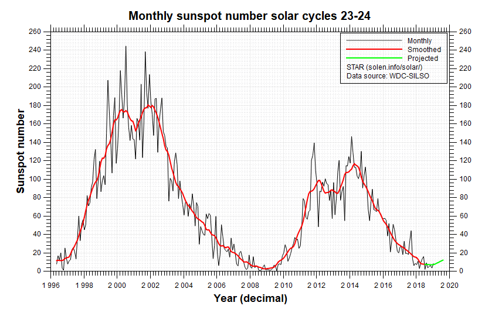
<FONT COLOR="RED"><B><H3>2018/Jan-Dec・総集編</B></H3></FONT>
<HR SIZE="2" WIDTH=500>
<DIV ALIGN="CENTER">
<TABLE BORDER="0" WIDTH="600" ALIGN="CENTER">
<TR ALIGN="LEFT">
<TD>
<B><I>◎"サイクル24”の最低期と予想される2019年に向かってSSNは確実に下降を続けている。
SSN値が"0"となる日が10日以上も続く事もあり、DXシーズンとなる"秋や春"のF2による6mのコ
ンデションは全く期待出来ずに終わってしまった。2018年の夏の"Esのマルチホップ"では、昨
年の"WSJT(JT65)によるEu/NAのQSOはWSJT(FT8=50313MHz)に取って代わった。
"VK/ZLのTEPによるオープンは落ち込んだままだが、サイクルの最低期でも、夏の"マルチホッ
プ"でカリブ海までQSOが可能となっている。
</B></I>
</TD>
</TR>
</TABLE>
</DIV>
</CENTER>

<HR SIZE="2" WIDTH=500>

<P>
<PRE>
<B>[Back Issues Dec.2018]</B>

<FONT COLOR="008040"><B>TIME:UTC(JST-09:00)</B></FONT>
<FONT COLOR="BLUE" SIZE=-1><B>Report from JA1RJU(PM95sq)</B></FONT>
<B>31.Dec.2018(15:00b)</B>

<FONT COLOR="BLUE" SIZE=-1><B>Report from JA1RJU(PM95sq)</B></FONT>
<B>30.Dec.2018(15:00b)</B>

<FONT COLOR="BLUE" SIZE=-1><B>Report from JA1RJU(PM95sq)</B></FONT>
<B>29.Dec.2018(15:00c)</B>
<B>
      -----------------------------------------------------------------
       I4YRW   00:23   50.196    JT65a  -23dB  EME QSO with JE3GRQ(RPT from DXSCAPE)
       VK6AKT  07:30   50.313    FT8    -08dB      QSO with JA5FFJ(TNX RPT)
       VK6CPU    ↓
       VK6AKT  07:58   50.313    FT8    -15dB      QSO with JA3LZS(RPT from DXSCAPE)
       VK6KXW  08:10   50.313    FT8                   into JA5FFJ
      -----------------------------------------------------------------
</B>
<FONT COLOR="BLUE" SIZE=-1><B>Report from JA1RJU(PM95sq)</B></FONT>
<B>28.Dec.2018(15:00b)</B>
<B>
      -----------------------------------------------------------------
       BU2BV   10:57   50.140    SSB               QSO with JA3LZS(RPT from DXSCAPE)
       N8RR    16:15   50.188    JT65a  -20dB  EME QSO with JE3GRQ(RPT from DXSCAPE)
      -----------------------------------------------------------------
</B>
<FONT COLOR="BLUE" SIZE=-1><B>Report from JA1RJU(PM95sq)</B></FONT>
<B>27.Dec.2018(15:00b)</B>

<FONT COLOR="BLUE" SIZE=-1><B>Report from JA1RJU(PM95sq)</B></FONT>
<B>26.Dec.2018(15:00c)</B>
<B>
      -----------------------------------------------------------------
       VK5ZK   05:26   50.313    FT8    -14dB　        into JA3
       VK5BC   05:31   50.313    FT8    ---  　    QSO with JA4
       VK5BC   05:34   50.313    FT8    -13dB　    QSO with JA3
       VK6KXW  05:49   50.313    FT8    -14dB　        into JA4
       VK3OT   05:56   50.313    FT8    -16dB　    QSO with JA4
       VK6RO   06:00   50.313    FT8    -12dB　    QSO with JA1
       VK3OT   06:10   50.313    FT8    -12dB　    QSO with JA1/3/4/5
        ↓
       VK6KXW  06:15   50.313    FT8    -19dB　    QSO with JA1
       VK3OT   06:19   50.313    FT8    -20dB　    QSO with JA4
       VK3OT   06:29   50.313    FT8    -11dB　        into JA1
       VK3OT   06:45   50.313    FT8    -14dB　    QSO with JA4/6
      -----------------------------------------------------------------
</B>
<FONT COLOR="BLUE" SIZE=-1><B>Report from JA1RJU(PM95sq)</B></FONT>
<B>25.Dec.2018(15:00b)</B>

<FONT COLOR="BLUE" SIZE=-1><B>Report from JA1RJU(PM95sq)</B></FONT>
<B>24.Dec.2018(15:00b)</B>
<B>
      -----------------------------------------------------------------
       E51WL   16:37   50.197    JT65a  -27dB  EME CQ  into JG2BRI(RPT from DXSCAPE)
      -----------------------------------------------------------------
</B>
<FONT COLOR="BLUE" SIZE=-1><B>Report from JA1RJU(PM95sq)</B></FONT>
<B>23.Dec.2018(15:00c)</B>
<B>
      -----------------------------------------------------------------
       NN7J    14:16   50.192　  JT65a  -22dB　EME CQ  into JG2BRI(RPT from DXSCAPE)
       LY2IJ   15:37   50.187　  JT65a  -24dB　EME CQ  into JG2BRI        ↓
       E51WL   15:53   50.196　  JT65a  -27dB　EME CQ  into JG2BRI
        ↓
       E51WL   17:24   50.196　  JT65a  -23dB　EME QSO with JE3GRQ
        ↓
       ZS4TX   18:43   50.196　  JT65a  -26dB　EME QSO with JE3GRQ
      ------------------------------------------------------------------
</B>
<CENTER>
 <BR>
</CENTER>
<HR SIZE="3" WIDTH="600">
<FONT COLOR="BLUE" SIZE=-1><B>Report from JA1RJU(PM95sq)</B></FONT>
<B>22.Dec.2018(15:00c)</B>
<B>
      -----------------------------------------------------------------
       NN7J    10:16   50.181    JT65a  -28dB  EME QSO with JG2BRI(RPT from DXSCAPE)
       E51WL   15:05   50.198    JT65a  -29dB  EME CQ  into JG2BRI        ↓
       LY2IJ   16:39   50.181　  JT65a  -28dB　EME     into JG2BRI
      -----------------------------------------------------------------
</B>
<FONT COLOR="BLUE" SIZE=-1><B>Report from JA1RJU(PM95sq)</B></FONT>
<B>21.Dec.2018(15:00c)</B>
<B>
      -----------------------------------------------------------------
       NN7J    11:10   50.192    JT65a  -23dB  EME CQ  into JG2BRI(RPT from DXSCAPE)
      -----------------------------------------------------------------
</B>
<FONT COLOR="BLUE" SIZE=-1><B>Report from JA1RJU(PM95sq)</B></FONT>
<B>20.Dec.2018(15:00b)</B>

<FONT COLOR="BLUE" SIZE=-1><B>Report from JA1RJU(PM95sq)</B></FONT>
<B>19.Dec.2018(15:00b)</B>

<FONT COLOR="BLUE" SIZE=-1><B>Report from JA1RJU(PM95sq)</B></FONT>
<B>18.Dec.2018(15:00b)</B>

<FONT COLOR="BLUE" SIZE=-1><B>Report from JA1RJU(PM95sq)</B></FONT>
<B>17.Dec.2018(15:00b)</B>

<FONT COLOR="BLUE" SIZE=-1><B>Report from JA1RJU(PM95sq)</B></FONT>
<B>16.Dec.2018(15:00b)</B>

<FONT COLOR="BLUE" SIZE=-1><B>Report from JA1RJU(PM95sq)</B></FONT>
<B>15.Dec.2018(15:00c)</B>
<B>
       VK4WTN  05:22:00  50.313.****    FT8     -07dB  QSO with JA5
</B>
<FONT COLOR="BLUE" SIZE=-1><B>Report from JA1RJU(PM95sq)</B></FONT>
<B>14.Dec.2018(15:00b)</B>

<FONT COLOR="BLUE" SIZE=-1><B>Report from JA1RJU(PM95sq)</B></FONT>
<B>13.Dec.2018(15:00b)</B>

<FONT COLOR="BLUE" SIZE=-1><B>Report from JA1RJU(PM95sq)</B></FONT>
<B>12.Dec.2018(15:00b)</B>
<B>
       ZL1SW   01:00:00  50.313.****    FT8     -18dB  into JA6
       ZL1RQ   01:28:00  50.313.****    FT8     -15dB  CQ into JA6
       VK4WTN  01:34:00  50.313.****    FT8     -01dB  QSO with JA6
</B>
<FONT COLOR="BLUE" SIZE=-1><B>Report from JA1RJU(PM95sq)</B></FONT>
<B>11.Dec.2018(15:00b)</B>

<FONT COLOR="BLUE" SIZE=-1><B>Report from JA1RJU(PM95sq)</B></FONT>
<B>10.Dec.2018(15:00c)</B>
<B>
       VK4DCM  03:28:00  50.313.****    FT8     -17dB  into JA3
        ↓
       VK5BC   04:26:30  50.313.****    FT8     -13dB  into JA3
        ↓
       VK5BC   04:41:30  50.313.1638    FT8     -16dB  into JA1(QM05)
        ↓
       VK5BC   04:52:00  50.313.1639    FT8     -13dB  QSO with JA3
       VK5BC   04:52:00  50.313.1639    FT8     -14dB  into JA1(PM95)
</B>
<FONT COLOR="BLUE" SIZE=-1><B>Report from JA1RJU(PM95sq)</B></FONT>
<B>09.Dec.2018(15:00b)</B>

<FONT COLOR="BLUE" SIZE=-1><B>Report from JA1RJU(PM95sq)</B></FONT>
<B>08.Dec.2018(15:00b)</B>

<FONT COLOR="BLUE" SIZE=-1><B>Report from JA1RJU(PM95sq)</B></FONT>
<B>07.Dec.2018(15:00b)</B>

<FONT COLOR="BLUE" SIZE=-1><B>Report from JA1RJU(PM95sq)</B></FONT>
<B>06.Dec.2018(15:00c)</B>
<B>
      -----------------------------------------------------------------
       VK4BLK  03:43:00  50.313.****    FT8     -17dB  into JA3
       VK1DJA  04:05:00  50.313.****    FT8     -19dB  into JA3
       VK4EM   04:30:00  50.313.****    FT8     -16dB CQ into JA5
       VK2XAX  05:00:00  50.313.****    FT8     -14dB CQ into JA5
        ↓
       VK5BC   05:42:00  50.313.****    FT8     -14dB  into JA1(QM05)
       VK8AW   06:02:00  50.313.1842    FT8     -12dB  CQ  into JA1(PM95)
       VK8AW   06:02:30  50.313.1841    FT8     -10dB  QSO with JA1(QM05)
       VK8AW   06:04:30  50.313.1841    FT8     -10dB  QSO with JA3
       VK8AW   06:06:00  50.313.1842    FT8     -10dB  QSO with VK5RM
       VK8AW   06:10:00  50.313.1842    FT8     -11dB  QSO with VK5BC
       VK8AW   06:11:30  50.313.1842    FT8     -05dB  QSO with JA4
        ↓
       VK5XDX  06:28:00  50.313.****    FT8     -18dB  into JA3
       VK8RR   06:39:00  50.313.****    FT8     ---dB  into JA9
        ↓
       VK3OT   07:31:00  50.313.****    FT8     -11dB  into JA5
       VK4UH   07:40:00  50.313.****    FT8     -17dB  into JA1(QM05)
      -----------------------------------------------------------------
　　　◎　久しぶりにVK'sが西日本を中心にオープン。
　　　　　JA5で入感した局(04:00z-07:30z)
           VK2ZQ.VK2XAX.VK2BLS.VK2DVM.VK3OER.VK3OT.VK4EM.VK4UH
           VK4WTN.VK4HJ.VK5BC.VK5RM.VK5AYD.VK5MH.VK5SFA.VK5XDX
           VK8AW.VK8RR.VK8MS (TNX= Report from JA5FFJ)
</B>
<FONT COLOR="BLUE" SIZE=-1><B>Report from JA1RJU(PM95sq)</B></FONT>
<B>05.Dec.2018(15:00b)</B>
<B>
      -----------------------------------------------------------------
       VK3DUT  03:51   50.313    FT8       -14dB        into JA3
        ↓
       VK3DUT  04:18   50.313    FT8       -13dB     CQ into JA5
      -----------------------------------------------------------------
</B>
<FONT COLOR="BLUE" SIZE=-1><B>Report from JA1RJU(PM95sq)</B></FONT>
<B>04.Dec.2018(15:00b)</B>

<FONT COLOR="BLUE" SIZE=-1><B>Report from JA1RJU(PM95sq)</B></FONT>
<B>03.Dec.2018(15:00b)</B>

<FONT COLOR="BLUE" SIZE=-1><B>Report from JA1RJU(PM95sq)</B></FONT>
<B>02.Dec.2018(15:00b)</B>

<FONT COLOR="BLUE" SIZE=-1><B>Report from JA1RJU(PM95sq)</B></FONT>
<B>01.Dec.2018(15:00c)</B>
<DIV ALIGN="CENTER">
<TABLE BORDER="0" WIDTH="600" ALIGN="CENTER">
<TR ALIGN="LEFT">
<TD>
<B>
◎ アフリカのレソト(Lesotho)から6mのEMEで運用している7P8Z(GL=KG30VO)は今朝も23:38zから50.187MHzでJA向けにQRVしてくれた。アンテナのEL(仰角)が可能なJA局から早速7P8ZのCQの信号が-19dB〜-25dB程度で入感しているとリポートされていた。この日のJAからは00:23zにJR3DVLがQSOしている。この時間帯のJA1エリアではローカル局の移動局が50.180MHz〜190MHzでQRVしていてQRMとなり、残念ながら弱いEMEの信号はマスクされて"No decode(受信困難)"状態が続きQSOは不可能だった。7P8ZはJAの"月の入り"前の02:30z頃に、北米とのオープンが始まる05:30z頃からの再運用をアナウンスして休養のため一時QRTした。
6m帯では国際的にEMEの周波数は50.190MHz前後が使われているため、SSB/CWでQRVするJA局が多いこの周波数帯は、JAからEMEにトライするのは非常に困難な状況となっている。今日で最終日となった7P8Zの運用が週末と重なってしまったのは残念だった。
</TD>
</TR>
</TABLE>
</DIV>
</B>
<B>
      ------------------------------------------------------------
       7P8Z　  23:43   50.187　  JT65a  -27dB　EME into JA2
       7P8Z　  23:51   50.187　  JT65a  -25dB　EME into JA2
        ↓
      ------------------------------------------------------------
       7P8Z　  00:15   50.187　  JT65a  -22dB　EME into JA7
       7P8Z　  00:23   50.187　  JT65a  -19dB　EME into JA7
       7P8Z　  00:23   50.187　  JT65a  -23dB　EME QSO with JR3DVL

       7P8Z　  00:29   50.187　  JT65a  -22dB　EME CQ into JA2
        ↓
       7P8Z　  00:52   50.187　  JT65a  -24dB　EME into JA3
        ↓
       S57RR   01:41   50.193　  JT65a  -25dB　EME into JA7
        ↓
       7P8Z　  01:48   50.187    JT65a  -28dB  EME CQ into JA7
       7P8Z    02:02   50.187    JT65a  -25dB  EME CQ into JA2 
       S57RR   02:17   50.193　  JT65a  -27dB　EME CQ into JA2
       7P8Z    02:23   50.187    JT65a  -26dB  EME CQ into JA7 
       S57RR   02:23   50.193　  JT65a  -27dB　EME CQ into JA7
        ↓(JA-Moonset now)
      (7P8Z    05:12   50.187    JT65a  ---dB  EME QRV AGN) 
</B>
<HR SIZE="3" WIDTH="600">
<CENTER>
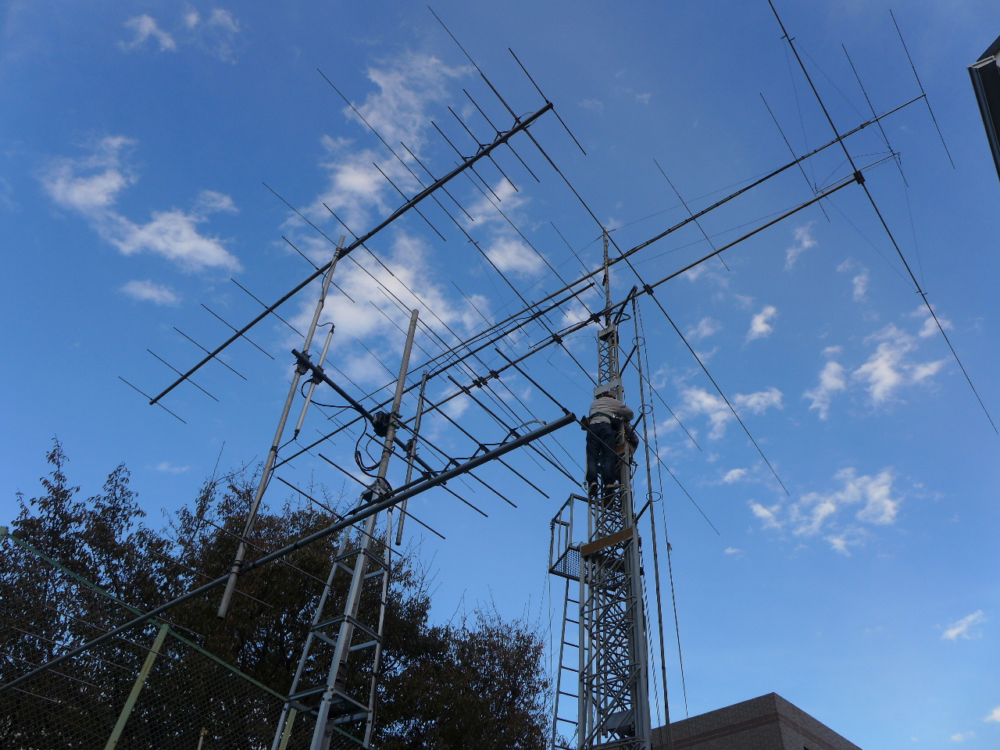 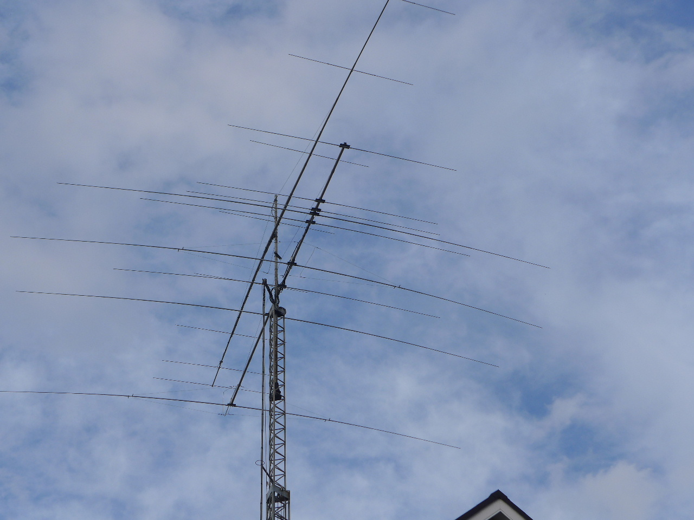<BR>
<B>台風のダメージから復旧。手前は2mのEME用のKLM-14ELx2<BR>
6mの"6M8GJ" & Force12 C-4XL(40m-10m)</B><BR>
</CENTER>
<HR SIZE="3" WIDTH="600">
<PRE>
<B>[Back Issues Nov.2018]

<FONT COLOR="BLUE" SIZE=-1><B>Report from JA1RJU(PM95sq)</B></FONT>
<B>30.Nov.2018(15:00b)</B>
<DIV ALIGN="CENTER">
<TABLE BORDER="0" WIDTH="600" ALIGN="CENTER">
<TR ALIGN="LEFT">
<TD>
<B>
◎ アフリカ大陸の南部のレソト(Lesotho)から7P8Z(GL=KG30VO)が11月30日と12月1日の短期間ながら6mのEMEでQRVを始めました。
Lesothoと日本間のEMEによるQSOのチャンスは「月の入り」となる日本の早朝にかけて「ウインドウ」がある。
7P8Z側のアンテナ(6M8GJ＝8EL)はシングルで仰角(EL)も可変できる状態。今日はJA1/2/3/7などから7局が23:30z-00:18zにかけてQSOに成功している。QSOのチャンスは明日(12/1)の朝だけ。
</TD>
</TR>
</TABLE>
</DIV>
<B>
      -----------------------------------------------------------------
       7P8Z　  23:30   50.187　  JT65a  -18dB　EME QSO with JG1TSG(TNX-RPT)
       7P8Z　  23:48   50.187　  JT65a  -23dB　EME QSO with JO1PSX
        ↓
      -----------------------------------------------------------------
       7P8Z　  00:18   50.187    JT65a  ---dB  EME QSO with JA7QVI(TNX RPT)
       7P8Z　  00:35   50.187    JT65a  -26dB  EME CQ  into JA2
     ------------------------------------------------------------------
</B>
<FONT COLOR="BLUE" SIZE=-1><B>Report from JA1RJU(PM95sq)</B></FONT>
<B>29.Nov.2018(15:00b)</B>

<FONT COLOR="BLUE" SIZE=-1><B>Report from JA1RJU(PM95sq)</B></FONT>
<B>28.Nov.2018(15:00b)</B>

<FONT COLOR="BLUE" SIZE=-1><B>Report from JA1RJU(PM95sq)</B></FONT>
<B>27.Nov.2018(15:00c)</B>
<B>
       OH3SR     18:09       50.189         JT65a  -22dB  EME CQ  into JA2
</B>
<FONT COLOR="BLUE" SIZE=-1><B>Report from JA1RJU(PM95sq)</B></FONT>
<B>26.Nov.2018(15:00c)</B>
<B>
       G5WQ      22:42       50.188         JT65a  -25dB  EME QSO with JA7
       VK4WTN    21:58       50.188         JT65a  --dB   EME QSO with JA7
</B>
<FONT COLOR="BLUE" SIZE=-1><B>Report from JA1RJU(PM95sq)</B></FONT>
<B>25.Nov.2018(15:00b)</B>

<FONT COLOR="BLUE" SIZE=-1><B>Report from JA1RJU(PM95sq)</B></FONT>
<B>24.Nov.2018(15:00b)</B>

<FONT COLOR="BLUE" SIZE=-1><B>Report from JA1RJU(PM95sq)</B></FONT>
<B>23.Nov.2018(15:00c)</B>
<B>
       KX4R      11:32       50.188         JT65a  -22dB  EME into JA2
       NN7J      11:24       50.190         JT65a  -24dB  EME CQ into JA2
</B>
<FONT COLOR="BLUE" SIZE=-1><B>Report from JA1RJU(PM95sq)</B></FONT>
<B>22.Nov.2018(15:00b)</B>

<FONT COLOR="BLUE" SIZE=-1><B>Report from JA1RJU(PM95sq)</B></FONT>
<B>21.Nov.2018(15:00b)</B>

<FONT COLOR="BLUE" SIZE=-1><B>Report from JA1RJU(PM95sq)</B></FONT>
<B>20.Nov.2018(15:00b)</B>

<FONT COLOR="BLUE" SIZE=-1><B>Report from JA1RJU(PM95sq)</B></FONT>
<B>19.Nov.2018(15:00b)</B>

<FONT COLOR="BLUE" SIZE=-1><B>Report from JA1RJU(PM95sq)</B></FONT>
<B>18.Nov.2018(15:00b)</B>

<FONT COLOR="BLUE" SIZE=-1><B>Report from JA1RJU(PM95sq)</B></FONT>
<B>17.Nov.2018(15:00b)</B>

<FONT COLOR="BLUE" SIZE=-1><B>Report from JA1RJU(PM95sq)</B></FONT>
<B>16.Nov.2018(15:00b)</B>

<FONT COLOR="BLUE" SIZE=-1><B>Report from JA1RJU(PM95sq)</B></FONT>
<B>15.Nov.2018(15:00b)</B>

<FONT COLOR="BLUE" SIZE=-1><B>Report from JA1RJU(PM95sq)</B></FONT>
<B>14.Nov.2018(15:00b)</B>

<FONT COLOR="BLUE" SIZE=-1><B>Report from JA1RJU(PM95sq)</B></FONT>
<B>13.Nov.2018(15:00b)</B>
<B>
      KG6JDX      05:08:30    50.313-1413    FT8           CQ into JA1(QM06)
</B>
<FONT COLOR="BLUE" SIZE=-1><B>Report from JA1RJU(PM95sq)</B></FONT>
<B>12.Nov.2018(15:00b)</B>

<FONT COLOR="BLUE" SIZE=-1><B>Report from JA1RJU(PM95sq)</B></FONT>
<B>11.Nov.2018(15:00c)</B>
<B>
      VK8AW       05:08:45    50.313-1944    FT8     -03dB CQ(PH57)
      VK8AW       05:09:15    50.313-1944    FT8     -02dB CQ
        ↓
      VK8AW       05:09:45    50.313-1944    FT8     -05dB CQ
      VK8AW       05:29:45    50.313-****    FT8           into JA7
      ----------------------------------------------------------------
      ◎夏のEsマルチホップによるDXの伝搬が終了後、入感が待たれていた赤道
　　　　越えのVKが50.313MHzのFT8で久しぶりに入感した。SSNが最低期に向か
　　　　う中、F2でのDXの伝搬が期待出来ないこの時期のTEPの伝搬は貴重。　　　　
　    ----------------------------------------------------------------
</B>
<FONT COLOR="BLUE" SIZE=-1><B>Report from JA1RJU(PM95sq)</B></FONT>
<B>10.Nov.2018(15:00b)</B>

<FONT COLOR="BLUE" SIZE=-1><B>Report from JA1RJU(PM95sq)</B></FONT>
<B>09.Nov.2018(15:00b)</B>

<FONT COLOR="BLUE" SIZE=-1><B>Report from JA1RJU(PM95sq)</B></FONT>
<B>08.Nov.2018(15:00b)</B>

<FONT COLOR="BLUE" SIZE=-1><B>Report from JA1RJU(PM95sq)</B></FONT>
<B>07.Nov.2018(15:00b)</B>

<FONT COLOR="BLUE" SIZE=-1><B>Report from JA1RJU(PM95sq)</B></FONT>
<B>06.Nov.2018(15:00b)</B>

<FONT COLOR="BLUE" SIZE=-1><B>Report from JA1RJU(PM95sq)</B></FONT>
<B>05.Nov.2018(15:00b)</B>

<FONT COLOR="BLUE" SIZE=-1><B>Report from JA1RJU(PM95sq)</B></FONT>
<B>04.Nov.2018(15:00b)</B>

<FONT COLOR="BLUE" SIZE=-1><B>Report from JA1RJU(PM95sq)</B></FONT>
<B>03.Nov.2018(15:00b)</B>

<FONT COLOR="BLUE" SIZE=-1><B>Report from JA1RJU(PM95sq)</B></FONT>
<B>02.Nov.2018(15:00b)</B>

<FONT COLOR="BLUE" SIZE=-1><B>Report from JA1RJU(PM95sq)</B></FONT>
<B>01.Nov.2018(15:00b)</B>
<B>
◎VP6D(Ducie Island=(GL=CG75) 6m EME 関連リポート。
      ----------------------------------------------------------------
      Ducie IslandのDX-Peditionは予定よりも早くQRTした。6mでもEMEにQRV
　　　して19局(10月30日現在)が初QSOに成功した。Ducie側では6mのアンテナの
　　　仰角(EL)が可変出来ないのと、現地の"月の出"のみの運用だったため、JA
　　　では"月の出の前"となり、残念ながらQSOのチャンスは無かった。　　　　
　    ----------------------------------------------------------------
</B>
<HR SIZE="3" WIDTH="600">
<DIV ALIGN="CENTER">
<TABLE BORDER="0" WIDTH="600" ALIGN="CENTER">
<TR ALIGN="LEFT">
<TD>
<B>
◎　非常に強い台風24号は、勢力を保った状態で関東地方にも大きな被害を与えた。台風の中心コースからはずれていたものの暴風圏が広かったため、関東地方西部では台風の中心が岐阜から長野県境に差し掛かった深夜零時頃から02時頃にかけて猛烈な強風が吹き荒れ、東京西部の八王子市では観測史上最高の風速45.6m/hを記録した。都心でも35m/hを超える強風だったとの事だが、都心よりも西側で台風の中心に近い三鷹市(わが家)では、ピーク時には八王子市に近い風速40m/h近い強風が吹き荒れていたものと思われる。
最下段まで"クランクダウン"していたアンテナも、南東から横殴りに吹き抜ける暴風は想像を超えるものだった。
　6mの"6M8GJ"はタワーの上でブームをしならせて、暴風に耐えていたが、結果的に180度以上ローテーターの部分でマストが回ってしまった。方向指示はコントローラーで調整できても、6mのアンテナとHF帯のアンテナ(Force 12=C-4XL=40m-10m)の向きのずれを一致させるための、マストの締め付け調整は暫く時間が掛かりそう。
台風24号は未明には関東から東北地方に抜け強風も収まったが、今回の様な強風でも6m & HF帯のアンテナが破壊を免れたのは幸運だった。
</TD>
</TR>
</TABLE>
</DIV>
</B>
<CENTER>
 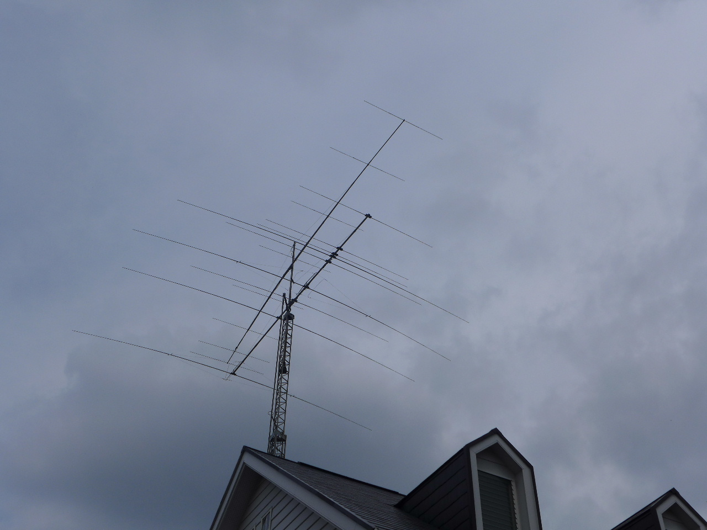<BR>
<B>6mの"6M8GJ" & Force12 C-4XL(40m-10m)</B><BR>
</CENTER>
<HR SIZE="3" WIDTH="550">
<PRE>
<B>[Back Issues Oct.2018]
<B>31.Oct.2018(15:00b)</B>
<B>
◎VP6D(Ducie Island=(GL=CG75) 6m EME 関連リポート。
      ----------------------------------------------------------------
      091800 5 -21 2.4  78  3 # W5ADD VP6D CG75 OOO 1 0 (Report from S51DI)
      092800 0 -29 3.1 108 12 * CQ VP6D CG75          (Report from W7GJ)
      092800 0 -26 2.9  75  6 * CQ VP6D CG75          (Report from OH2BC)
      092800 0 -27 2.9 140  3 * CQ VP6D CG75          (Report from W8PAT)
      092800 3 -22 2.4  89  1 * CQ VP6D CG75 1 10     (Report from S51DI)
      092800 0 -28 2.9 145  3 * CQ VP6D CG75          (Report from W5ADD)
      092801 3 -27 1.9 129  3 * CQ VP6D CG75 1 10     (Report from K2ZD)
      093601 7 -20 1.5  54  3 # xxxx VP6D             (Report from ON4GG)
      094000 1 -25 3.1 113  3 * CQ VP6D CG75          (Report from W7GJ)
      094001 0 -28 1.3  54  1 * CQ VP6D CG75 0 10     (Report from ON4GG)
      094000 2 -23 2.9 113  1 * CQ VP6D CG75          (Report from S57RR)
      094000 3 -23 3.0 135  3 * CQ VP6D CG75 0 10     (Report from K2ZD)
      094200 1 -26 2.8 113  3 * CQ VP6D CG75          (Report from S57RR)
      094200 0 -28 2.7 151  3 * CQ VP6D CG75          (Report from W5ADD)
      094202 3 -24 0.3  67  3 * CQ VP6D CG75 0 10     (Report from SP3RNZ)
      094500 2 -27 1.4 -495 4 * xxxx N7NW CN87 1 0    (Report from 4O6AH) 
      094701 5 -17 1.4 466  5 * VP6D W5ADD EM40 1 0   (Report from ON4GG)
      094801 4 -24 1.4  54  3 # xxxxxx VP6D OOO 1 0   (Report from ON4GG)
      094900 3 -25 2.3 495  4 * VP6D W5ADD EM40 1 0   (Report from 4O6AH)
      100000 7 -23 3.1 110  4 * CQ VP6D CG75          (Report from W7GJ)
      100000 0 -31 3.1 143 10 * CQ VP6D CG75          (Report from W8PAT)
      100001 7 -20 1.4  57  3 * CQ VP6D CG75 1 10     (Report from ON4GG)
      -----------------------------------------------------------------
      * VP6D= They will tear down the antenna as soon as the sun comes up.
                                                      (Report from W7GJ)
      -----------------------------------------------------------------
</B>
<FONT COLOR="BLUE" SIZE=-1><B>Report from JA1RJU(PM95sq)</B></FONT>
<B>30.Oct.2018(15:00b)</B>

<FONT COLOR="BLUE" SIZE=-1><B>Report from JA1RJU(PM95sq)</B></FONT>
<B>29.Oct.2018(15:00c)</B>
<B>
◎VP6D(Ducie Island=(GL=CG75) 6m EME 関連リポート。
      ----------------------------------------------------------------
      VP6D   073500  50200.0      EME TNX DXCC        (Report from G8BCG) 
      ----------------------------------------------------------------
      073600 3 -27 3.1 129 3 # #### VP6D CG75 OOO 1 0 (Report from KG7H)
      080900 3 -14 -0.8 -433 1 * VP6D 4O6AH JN92      (Report from ON4IQ)
      -----------------------------------------------------------------
      * VP6D= I think they are on at least until October 31 moonrise GMT. 
                                                       (Report from W7GJ)
      -----------------------------------------------------------------
</B>
<FONT COLOR="BLUE" SIZE=-1><B>Report from JA1RJU(PM95sq)</B></FONT>
<B>28.Oct.2018(15:00c)</B>
<B>
◎北米、ヨーロッパからのVP6D(Ducie Island=(GL=CG75)関連リポート。
      ----------------------------------------------------------------
      063800 5 -24 3.1 129 3 # KG7H VP6D CG75 OOO 1 10 (Report from KG7H)
      064600 2 -26 3.0 -318 3 # ES6RQ VP6D CG75 OOO
      065000 8 -26     -318 3 RRR                   (Report from ES6RQ)
      065200 0 -27 3.2 -318 3 * CQ VP6D CG75        (Report from ES6RQ)
      065200 4 -21 2.5 62 3 * CQ VP6D CG75          (Report from G8BCG)
      065400 0 -25 2.5 51 4 * CQ VP6D CG75 0 10     (Report from SP3RNZ)
      065601 4 -26 2.3 94 3 * CQ VP6D CG75          (Report from W7GJ)
      065801 4 -27 2.3 92 1 * CQ VP6D CG75          (Report from W7GJ)
      070000 4 -19 2.5 59 3 * CQ VP6D CG75          (Report from G8BCG)
      070001 7 -22 2.3 92 3 * CQ VP6D CG75          (Report from W7GJ)
      071401 0 -30 2.3 89 20 * CQ VP6D CG75         (Report from W7GJ)
      -----------------------------------------------------------------
      071500 2 -17 -0.3 -393 5 * VP6D SP3RNZ JO92   (Report from G8BCG)
      -----------------------------------------------------------------
      * VP6D= They are QRT for tonight?.            (Report from W7GJ)
      -----------------------------------------------------------------
</B>
<FONT COLOR="BLUE" SIZE=-1><B>Report from JA1RJU(PM95sq)</B></FONT>
<B>27.Oct.2018(15:00b)</B>

<FONT COLOR="BLUE" SIZE=-1><B>Report from JA1RJU(PM95sq)</B></FONT>
<B>26.Oct.2018(15:00c)</B>
<DIV ALIGN="CENTER">
<TABLE BORDER="0" WIDTH="600" ALIGN="CENTER">
<TR ALIGN="LEFT">
<TD>
<B>
◎　10月20日からHF帯の運用が始まっているDucie IslandのVP6D(GL=CG75/OC=182)の6mの運用(50.200MHz)が始まった。6mはEMEの運用となっているが、今のところQRVしている時間帯は現地の「月の出（Moonrise）」のため、通信相手はヨーロッパと北米だけで、JAからはまだ「月は見えない」時間帯となっている。JAの「月の出」は現在10:00z以降でVP6Dではアンテナのエレベーション(EL)は50度以上となるので、"EL調整”が出来ないアンテナでのQSOのチャンスは少ない。現在ヨーロッパなどからVP6Dの受信リポートが上がっている。
</TD>
</TR>
</TABLE>
</DIV>
<B>
      -------------------------------------------------------
      045600 1 -26 4.2 70 1 * CQ VP6D CG75 last CQ decoded
      045800 3 -25 4.2 70 3 # S57RR VP6D CG75 OOO 
      050400 0 -29 4.3 70 5 # S57RR VP6D CG75 OOO last decode
      -------------------------------------------------------
      052500  50200.0 best -18dB EME (SWL)              G8BCG  
      -------------------------------------------------------
</B>
<FONT COLOR="BLUE" SIZE=-1><B>Report from JA1RJU(PM95sq)</B></FONT>
<B>25.Oct.2018(15:00c)</B>
<B>
      BI4SDT      07:10:30-   50.313-2631    FT8     -09dB QSO with JA3
      BI4SDT      07:11:30    50.313-2631    FT8     -14dB CQ(PM01)
        ↓
      BI4SDT      07:20:45-   50.313-2628    FT8     -06dB CQ
        ↓
      (Es JA4/5 08:10-09:10z  FT8 +13dB at peak!)
</B>
<FONT COLOR="BLUE" SIZE=-1><B>Report from JA1RJU(PM95sq)</B></FONT>
<B>24.Oct.2018(15:00b)</B>

<FONT COLOR="BLUE" SIZE=-1><B>Report from JA1RJU(PM95sq)</B></FONT>
<B>23.Oct.2018(15:00b)</B>

<FONT COLOR="BLUE" SIZE=-1><B>Report from JA1RJU(PM95sq)</B></FONT>
<B>22.Oct.2018(15:00b)</B>

<FONT COLOR="BLUE" SIZE=-1><B>Report from JA1RJU(PM95sq)</B></FONT>
<B>21.Oct.2018(15:00b)</B>

<FONT COLOR="BLUE" SIZE=-1><B>Report from JA1RJU(PM95sq)</B></FONT>
<B>20.Oct.2018(15:00b)</B>

<FONT COLOR="BLUE" SIZE=-1><B>Report from JA1RJU(PM95sq)</B></FONT>
<B>19.Oct.2018(15:00b)</B>
<B>
  ◎ 09:06z-09:30z＝>Esに寄るJA8(QN02)が強力(+9dB Peak)に入感。
</B>
<FONT COLOR="BLUE" SIZE=-1><B>Report from JA1RJU(PM95sq)</B></FONT>
<B>18.Oct.2018(15:00c)</B>
<B>
  ◎ 46th・2018 SEANET CONVENTION (Yogyakarta,Indonesia=YB46SEA=18-21.Oct)
</B>
<FONT COLOR="BLUE" SIZE=-1><B>Report from JA1RJU(PM95sq)</B></FONT>
<B>17.Oct.2018(15:00b)</B>

<FONT COLOR="BLUE" SIZE=-1><B>Report from JA1RJU(PM95sq)</B></FONT>
<B>16.Oct.2018(15:00b)</B>

<FONT COLOR="BLUE" SIZE=-1><B>Report from JA1RJU(PM95sq)</B></FONT>
<B>15.Oct.2018(15:00b)</B>

<FONT COLOR="BLUE" SIZE=-1><B>Report from JA1RJU(PM95sq)</B></FONT>
<B>14.Oct.2018(15:00b)</B>

<FONT COLOR="BLUE" SIZE=-1><B>Report from JA1RJU(PM95sq)</B></FONT>
<B>13.Oct.2018(15:00b)</B>

<FONT COLOR="BLUE" SIZE=-1><B>Report from JA1RJU(PM95sq)</B></FONT>
<B>12.Oct.2018(15:00b)</B>

<FONT COLOR="BLUE" SIZE=-1><B>Report from JA1RJU(PM95sq)</B></FONT>
<B>11.Oct.2018(15:00c)</B>
<B>
      JD1BHA      04:13:30-   50.313-1005    FT8     -18dB QSO with JA1
        ↓ 
      JD1BHA      07:14:30-   50.313-1010    FT8     -14dB/-12dB QSO
      JD1BHA      07:15:00-   50.313-1005    FT8     -11dB CQ(QL16)
      JD1BHA      07:28:00-   50.313-1005    FT8     -01dB CQ(QL16)
        ↓ 
</B>
<FONT COLOR="BLUE" SIZE=-1><B>Report from JA1RJU(PM95sq)</B></FONT>
<B>10.Oct.2018(15:00c)</B>
<B>
○ C21GJ QSO with:(Oct.09)
      ------------------------------------------------------------------------
       N2RVU
       Copied but not worked were: WA2TP, JR1LZK, K1WHS, KD7YZ, JH2COZ, HA8FK 
          (Report from W7GJ HP)
      ---------------------------------------------------------------------------
     ◎　W7GJ・LanceによるC21GJの6m-DXpeditionは本日(日本時間＝Oct.10)で終了した。
　　　　トータルのQSOは119局。　
</B>
<FONT COLOR="BLUE" SIZE=-1><B>Report from JA1RJU(PM95sq)</B></FONT>
<B>09.Oct.2018(15:00c)</B>
<B>
○ C21GJ QSO:(Oct.08)
      ------------------------------------------------------------------------
      I worked no new stations at all today. The total stations contacted still
      stands at 117.
      Copied but not worked were: K7ULS, VE2DFO, K1WHS, WT8V, JH2COZ, K8MFO
      N4QWZ, HA8FK, S53R and I4YRW.
      Tomorrow is probably the last day for EME, but that will depend on EME 
      conditions and activity levels.  
          (Report from W7GJ HP)
      ---------------------------------------------------------------------------
</B>
<FONT COLOR="BLUE" SIZE=-1><B>Report from JA1RJU(PM95sq)</B></FONT>
<B>08.Oct.2018(15:00c)</B>
<B>
       ZA5V       07:45-      50.193         JT65a   -25dB EME QSO JN1JFC(TNX-RPT)
      ---------------------------------------------------------------------------
○ C21GJ QSO with:(Oct.07)
      ------------------------------------------------------------------------
       W7GJ, KB7Q/7, K7MTD/7, KF7VSX/7, AJ7LL/7, NN7J, UX0FF, SM5AQD
          (Report from W7GJ HP)</B>
      ---------------------------------------------------------------------------
<CENTER>
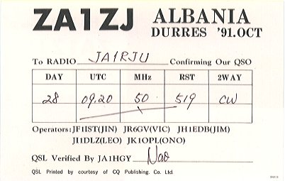
<BR><B>6mのEMEでアクティブにQRVしているAlbaniaのZA5Vは<BR>
1991年10月にJA'sのグループに寄って運用されたZA1ZJ以来のQSO。
ZA5Vの6m運用は今日が最終日となった。</B>
<HR SIZE="3" WIDTH="550">
</CENTER>
<PRE>
</B>
<FONT COLOR="BLUE" SIZE=-1><B>Report from JA1RJU(PM95sq)</B></FONT>
<B>07.Oct.2018(15:00b)</B>
<B>
○ C21GJ QSO with:(Oct.06)
      ------------------------------------------------------------------------
       WG8Q, VK4WTN, WA9LFO, N9IW, W6TOD, JE3GRQ, PA9RX and I4EAT.
          (Report from W7GJ HP)</B>
      ---------------------------------------------------------------------------
</B>
<FONT COLOR="BLUE" SIZE=-1><B>Report from JA1RJU(PM95sq)</B></FONT>
<B>06.Oct.2018(15:00c)</B>
<B>
○ C21GJ QSO with:(Oct.05)
      ------------------------------------------------------------------------
       N1DG, K2ZJ, K9TVG, KC8ENN, K8OM, K0DAS, KX4R,SP3RNZ, LZ2CC, PA7MM, ZA5V
          (Report from W7GJ HP)</B>
      --------------------------------------------------------------------------
</B>
<DIV ALIGN="CENTER">
<TABLE BORDER="0" WIDTH="600" ALIGN="CENTER">
<TR ALIGN="LEFT">
<TD><B>
◎　W7GJ・LanceによるNauru(GL=RI39II)からの6m EME DXpeditionは連日アクティブにQRVしていて、彼のHPのリポートでは、既にQSOは101局に達しいる。今日のリポートで、特筆したいのは同じくDXpeditionで6mのEMEにQRVしているAlbania(GL=JN92RD)のZA5VとのQSOに成功した事です。　C21GJのアンテナはM2社の6M8GJ(8EL)シングルの運用で、一方のZA5VはYU7EFタイプの8ELx2のアンテナを使用しての運用でした。JAからQSOしている各局は"8ELx4"クラス以上のゲインのあるアンテナを使用していてリポートは-19dB前後でした。EMEのQSOとしては双方ともシンプルなアンテナでのQSOで"ノイズレベル"などかなり条件の良い状況だったと思われます。<BR>
◎　先週末に各地に大きな被害を与えた台風24号に続いて、今週も台風25号が西日本に被害を与えている。　今回の台風は若干西寄りのコースを通って、韓国南部を通過後に日本海を北上、北海道に抜けるものと見られている。関東は暴風の影響は無さそうだが、強風圏が"すっぽり"本土を覆うほど広範囲なので、明日未明から関東地方でも南からの強風の影響が心配される。
</TD>
</TR>
</TABLE>
</DIV>
</B>
<FONT COLOR="BLUE" SIZE=-1><B>Report from JA1RJU(PM95sq)</B></FONT>
<B>05.Oct.2018(15:00c)</B>
<B>
○ C21GJ QSO with:(Oct.04)
      -------------------------------------------------------------------
       VE5UF, K6QXY, K7RWT, VK3DUT, N4II, W8PAT, N8GTI, KL7HBK, YL2AO (2nd time)
       SM7FJE, OK1RD, PA5Y, G3WOS, S59Z, SP4MPB,
          (Report from W7GJ HP)</B>
      ----------------------------------------------------------------------
</B>
<FONT COLOR="BLUE" SIZE=-1><B>Report from JA1RJU(PM95sq)</B></FONT>
<B>04.Oct.2018(15:00c)</B>
<B>
      PA5Y       02:55-      50.184         JT65a         EME QSO JG1TSG(RPT on DXSCAPE)
      ---------------------------------------------------------------------------

○ C21GJ QSO with:(Oct.03)
      -------------------------------------------------------------------
      VP8EME, CT1HZE, EA8DBM, G4BWP, N7IP, W7KNT, VK5PJ, K1SIX
      N8JX,  W9GA, W9JN, K9CT, ND0B, YL2AO, HA0DU, S51DI
          (Report from W7GJ HP)</B>
      ----------------------------------------------------------------------
</B>
<FONT COLOR="BLUE" SIZE=-1><B>Report from JA1RJU(PM95sq)</B></FONT>
<B>03.Oct.2018(15:00c)</B>
<B>
      ZA5V       01:41-      50.193         JT65a   -19dB EME QSO JA7QVI(RPT on DXSCAPE)
      C21GJ      20:09-      50.190         JT65a   -23dB EME Try to NA JG2BRI(RPT on DXSCAPE)
      ---------------------------------------------------------------------------

○ C21GJ QSO with:(Oct.02)
      -------------------------------------------------------------------
      W1JJ, JA7QVI, NT0V, OH5VY, DK2PH, ON4AOI, DK8NE, S57RR, ZS6NK, DK8NE
          (Report from W7GJ HP)</B>
      ----------------------------------------------------------------------
<FONT COLOR="BLUE" SIZE=-1><B>Report from JA1RJU(PM95sq)</B></FONT>
<B>02.Oct.2018(15:00b)</B>
<B>
      ZA5V       00:44-      50.193         JT65a   -18dB EME QSO JG1TSG(TNX-RPT)
      ---------------------------------------------------------------------------
</B>
<FONT COLOR="BLUE" SIZE=-1><B>Report from JA1RJU(PM95sq)</B></FONT>
<B>01.Oct.2018(15:00c)</B>

<B>
○ C21GJ QSO with:(Oct.01)
      -------------------------------------------------------------------
      G8VR, MM0AMW, JG2BRI, JS2CQA, N6JV, UT4MF, OH7KM, LA7DFA, S59A, 
      DF9OX, G5WQ, G4FUF, F6BKI and GD0TEP 
           (Report from W7GJ HP)</B>
      ----------------------------------------------------------------------
<DIV ALIGN="CENTER">
<TABLE BORDER="0" WIDTH="600" ALIGN="CENTER">
<TR ALIGN="LEFT">
<TD>
<B>
◎　非常に強い台風24号は、勢力を保った状態で関東地方にも大きな被害を与えた。台風の中心コースからはずれていたものの暴風圏が広かったため、関東地方西部では台風の中心が岐阜から長野県境に差し掛かった深夜零時頃から02時頃にかけて猛烈な強風が吹き荒れ、東京西部の八王子市では観測史上最高の風速45.6m/hを記録した。都心でも35m/hを超える強風だったとの事だが、都心よりも西側で台風の中心に近い三鷹市(わが家)では、ピーク時には八王子市に近い風速40m/h近い強風が吹き荒れていたものと思われる。
最下段まで"クランクダウン"していたアンテナも、南東から横殴りに吹き抜ける暴風は想像を超えるものだった。
　6mの"6M8GJ"はタワーの上でブームをしならせて、暴風に耐えていたが、結果的に180度以上ローテーターの部分でマストが回ってしまった。方向指示はコントローラーで調整できても、6mのアンテナとHF帯のアンテナ(Force 12=C-4XL=40m-10m)の向きのずれを一致させるための、マストの締め付け調整は暫く時間が掛かりそう。
台風24号は未明には関東から東北地方に抜け強風も収まったが、今回の様な強風でも6m & HF帯のアンテナが破壊を免れたのは幸運だった。
</TD>
</TR>
</TABLE>
</DIV>
</B>
<CENTER>
 <BR>
<B>6mの"6M8GJ" & Force12 C-4XL(40m-10m)</B><BR>
</CENTER>
<HR SIZE="3" WIDTH="550">
<PRE>
<B>[Back Issues Sep.2018]
<B>30.Sep.2018(15:00c)</B>
<DIV ALIGN="CENTER">
<TABLE BORDER="0" WIDTH="600" ALIGN="CENTER">
<TR ALIGN="LEFT">
<TD><B>
◎W7GJ・LanceによるNauru(GL=RI39ii)からの6m EME DXpeditionが始まった。
C21GJの運用は、Sep.28-からOct.14の予定で、既に9/30日現在、JG1TSG/下野さんを含むアジア、北米、ヨーロッパ、アフリカ、オセアニア(FK8/ZL)など5大陸、20数局とQSO(オセアニアは受信のみ)に成功している。
6mのEMEでは通常50.190MHzのJT65aで運用しているが、EMEにトライしている時に、CQなどが電離層伝搬で聞こえたとしてもCWやSSBでは呼ばない様にとの事。EMEにトライしていない時間帯(C21から月が見られない時間)に50.313MHzのFT8で運用する可能性もあるとのこと。
<BR>
○ QSO=With C21GJ<BR>
   G8BCG. N3XX. K2ZD. W7JW. GM3POI. N7NW. K7CW. N8RR
   K4PI. VE1JF. JG1TSG. KG7H. KJ9I. OH6MIK. UR0MC
   UT7QF. ES6RQ. OH2BC.IW5DHN. ON4GG. OZ4VV. ZS4TX
   ON4IQ. DL8YHR= (from W7GJ HP)<BR>
          -------------------------------------------------------------<BR>
◎強い勢力を保っている非常に強い台風24号は、30日夜には高知、愛媛、徳島県東方海上を通過し、和歌山県田辺市に上陸。台風の暴風圏はスピードを上げ東海地方を通過後、本土を縦断して、明日の午後には関東、東北地方をから北海道東部の太平洋上に抜ける模様。
</TD>
</TR>
</TABLE>
</DIV>
</B>
<FONT COLOR="BLUE" SIZE=-1><B>Report from JA1RJU(PM95sq)</B></FONT>
<B>29.Sep.2018(15:00c)</B>
<B>
      -------------------------------------------------------------------
      C21GJ       14:58-      50.190         JT65a   -23dB EME QSO JG1TSG(TNX-RPT)
      -------------------------------------------------------------------
<DIV ALIGN="CENTER">
<TABLE BORDER="0" WIDTH="600" ALIGN="CENTER">
<TR ALIGN="LEFT">
<TD><B>
◎非常に強い大型台風24号は、29日夕方には沖縄を通過し奄美諸島(徳之島)に接近中。
この台風は九州に上陸後に速度を上げ本土を縦断する最悪のコースが予想されている。関東地方への最接近は明日(30日)深夜の予定だが、先日の台風21号以上の強風が予想されているため、既にアンテナの被害軽減のためアンテナは"クランクダウン"し、早々と6mのワッチも"休業"状態となっている。
</TD>
</TR>
</TABLE>
</DIV>
</B>
<FONT COLOR="BLUE" SIZE=-1><B>Report from JA1RJU(PM95sq)</B></FONT>
<B>28.Sep.2018(15:00b)</B>

<FONT COLOR="BLUE" SIZE=-1><B>Report from JA1RJU(PM95sq)</B></FONT>
<B>27.Sep.2018(15:00b)</B>

<FONT COLOR="BLUE" SIZE=-1><B>Report from JA1RJU(PM95sq)</B></FONT>
<B>26.Sep.2018(15:00b)</B>

<FONT COLOR="BLUE" SIZE=-1><B>Report from JA1RJU(PM95sq)</B></FONT>
<B>25.Sep.2018(15:00b)</B>

<FONT COLOR="BLUE" SIZE=-1><B>Report from JA1RJU(PM95sq)</B></FONT>
<B>24.Sep.2018(15:00b)</B>

<FONT COLOR="BLUE" SIZE=-1><B>Report from JA1RJU(PM95sq)</B></FONT>
<B>23.Sep.2018(15:00c)</B>
<DIV ALIGN="CENTER">
<TABLE BORDER="0" WIDTH="600" ALIGN="CENTER">
<TR ALIGN="LEFT">
<TD><B>
◎夏のDXシーズンも終わり、9月は静かな6mに戻っている。
昨年のデジタル通信(WSJT)は、北米、ヨーロッパともに50.276MHzのJT65でのQSOが主流だったが、今シーズンは50.313MHzのFT8にシフトされ、昨年大賑わいだったJT65の周波数は"閑古鳥"が鳴くほどの大きな変化の年となった。
FT8でのスピーディなQSOが好まれ、HF帯でのDX-Peditionにも多様された事もあり、急速にQRVする局が増えたのが"WSJT"の状況を大きく変えた特徴的な年となった。FT8の"出現"により、ますます6mのQSOも"HF帯化"が進んだと言えそう。
一方、"HF帯化"によって最近は、Club-LogやOQRS/Lotwなどの普及で、従来の6mの主流だった"紙QSL"でのコンファームが好まれなくなつてきたのは淋しい。
</TD>
</TR>
</TABLE>
</DIV>
</B>
<CENTER>
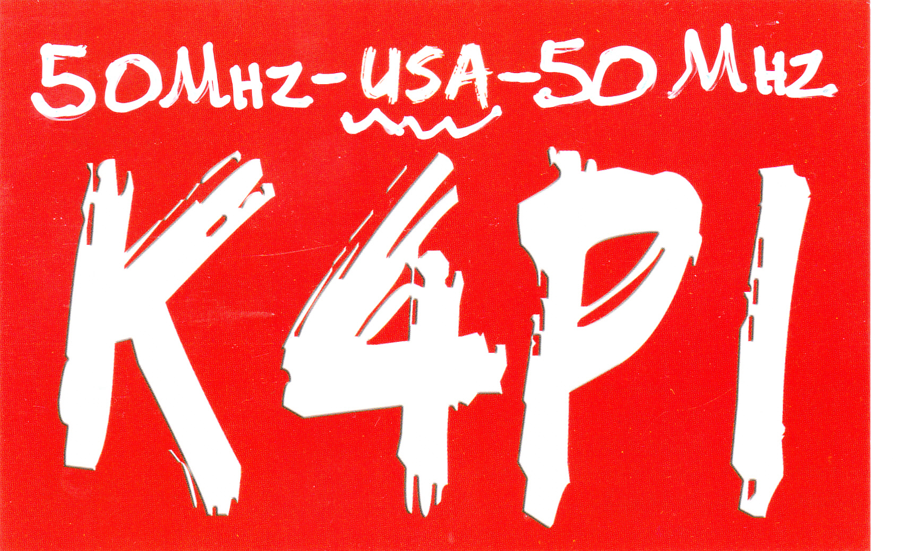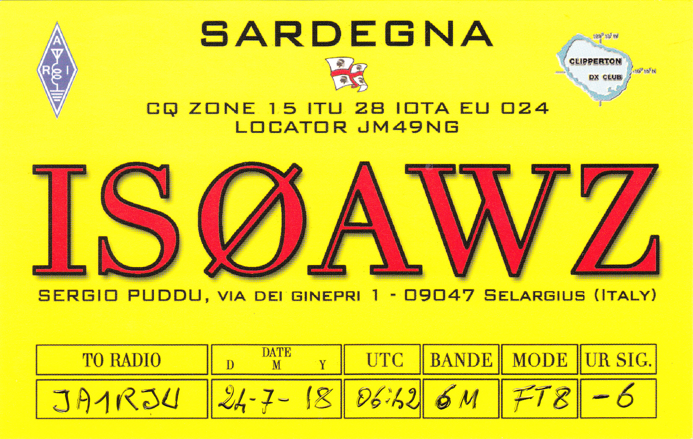
<BR><B>EsシーズンのQSOからK4PIとIS0AWZ(Sardegna)のQSL</B>
<HR SIZE="3" WIDTH="550">
</CENTER>
<PRE>
<FONT COLOR="BLUE" SIZE=-1><B>Report from JA1RJU(PM95sq)</B></FONT>
<B>22.Sep.2018(15:00b)</B>

<FONT COLOR="BLUE" SIZE=-1><B>Report from JA1RJU(PM95sq)</B></FONT>
<B>21.Sep.2018(15:00b)</B>

<FONT COLOR="BLUE" SIZE=-1><B>Report from JA1RJU(PM95sq)</B></FONT>
<B>20.Sep.2018(15:00b)</B>

<FONT COLOR="BLUE" SIZE=-1><B>Report from JA1RJU(PM95sq)</B></FONT>
<B>19.Sep.2018(15:00b)</B>

<FONT COLOR="BLUE" SIZE=-1><B>Report from JA1RJU(PM95sq)</B></FONT>
<B>18.Sep.2018(15:00b)</B>

<FONT COLOR="BLUE" SIZE=-1><B>Report from JA1RJU(PM95sq)</B></FONT>
<B>17.Sep.2018(15:00b)</B>

<B>15-16.Sep.2018(15:00b)</B>
<FONT COLOR="RED"><B>◎ 第47回東北6SG & 全国VSGミーティング in 宮城(岩沼リゾ−ト)</FONT>
 
<FONT COLOR="BLUE" SIZE=-1><B>Report from JA1RJU(PM95sq)</B></FONT>
<B>14.Sep.2018(15:00b)</B>

<FONT COLOR="BLUE" SIZE=-1><B>Report from JA1RJU(PM95sq)</B></FONT>
<B>13.Sep.2018(15:00b)</B>

<FONT COLOR="BLUE" SIZE=-1><B>Report from JA1RJU(PM95sq)</B></FONT>
<B>12.Sep.2018(15:00b)</B>

<FONT COLOR="BLUE" SIZE=-1><B>Report from JA1RJU(PM95sq)</B></FONT>
<B>11.Sep.2018(15:00b)</B>

<FONT COLOR="BLUE" SIZE=-1><B>Report from JA1RJU(PM95sq)</B></FONT>
<B>10.Sep.2018(15:00b)</B>

<FONT COLOR="BLUE" SIZE=-1><B>Report from JA1RJU(PM95sq)</B></FONT>
<B>09.Sep.2018(15:00b)</B>
<B>
      ---------------------------------------------------------------  
      ○(FT8=> Asia. Oceania. South East Asia. & EU方面 =>00:00z-10:00z)
      ---------------------------------------------------------------
      DU7/PA0HIP  08:13:00-   50.313-****    FT8     -17dB QSO with JA1
        ↓  
      DU7/PA0HIP  08:22:00-   50.313-1678    FT8     -10dB QSO with JA1
        ↓  
     (10:00z)
</B>
<FONT COLOR="BLUE" SIZE=-1><B>Report from JA1RJU(PM95sq)</B></FONT>
<B>08.Sep.2018(15:00b)</B>
<DIV ALIGN="CENTER">
<TABLE BORDER="0" WIDTH="600" ALIGN="CENTER">
<TR ALIGN="LEFT">
<TD>
<B>
◎北海道の厚真町付近を震源とする震度7の大地震(胆振中東部地震)によるライフラインは徐々に回復しているが、札幌などの大都市部でもまだ一部停電が続いている。判明する死傷者も日を追うごとに増えている。被災された皆様にお見舞い申し上げます。
</TD>
</TR>
</TABLE>
</DIV>
</B>
<FONT COLOR="BLUE" SIZE=-1><B>Report from JA1RJU(PM95sq)</B></FONT>
<B>07.Sep.2018(15:00b)</B>

<FONT COLOR="BLUE" SIZE=-1><B>Report from JA1RJU(PM95sq)</B></FONT>
<B>06.Sep.2018(15:00b)</B>
<DIV ALIGN="CENTER">
<TABLE BORDER="0" WIDTH="600" ALIGN="CENTER">
<TR ALIGN="LEFT">
<TD>
<B>
◎午前3時08分、北海道の厚真町東部付近を震源とする震度7の大地震が発生、北海道全域(295万戸)が停電する大災害となっている。電力の供給が停止されたため、今夕になっても"ライフライン"に甚大な影響を与えている。関東地方では台風21号後に吹き続けていた強風も治まった。
</TD>
</TR>
</TABLE>
</DIV>
</B>
<FONT COLOR="BLUE" SIZE=-1><B>Report from JA1RJU(PM95sq)</B></FONT>
<B>05.Sep.2018(15:00b)</B>
<DIV ALIGN="CENTER">
<TABLE BORDER="0" WIDTH="600" ALIGN="CENTER">
<TR ALIGN="LEFT">
<TD>
<B>
◎四国に上陸し、神戸・大阪など近畿地方に甚大な被害を与えた台風21号は、5日午前中に日本海を北上、北海道西方海上で熱帯低気圧に変わったが、関東地方では今日の夕方まで南からの20mを超える吹き返しの強風が吹き続けた。
</TD>
</TR>
</TABLE>
</DIV>
</B>
<FONT COLOR="BLUE" SIZE=-1><B>Report from JA1RJU(PM95sq)</B></FONT>
<B>04.Sep.2018(15:00b)</B>
<DIV ALIGN="CENTER">
<TABLE BORDER="0" WIDTH="600" ALIGN="CENTER">
<TR ALIGN="LEFT">
<TD>
<B>
◎猛烈な台風21号は、徳島県南部に上陸した後、神戸・大阪など関西地域に再上陸、広範囲に大きな被害を与え、スピードを上げながら石川県沖を北北西に進んでいる。台風の"強風圏"に入っている関東でも1900JST現在、20mを超える強風が吹き荒れている。
</TD>
</TR>
</TABLE>
</DIV>
</B>
<FONT COLOR="BLUE" SIZE=-1><B>Report from JA1RJU(PM95sq)</B></FONT>
<B>03.Sep.2018(15:00b)</B>

<FONT COLOR="BLUE" SIZE=-1><B>Report from JA1RJU(PM95sq)</B></FONT>
<B>02.Sep.2018(15:00b)</B>

<FONT COLOR="BLUE" SIZE=-1><B>Report from JA1RJU(PM95sq)</B></FONT>
<B>01.Sep.2018(15:00b)</B>

<HR SIZE="3" WIDTH="550">
<PRE>
<B>[Back Issues Aug.2018]
<B>31.Aug.2018(15:00b)</B>

<FONT COLOR="BLUE" SIZE=-1><B>Report from JA1RJU(PM95sq)</B></FONT>
<B>30.Aug.2018(15:00b)</B>
<B>
      ---------------------------------------------------------------  
      ○(FT8=> Asia. Oceania. South East Asia. & EU方面 =>00:00z-10:00z)
      ---------------------------------------------------------------
      DS3CHK       08:27:45-   50.313-623     FT8     -16dB CQ(PM36)
        ↓  
     (10:00z)
</B>
<FONT COLOR="BLUE" SIZE=-1><B>Report from JA1RJU(PM95sq)</B></FONT>
<B>29.Aug.2018(15:00b)</B>

<FONT COLOR="BLUE" SIZE=-1><B>Report from JA1RJU(PM95sq)</B></FONT>
<B>28.Aug.2018(15:00b)</B>

<FONT COLOR="BLUE" SIZE=-1><B>Report from JA1RJU(PM95sq)</B></FONT>
<B>27.Aug.2018(15:00b)</B>

<FONT COLOR="BLUE" SIZE=-1><B>Report from JA1RJU(PM95sq)</B></FONT>
<B>26.Aug.2018(15:00b)
<FONT COLOR="RED">◎「ハムフェア・2018」</FONT></B>

<FONT COLOR="BLUE" SIZE=-1><B>Report from JA1RJU(PM95sq)</B></FONT>
<B>25.Aug.2018(15:00c)
<FONT COLOR="RED">◎「ハムフェア・2018」</FONT></B>

<FONT COLOR="BLUE" SIZE=-1><B>Report from JA1RJU(PM95sq)</B></FONT>
<B>24.Aug.2018(15:00b)</B>
<DIV ALIGN="CENTER">
<TABLE BORDER="0" WIDTH="600" ALIGN="CENTER">
<TR ALIGN="LEFT">
<TD><B>
◎台風19号を追う様に四国・徳島県に上陸した"ダブル台風"の20号は、未明に四国を通過後に兵庫・姫路市から本土を縦断、各地に被害を与え日本海に抜けた。台風20号は24日午後3時頃には熱帯低気圧に変わって北海道に接近中。台風の強風圏に入っていた関東地方は、台風通過後の今日も都心で15m以上の強風が吹き荒れている。
明日(8/25〜8/26)から東京お台場の"東京ビックサイト"で「ハムフェア・2018」が開催される。
　<CENTER>●開場時間：10:00〜17:00(最終日は16:00)</CENTER>
</TD>
</TR>
</TABLE>
</DIV>
</B>
<FONT COLOR="BLUE" SIZE=-1><B>Report from JA1RJU(PM95sq)</B></FONT>
<B>23.Aug.2018(15:00b)</B>
<DIV ALIGN="CENTER">
<TABLE BORDER="0" WIDTH="600" ALIGN="CENTER">
<TR ALIGN="LEFT">
<TD><B>
◎九州南部を通過して韓国に向かった台風19号に続き"ダブル台風"で四国に接近中の20号の広範囲な強風圏の影響もあり、台風によるアンテナ被害を恐れQRVする局も少ない。夏のEsシーズンも一段落したこの時期は、DX局のQSLの整理に取り掛かるのも好時期。
</TD>
</TR>
</TABLE>
</DIV>
</B>
<CENTER>

<BR><B>Esシーズンの珍局4O6AHと6mのDXCC-NEWとなったZ68M(Kosovo)のQSL(TNX JA5FFJ)</B>
<HR SIZE="3" WIDTH="550">
</CENTER>
<PRE>
<FONT COLOR="BLUE" SIZE=-1><B>Report from JA1RJU(PM95sq)</B></FONT>
<B>22.Aug.2018(15:00b)</B>
<DIV ALIGN="CENTER">
<TABLE BORDER="0" WIDTH="600" ALIGN="CENTER">
<TR ALIGN="LEFT">
<TD><B>
◎今日も日中のEs伝搬もなく、6mのFT8の周波数はローカル局のQSOの"デコード"だけに終わった。5月下旬から6mを賑わしたEsのDX伝搬も近場の伝搬を除き、そろそろ今季は終息の時期を迎えたか？。
</TD>
</TR>
</TABLE>
</DIV>
<FONT COLOR="BLUE" SIZE=-1><B>Report from JA1RJU(PM95sq)</B></FONT>
<B>21.Aug.2018(15:00b)</B>
<DIV ALIGN="CENTER">
<TABLE BORDER="0" WIDTH="600" ALIGN="CENTER">
<TR ALIGN="LEFT">
<TD><B>
◎今日は朝から強力な国内のEs伝搬もなく、6mのFT8の周波数はGWによる伝搬だけ。6mでの運用も予定しているTX5T(Australs)は明日までの予定。
台風19号は奄美大島の東北東を北西に移動中。19号の後を追う様に北上中の台風20号は、今週後半には日本本土に接近する模様。
</TD>
</TR>
</TABLE>
</DIV>
<B>
      ---------------------------------------------------------------  
      ○(FT8=> Asia. South East Asia. EU & AF方面 =>00:00z-11:00z)
      ---------------------------------------------------------------
        ↓
     (11:00z)
</B>
<FONT COLOR="BLUE" SIZE=-1><B>Report from JA1RJU(PM95sq)</B></FONT>
<B>20.Aug.2018(15:00b)</B>
<B>
      ---------------------------------------------------------------  
      ○(FT8=> Asia. South East Asia. EU & AF方面 =>00:00z-11:00z)
      ---------------------------------------------------------------
      BU2BV        00:51:30-   50.313-1747      FT8     +05dB CQ(PL05)
        ↓
      BU2BV        00:59:30-   50.313-1747      FT8     +05dB CQ(PL05)
        ↓
      UN8GC        08:25:30-   50.313-****      FT8     -15dB into JA1/4
        ↓
     (11:00z)
</B>
<FONT COLOR="BLUE" SIZE=-1><B>Report from JA1RJU(PM95sq)</B></FONT>
<B>19.Aug.2018(15:00b)</B>
<DIV ALIGN="CENTER">
<TABLE BORDER="0" WIDTH="600" ALIGN="CENTER">
<TR ALIGN="LEFT">
<TD>
<B>
◎今日は朝から夕方まで、FT8の周波数は国内のGWによる伝搬だけで久しぶりに韓国、中国、台湾などの近場のDXも入感しない静かな6mだった。小笠原諸島の西側を通過した台風19号は発達しながら北上、今週には日本列島に接近する模様。
</TD>
</TR>
</TABLE>
</DIV>
</B>
<FONT COLOR="BLUE" SIZE=-1><B>Report from JA1RJU(PM95sq)</B></FONT>
<B>18.Aug.2018(15:00b)</B>
<B>
      ---------------------------------------------------------------  
      ○(FT8=> Asia. South East Asia. EU & AF方面 =>23:50z-11:00z)
      ---------------------------------------------------------------
      3W3B         23:53:15-   50.313-565       FT8     -16dB CQ(OK46)
      3W3B         23:55:30-   50.313-565       FT8     -10dB QSO with JA3/4
      BU2BV        23:56:00-   50.313-1670      FT8     -02dB QSO with JA1
      3W3B         23:56:45-   50.313-568       FT8     -01dB CQ(OK46)
        ↓
      BU2BV        00:01:00-   50.313-1670      FT8     +15dB QSO with JA3
      3W3B         00:01:45-   50.313-568       FT8     -06dB CQ(OK46) & QSO with JA1/3
        ↓
      HL2CFY       00:03:45-   50.313-1346      FT8     -03dB CQ(PM36)
        ↓
      3W3B         00:18:45-   50.313-568       FT8     -14dB QSO with JA1/4
        ↓
      BV3UF        00:48:00-   50.313-2019      FT8     -16dB CQ(PL04) & QSO with JA1/2/4/6
        ↓
      BM3GFU       01:08:45-   50.313-****      FT8     -01dB QSO with JA1/8
        ↓
      BV3UF        01:30:45-   50.313-1969      FT8     -18dB CQ(PL04) & QSO with JA1/6/8
        ↓
      UN8GC        04:04:30-   50.313-1526      FT8     -16dB CQ(MN83)
      BV3UF        04:07:45-   50.313-1820      FT8     -11dB QSO with UN8GC 
      BG2KON       04:22:00-   50.313-****      FT8     -11dB QSO with JA1
      BA5DX        04:27:15-   50.313-417       FT8     -08dB QSO with JA1
      BG2CTW       04:33:00-   50.313-****      FT8     +08dB QSO with JA1/2
      BA5DX        04:35:45-   50.313-413       FT8     -06dB CQ(PM00) & QSO with JA1/2
      BG2KON       04:53:00-   50.313-554       FT8     -10dB QSO with JA1
        ↓
      UN8GC        05:20:30-   50.313-1250      FT8     -11dB CQ(MN83)
        ↓
      BA5DX        05:32:30-   50.313-784       FT8     -08dB QSO with JA1/5/6
        ↓
      BD7OH        06:03:00-   50.313-****      FT8     -07dB QSO with JA1
      BA5DX        06:04:30-   50.313-680       FT8     -15dB QSO with JA1
        ↓
      BA5DX        06:31:00-   50.313-676       FT8     -08dB CQ(PM00) & QSO with JA3
      BH5HAI       06:34:30-   50.313-1278      FT8     -11dB QSO with JA3
      BD7OH        06:51:30-   50.313-1531      FT8     -13dB CQ(OL72) & QSO with JA1
        ↓
      VU2NKS       07:20:30-   50.313-1677      FT8     -15dB into & QSO with JA1/2/3
        ↓
      VU2NKS       08:14:30-   50.313-1678      FT8     -14dB QSO with JA1/2
      VU2NKS       08:24:30-   50.313-1678      FT8     -03dB QSO with JA1/2/3/4/5
        ↓
      VU2NKS       08:32:30-   50.313-1678      FT8     -06dB QSO with JA2
        ↓
      DS5USH       08:48:30-   50.313-****      FT8     -04dB QSO with JA3
        ↓
      VU2NKS       09:26:30-   50.313-****      FT8     -13dB into JA2/3/4/5/6/7/0
        ↓

     (10:00z-) 
</B>
<FONT COLOR="BLUE" SIZE=-1><B>Report from JA1RJU(PM95sq)</B></FONT>
<B>17.Aug.2018(15:00d)</B>
<B>
      ---------------------------------------------------------------  
      ○(FT8=> Asia. South East Asia. EU & AF方面 =>00:00z-14:00z)
      ---------------------------------------------------------------
      BU2BV        00:24:45-   50.313-1441      FT8     -15dB CQ(PL05)
        ↓
      D73G         00:27:00-   50.313-1356      FT8     -18dB CQ(PM33)
      DS2XBJ       00:28:00-   50.313-1452      FT8     +07dB CQ(PM47)
      D73G         00:34:30-   50.313-1360      FT8     -17dB/-08dB(QSO)
      BU2BV        00:50:15-   50.313-1441      FT8           into JA4
      JT1BV        00:51:00-   50.313-487       FT8     -06dB CQ(ON37) & QSO with JA1
      JT1BV        00:55:30-   50.313-487       FT8     -06dB CQ(ON37) & QSO with JA1/2/JS6
      BG2KON       00:58:45-   50.313-****      FT8           into JA6
        ↓
      JT1BV        01:10:00-   50.313-505       FT8     -10dB QSO with JA1/3
        ↓
      JT1BV        01:16:00-   50.313-508       FT8     -11dB QSY 50095 CW
        ↓
      JT1BV        01:52:00-   50.313-****      FT8     -11dB QSO with JA7
        ↓
      BG3UPA       06:20:00-   50.313-823       FT8     -12dB QSO with BH4IGO
      BH4IGO       06:20:00-   50.313-1025      FT8     +04dB QSO with BG3UPA
      BV1EK        06:22:15-   50.313-814       FT8     -19dB QSO with BG3UPA
        ↓
      9K2YM        09:02:45-   50.313-1406      FT8     -12dB CQ(LL48)
      BG2KON       09:10:45-   50.313-1341      FT8     -03dB QSO with JA3
        ↓
      BG2KON       09:40:30-   50.313-2353      FT8     -04dB QSO with JA1/2
        ↓
      4X4DK        12:09:00-   50.313-****      FT8     -18dB into JA7
        ↓
      UN8GC        13:40:00-   50.313-****      FT8     -19dB QSO with JA1
        ↓
     (14:00z)
</B>
<FONT COLOR="BLUE" SIZE=-1><B>Report from JA1RJU(PM95sq)</B></FONT>
<B>16.Aug.2018(15:00c)</B>
<B>
      ---------------------------------------------------------------  
      ○(FT8=> Asia. South East Asia. EU & AF方面 =>23:00z-10:00z)
      ---------------------------------------------------------------
      D73G         00:14:30-   50.313-956       FT8     -09dB QSO with JA1/2/3
        ↓
      D73G         00:28:00-   50.313-957       FT8     -22dB CQ(PM33)
        ↓
      D73G         00:50:00-   50.313-956       FT8     -04dB QSO with JA1/2/3/9
        ↓
      DS5USH       00:52:00-   50.313-1078      FT8     -19dB CQ(PM45)
        ↓
      BU2BV        01:09:45-   50.313-1497      FT8     -18dB CQ(PL05) QSO with JA1/3/4/5/9/0
        ↓
      KG6JDX       01:35:45-   50.313-****      FT8           into JA1
        ↓
      BG2KON/QRP   03:57:30-   50.313-1445      FT8     -15dB CQ(PN25)
        ↓
      BG2KON       03:59:15-   50.313-1368      FT8     -09dB QSO with JA5
      BG2KON       04:04:30-   50.313-1368      FT8     -15dB QSO with JA1/2
        ↓
     (10:00z)
</B>
<FONT COLOR="BLUE" SIZE=-1><B>Report from JA1RJU(PM95sq)</B></FONT>
<B>15.Aug.2018(15:00c)</B>
<B>
      ---------------------------------------------------------------  
      ○(FT8=> Asia. South East Asia. EU & AF方面 =>23:00z-10:00z)
      ---------------------------------------------------------------
      BX2AFW       03:23:30-   50.313-****      FT8           into JA1(PM95)
        ↓
      KG6JDX       05:30:30-   50.313-****      FT8           into JA1(PM95)
        ↓
      D73G         08:08:00-   50.313-****      FT8           Report From DS4FMG(AS-084)
        ↓
     (10:00z)
</B>
<FONT COLOR="BLUE" SIZE=-1><B>Report from JA1RJU(PM95sq)</B></FONT>
<B>14.Aug.2018(15:00b)</B>
<B>
      ---------------------------------------------------------------  
      ○(FT8=> Asia. South East Asia. EU & AF方面 =>23:00z-10:00z)
      ---------------------------------------------------------------
      BD7OH        00:05:30-   50.313-1662      FT8     -14dB CQ(OL72)
        ↓
      BD7OH        01:16:30-   50.313-1668      FT8     +00dB QSO with JA1/2/3/6
        ↓
      BU2BV        01:40:15-   50.313-732       FT8     -15dB QSO with JA1
      BD8NBG       01:44:15-   50.313-1950      FT8     +12dB CQ(OL36) & QSO with JA1/2
      BI4SDT       01:55:00-   50.313-1645      FT8     +03dB CQ(PM01) & QSO with JA1
      BD7OH        01:59:00-   50.313-1568      FT8     +08dB CQ(OL72)
        ↓
      BA5DX        02:16:00-   50.313-2124      FT8     -01dB QSO with JA3
        ↓
    （BD7OH.BI4SDT.BD8NBG.3W3B)
        ↓
      3W3B         02:28:45-   50.313-574       FT8     -07dB QSO with JA1
      3W3B         02:29:15-   50.313-574       FT8     -06dB CQ(OK46) QSO with JA1/4/7
        ↓
      BG8NBG       02:40:15-   50.313-1708      FT8     +00dB CQ(OL36) QSO with EX9QT
      BG8NBG       02:45:45-   50.313-1707      FT8     -08dB QSO with EX8MLT
        ↓
      EX9QT        02:56:00-   50.313-****      FT8           into JA1
        ↓
      BD7OH        03:08:30-   50.313-1568      FT8     +09dB QSO with UN7TW
      BD7OH        03:14:15-   50.313-1570      FT8     +05dB CQ(OL72)
        ↓
      BU2BV        03:25:15-   50.313-734       FT8     -09dB CQ(PL05)
        ↓
      JT1BV        05:56:15-   50.313-601       FT8     -04dB CQ(ON37) & QSO with JA1/7
        ↓
      JD1BHA       07:08:30-   50.313-1005      FT8     -14dB QSO with JA1/7/0
        ↓
      JT1BV        07:57:00-   50.313-624       FT8     -10dB CQ(ON37)
      JD1BHA       08:03:00-   50.313-1005      FT8     -15dB into JA1
        ↓
      BA5DX        09:39:00-   50.313-967       FT8     -08dB CQ(PM00) & QSO with JA1
        ↓
     (10:00z)
</B>
<FONT COLOR="BLUE" SIZE=-1><B>Report from JA1RJU(PM95sq)</B></FONT>
<B>13.Aug.2018(15:00c)</B>
<B>
      ---------------------------------------------------------------  
      ○(FT8=> Asia. South East Asia. EU & AF方面 =>23:00z-11:00z)
      ---------------------------------------------------------------
      JT1BV        08:24:30-   50.313-497       FT8     -14dB CQ(ON37)
      JT1BV        08:26:00-   50.313-497       FT8     +03dB CQ(ON37)
        ↓
     (11:00z)
<DIV ALIGN="CENTER">
<TABLE BORDER="0" WIDTH="600" ALIGN="CENTER">
<TR ALIGN="LEFT">
<TD>
<B>
◎関東地方は午前中の晴天から急に雲行きが怪しくなり、1400JST頃に真夜中の様な暗さとなった途端に”1万発の花火"が炸裂する様な連続する雷鳴と稲光が途切れなく続く"ゲリラ豪雨"に見舞われた。幸い直雷は避けられたものの、隣接する市や区では落雷で停電する大荒れの天候だった。2時間程で荒れた天候も治まった後も連続的なS9+のノイズが続き、6mのFT8ではノイズが無くなった1720JST頃になってデコードしたJT1BVのCQが唯一のDXの入感となった。
</TD>
</TR>
</TABLE>
</DIV>
</B>
<FONT COLOR="BLUE" SIZE=-1><B>Report from JA1RJU(PM95sq)</B></FONT>
<B>12.Aug.2018(15:00c)</B>
<B>
      ---------------------------------------------------------------  
      ○(FT8=> Asia. South East Asia. EU & AF方面 =>23:00z-11:00z)
      ---------------------------------------------------------------
      BA1PK        23:18:30-   50.313-1800      FT8     -01dB QSO with JA3/6
      BG6CJR       23:19:45-   50.313-463       FT8     -22dB CQ(OM90)
      DS3CHK       23:40:15-   50.313-1115      FT8     -11dB CQ(PM36)
        ↓
      6K2FDL       00:24:00-   50.313-1560      FT8     -08dB CQ(PM37) & QSO with JA1/3
      DS5USH       00:38:15-   50.313-1366      FT8     -07dB CQ(PM45) & QSO with JA6
      HL2IFR       00:43:15-   50.313-1361      FT8     -05dB QSO with 6K2FDL
        ↓
      JT1BV        01:06:30-   50.313-****      FT8           into JA3
      JT1BV        01:19:30-   50.313-****      FT8     -14dB QSO with JA3
      HL3GOB       01:32:30-   50.313-478       FT8     +09dB QSO with JA1
      EX8MLT       01:35:00-   50.313-****      FT8     -14dB QSO with JA1
      JT1BV        01:35:30-   50.313-499       FT8     -04dB CQ(ON37) & QSO with JA1
      EX8MLT       01:37:30-   50.313-1538      FT8     -09dB CQ(MN72) QSO with JA1/3/5/8
        ↓
      BH4UTT       01:59:00-   50.313-933       FT8     -04dB QSO with JA1
      JT1BV        01:59:00-   50.313-499       FT8     -13dB QSO with JA1/0
      BG1QJE       02:00:15-   50.313-609       FT8           QSO with JA6/0
      EX8MLT       02:03:00-   50.313-****      FT8     +08dB QSO with JA9
        ↓
      EX8MLT       02:42:00-   50.313-1527      FT8     -01dB QSO with JA1/7/BH4
      EX8MLT       02:52:00-   50.313-1540      FT8     -10dB CQ(MN72)
        ↓
      UN7TW        05:02:45-   50.313-1270      FT8     -15dB QSO with EX9QT
      EX9QT        05:03:00-   50.313-1279      FT8     -15dB CQ(MN82) & QSO with JA0
      UN7TW        05:05:15-   50.313-1269      FT8     -07dB QSO with JA0
      UN8GC        05:14:00-   50.313-****      FT8     +06dB QSO with JA7/0
      HL2ADY       05:16:30-   50.313-831       FT8     -15dB CQ(PM37) & QSO with JA1
      UK9AA        05:21:30-   50.313-****      FT8     -14dB QSO with JA1
      UN8GC        05:25:00-   50.313-1534      FT8     -12dB CQ(MN83) & QSO with JA1
      EX9QT        05:29:00-   50.313-****      FT8     -15dB QSO with JA1
        ↓
     (BG2KON.UN8GC.HL2IFR.UK9AA.UN7TW.BG2KAJ)
        ↓
      EX9QT        06:00:30-   50.313-1251      FT8     -02dB CQ(MN83) & QSO with JA1/9
      EK9AA        06:03:00-   50.313-1753      FT8     -06dB CQ(MN41) & QSO with JA0
        ↓
     (EX9QT.UN7TW.UK9AA.UN8GC.6K2IGH.HL2AEY.UN8GU.HL3AMO.DS1JJV.
        ↓
      EX9QT        06:43:00-   50.313-1250      FT8     -15dB CQ & QSO with JA1
        ↓
      UN8GU        06:47:30-   50.313-****      FT8     -11dB QSO with JA1/4
        ↓
      DU7/PA0HIP   06:54:45-   50.313-****      FT8     -17dB QSO with JA1
        ↓
      JT1BV        07:14:30-   50.313-****      FT8     -11dB QSO with JA2/9
      JT1BV        07:23:00-   50.313-497       FT8     -07dB CQ(ON37) & QSO with JA1/2/3
        ↓
      JT1BU        08:10:30-   50.313-1029      FT8     -07dB CQ(ON37)
      BG9NJY       08:23:45-   50.313-1965      FT8     -14dB CQ(OM38)
        ↓
      JT1BV        10:25:00-   50.313-500       FT8     -03dB QSO with JA1/2
        ↓
     (11:00z)
</B>
<DIV ALIGN="CENTER">
<TABLE BORDER="0" WIDTH="600" ALIGN="CENTER">
<TR ALIGN="LEFT">
<TD>
<B>
◎今週は、北米、ヨーロッパ方面の6mのコンデションは大幅に落ち込んでしまった。入感しても短時間のスポットのオープンとなり、今シーズンの夏の伝搬もそろそろ終わりに近づいている。そんな中、今日の07:00z頃にアフリカのガボン(GABON)のTR8CAからJAのFT8の信号が5局(JA＝2、JA3=2、JA4＝1)入感したとリポートされた。EsシーズンのTR8CAとの2way-QSOは出来なかったが、西サハラのS01WSに続くEsシーズンのアフリカ西海岸へのルートがオープンする可能性がある事が確認された。
</TD>
</TR>
</TABLE>
</DIV>
</B>
<FONT COLOR="BLUE" SIZE=-1><B>Report from JA1RJU(PM95sq)</B></FONT>
<B>11.Aug.2018(15:00c)</B>
<B>
      ---------------------------------------------------------------  
      ○(FT8=> Asia. South East Asia & EU方面 =>21:00z-10:00z)
      ---------------------------------------------------------------
      6K2LIX       23:52:45-   50.313-902       FT8     +03dB QSO with JA1
      KG6DX        23:52:45-   50.313-****      FT8     -16dB into JA1
      6K2LIX       00:01:45-   50.313-902       FT8     -10dB CQ(PM36)
        ↓
      BG9NJY       00:37:00-   50.313-****      FT8     -13dB QSO with JA1
        ↓
      BI4QZW       01:31:15-   50.313-****      FT8     -16dB QSO with JA1
      BI4QZW       01:32:45-   50.313-1492      FT8     -08dB CQ(PM01)
        ↓
      DS4OVT       02:02:30-   50.313-****      FT8     -12dB QSO with JA1
        ↓
      BG2KON       04:52:15-   50.313-750       FT8     -19dB QSO with JA1/0
        ↓
      HL2AEY       06:58:30-   50.313-****      FT8           QSO with JA1
      JT1BU        06:58:45-   50.313-865       FT8     +07dB QSO with JA1
        ↓
      9K2YM        07:04:30-   50.313-****      FT8           into JA1
        ↓
      JT1BU        07:12:00-   50.313-836       FT8     +10dB CQ(ON37)
        ↓
      JT1BU        07:27:00-   50.313-836       FT8     +10dB QSO with JA1's/DS2
        ↓
      HL2AEY       08:18:45-   50.313-****      FT8     -09dB QSO with JA8
        ↓
      JT1BV        08:38:00-   50.313-484       FT8     -03dB CQ(ON37) & QSO with JA8
      JT1BV        08:48:00-   50.313-486       FT8     -03dB CQ(ON37) & QSO with JA1
        ↓
      HL2IFR       09:24:15-   50.313-2266      FT8     -09dB CQ(PM37)
      JT1BV        09:30:00-   50.313-458       FT8     +03dB CQ(ON37) & QSO with JA1/7
        ↓
     (11:00z-)
</B>
<FONT COLOR="BLUE" SIZE=-1><B>Report from JA1RJU(PM95sq)</B></FONT>
<B>10.Aug.2018(15:00c)</B>
<B>
      ---------------------------------------------------------------  
      ○(FT8=> Asia. South East Asia & EU方面 =>21:00z-10:00z)
      ---------------------------------------------------------------
      BD7OH        00:54:15-   50.313-1667      FT8     -17dB CQ(OL72)
        ↓
      9M2TO        02:24:00-   50.313-****      FT8     -12dB QSO with JA1/2
      9M2TO        02:38:35-   50.313-1831      FT8     -15dB CQ(OJ05)
        ↓
      9M2TO        02:51:30-   50.313-****      FT8     -14dB QSO with JA1
        ↓
      9M2TO        03:26:00-   50.313-****      FT8     -08dB QSO with JA1
        ↓
      DU6/PE1NSQ   04:58:00-   50.313-****      FT8           into JA1(Talisay City)
        ↓
      DU7/PA0HIP   05:06:00-   50.313-1927      FT8     -12dB CQ(PK10)
        ↓
      DU7/PA0HIP   05:12:45-   50.313-1701      FT8     -10dB QSO with JA1
      DU7/PA0HIP   05:15:45-   50.313-1700      FT8     -11dB CQ(PK10)
        ↓
      BV2KI        07:41:30-   50.313-****      FT8     -02dB into JA2
      BV2KI        07:53:00-   50.313-****      FT8     -11dB QSO with JA1/2
        ↓
      BA5DK        08:12:00-   50.313-****      FT8     +06dB QSO with JA1
      BA5DK        08:19:30-   50.313-2094      FT8     -24dB CQ(PM00)
        ↓
      BI4SDT       08:32:45-   50.313-2464      FT8     -17dB CQ(PM01)
        ↓
      (10:00z)
</B>
<FONT COLOR="BLUE" SIZE=-1><B>Report from JA1RJU(PM95sq)</B></FONT>
<B>09.Aug.2018(15:00c)</B>
<B>
      ---------------------------------------------------------------  
      ○(FT8=> Asia. South East Asia & EU方面 =>23:00z-10:00z)
      ---------------------------------------------------------------
      DS5USH       00:29:30-   50.313-677       FT8     +05dB QSO with JA1/7
      BG2KAJ/2     00:45:00-   50.313-****      FT8     +06dB QSO with JA1
        ↓
      JT1BV        01:49:00-   50.313-****      FT8           into JA1(PM95)
        ↓
      HL1LUA       04:07:00-   50.313-783       FT8     +11dB QSO with JA1
        ↓
      BG2KON       05:31:45-   50.313-****      FT8     -21dB into JA3
      BD7OH        06:30:30-   50.313-1669      FT8     -14dB QSO with JA7
      BD7OH        06:36:30-   50.313-1671      FT8     -12dB CQ(OL72)
      DS2JJV       06:49:30-   50.313-1542      FT8     +09dB QSO with JA1
      JT1BV        07:19:00-   50.313-****      FT8     +00dB QSO with JA3/6
      BA5DX        07:23:30-   50.313-2012      FT8     -10dB QSO with JA7
      BD7OH        07:38:30-   50.313-1672      FT8     -12dB QSO with JA3
      BG4VRG       07:58:15-   50.313-****      FT8     -05dB QSO with JA1
      BI4SDT       08:06:15-   50.313-****      FT8     -13dB QSO with JA1
        ↓
      BV2FB        08:11:45-   50.313-1037      FT8     -21dB CQ(PL05)
      BV2KI        08:14:15-   50.313-****      FT8     -16dB QSO with JA1
      BD7TBP       08:29:00-   50.313-****      FT8     +03dB QSO with JA1
        ↓
     (10:00z)
</B>
<DIV ALIGN="CENTER">
<TABLE BORDER="0" WIDTH="600" ALIGN="CENTER">
<TR ALIGN="LEFT">
<TD>
<B>
◎台風13号は未明に房総半島沖をゆっくり通過、関東の太平洋沿岸に被害を与え、現在東北地方の太平洋沖を北上中。関東地方の内陸部はまだ台風の"強風圏”に入っているが、既に風による影響は無い。 午後から晴天に戻り気温も30度超えの真夏日に戻った。
</TD>
</TR>
</TABLE>
</DIV>
</B>
<FONT COLOR="BLUE" SIZE=-1><B>Report from JA1RJU(PM95sq)</B></FONT>
<B>08.Aug.2018(15:00c)</B>
<B>
      ---------------------------------------------------------------  
      ○(FT8=> NA. South East Asia & EU =>03:00z-10:00z)
      ---------------------------------------------------------------
      K0GU         22:33:15-   50.313-****      FT8     -10dB into JA7(QM08)
        ↓
      BG2KAJ/2     00:46:00-   50.313-1435      FT8     +06dB CQ
        ↓
      JT1BV        06:59:00-   50.313-504       FT8     -13dB CQ(ON37)
        ↓
      JT1BV        07:17:00-   50.313-506       FT8     -03dB/-02dB(QSO)
        ↓
      4X4DK        07:43:30-   50.313-****      FT8     -16dB into JA1/6
        ↓
     (09:00z)
<DIV ALIGN="CENTER">
<TABLE BORDER="0" WIDTH="600" ALIGN="CENTER">
<TR ALIGN="LEFT">
<TD>
<B>
◎小笠原諸島東部で発生した台風13号は、伊豆諸島を暴風雨に巻き込みながらゆっくり関東・房総半島に向かっている。房総半島沖で方向を北側に転換すると予想されているが、房総(千葉県)に上陸する可能性も残されている。既に関東地方の東部は台風の"強風圏"に入っているが、東京西部の内陸部では18:00JST現在まだ風の影響は受けていない。
</TD>
</TR>
</TABLE>
</DIV>
</B>
<FONT COLOR="BLUE" SIZE=-1><B>Report from JA1RJU(PM95sq)</B></FONT>
<B>07.Aug.2018(15:00c)</B>
<B>
      ----------------------------------------------------------------
      ○(FT8=> 本日の入感局 NA =>22:00z-00:40z)
      ----------------------------------------------------------------
      VE7DAY       22:22:30-   50.313-****      FT8     -121B into JA7
      W7DGZ        22:44:30-   50.313-****      FT8     -13db into JA7
      KD7PY        22:02:30-   50.313-1846      FT8     -109B QSO with JA1
      WB4LAR       23:12:00-   50.313-****      FT8     -18dB into JA7
      W7FI         23:14:00-   50.313-****      FT8     -03dB QSO with JA7
      AA7A         23:15:30-   50.313-****      FT8     -07dB into JA4
      KA9CFD       23:15:30-   50.313-****      FT8           into JA2
      VE7SV        23:17:00-   50.313-****      FT8     -19dB into JA1
      K7OFT        23:20:00-   50.313-1630      FT8     -12dB into JA1
      W7DGZ        23:21:00-   50.313-****      FT8           QSO with JA3
      VE7DAY       23:32:00-   50.313-****      FT8     -12db QSO with JA4
      W7BA         23:28:00-   50.313-****      FT8     -12db QSO with JA1
      N1RWY (AZ)   23:29:30-   50.313-****      FT8     -14db into JA3/4/5
      K7OFT        23:31:30-   50.313-****      FT8     -15dB QSO with JA1
      W6RMJ        23:32:30-   50.313-****      FT8     -15dB QSO with JA1
      K7OFT        23:36:00-   50.313-1630      FT8     -05dB QSO with JA1/2/3/4/7
      W7FI         23:42:00-   50.313-****      FT8     -15dB QSO with JA1
        ↓
      VE7SL        23:45:00-   50.313-****      FT8     -19dB into JA6
      W7BA         23:45:00-   50.313-****      FT8     -15dB into JA8SO with JA1
      W7OK         23:46:00-   50.313-****      FT8     -18dB QSO with JA7
      W7VXS        23:49:00-   50.313-****      FT8           QSO with JA2
      W7GJ         23:50:00-   50.313-****      FT8     -15dB QSO with JA1
      KD7PY        23:51:00-   50.313-652       FT8     -06dB QSO with JA1
      K7OFT        23:51:00-   50.313-1630      FT8     -03dB QSO with JA4
        ↓
     (VE7DAY.W7BA.K7OFT.W7VXS.W7CCY)
        ↓
      K7OFT        00:01:00-   50.313-1632      FT8     -11dB/-14dB(QSO)
      VA7FC        00:03:30-   50.313-****      FT8     -17dB QSO with JA1
        ↓
     (VE7DAY.K7OFT.W7FI.W7CCY.W7BA.VE7SL.KD7PY.VE7SV.W7GJ)
        ↓
      W7FI         00:57:00-   50.313-****      FT8     +05dB QSO with JA7
      VE7SV        00:58:30-   50.313-****      FT8     -12dB QSO with JA7
      W7FI         01:03:30-   50.313-****      FT8     -12dB QSO with JA4/6
      KE7UIU       01:05:00-   50.313-****      FT8     -03dB QSO with JA7
        ↓
     (00:30z)
      ---------------------------------------------------------------  
      ○(FT8=> South East Asia & EU =>03:00z-10:00z)
      ---------------------------------------------------------------
      BA5DX        05:06:30-   50.313-772       FT8     -03dB QSO with JA2) & CQ(PM00)
        ↓
      9K2AM        07:16:00-   50.313-1026      FT8     -10dB CQ(LL48)
        ↓
      EA3LL        07:26:00-   50.313-****      FT8     -16dB into JS6
        ↓
      9K2YM        07:38:15-   50.313-****      FT8     -03dB into JA7
      9K2YM        07:40:15-   50.313-1005      FT8     -21dB QSO with JA6
      9K2YM        07:42:15-   50.313-1006      FT8     -20dB CQ(LL48) into JA1/7/0
        ↓
      4X4DK        08:22:00-   50.313-****      FT8           into JR6/JS6(PL36)
        ↓
     (10:00z)
</B>
<CENTER>
<HR SIZE="3" WIDTH="550">
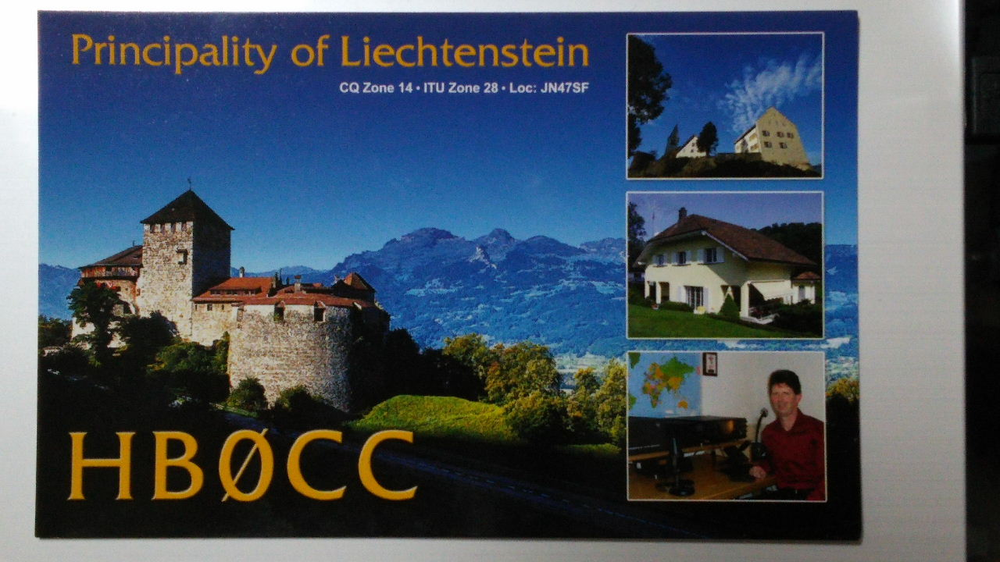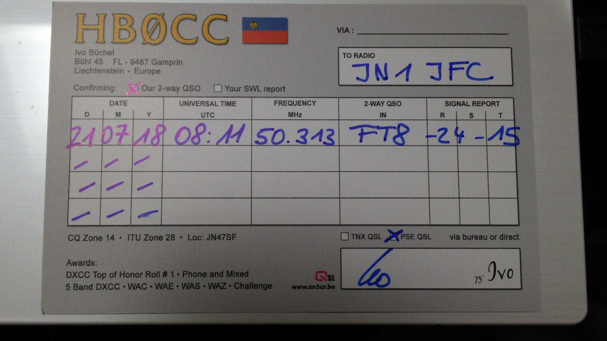
<BR><B>7月21日に初めてJAにオープンした=Liechtenstein=のHB0CCのQSL(TNX JN1JFC)</B>
<HR SIZE="3" WIDTH="550">
</CENTER>
<PRE>
<FONT COLOR="BLUE" SIZE=-1><B>Report from JA1RJU(PM95sq)</B></FONT>
<B>06.Aug.2018(15:00c)</B>
<B>
      ---------------------------------------------------------------  
      ○(FT8=> NA. South East Asia & EU =>03:00z-11:00z)
      ---------------------------------------------------------------
      EX8MLT       02:59:30-   50.313-1540      FT8     -16dB CQ(MN82)
        ↓
      EX8MLT       03:28:30-   50.313-1537      FT8     -16dB CQ
        ↓
      IS0AWZ       06:15:00-   50.313-****      FT8           into JA2
      IS0AWZ       06:26:30-   50.313-****      FT8     -12dB into JA1/0
        ↓
      IS0GQX       06:30:00-   50.313-1734      FT8     -17dB CQ AS(JM49)
      IS0GQX       06:30:30-   50.313-1734      FT8     -18dB into JA1
      SV1DH        06:32:30-   50.313-****      FT8     -18dB into JA2/7
      IS0AWZ       06:32:30-   50.313-****      FT8     -18dB into JA1
        ↓
      SP5GMM       06:51:00-   50.313-****      FT8     -19dB into JA3
      DK2LO        06:56:00-   50.313-****      FT8     -15dB into JA1
      SM7DVO       07:06:00-   50.313-****      FT8     -11dB into JA2
      SP2GUB       07:06:15-   50.313-****      FT8     -14dB into JA2
      OZ1HFG       07:09:15-   50.313-****      FT8     -14dB into JA2
        ↓
     (KL7HBK       07:30:00-   50.313-1541      FT8     -18dB into JA1)
        ↓
      SV2JAO       07:32:30-   50.313-****      FT8     -14dB into JA7
        ↓
     (KL7HBK       07:50:00-   50.313-1541      FT8     -04dB QSO with JA1/2/3/0)
        ↓
      IT9RZR       08:35:00-   50.313-****      FT8     -17dB into JA5
        ↓
     (11:00z)
</B>
<FONT COLOR="BLUE" SIZE=-1><B>Report from JA1RJU(PM95sq)</B></FONT>
<B>05.Aug.2018(15:00d)</B>
<B>
      ----------------------------------------------------------------
      ○(FT8=> 本日の入感局 NA =>22:00z-00:40z)
      ----------------------------------------------------------------
      K5HK         22:59:00-   50.313-2010      FT8     -15dB into JA1(QM06)
      W0VTT        22:59:45-   50.313-****      FT8           into JA0
      N0TB         23:01:00-   50.313-****      FT8     -13dB into JA7/0
      K0KUK        23:16:00-   50.313-****      FT8     -05dB QSO with JA7(QM08)
      W9FF         23:17:00-   50.313-****      FT8     -13dB into JA0
      K2DRH        23:19:30-   50.313-****      FT8     -18dB into JA7
      W0VTT        23:20:30-   50.313-****      FT8     -08dB into JA0
      N6ML         23:27:00-   50.313-****      FT8     -14dB into JA0
      N9ISN        23:27:00-   50.313-****      FT8     -18dB into JA7
        ↓
      K5XI         23:47:00-   50.313-****      FT8     -17dB QSO with JA7
      N6ML         23:52:30-   50.313-****      FT8     -16dB QSO with JA1(QM06)
      K5XI         00:10:00-   50.313-****      FT8     -09dB QSO with JA0
      K5XI         00:22:30-   50.313-****      FT8     -16dB QSO with JA1
        ↓
      WA7JAY       00:36:00-   50.313-****      FT8     -18dB into JA3/7
        ↓
     (-00:40z)
 
      ---------------------------------------------------------------  
      ○(FT8=> Asia. South East Asia & EU =>02:00z-11:00z)
      ---------------------------------------------------------------
      HL0S         02:09:00-   50.313-1214      FT8     -11dB CQ(PM48)
        ↓
      OH7KNM       06:09:00-   50.313-1663      FT8     -06dB into JA1 & QSO
      IS0GQX       06:09:30-   50.313-****      FT8           into JA1/3
      OH7KNM       06:10:30-   50.313-1665      FT8     -08dB QSO with JA1/9
      IS0GQX       06:11:30-   50.313-****      FT8           QSO with JA1
        ↓
      OH7KNM       06:12:00-   50.313-1663      FT8     -04dB QSO with JA1/2/3/9/0
      EA7HG        06:12:00-   50.313-****      FT8     -18dB into JA1
      OH3XA        06:14:00-   50.313-1794      FT8     -09dB QSO with JA3
      OH7UE        06:15:00-   50.313-1788      FT8     -04dB CQ(KP52) & QSO with JA1
        ↓
      OH3XA        06:20:30-   50.313-1794      FT8     -08dB QSO with JA1/9
      OH2BPU       06:20:30-   50.313-****      FT8     -11dB QSO with JA1/2
      OH3LCH       06:20:30-   50.313-****      FT8     -16dB into JA7
      OH7KNM       06:21:00-   50.313-1675      FT8     -07dB QSO with JA1
      OH3SR        06:27:00-   50.313-1051      FT8     -14dB QSO with JA8
      OH3SR        06:28:00-   50.313-1051      FT8     +02dB QSO with JA1
      EA7HG        06:28:00-   50.313-****      FT8           QSO with JA4
      OH3XA        06:30:00-   50.313-1794      FT8     -03dB/-05dB(QSO)
      OH1MLZ       06:31:00-   50.313-****      FT8     -04dB CQ(KP52) & QSO with JA1
      OH7UE        06:31:30-   50.313-2064      FT8     -10dB QSO with JA12/3/5
        ↓
     (OH3SR.OH3XA.OH2BPU.OH1MLZ.OH7KNM.OH2ID) 
        ↓
      IS0AWZ       06:35:00-   50.313-****      FT8           QSO with JA3
        ↓
      OH7PI        06:38:30-   50.313-2596      FT8     -05dB CQ(KP42) & QSO with JA1
        ↓
      OH0Z         06:41:00-   50.313-****      FT8     -09dB QSO with JA1
        ↓
      SP4MPB       06:52:30-   50.313-****      FT8     -13dB into JA0
      OH7PI        06:52:30-   50.313-****      FT8     -11dB into JA4/5
      OH6WD        06:53:00-   50.313-****      FT8     -14dB into JA6/0
      IS0GQX       06:53:30-   50.313-****      FT8     -20dB into JA5
        ↓
     (OH3SR.OH6WD.OH7PI.OH1AZL.OH3XX.OH1MLZ.I4CIL.EA6VQ.OE6MDF.EA6SX.EA6SX)
        ↓
      IK0FTA       07:01:00-   50.313-****      FT8           QSO with JA5
        ↓
     (IW5DHN.OH3SR.EA6SX.OH0Z.OH6WD.OG2M)
        ↓
      SV1DH        07:05:30-   50.313-1995      FT8     -13dB CQ AS(KM27) & QSO with JA1
        ↓ 
     (IK4GTC.OG2M.OH3SR.OH0Z=JA6/0.OH6WD.IK5QPV.EA6XQ.EA1AR.TA1BM=JA1.EA7AJR)
        ↓
      CT1IUA       07:28:30-   50.313-1995      FT8           QSO with JA6
      F4VPC        07:29:30-   50.313-****      FT8     -16dB QSO with JA1
      ES1BH        07:32:30-   50.313-****      FT8     -16dB QSO with JA2
      OH2EE        07:38:00-   50.313-****      FT8           QSO with JA6
      ES2JL        07:44:30-   50.313-****      FT8     -08dB QSO with JA2
      OZ3K         07:49:45-   50.313-****      FT8     -09dB into JA2
      OH0Z         07:52:30-   50.313-****      FT8     -13dB into JA1
      SM2A         07:52:30-   50.313-****      FT8     -10dB into JA0
      LY2IJ        08:02:30-   50.313-****      FT8     -19dB into JA1
        ↓ 
     (EA7CU.OH2XX.EA7HG.CP6CPH.CT1IUA.SP5ENA.EA6VQ.SV4SBI.EA5ISZ.SM5EPO)
        ↓ 
      (11:00z-)
        ↓ 
</B>
<FONT COLOR="BLUE" SIZE=-1><B>Report from JA1RJU(PM95sq)</B></FONT>
<B>04.Aug.2018(15:00c)</B>
<B>
      ---------------------------------------------------------------  
      ○(FT8=> Asia and South East Asia & EU =>22:00z-11:00z)
      ---------------------------------------------------------------
      Z32ZM        07:02:00-   50.313-****      FT8     -15dB into JA9
        ↓
      LY2IJ        07:04:30-   50.313-2258      FT8     -18dB into JA1
      LY2IJ        07:05:30-   50.313-2258      FT8     -18dB QSO with JA1
        ↓
      Z32ZM        07:06:30-   50.313-****      FT8     -14dB into JA1
      LY2IJ        07:08:30-   50.313-2258      FT8     -24dB QSO with JA1
      LY2IJ        07:10:30-   50.313-2258      FT8     +01dB QSO with JA1/3
        ↓
      LY2IJ        07:16:30-   50.313-2259      FT8     -02dB/+02dB(QSO)
      LY2IJ        07:17:30-   50.313-2259      FT8     +01dB QSO with JA1/2/3/5/7/0
        ↓
      LY2IJ        07:25:00-   50.313-2260      FT8     -01dB QSO with JA4
      LY2IJ        07:26:00-   50.313-2261      FT8     -06dB QSO with JA1/3/7/0
        ↓
      OH7PI        07:27:15-   50.313-****      FT8     -17dB into JA2
      LY2IJ        07:27:30-   50.313-2261      FT8     +01dB QSO with JA1/3/7/0
        ↓
      OH7PI        07:34:15-   50.313-****      FT8     -15dB QSO with JA1/2/7/0
        ↓
      Z32ZM        07:35:30-   50.313-****      FT8           into JA1
      YL2AO        07:40:30-   50.313-****      FT8     -15dB into JA1/2/3//4
      LY2BAW       07:45:30-   50.313-****      FT8     -12dB QSO with JA1
      YL2AO        07:46:00-   50.313-****      FT8     -16dB QSO with JA3/4
        ↓
      LY2BAW       07:52:00-   50.313-****      FT8     -13dB QSO with JA0
        ↓
      OH7PI        07:54:30-   50.313-****      FT8     -09dB into JA1/0
        ↓
      LY2BAW       07:56:00-   50.313-****      FT8     -13dB into JA9/0 & QSO with JA1
        ↓
      LY2IJ        08:03:30-   50.313-****      FT8     -19dB QSO with JA2
      YL2CP        08:09:30-   50.313-****      FT8     -14dB into JA6
      LY2BAW       08:10:30-   50.313-****      FT8     -11dB QSO with JA2/7
      SV1DH        08:15:30-   50.313-****      FT8     -17dB into JA3
      YL2AO        08:16:00-   50.313-****      FT8     -14dB QSO with JA5
      YL2CP        08:19:00-   50.313-****      FT8     -20dB into JS6 & QSO with JA6
      LY2BAW       08:22:00-   50.313-****      FT8     -13dB into JA5/6
        ↓
      LY2BAW       08:30:30-   50.313-****      FT8     -14dB into JA2/6
        ↓
     (LY2IJ.HL0S.LY2BAW.YL2CP.OH2MA.SV1DH.VR2VAZ.VR2IL.VR2ZLK.VR2XRW,)
</B>
<FONT COLOR="BLUE" SIZE=-1><B>Report from JA1RJU(PM95sq)</B></FONT>
<B>03.Aug.2018(15:00c)</B>
<B>   ----------------------------------------------------------------
      ○(FT8=> 本日の入感局 NA =>21:00z-03:00z)
      ----------------------------------------------------------------
      N6ML         21:13:00-   50.313-****      FT8     -14dB QSO with JA1
        ↓
      N3RC         21:20:30-   50.313-****      FT8     -18dB into JA1
      K6SRZ        21:24:30-   50.313-****      FT8     -20dB into JA1
      N7IR         21:24:30-   50.313-****      FT8           QSO with JA7
        ↓
     (KG7NV.NH6Y.N7AMA.AA7A.K9YC.WA6ZTY.AD6D.K6SRZ.KJ6P)
        ↓
      NN4X         22:41:30-   50.313-****      FT8           QSO with JA7
        ↓
     (WA6ZTY.WX4G.K8XS.W6GJB.N6JV)
        ↓
      N6JV         00:50:30-   50.313-2428      FT8     -18dB/07dB(QSO)
      N6ML         00:57:00-   50.313-****      FT8     -11dB QSO with JA0
        ↓
     (W6XK.N6JV.W6KF)
        ↓
      W6KF         01:38:30-   50.313-****      FT8     -22dB QSO with JA7
      N6JV         02:02:00-   50.313-****      FT8     -13dB QSO with JA4

      ---------------------------------------------------------------  
      ○(FT8=> Western Asia and South East Asia & EU =>23:50z-11:00z)
      ---------------------------------------------------------------
      A45XR        23:50:15-   50.313-****      FT8     -19dB into JA1
        ↓
      DU7/PA0HIP   00:19:45-   50.313-****      FT8     -04dB QSO with JA8
        ↓
      I1FLB        02:09:15-   50.313-****      FT8     -17dB into JA5/6
      JD1BHA       02:12:30-   50.313-1007      FT8     -12dB into JA1/8
      JD1BHA       02:14:30-   50.313-1007      FT8     -04dB QSO with JA1/8
        ↓
      JD1BHA       02:31:00-   50.313-1008      FT8     -24dB CQ(QL16) & QSO
        ↓
      JD1BHA       02:43:00-   50.313-1008      FT8     -09dB QSO with JA1
      9K2YM        02:43:00-   50.313-****      FT8           into JA7
        ↓
      JD1BHA       03:03:00-   50.313-1008      FT8           into JA2
        ↓     (BH4IGO.BG6CJR.)
      HL0S         03:06:15-   50.313-1208      FT8     +03dB QSO with JA1/7/8/9
      HL0S         03:11:45-   50.313-1207      FT8     +02dB CQ(PM48)
        ↓
      HL0S         03:24:45-   50.313-1214      FT8     +10dB QSO with JA1/2/3/4/5/6
        ↓
      3W3B         03:52:30-   50.313-****      FT8     -15dB into JA1
      3W3B         04:05:15-   50.313-****      FT8     -11dB QSO with JA1/7/9
        ↓
      SP5ENA       07:06:30-   50.313-****      FT8     -12dB QSO with JS6
        ↓
      IK2GSO       07:17:30-   50.313-****      FT8     -12dB into JA6/JS6
      SP8SN        07:20:30-   50.313-****      FT8     -08dB QSO with JS6
      OZ3K         07:25:00-   50.313-****      FT8     -10dB into JS6
      SP5ENA       07:26:30-   50.313-****      FT8     -18dB into JA1(QM05)
      F5BZB        07:27:30-   50.313-****      FT8     -18dB into JA6
      SP4MPB       07:28:30-   50.313-****      FT8     -05dB into JS6
      SM0EUI       07:28:30-   50.313-****      FT8     -14dB into JA6
      UT7QF        07:28:30-   50.313-****      FT8     -16dB into JA6
      IW4AOT       07:30:30-   50.313-****      FT8     -17dB into JA6
      IK4ISR       07:32:00-   50.313-****      FT8     -15dB into JA6
      SP8SN        07:36:00-   50.313-****      FT8     -10dB QSO with JA1(QM05)
      UT7QF        07:38:00-   50.313-****      FT8     -08dB QSO with JA6
      9H1TX        07:39:30-   50.313-****      FT8           QSO with JA6
      SP4MPB       07:41:00-   50.313-****      FT8     -16dB into JA4
      YU7EF        07:43:30-   50.313-****      FT8     -19dB into JA6
      SQ8IFG       07:18:30-   50.313-****      FT8     -15dB into JA1
      SP9HPA       07:51:00-   50.313-****      FT8     -14dB into JA1
      Z32ZM        07:52:30-   50.313-****      FT8     -15dB into JA6
      SP8SN        07:55:00-   50.313-****      FT8     -16dB into JA1
      OH3SR        08:03:00-   50.313-****      FT8     -15dB into JA6
      G4RRA        08:05:00-   50.313-****      FT8     -13dB into JS6
      G0GGG        08:06:00-   50.313-****      FT8     -19dB into JS6
      SP9HPA       08:07:30-   50.313-****      FT8     -11dB QSO with JA1(QM05)
      G3TXF        08:08:30-   50.313-****      FT8     -16dB QSO with JA5
      G4RRA        08:08:30-   50.313-****      FT8     -13dB QSO with JS6
      SM4CSX       08:15:30-   50.313-****      FT8     -18dB into JS6
      OH1ND        08:17:00-   50.313-****      FT8     -16dB into JA5
      EI3KD        08:19:30-   50.313-****      FT8     -21dB into JS6
      SM4FXR       08:22:00-   50.313-****      FT8     -13dB into JS6
      SM5CUI       08:24:30-   50.313-****      FT8     -16dB into JA5
      OH0Z         08:26:15-   50.313-****      FT8     -17dB QSO with JS6
      OZ2PBS       08:31:00-   50.313-****      FT8     -18dB into JA5
      GM3SEK       08:33:15-   50.313-****      FT8     -15dB into JS6
      SM4EMO       08:33:00-   50.313-****      FT8     -22dB into JS6
      OH0Z         08:44:30-   50.313-****      FT8     -08dB QSO with JA6
      G8BCG        08:45:00-   50.313-****      FT8     -16dB QSO with JS6
      SM4FXR       08:52:00-   50.313-****      FT8           QSO with JA6
      EI4DQ        09:06:30-   50.313-****      FT8           into JR6(PL36)
      EI3KD        09:21:00-   50.313-****      FT8     -17dB into JR6(PL36)
</B>
<FONT COLOR="BLUE" SIZE=-1><B>Report from JA1RJU(PM95sq)</B></FONT>
<B>02.Aug.2018(15:00d)</B>
<B>   ----------------------------------------------------------------
      ○(FT8=> 本日の入感局 NA =>22:00z-02:00z)
      ----------------------------------------------------------------
      K6EID        22:03:30-   50.313-****      FT8     -19dB into IA1
      KC3OL        22:03:30-   50.313-****      FT8     -18dB QSO with JA1
      K4PI         22:03:30-   50.313-1668      FT8     -14dB QSO with JA1
      KA9CFD       22:03:30-   50.313-640       FT8     -22dB into JA1
      KX4R         22:04:00-   50.313-1019      FT8     -24dB QSO with JA2
      N6WS         22:04:00-   50.313-****      FT8     -18dB QSO with JA1
      N0LWF        22:04:00-   50.313-****      FT8     -14dB into JA1
      W4TM         22:04:30-   50.313-****      FT8     -20dB into JA1
      NI0B         22:04:30-   50.313-****      FT8     -10dB into JA1
      N0LWF        22:05:00-   50.313-****      FT8     -14dB into JA1
      K8CM         22:05:30-   50.313-****      FT8     -16dB QSO with JA1
      K0GU         22:05:30-   50.313-****      FT8     -05dB QSO with JA1
      K4PI         22:06:00-   50.313-1668      FT8     -11dB QSO with JA1
      W8CLT        22:06:00-   50.313-****      FT8     -12dB QSO with JA1
      K8OM         22:06:00-   50.313-****      FT8     -19dB QSO with JA1
      N6WS         22:07:30-   50.313-1496      FT8     -09dB CQ(CM95)
      K0TPP        22:07:30-   50.313-****      FT8     -09dB into JA1
      K6EID        22:08:00-   50.313-****      FT8     -10dB QSO with JA1
      K4PI         22:08:30-   50.313-****      FT8     -14dB QSO with JA1
      N1OB         22:07:30-   50.313-****      FT8     -19dB into JA1
      W6ATC        22:09:30-   50.313-****      FT8     -13dB into JA1
      AG0N         22:10:00-   50.313-****      FT8     -10dB into JA1
      KC3OL        22:10:30-   50.313-****      FT8     -18dB into JA1
      W4ATL        22:11:30-   50.313-****      FT8     -12dB into JA1
      K6EU         22:11:30-   50.313-****      FT8     -14dB into JA1
      KN4OK        22:14:00-   50.313-****      FT8     -19dB into JA1
      N8RR         22:14:30-   50.313-****      FT8     -20dB into JA1
      WB8CQV       22:14:30-   50.313-****      FT8     -21dB into JA1
      W4IMD        22:14:30-   50.313-****      FT8     -09dB QSO with JA1
      N6CA         22:14:30-   50.313-****      FT8           QSO with JA1
      WB8CQV       22:16:30-   50.313-****      FT8     -09dB into JA1
      W4WT         22:18:00-   50.313-****      FT8     -15dB QSO with JA1/2
      NM9PP        22:18:30-   50.313-****      FT8           QSO with JA1
      N6WS         22:20:30-   50.313-1496      FT8     -07dB QSO with JA1
      K0TPP        22:22:00-   50.313-****      FT8     -09dB QSO with JA1
      AG0N         22:26:00-   50.313-****      FT8     -15dB QSO with JA1
      N4QWZ        22:26:30-   50.313-****      FT8     -16dB QSO with JA1
        ↓
     (K9YC.K0GU.KA9CFD.N&WS.W4IMD.K0TPP.N8RR.)
        ↓
      W9GA         22:29:00-   50.313-****      FT8     -16dB into JA1
      K0GU         22:33:00-   50.313-****      FT8     -16dB into JA7
      N4QS         22:07:30-   50.313-****      FT8     -09dB into JA1
        ↓
     (N8RR.W4IMD.N4QS.AG0N.KA9CFD.NC6K.WN0L.KR7O.N6MW.K6IA)
        ↓
      N4GG         22:41:30-   50.313-****      FT8     -20dB into JA1
        ↓
     (N7CNH.K0GU.K6EU.K0TPP.AG0N.KG7CW.W7OUU.KA9CFD.K4RX.KB0PPQ.K8PT)
        ↓
     (W7DHH.K7BTW.KC7UB.K7CW.KV7K.N7AMA.W6PJ.AA7A.N7IR.WA0KDS.W6TOD)
        ↓
      KC7UB        00:48:00-   50.313-****      FT8     -16dB QSO with JA9
        ↓
     (01:03z)
      ---------------------------------------------------------------  
      ○(FT8=> Western Asia and South East Asia & EU =>06:00z-11:00z)
      ---------------------------------------------------------------
      SV1DH        06:03:00-   50.313-****      FT8     -18dB into JA7
      SV1AHP       06:04:30-   50.313-****      FT8     -14dB into JA7
      LZ2HM        06:05:45-   50.313-****      FT8     -08dB QSO with JA7
        ↓
      UA0CGN       06:19:45-   50.313-****      FT8           into JA3
      LZ2HM        06:25:45-   50.313-****      FT8     -19dB into JA0
        ↓
      YO3DDZ       06:30:00-   50.313-****      FT8     -10dB QSO with JA7
        ↓
      UK9AA        06:47:00-   50.313-2013      FT8     -18dB CQ(MN41)
      UK9AA        06:49:30-   50.313-2013      FT8           QSO with JA3
      UK9AA        06:52:00-   50.313-2013      FT8     -18dB QSO with JA1
      LZ1NW        06:52:30-   50.313-****      FT8     -15dB into JA7
      4O6AH        06:55:00-   50.313-****      FT8     -18dB into JA2
      UK9AA        06:57:00-   50.313-2011      FT8     -17dB CQ(MN41)
        ↓
      LZ2NW        06:59:30-   50.313-****      FT8     -16dB QSO with JA7
      YO3DDZ       07:02:30-   50.313-****      FT8     -20dB QSO with JA8
      LZ2NW        07:03:00-   50.313-****      FT8     -18dB QSO with JA7
        ↓
      4O6AH        07:14:30-   50.313-****      FT8     -18dB into JA2(PM94)
        ↓
      IS0AWZ       07:22:00-   50.313-2013      FT8     -02dB QSO with JA7
      OZ3K         07:33:00-   50.313-****      FT8           into JA7
      IS0AWZ       07:35:00-   50.313-****      FT8     -20dB into JA2
      IS0GOX       07:36:00-   50.313-****      FT8           into JA7(QM07)
      PA2M         07:36:00-   50.313-****      FT8     -16dB into JS6
        ↓
      IS0AWZ       07:40:00-   50.313-****      FT8     -18dB QSO with JA2
      DK2LO        07:42:30-   50.313-****      FT8     -14dB into JA5
      PA3FPQ       07:42:30-   50.313-****      FT8     -11dB into JA6
      4O6AH        07:47:30-   50.313-****      FT8     -18dB into JA2
        ↓
      UN3GX        07:52:15-   50.313-****      FT8     -14dB into JA6
      UN3GX        08:01:00-   50.313-1256      FT8     -14dB CQ(MN83)
      4O6AH        08:01:00-   50.313-****      FT8     -19dB into JA5
        ↓
      4O6AH        08:07:00-   50.313-****      FT8     -14dB into JA2
        ↓
      UN3GX        08:09:00-   50.313-1258      FT8     -13dB CQ(MN83)
      4O6AH        08:10:00-   50.313-****      FT8     -14dB QSO with JA5
        ↓
      4O6AH        08:17:00-   50.313-****      FT8     -19dB into JA1/2
        ↓
      ES1JA        08:23:45-   50.313-****      FT8     -07dB into JA2
      UK9AA        08:25:45-   50.313-****      FT8           QSO with JA3
        ↓
      UN3GX        08:31:00-   50.313-1254      FT8     -10dB QSO with JA1
      UN3GX        08:50:30-   50.313-1256      FT8     -18dB CQ(MN83)
        ↓
      JT1BV        09:21:00-   50.313-654       FT8     -19dB CQ(ON37)
        ↓
      UN6T         09:35:45-   50.313-1865      FT8     -08dB CQ(MN52)
      UN6T         09:38:15-   50.313-1866      FT8     -10dB QSO with IW2BAI & 9A2AA
        ↓
      (11:00z)
</B>
<FONT COLOR="BLUE" SIZE=-1><B>Report from JA1RJU(PM95sq)</B></FONT>
<B>01.Aug.2018(15:00c)</B>
<B>
     ○(FT8=> NA. ASIA-EU & AFの入感局=>(22:00z-11:00z)

      K5RK         23:46:00-   50.313-****      FT8     -18dB QSO with JA1/7/0
        ↓
      K9YC         00:05:30-   50.313-****      FT8     -17dB QSO with JA7
      KB7IJ        00:13:15-   50.313-****      FT8     -16dB QSO with JA7/0
      W5LDA        00:19:30-   50.313-****      FT8     -17dB into JA1/7/0
      KH6U         00:29:30-   50.313-****      FT8     -10dB QSO with JA7
      KL7HBK       00:31:45-   50.313-****      FT8           into JA1/7
      KH6U         01:08:00-   50.313-****      FT8           into JA1
      W7EW         01:16:30-   50.313-****      FT8           into JA1
      UA0SR        01:48:15-   50.313-****      FT8           into JA1
      NH6Y         02:07:30-   50.313-1805      FT8     -17dB CQ(BL10)
      NH6Y         02:08:30-   50.313-1805      FT8     -01dB QSO with JA1/7/0
      NH6U         02:17:30-   50.313-****      FT8           into JA1
      NH6Y         02:29:30-   50.313-1804      FT8     -02dB QSO with JA1
        ↓
      NH6Y         02:40:00-   50.313-1802      FT8     -11dB CQ(BL10)
      BH4IGO       03:21:00-   50.313-****      FT8     -07dB QSO with JA8
        ↓
      A92HK        06:59:30-   50.313-****      FT8     -18dB into JA0
        ↓
      S01WS        08:32:30-   50.313-****      FT8     -16dB QSO with JG1TSG(QM05)
        ↓
      IK3EUN       08:38:30-   50.313-****      FT8     -18dB QSO with JA1
      SV5/SV1LK    08:43:00-   50.313-****      FT8     -10dB QSO with JA1
      SV8RX        08:49:00-   50.313-1593      FT8     -12dB QSO with JA1
      S01WS        08:57:00-   50.313-****      FT8     -15dB into JA/7
      UW1HM        08:58:00-   50.313-****      FT8     -07dB QSO with JA7
      SV1AHP       09:11:30-   50.313-****      FT8     -17dB QSO with JA7
      SV5/SV1LK    09:16:30-   50.313-****      FT8     -10dB QSO with JA2
        ↓
      (14:00z)
　　　●Western SaharaのS01WSがJA1にもオープン、JG1TSG・下野さんがQSOに成功した。
<CENTER>

<BR><B>2018年6月17日にJAと初QSOに成功した-S01WS-のQSL<BR>(TNX JH6NKZ & JH6VXP)
<HR SIZE="3" WIDTH="350">
</CENTER></B>
<PRE>
<HR SIZE="3" WIDTH="550">
<DIV ALIGN="CENTER">
<TABLE BORDER="0" WIDTH="600" ALIGN="CENTER">
<TR ALIGN="LEFT">
<TD>
◎<B>タイ国(HS)のRASTからの情報によると、従来タイ国ではコンテスト時のみにNBTC(Telecommunications Commission)からの特別許可を得て運用していた80mと6mバンドは、今後は許可を得ずに自由に運用する事が可能になったとのこと。ただし、運用は相変わらず「コンテスト」時のみに限定(海外からのゲスト運用も可能)されています。4月1日のRASTの総会で会長のHS1FVL(Jakkree)から正式に発表された。
今年の運用(6m)が予想されるコンテストは下記の通り。</I>
    ○ <I>ARRL June VHF Contest:      09-11.June,2018</I>
    ○ <I>CQ World Wide VHF Contest:  21-23.July,2018</I>
    ○ <I>ARRL September VHF Contest: 08-10.September,2018</B>
</TD>
</TR>
</TABLE>
</DIV>
</PRE>
<CENTER>

</CENTER>
<HR SIZE="3" WIDTH="550">
<CENTER>

<HR SIZE="3" WIDTH="550">
<DIV ALIGN="CENTER">
<TABLE BORDER="0" WIDTH="600" ALIGN="CENTER">
<TR ALIGN="LEFT">
<TD>
<PRE>
<B>[Back Issues Jul.2018]
<B>31.JuL.2018(15:00c)</B>
<B>
     ○(FT8=> NA. ASIA & EUの入感局=>(22:00z-10:00z)

      KL7HBK       23:29:00-   50.313-****      FT8     -20dB QSO with JA1/7
        ↓ 
      -------------------------------------------------------------------
      RM0F         00:09:15-   50.313-****      FT8     -17dB into JA1
      BU2BV        00:24:45-   50.313-682       FT8     -14dB QSO with JA1/2/0
      JD1BHA       00:42:00-   50.313-****      FT8     -12dB QSO with JA1/2
        ↓ 
      BV6CC        01:25:15-   50.313-****      FT8     -20dB QSO with JA6
        ↓ 
      HL2ADY       01:49:15-   50.313-****      FT8     -12dB QSO with JA1
        ↓ 
      4F3OM        02:26:30-   50.313-1097      FT8     -12dB CQ(PK04)
      4F3OM        02:27:00-   50.313-1097      FT8     -10dB QSO with JA1/3/6/9
        ↓ 
      DU1/JA3FJE   02:39:15-   50.313-1399      FT8     -23dB CQ(PK04)
      DU1/JA3FJE   02:42:15-   50.313-1399      FT8     -03dB QSO with JA3
        ↓ 
      HL4CCM       02:44:15-   50.313-****      FT8     -15dB QSO with 4F3OM
      BI4SDT       02:48:15-   50.313-1802      FT8     -19dB CQ(PM01)
        ↓ 
      4F3OM        02:56:30-   50.313-1102      FT8     -08dB CQ(PK04)
      BG4VRG       03:02:45-   50.313-1058      FT8     -11dB CQ(OM93)
      BG4VRG       03:03:45-   50.313-1058      FT8     -14dB QSO with JA3
      DU1/JA3FJE   03:04:15-   50.313-1399      FT8     -03dB QSO with JA3/6/8
      DU6GG        03:09:45-   50.313-****      FT8     -03dB QSO with JA4
        ↓ 
      BD7OH        03:17:30-   50.313-1267      FT8     -14dB CQ(OL72)
      4F3OM        03:37:30-   50.313-1103      FT8     -10dB QSO with JA1/2/3/4/BD7OH
      JD1BHA       03:58:30-   50.313-****      FT8     -14dB QSO with JA1/0
        ↓ 
      BH4IGO       06:27:00-   50.313-914       FT8     -03dB QSO with JA1/2/3
      DU3GKT       06:51:30-   50.313-****      FT8     -10dB QSO with JA0
      BA5DX        07:00:15-   50.313-****      FT8     -13dB QSO with JA0
      BH8OMZ       07:03:30-   50.313-****      FT8     -01dB QSO with JA0
        ↓
      IS0AWZ       07:47:00-   50.313-****      FT8     -17dB into JA2
      BG2AUE       07:50:30-   50.313-1804      FT8     -08dB CQ(PN35)
      SV1DH        08:35:00-   50.313-1992      FT8     -14dB CQ AS(KM27)
      SV1DH        08:38:00-   50.313-1992      FT8     -14dB QSO with JA1
      LA6VQ        08:59:00-   50.313-****      FT8     -21dB into JA0
        ↓ 
      SV2JAO       09:16:30-   50.313-****      FT8           into JA9
</B>
<FONT COLOR="BLUE" SIZE=-1><B>Report from JA1RJU(PM95sq)</B></FONT>
<B>30.JuL.2018(15:00c)</B>

     <B>○(FT8=> 本日のNA方面の入感局=21:30z-06:30z)
      -------------------------------------------------------------------
      W7EW         22:06:30-   50.313-****      FT8     -17dB into JA1/7
      WB8VLC       22:24:00-   50.313-****      FT8     -16dB into JA1/7
      KZ1W         22:30:00-   50.313-****      FT8     -18dB into JA7
      W7DGZ        22:28:00-   50.313-****      FT8     -18dB into JA7
      W7BA         22:26:00-   50.313-****      FT8     -13dB QSO with JA7
      KB7ME        22:36:00-   50.313-****      FT8     -14dB QSO with JA1
      KC7RG        22:38:00-   50.313-****      FT8     -17dB into JA7
      W7EW         22:38:30-   50.313-****      FT8     -18dB into JA7
      W7MEM        22:46:00-   50.313-****      FT8     -11dB QSO with JA7
      K7BTW        22:59:00-   50.313-****      FT8     -15dB QSO with JA7
      VA7FC        23:04:00-   50.313-****      FT8     -19dB into JA1/7
      W7FI         23:13:00-   50.313-1764      FT8     -14dB QSO with JA1/0
      K7AR         23:15:00-   50.313-****      FT8     -15dB QSO with JA1/7
      W7VAS        23:15:00-   50.313-****      FT8     -20dB into JA1
      VE7SV        23:46:00-   50.313-****      FT8     -11dB QSO with JA1
      VA7FC        23:50:00-   50.313-****      FT8     -118B QSO with JA1/2/7
      WB8VLC       23:53:00-   50.313-945       FT8     -16dB QSO with JA1
      --------------------------------------------------------------------
      K7AR         00:12:30-   50.313-****      FT8     -12dB QSO with JA1
      VE7DAY       00:12:30-   50.313-****      FT8     -16dB QSO with JA1
      WA7ZWD       03:17:00-   50.313-****      FT8     -19dB into JA1
      VE7DAY       03:27:00-   50.313-****      FT8     -12dB into JA1
        ↓ 
      (Asia) 
      ------------------------------------------------------------------
     ○(FT8=> Asia & South East Asia & EUの入感局=>(04:00z-)
      ------------------------------------------------------------------
        ↓ 
      9M2TO        04:41:30-   50.313-1932      FT8     -08dB QSO with JA1/0
      9M2TO        05:31:00-   50.313-1932      FT8     -11dB CQ(OJ05)
        ↓
      9M2TO        05:43:30-   50.313-1931      FT8     -11dB CQ(OJ05)
      9M2TO        05:56:00-   50.313-1932      FT8     -11dB QSO with JA1/2
      9M2TO        05:58:30-   50.313-1929      FT8     -11dB CQ(OJ05)
        ↓
      JD1BHA       06:22:15-   50.313-****      FT8     -11dB into JA0
        ↓
      JD1BHA       08:44:45-   50.313-722       FT8     -01dB QSO with JA1/7/0
        ↓
      -------------------------------------------------------------------
</B>
<FONT COLOR="BLUE" SIZE=-1><B>Report from JA1RJU(PM95sq)</B></FONT>
<B>29.JuL.2018(15:00c)</B>
<DIV ALIGN="CENTER">
<TABLE BORDER="0" WIDTH="600" ALIGN="CENTER">
<TR ALIGN="LEFT">
<TD>
<B>
◎今朝、FT8で北米を狙って居たJA'sを驚かせたのは、21:51z(06:51JST)にCQを出している南米・コロンビアのHK3Wの-19dBのCQの入感だった。
この信号に気ずいたJA7QVI(QM08)がコールしたものの、HK3WはCQに応答してきた米国・コネチカット州のWZ1Vに-08dBのリポートを送りQSOを開始。21:53:00zにHK3Wが"73"を送った直後にJA7QVIがコールするも応答なし。21:53:30zからK9ELとQSOを開始しているのが -13dBで再び入感。このHK3Wが21:54zにK9ELに"RRR”のリポートを送ったのを最後に信号は途絶えた。
21:54:15からJA7QVI、JA7WSZなどが、22:07:45z頃までコールするもHK3Wの信号は再び入感する事は無かった。このHK3Wの信号はJA1でも確認している。
南米コロンビアとは2000年3月04日にF2のロングパスでHK3YHとJH4IUO間でJAから初QSOしているが、Es伝搬で南米の信号を確認したのは今回初めてとなる。
今回は残念ながらJAからのEsシーズンの南米との初QSOは成功しなかったが、夏のEsシーズンにも南米への伝搬の可能性があることを知る大きな目標を得た日となった。
(TNX・JA7QVI & JP1LRT)

◎<B>台風12号は伊豆諸島付近で急カーブして南下、三重県に本土上陸しスピードが緩めながら瀬戸内海から九州へのルートを進んでいる。台風の直撃を免れた関東地方は予想された強風の影響も少なく日中には青空が戻った。
</TD>
</TR>
</TABLE>
</DIV>
</B>
<CENTER>
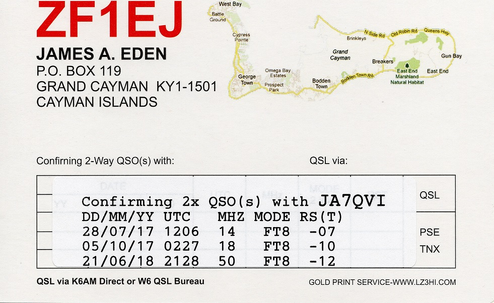
<BR><B>Esシーズンに初めてオープンしたZF1EJのQSL(TNX JA7QVI)</B>
<HR SIZE="3" WIDTH="550">
</CENTER>
<PRE>
<FONT COLOR="BLUE" SIZE=-1><B>Report from JA1RJU(PM95sq)</B></FONT>
<B>28.JuL.2018(15:00b)</B>
<DIV ALIGN="CENTER">
<TABLE BORDER="0" WIDTH="600" ALIGN="CENTER">
<TR ALIGN="LEFT">
<TD>
◎<B>今までに無い西よりに進む"変則コース"で本土に接近中の台風12号は、今夜から未明にかけて関東沖を通過、東海地方に上陸が予想されている。午前中から伊豆諸島では暴風雨域に入り、午後には関東地方にも大雨注意報が出て、風雨は徐々に強まってきている。
昨日は早朝から昼近くまで北米が入感、北米と同時にノルウエーのLA7DFAが入感、JA1のパイルとなっていた。　午前中から中近東、ヨーロッパ方面はウクライナのUT7QF、モンゴルのJT1BV、パキスタンのAP2AMが入感していたが、本格的なヨーロッパのオープンは05:00JST頃からで、イタリア、ギリシャ、スペインなど地中海沿岸から、北日本でOJ0C(Market Reef)やGM3(Scotland)の入感もリポートされていたが、コンデションは18:00JST過ぎには急激に落ちてしまった。
ところが、21:00JST頃からウクライナからイタリアなど地中海沿岸まで再びオープンして日中と同様のJA-EU間のパイルアップが深夜の02:00JST過ぎまで続いた。
　今朝はその反動か?、朝の北米方面の入感は無く、早朝から近場の台湾のBW9WにパイルアップするJAの信号でFT8の周波数は埋まっていた。
台風が伊豆半島に接近する中、週末の午前中は近場の中国、台湾、韓国と国内のQSOで賑わっていた。
午後からインドネシアのYC1MIIや中国、台湾など東南アジアからカザフスタンのUN8GCのオープンに続いて、14:20JST頃に入感して来たYO3DDZ、15:14JSTのYL2CP、15:45JSTのOH3SRの"常連”の入感がリポートされている。
16:22JST頃から入感しているオマーンのA41KTがJAのパイルとなっている。
17:20JST頃から、まだ台風の影響を受けていないエリアからYU、OE、S5、YO、DK、HA、UR、SPなどヨーロッパとのQSOがリポートされているが、クランクダウンしたアンテナではFT8もデコードしない。(19:00JST現在)
</TD>
</TR>
</TABLE>
</DIV>
<B>
      ○(FT8=> Western Asia and South East Asia & EU =>15:00z-17:00z)
      -------------------------------------------------------------
      IK5ACO(14:54z-QSO).IC8SQS(15:02z-).IS0AWZ(15:09z-).IW0FFK
      E73DN.UY1HY.I6FOR.9A2AA.IK0FTA.IC8SQS.D1DX.UT7QF.US0LW.UT4EX
      UT5ECZ.IK6FBB.I0JX.UX1IW.YU7EF.IK4GTC.UW7LL.UR6QA.R6KA.9A5CW
      -------------------------------------------------------------

      ○(FT8=> Western Asia and South East Asia & EU =23:58z-10:00z)
      -------------------------------------------------------------
      BW9W.UN8GC.YC1MII.VU3KAZ.YO3DDZ(05:25z-).KG6DX.YL2CP.A41KT.
      UT5UGR.OK2VSO.S57RR.DK2BL.OK2POI.YO9HP.S52D.9A5CW.VU2KNS
      DL5MGC.A41MS.DL2MIJ.OE3EVA.SP2IQW.OE3EVA.YU7FE.LY1G.YO6WW
      S51DI.DK2EA.SP3PBG.OE1WEU.OK1VM.S59A.SP9HPA.DF3CP.DL7AV.DK8YY
      YT1Q.OK2VSO.SP6NZ.A45XR.OM3EY.HA1RB.OK1DO.UR7DWW.
      -------------------------------------------------------------
</B>
<FONT COLOR="BLUE" SIZE=-1><B>Report from JA1RJU(PM95sq)</B></FONT>
<B>27.JuL.2018(15:00d)</B>

    <B>○(FT8=> 本日の入感局 NA =22:50z-03:00z)
      -------------------------------------------------------------
      K5FUV(AR).
      WB1EAZ(CA).N3HI(CA).K6ZH(CA).N6HY(CA).W6GLS(CA).NA6L(CA)
      WA6APQ(CA).K6RP(CA).KQ6RS(CA).WA6MEM(CA).AD6D(CA).N6RMJ(CA)
      N6RV(CA).W6PJ(CA).K6ZZ(CA).W6TOD(CA).W6FL(CA).KK6NON(CA)
      WA6APQ(CA).K6RP(CA).W6ZAR(CA).WB6DJI(CA).KA7IGN(CA).N6CA(CA)

      AI1K(AZ).AK2L(AZ).W3RI(AZ).W5RCQ(AZ).N6RW(AZ).KY7M(AZ)
      WA7NB(AZ).N7AED(AZ).W7OJT(AZ).K7NN(AZ).KQ7R(OR).NQ7R(AZ)
      N7CW(AZ).KY7M(AZ).K7JE(AZ).W7USA(AZ).KV7K(NV).KC7B(AZ)
      K7SP(AZ).WO7R(AZ).W7RV(AZ).KE7ES(AZ).KC7ES(AZ).WA0KDS(AZ).

      VE7DAY(23:01z-).XE2CQ(23:00z-CQ JA).P41ESP(23:10z-?).
      KL7HBK(AL).
      -------------------------------------------------------------

      ○(FT8=> Western Asia and South East Asia & EU =01:30z-15:20z)
      -------------------------------------------------------------
      LA7DFA(23:20z-).JT1BV(00:08z-).EX8MLE(01:30z-).EX8MLT(02:18z-)
      VK5XD(02:30z-JA7).UT7QF(02:45z-CQ).AP2AM(02:49z-CQ).

      UX4UA.UT7UJ.VU2NKS.UG3GX.IK0FTA.UR2MO.UT7QF.IK0MHR.9K2YM.YO9HP
      IK6DTB.IT9PQJ.IZ8VYU.UY5QZ.D1DX.I0JX.IK8DYD.UR5LAK.YX7MOV
      IS0AWZ(06:13z-JA4).VU3KAZ.IK0MHR.UR3QCW.IK0VAQ.UR9QQ.YO3DDZ
      UT2XQ.UR3QCW.IK7NXM.4O6AH(06:40z-JA1).UA9MA.UV1BZ.EA7HG.UR6QA
      US6IF.LZ2WO.UX0UN.IT9GUL.IT9RZR.UY5QZ.US8ICM.IK8CNT.US1GDQ
      SV1EDU.UY5ZZ.EA5ISZ.IW9HRZ.IT9PQJ.IT9TYR.IW9HII.YM2XHK.SV9CVY
      SV2JAO.EA5IOG.UN5UN.IS0GQX(07:47z-JA5/6).UR6OA.CT1HZE.UY1HY
      CT1IUA.SV1NZX.SV1DH.IZ8JAI.UR6QA.OE4VIE.9H1TX.UT2QQ.UT5UGR
      EA8YV.IW9HRZ.PA2M.YO8WW.SV8RX.GM3POI.OJ0C(09:01z-JA7).IX0FKK
      UX0UN(12:13z-).UR5WA.RD9D(12:28z-).UT2XQ(12:54z-QSO).YO3APJ
      YO8BSE.YO9HP(13:48z-07dB).JZ2WO(13:50-).9A7Y(14:49z-CQ)
      IK5ACO(14:54z-QSO).IC8SQS(15:02z-).IS0AWZ(15:09z-).IW0FFK
      -------------------------------------------------------------
</B>
<FONT COLOR="BLUE" SIZE=-1><B>Report from JA1RJU(PM95sq)</B></FONT>
<B>26.JuL.2018(15:00c)</B>

     <B>○(FT8=> 本日の入感局 NA =21:40z-09:10z)
      -------------------------------------------------------------
      AE3T(PA).
      NN4T(TN).WU5E(TN)

      K6EU(CA).N6RV(CA).N6RMJ(CA).WA6LIE(CA).K6KLY(CA).N6CA(CA)
      N6ML(CA).W6AER(CA).W6CYX(CA).K7JA(CA).KR7O(CA).W6SR(CA)
      KV6X(CA).N6JV(CA).AH0U(CA).K6ZZ(CA).K6IA(CA).W6TOD(CA)
      W6WA(CA).N6PAW(CA).K6JJ(CA).KI6CG(CA).KJ6P(CA).AF6SA(CA)
      K9YC(CA).KE6NDG(CA).K6SRZ(CA).K6FW(CA).AF6RT(CA).K6FG(CA)
      W6BK(CA).KJ6KO(CA).AG6CV(CA).K9YC(CA)

      K4XU(OR).K6UM(OR).KA6BIM(OR).AH6LE(OR).W7ETS(OR).W7TYN(OR)
      W7GJ(OR).W7EW(OR).N7BAV(OR).H7CNH(OR).KF7HB(OR).KG7GDB(OR)
      W7YAQ(OR).NK7Z(OR).WB8VLC(OR).W7KKE(UT).W7XU(SD).W7OJT(AZ)
      WA7NB(AZ).K7KMR(AZ).N7AED(AZ).N7AMA(AZ).N6RW(AZ).KY7M(AZ)
      K5XI(AZ).AK2L(AZ).W7OUU(ID).K7MAC(ID).N7ZO(ID).KV7K(NV)
      N7WT(NV).K7CW(WA).W7FI(WA).KB7ME(WA).N7KSI(WA).
      
      W9FF(IL).
      N0AN(IA).WA0ROI(IA).ND0B(ND).K0GU(CO).W0MU(CO)

      XE2X.XE2CQ.VE7DAY.VA3XDX.KL7HBK.VE7DAY(05:05z-)
      -------------------------------------------------------------

      ○(FT8=> Western Asia and South East Asia & EU =03:41z-10:00z)
      -------------------------------------------------------------
      UN3GX(03:41z-CQ).EX8MLT(02:49z-CQ).UT6LX.9K2YM(03:58z-CQ).
      YO3DDZ(06:25z-).SV1DH(09:39z-JA6)
      -------------------------------------------------------------
</B>
<FONT COLOR="BLUE" SIZE=-1><B>Report from JA1RJU(PM95sq)</B></FONT>
<B>25.JuL.2018(15:00c)</B>

     <B>○(FT8=> 本日の入感局 NA =21:40z-01:05z)
      -------------------------------------------------------------
      NN4T(TN).
      K7CW(WA).K7MAC(ID).W7YAQ(OR).K6UM(OR).KE7SW(WA).KF7HB(OR)
      K7ZO(ID).K7RF(OR).W7ID(ID).W7VS(OR).W7MEM(ID).KB7ME(WA)
      N7NW(WA).N7BA(NV).N7BAV(OR).W3XS(OR).KE7D(AZ).W7ZSL(WA)
      K7RF(OR).W7FI(WA).WA7SCH(WA).KD7PY(WA).W7GJ(OR).AG7N(WA)

      XE2JS.VE7DAY.KL7HBK(07:22z-)
      -------------------------------------------------------------

      ○(FT8=> Western Asia and South East Asia & EU =06:00z-10:00z)
      -------------------------------------------------------------
      UN8GC(06:00z-CQ).UK9AA.YL2CP.S59A.S57RR.SP4MPB.SP5MXL
      SP8NR.SP9FKQ.SP8AWL.SP7AWG.OK1PI.
      -------------------------------------------------------------
</B>
<FONT COLOR="BLUE" SIZE=-1><B>Report from JA1RJU(PM95sq)</B></FONT>
<B>24.JuL.2018(15:00c)</B>

     <B>○(FT8=> 本日の入感局 NA =23:30z-01:05z)
      -------------------------------------------------------------
      N3XX(GA).K4OY(GA).W4LDH(VA).KX4R(GA).N4QWZ(TN).AC4TO(FL)
      WA4CQG(AL).K6EID(GA)
      N5JEH(NM).AA5AM(TX)
      KB6KKW(UT)
      K8OM(IA)
      W9RPN(WI).K9KFR(IN).K9CT(IL).N9ISN(WI)
      K0KUK(MN).K0SR(MN).N0AN(IA).N0TB(MN).WG0G(WI).W0VTT(MN)
      K0GU(CO).W0MU(CO)
      -------------------------------------------------------------

      ○(FT8=> Western Asia and South East Asia & EU =01:58z-09:00z)
      -------------------------------------------------------------
      TF3ML(22:49z-JA7).IS0AWZ(06:30z-).UT7UJ.EA6SX.UT2XQ.SV8RX.
      UT5UGR.F6BLP.F5BZB.IT9RZR.UX0UN.LW2WO.EA3LL.I0KIB.IK0FTA(08:50z).
      -------------------------------------------------------------

      ○(FT8=> ASIA & PA (00:25z-10:00z)
      -------------------------------------------------------------
      JT1BV(00:26z-).BA7OK.BD7OH.BG4VRG.BD8NBG.VR2XKW.BH4WPN.9M2TO
      JD1BHA(03:16z-CQ).VR2KW.VR2ZLK.VR2UNG.BA4SI.
      -------------------------------------------------------------
</B>
<FONT COLOR="BLUE" SIZE=-1><B>Report from JA1RJU(PM95sq)</B></FONT>
<B>23.JuL.2018(15:00c)</B>
<DIV ALIGN="CENTER">
<TABLE BORDER="0" WIDTH="600" ALIGN="CENTER">
<TR ALIGN="LEFT">
<TD>
◎<B>昨日は、午前中からタイ国(HS)の「CQ World Wide VHF Contest」の参加局の運用で賑わった6mだったが、今朝は北米の入感リポートも無く、久しぶりに静かな6mだった。　午前中は10:35JST頃から入感してきたEX9QTと、10:45JST頃から入感してきたJT1BVのパイルアップが午後まで続いていたのが目立った程度。
本格的なEU方面のオープンは14:50JST頃にJA6からSV5DKLの入感がリポートされたのが最初。15:20JST頃からJA7でYO3DDZが入感、この頃からEU方面が全国的にオープンし始めた。EU方面のコンデションは、イタリアを中心に地中海沿岸に広がり、南はCT、EA付近から北はフランス(F)付近までオープンしていた。
</TD>
</TR>
</TABLE>
</DIV>
</B>
     <B>○(FT8=> 本日のASIA and South East ASIA & EUの入感局=01:58z-13:00z)
      --------------------------------------------------------------------
      IS0AWZ.IZ5EME.IK0DTB.IZ0RVI.IW9HII.IK0FTA.IK4WMA.IK6DTB.I0JX
      IK5GQK.IK4ISR.I6FOR.I4CIL.IT9RZR.
      
      EA1YV.EA7HG.EA3LL.EC1CT.EC1AP.EA3SX.EA2KR.EA5IJZ.EA5IOG.EA6SX
      EA2KR.EA7RZ.EA5ISZ.

      SV1AHF.SV5DKL.SV9CVY.SV1DH.SV1AHP.CT1EKY.CT1IUA.

      F1GTU.F6FRR.F5BZB.F6BLP.F8RZ.F8ZW.DL2MIJ

      9A7Y.9A5CW.YO3DDZ.YO9HP.HA0DU.HA8CE.YN3N.YU7FF.LZ2WO.S59A.

      Z68M.T77C

      EX9QT.UX4UA.UR7DWW.UR5LAK.

      --------------------------------------------------------------------
      ○(FT8=> ASIA & PA (01:35z-10:00z)

      JT1BV.DU7/PA0HIP.KG6DX.HS5HRZ.
      --------------------------------------------------------------------
<CENTER>
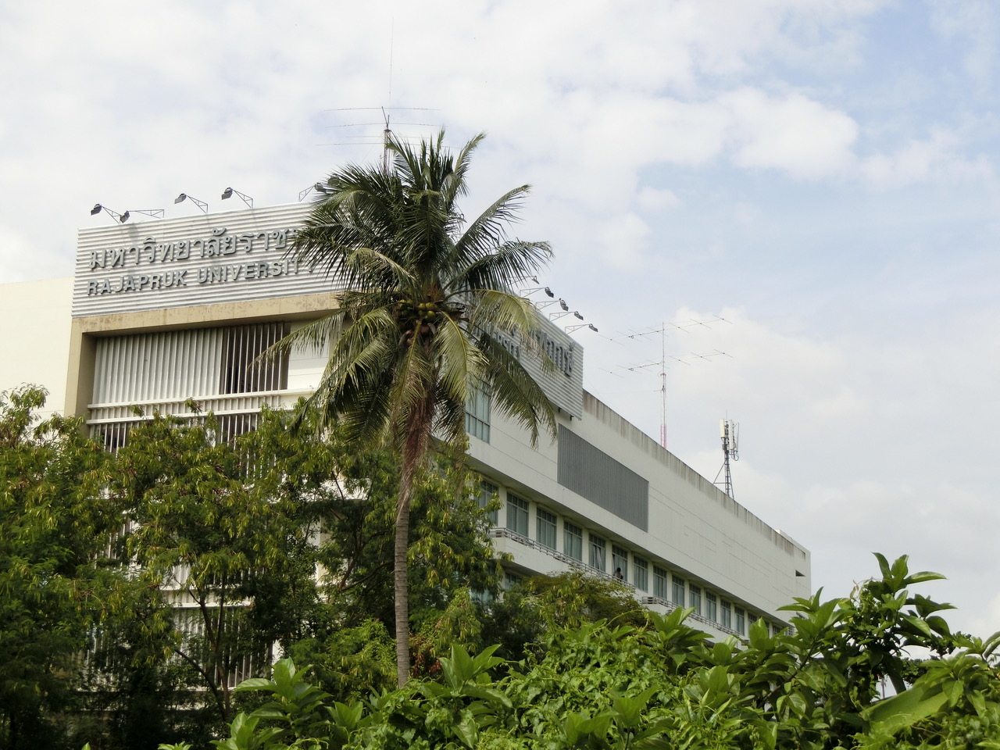
<BR><B>タイ国から”CQ World Wide VHF Contest”で運用したE2E ＆ HS0AC</B>
<HR SIZE="3" WIDTH="550">
</CENTER>
<PRE>
<FONT COLOR="BLUE" SIZE=-1><B>Report from JA1RJU(PM95sq)</B></FONT>
<B>22.JuL.2018(15:00b)</B>
<DIV ALIGN="CENTER">
<TABLE BORDER="0" WIDTH="600" ALIGN="CENTER">
<TR ALIGN="LEFT">
<TD>
◎<B>タイ国(HS)のRASTから公表されていたコンテスト時のみにNBTCからの特別許可を得て運用していた6mバンドが、今年から許可を得ずに自由に運用する事が可能になったことにより、「CQ World Wide VHF Contest」の行われる7月21-23日の3日間、特別局のE2Eをはじめ、多くの局が6mにQRVしている。
運用は相変わらず「コンテスト」時のみに限定されているものの海外からのゲストの参加も可能とされ、JAからのOPも運用している。
今年の運用(6m)のコンテストは下記の通り。
    ●NBTC(Telecommunications Commission)

    ○ CQ World Wide VHF Contest:  21-23.July,2018
    ○ ARRL September VHF Contest: 08-10.September,2018
</TD>
</TR>
</TABLE>
</DIV>
</B>

     <B>○(FT8=> 本日のNA方面の入感局=22:40z-01:00z)
      -------------------------------------------------------------
      W0FK.N0AN.N0LWF.W5LE.NN4X.N0LL.K0TPP.K9AN.W5VG.N4JQQ.K0DEQ
      KM0A.KL7HBK.K0CM.K6EID.N5OMG.W0JW.KE4UW.K4XO.K0SD.AK9S.N3XX
      N5BCA.W7XU.KD9GKL.W0SD.AC4TO.N0AN.K0GU.KA9CFD.VA4OXW.K4SX
      W3UUM.KH6/K6MIO.K5YCM.NH6Y.K5QR.KB7RUQ.K5DG.K5OB.K5RX.XE1H
      -------------------------------------------------------------

     ○ <I>CQ World Wide VHF Contest: 21-23.July,2018=タイ国(RAST)</I>

      E2E.HS1HSE.HS3ANP.HS3LSE.E27AU.HS2UPR.HS5YLK.HS0ACS.HS0AC
      -------------------------------------------------------------

     ○(FT8=> 本日のASIA and South East ASIA & EUの入感局=01:58z-13:00z)
 
      9M2/JG3TTO.9M4DXX.9M2TO.
      -------------------------------------------------------------
      EX8MLT.EX9QT.UN8GC.UK9AA.UN6T
      -------------------------------------------------------------

<FONT COLOR="BLUE" SIZE=-1><B>Report from JA1RJU(PM95sq)</B></FONT>
<B>21.JuL.2018(15:00c)</B>

     <B>○(FT8=> 本日のNA方面の入感局=23:30z-01:00z)
      -------------------------------------------------------------
      N4MW(VA).XE2OR.K8OM(IA).K5NA(TX).XE2AT.K5RK(TX).XE2YWH.W5TCX(TX)
      -------------------------------------------------------------

     ○ <I>CQ World Wide VHF Contest: 21-23.July,2018=タイ国(RAST)</I>

      HS3LSC       00:58:30-   50.313-****      FT8     -09dB into JA7
        ↓
      K5RK         00:59:30-   50.313-****      FT8     -22dB into JA7
      HS3LSC       01:00:30-   50.313-****      FT8     -01dB QSO with JA1/2/3/6/7/0
        ↓        ↓
      DU1/JA3FJE   01:10:45-   50.313-****      FT8     -01dB QSO with JA1
      HS3ANP       01:13:30-   50.313-1133      FT8     -09dB QSO with JA1/2/3/7/DS4
      UN8GC        01:17:45-   50.313-****      FT8     -01dB into JA1
        ↓
      HS2JQC       01:27:00-   50.313-****      FT8     -08dB QSO with JA1/7
      HS2LSC       01:29:00-   50.313-****      FT8     -08dB QSO with JA1/3
        ↓
      4S3OM        01:47:30-   50.313-****      FT8     -14dB QSO with JA0
      HS2LSC       01:56:00-   50.313-****      FT8     -16dB QSO with JA0
        ↓
      EX9QT        02:37:30-   50.313-****      FT8           into JA3
        ↓
      KG6DX        02:54:30-   50.313-****      FT8     +00dB QSO with JA7/BD6JN
        ↓
      HB0CC        08:11:30-   50.313-****      FT8     -15dB QSO with JA1/6 (1st Liechtenstein)
        ↓
      HS0AC        09:28:30-   50.313-1521      FT8     -06dB QSO with JA1

      -------------------------------------------------------------
     ○(FT8=> 本日のASIA and South East ASIA & EUの入感局=01:58z-13:00z)
      -------------------------------------------------------------
      HS3LSE(00:58z-).HS3ANP(01:13z-).UN8GC(01:18z-).HS2JQC.4F3OM
      VR2XLQ.BD4RQ.EX9QT(02:37z-).BD7JNA.BD6JN.BD7TBP.VR2XLO.BD7OH
      KG6DX(02:54z-).BD7SPN.BI4SDT.BD4RQ.BD7BW.BG6BB.BA1PK.BG6CJR
      US8ICM(03:54z-).BG9OF.US8UA.UW1HM.BA5DX.UR5UH.SV1QEZ.R6KA.Z68M
      SV1DH.IK7LJZ.UT7UJ.IZ5EME.IK2GSO.HA8FK.YO8RHI.UT4EX.UT2XQ.UT4XU
      UT7TA.YO2LEA.UW8SM.IK4ISR.YO5CRI.HA5JI.SV2DOD.IW0FFK.S57TW.S59A
      YU7FF.OE4VIE.OE3EMC.S52D.HA2NP.IE0FFK.IK4WMA.SV1QEZ.I4EAT.IK5EKV
      UT5XR.S57RR.US5ME.IK0FTA.OE5OLL.SP9FUY.9A2X.I4GAS.OK2GM.HA8UT
      S51DT.IK8DYD.YU2LEA.HB9Q.HB0CC.I4ZQS.S59SV.YO9HP.HS0AC.etc.

      -------------------------------------------------------------
</B>
<FONT COLOR="BLUE" SIZE=-1><B>Report from JA1RJU(PM95sq)</B></FONT>
<B>20.JuL.2018(15:00c)</B>
<B>      K0GU         23:25:30-   50.313-****      WSJT      FT8     -09dB QSO with JA2
      VE7SL        23:26:30-   50.313-****      WSJT      FT8     -19dB into JA1/2
      WA7BRL       23:26:30-   50.313-****      WSJT      FT8     -15dB into JA7
      K1TOL        23:28:00-   50.313-****      WSJT      FT8           into JA7
      W8OI         23:28:30-   50.313-****      WSJT      FT8     -15dB into JA2
      W7FI         23:31:30-   50.313-2286      WSJT      FT8     -08dB QSO with JA1
      VE7GEM       23:34:30-   50.313-****      WSJT      FT8     -16dB into JA2/0
      NU7J         23:35:30-   50.313-****      WSJT      FT8     -18dB into JA2
      W5ADD        23:38:45-   50.313-****      WSJT      FT8           into JA2
      WS5W         23:42:30-   50.313-****      WSJT      FT8     -14dB into JA1
      K7CW         23:44:30-   50.313-****      WSJT      FT8     +01dB QSO with JA8
      W5RYA        23:48:30-   50.313-****      WSJT      FT8           into JA1
      VE7ADY       23:50:00-   50.313-****      WSJT      FT8     -20dB into JA2
      XE2OR        23:50:30-   50.313-****      WSJT      FT8           into JA2
      K5QKC        23:52:00-   50.313-****      WSJT      FT8     -18dB into JA7
      N5OK         23:52:30-   50.313-****      WSJT      FT8     -19dB into JA1
      N6RV         23:52:30-   50.313-****      WSJT      FT8     -18dB into JA7
      W5RYA        23:56:00-   50.313-****      WSJT      FT8     -06dB into JA1
      VE6WQ        23:58:30-   50.313-****      WSJT      FT8     -18dB into JA1
      -------------------------------------------------------------------------- 
      KG5THG       00:00:00-   50.313-****      WSJT      FT8     -18dB into JA7
      XE2OR        00:01:00-   50.313-****      WSJT      FT8     -18dB QSO with JA0
      VE6WQ        00:02:30-   50.313-****      WSJT      FT8     -18dB QSO with JA1
      N5DG         00:03:30-   50.313-****      WSJT      FT8     -19dB into JA1/9
      W5AFY        00:04:30-   50.313-****      WSJT      FT8     -15dB into JA1
      W5RYA        00:05:30-   50.313-****      WSJT      FT8     -18dB QSO with JA0
      K5LA         00:06:00-   50.313-****      WSJT      FT8     -09dB into JA9
      JD1BHA       00:07:30-   50.313-****      WSJT      FT8     -13dB into JA7
      JD1BHA       00:09:00-   50.313-1010      WSJT      FT8     -09dB QSO with JA1
      XE2OR        00:10:30-   50.313-****      WSJT      FT8     -19dB into JA1
      VE7DAY       00:13:00-   50.313-****      WSJT      FT8     -11dB into JA0
      XE2JS        00:13:00-   50.313-****      WSJT      FT8     -19dB QSO with JA7
      XE2OR        00:17:00-   50.313-****      WSJT      FT8     -12dB QSO with JA1
      N5OSK        00:25:00-   50.313-****      WSJT      FT8     -17dB into JA2
      XE2HWB       00:30:00-   50.313-****      WSJT      FT8     -08dB into JA7 & QSO
      W7FI         00:31:00-   50.313-1911      WSJT      FT8     -14dB QSO with JA1
      XE2HWB       00:34:00-   50.313-****      WSJT      FT8     -13dB into JA9
      XE2OR        00:37:30-   50.313-1950      WSJT      FT8     -13dB QSO with JA7
      XE2JS        00:37:30-   50.313-****      WSJT      FT8     -08dB into JA7
      XE1H         00:40:00-   50.313-****      WSJT      FT8           into JA7
      KR7O         00:40:30-   50.313-****      WSJT      FT8     -16dB QSO with JA3
      VE7DAY       00:43:30-   50.313-****      WSJT      FT8     -15dB into JA1/2/0
      XE2OR        00:45:00-   50.313-****      WSJT      FT8     -18dB into JA2
      N1RWY        00:45:30-   50.313-****      WSJT      FT8     -17dB QSO with JA7
      XE2HWB       00:54:00-   50.313-****      WSJT      FT8     -16dB into JA1/3/7/8
      KD7PY        00:57:30-   50.313-****      WSJT      FT8     +04dB QSO with JA7
      XE2HWB       01:05:00-   50.313-****      WSJT      FT8     -10dB QSO with JA7
      NJ5W         01:28:00-   50.313-****      WSJT      FT8     -08dB QSO with JA7
      K5YCM        01:28:30-   50.313-****      WSJT      FT8     -19dB into JA7
      VE7DAY       01:30:30-   50.313-****      WSJT      FT8     -07dB into JA1/2/3/4/6/7/9
      4F3OM        01:44:00-   50.313-****      WSJT      FT8           into JA1
      W7FI         01:54:00-   50.313-1936      WSJT      FT8     -14dB/13dB (QSO)
      VE7DAY       02:14:00-   50.313-2097      WSJT      FT8     -19dB CQ(CO70)
      4F3BZ        03:03:30-   50.313-1439      WSJT      FT8     -16dB QSO with JA1/2/7
      4F3BZ        03:19:15-   50.313-1435      WSJT      FT8     -12dB CQ(PK04)
      DU6GG        03:24:45-   50.313-1231      WSJT      FT8     -17dB CQ(PK10) & QSO with JA1/2/9
        ↓
      DU1/JA3FJE   03:46:45-   50.313-1223      WSJT      FT8     -09dB CQ(PK04)
        ↓
      JD1BHA       03:53:30-   50.313-****      WSJT      FT8     -08dB QSO with JA9
      DU3GKT       04:06:30-   50.313-****      WSJT      FT8     -05dB QSO with JA1
      DU6GG        04:28:30-   50.313-****      WSJT      FT8     -03dB QSO with JA1
      4F3BZ        04:32:30-   50.313-****      WSJT      FT8     +02dB QSO with JA1
        ↓
      DU6/PE1NSQ   04:39:00-   50.313-****      WSJT      FT8     -14dB QSO with JA1
      XW4XR        04:52:45-   50.313-****      WSJT      FT8     -14dB QSO with JA4
        ↓
      (13:00z-)
      ------------------------------------------------------------------------------
</B>
<FONT COLOR="BLUE" SIZE=-1><B>Report from JA1RJU(PM95sq)</B></FONT>
<B>19.JuL.2018(15:00c)</B>
<B>
      W7DGZ        23:30:30-   50.313-****      WSJT      FT8     -16dB into JA1/2/5/7
      ------------------------------------------------------------------------------
        ↓ (VR2IL.BD8NBG.BD7OH.DS5USH.9M2TO.BU2BV.BV2KI.VR2XRW.BG8UF.BA5DX.VR2ZLK)

      XW4XR        01:42:45-   50.313-648       WSJT      FT8     +01dB CQ(OK17)
      XW4XR        01:48:15-   50.313-650       WSJT      FT8     +00dB QSO with JA1/2/3/6/7/9/0
        ↓
      XW4XR        02:04:15-   50.313-651       WSJT      FT8     +01dB QSO with JA1/2/3/7/9/HL4/BA4
        ↓
      XW4XR        02:33:15-   50.313-650       WSJT      FT8     +00dB QSO with JA1/2/3/5/JR6
        ↓
      4F3OM        02:49:30-   50.313-1253      WSJT      FT8     -11dB QSO with JA1/2/3/7/DS5
        ↓
      UN8GC        03:00:00-   50.313-1451      WSJT      FT8     -14dB CQ(MN83)
      UN8GC        03:01:30-   50.313-1451      WSJT      FT8     -14dB QSO with JA1
      XW4XR        03:02:15-   50.313-650       WSJT      FT8     +03dB QSO with JA3
        ↓
      4F3OM        03:16:15-   50.313-1251      WSJT      FT8     -13dB QSO with JA5
      UN8GC        03:16:30-   50.313-1450      WSJT      FT8     -16dB CQ(MN83)
      EX9QT        03:49:00-   50.313-1245      WSJT      FT8     -06dB CQ(MN82)
        ↓
      UR3QCW       04:05:00-   50.313-****      WSJT      FT8     -16dB into JA1
      UR9QQ        04:14:30-   50.313-****      WSJT      FT8     -17dB QSO with JA1
      UT7UJ        04:15:15-   50.313-****      WSJT      FT8     -10dB QSO with JR6
        ↓
      UT1HY        04:17:30-   50.313-1213      WSJT      FT8     -08dB QSO with JA1
      UR5LAK       04:24:00-   50.313-2072      WSJT      FT8     -16dB CQ(MN89)
      UW1HM        04:24:30-   50.313-827       WSJT      FT8     -18dB QSO with JA1
      VU2ATN       04:27:00-   50.313-1296      WSJT      FT8     -13dB QSO with JA2
      UT7GH        04:27:30-   50.313-****      WSJT      FT8     -16dB into JA1
      UT6LX        04:29:00-   50.313-****      WSJT      FT8     -13dB into JA0
      US8UX        04:55:30-   50.313-1129      WSJT      FT8     -14dB QSO with JA5
      UR4LRG       04:56:30-   50.313-894       WSJT      FT8     -03dB CQ(KO80)
      UT9LB        05:01:30-   50.313-2542      WSJT      FT8     -16dB CQ(KN89)
      UR4LRG       05:06:00-   50.313-****      WSJT      FT8     +00dB QSO with JA1
      UT2XQ        05:07:30-   50.313-****      WSJT      FT8     -08dB QSO with JA1
      UB5LCV       05:15:30-   50.313-1877      WSJT      FT8     -12dB QSO with JA2
        ↓
      UT9LC        05:47:30-   50.313-****      WSJT      FT8     -07dB QSO with JA8
      UT7QF        06:11:00-   50.313-1269      WSJT      FT8     -17dB CQ(KN77)
      D1DX         06:11:30-   50.313-****      WSJT      FT8     -15dB QSO with JA1
      US3LR        06:15:30-   50.313-2112      WSJT      FT8     -21dB QSO with JA8
      IW9HII       06:27:00-   50.313-****      WSJT      FT8     -19dB QSO with JA1
        ↓
      US5WE        06:36:30-   50.313-904       WSJT      FT8     -17dB CQ(KN29)
      UT4XU        06:37:00-   50.313-1615      WSJT      FT8     -10dB CQ(KO40)
      UX1BZ        06:39:30-   50.313-1809      WSJT      FT8     -12dB QSO with JA7
      YO3DDZ       06:42:30-   50.313-741       WSJT      FT8     -20dB QSO with JA1
        ↓
      Z68M         06:53:30-   50.313-****      WSJT      FT8           into JA2
        ↓
      UX0FF        07:02:00-   50.313-2294      WSJT      FT8     -04dB QSO with JA9
        ↓
      LZ2WO        07:15:00-   50.313-1240      WSJT      FT8     -14dB QSO with JA2
      LZ2NW        07:15:00-   50.313-2141      WSJT      FT8     -22dB QSO with JA4
      YO6MM        07:30:30-   50.313-1505      WSJT      FT8     -09dB/-09dB(QSO)
      YO4CVV       08:05:00-   50.313-1350      WSJT      FT8     -17dB/-16dB(QSO)
      YT3N         08:17:00-   50.313-1273      WSJT      FT8     -07dB/-13dB(QSO)
        ↓
      (15:00z)
      ------------------------------------------------------------------------------
</B>
<DIV ALIGN="CENTER">
<TABLE BORDER="0" WIDTH="600" ALIGN="CENTER">
<TR ALIGN="LEFT">
<TD>
◎<B>早朝の北米は東日本で短いオープンがあり、FT8ではKX4R(GA)、KA9CFD(IL)、W7DGZ(WA)やハワイのKH6Uなどがリポートされている。
09:00JST頃には東南アジア方面が強力にオープン、フィリピンの4F3OMや中国、香港、などと共に10:43JSTにCQを出すラオスのXW4XRが入感、JA'sのパイルアップが12:00JST過ぎまで続いていた。XW4XRがフェードアウトする直前に入れ替わる様にUN8GCのCQが入感。午後の西アジアからヨーロッパ方面のオープンが始まった。12:49JSTにCQを出すEX9QTが-06dBで強力に入感、13:00JSTを過ぎる頃にはカザフスタンからウクライナ付近の信号が上昇、コンディションはヨーロッパ中央部から北はフィンランド(OH)から南は地中海沿岸のギリシャ(SV)からイタリア(I/IW)まで広範囲のオープンで賑わっていた。
KOSOBOからの運用は18日までの予定だったZ68Mは、運用を23日まで延期して今日もQRVしていた。ヨーロッパの局やヨーロッパを呼ぶJAのパイルで、FT8のZ68MはJA1(PM95)では確認できなかったが、18:10JST頃に50.050MHzのCWで運用してきた。
指定したUP5でZ68MをコールするJA1/2の局が入感していたが相手は確認できなかった。

     -------------------------------------------------------------     
     Z68M         0908Z  50050.0 JA still open UP 5        Z32ZM
     -------------------------------------------------------------     
     Z68M         0906Z  50050.0 QSX UP 5                   Z32ZM 
     -------------------------------------------------------------
</TD>
</TR>
</TABLE>
</DIV>
</B>

<FONT COLOR="BLUE" SIZE=-1><B>Report from JA1RJU(PM95sq)</B></FONT>
<B>18.JuL.2018(15:00d)</B>
<B>      KL7HBK       22:33:00-   50.313-****      WSJT      FT8     -14dB into JA7(QM08)
        ↓
      FK8GX        22:59:00-   50.313-****      WSJT      FT8     -10dB into JR6
        ↓
      AA7A         23:15:30-   50.313-****      WSJT      FT8           into JA2
        ↓
      WO7R         23:38:30-   50.313-****      WSJT      FT8     -16dB into JA1
      ------------------------------------------------------------------------------
      BU2BV        00:00:45-   50.313-1617      WSJT      FT8     +12dB CQ(PL05)
        ↓ (BV2KI.HL4HPK.DS5USH.VR2KW.etc)
      UN8GC        03:52:00-   50.313-1246      WSJT      FT8     -14dB CQ(MN83) & QSO with JA3
        ↓
      UK9AA        04:33:00-   50.313-2010      WSJT      FT8     -17dB CQ(MN41)
        ↓
      UN8GC        04:50:30-   50.313-1247      WSJT      FT8     -13dB CQ(MN83) 
        ↓ (BD6JN.DS2XBJ.BA4SI.BA5DX.etc)
      UN8GC        05:19:00-   50.313-1247      WSJT      FT8     -06dB CQ(MN83)
      UK9AA        05:21:30-   50.313-2012      WSJT      FT8     -18dB CQ(MN41) 
        ↓ (BI4SDT.BH4TVU.BH4UTT.HL2ADY)
      9K2YM        05:59:30-   50.313-****      WSJT      FT8     -07dB QSO with JR6/JA3
        ↓
      YO3DDZ       06:01:30-   50.313-****      WSJT      FT8     -19dB into JA3/4
        ↓
      9K2YM        06:12:30-   50.313-742       WSJT      FT8     -17dB CQ(LL48) 
      UN8GC        06:18:30-   50.313-1246      WSJT      FT8     -15dB CQ(MN83) 
      UK9AA        06:18:30-   50.313-2009      WSJT      FT8     -19dB CQ(MN41) 
        ↓
      D1DX         06:19:00-   50.313-****      WSJT      FT8     -12dB into JA6 
        ↓
      UX4UA        06:29:00-   50.313-****      WSJT      FT8     -10dB QSO with JA5 
      UT7UJ        06:29:30-   50.313-****      WSJT      FT8     -12dB QSO with JA4 
        ↓
      UN8GC        06:40:00-   50.313-1244      WSJT      FT8     -14dB CQ(MN83) 
      UK9AA        06:40:30-   50.313-2009      WSJT      FT8     -16dB CQ(MN41) 
        ↓
      UR5LAK       07:00:00-   50.313-****      WSJT      FT8     -19dB QSO with JA5 
      UW1HM        07:01:00-   50.313-****      WSJT      FT8     -19dB QSO with BT4 
        ↓ (BD4WN.BG3ISR.BG3IYX.HL3EQG.)
      9K2YM        07:10:30-   50.313-****      WSJT      FT8           into JA5
        ↓
      UR5LAK       07:22:00-   50.313-****      WSJT      FT8     -10dB QSO with JA7 
      9K2YM        07:23:30-   50.313-****      WSJT      FT8     -15dB QSO with JA1/2/3/4/5
        ↓
      HA3FOK/MM    07:25:00-   50.313-985       WSJT      FT8     -18dB CQ(RN08) 
      9K2YM        07:25:00-   50.313-****      WSJT      FT8     -14dB QSO with JA1/2/3/4/6
        ↓
      D1DX         07:27:00-   50.313-****      WSJT      FT8     -13dB QSO with JA4/6
      SV9CVY       07:27:30-   50.313-****      WSJT      FT8     -13dB QSO with JR6
      UY1HY        07:28:00-   50.313-****      WSJT      FT8     -10dB QSO with JA6 
      SP4MFB       07:29:30-   50.313-****      WSJT      FT8     -17dB QSO with JS6
      HA3FOK/MM    07:32:30-   50.313-976       WSJT      FT8     -17dB/+09(QSO) 
        ↓
      SV9CVY       07:34:30-   50.313-****      WSJT      FT8     -13dB QSO with JA5/6/JR6 
      YO3DDZ       07:39:00-   50.313-****      WSJT      FT8     -12dB QSO with JA2 
      UR5LAK       07:39:30-   50.313-****      WSJT      FT8           QSO with JS6 
      SV5/SV1LK    07:41:00-   50.313-****      WSJT      FT8     -17dB QSO with JA4 
      SP4MFB       07:55:30-   50.313-****      WSJT      FT8           QSO with JA6
      UN8GC        08:05:00-   50.313-1244      WSJT      FT8     -13dB CQ(MN83)
      LY1G         08:06:00-   50.313-****      WSJT      FT8     -19dB into JR6
        ↓
      Z68M         09:58:30-   50.313-****      WSJT      FT8           into? JA3
        ↓
      SV2BWY       10:34:00-   50.313-****      WSJT      FT8     -16dB into JA2
      EK7DX        10:59:15-   50.313-****      WSJT      FT8     -16dB into JA2
      EX9QT        11:00:00-   50.313-1268      WSJT      FT8     -13dB CQ(MN82)
      UN8GC        11:00:00-   50.313-1245      WSJT      FT8     -15dB CQ(MN83)
        ↓
      EX7DX        11:40:00-   50.313-****      WSJT      FT8           into JA9
        ↓
      (13:30z)
</B>
<FONT COLOR="BLUE" SIZE=-1><B>Report from JA1RJU(PM95sq)</B></FONT>
<B>17.JuL.2018(15:00d)</B>
<DIV ALIGN="CENTER">
<TABLE BORDER="0" WIDTH="600" ALIGN="CENTER">
<TR ALIGN="LEFT">
<TD>
◎<B>早朝の北米の入感は東日本から北米南東部エリアのフロリダ(FL)、ジョージア(GA)、テネシー(TN)など、W4(GA)を中心とした州がスポット的にオープンする珍しい伝搬だった。手前のアラバマ(AL)、モンタナ(MO)、イリノイ(IL)の各州も短時間聞こえていたが、何時も入感する西海岸のW5/6/7などは当地(PM95)では確認されなかった。
午後のアジア(VU2ATN)、中近東(9K2YM)、ヨーロッパ方面は昨日ほどコンデションは長続きする事なく、16:40JST頃にEX9QTのCQが-11dB程度で聞こえたのと入れ違いに、16:30JST頃からVK8AWとVK8MSがヨーロッパのYO3DOZとQSOしているのがJAに強力に入感していた。
</TD>
</TR>
</TABLE>
</DIV>
     <B>○(FT8=> 本日のNA方面の入感局=23:40z-01:40z)
      -------------------------------------------------------------
      K0TPP(MO).N4QWZ(TN).WX4G(FL).K9ZM(IL).N1DG(MA).KD5M(FL)
      WC4H(FL).WG8S(AL).K0WYN(MO).W3CP(GA).W4WT(GA).N3XX(GA)
      W4IMD(GA).KO0Z(IL).K4RB(GA).WB4LMQ(FL).KC4AAW(NC).WB4JWM(GA)
      K4HB(GA).WS4S(TN).KN4JX(MO).K0DEQ(MO).WA4LXU(GA).AA7UN(ID)
      -------------------------------------------------------------
     ●DU7/PA0HIP(23:45z).DU1/JA3FJE.
      -------------------------------------------------------------
     ○(FT8=> 本日のSouth East ASIA & EU方面の入感局=01:00z-13:00z)
      -------------------------------------------------------------
      EX8MLT(01:38=CQ).DU1/JA3FJE.UN8GC(01:43=CQ).UN6T.UK8FF.UK9AA
      EX9QT.9K2YM(03:45z-).VU2ATN(03:47z-).5B4ALX.VK8MS(07:28z-CQ)
      VK8AW(QSO with YO3DDZ).YB1UUU.SV5DKL.
      -------------------------------------------------------------

     ●(FT8=> 本日JA7でQSO出来た北米の局=＞　TNX JA7QVI(QM08)

	Call	Date	UTC	Mode	Freq	State
      ----------------------------------------------------------
        W7GJ	16-Jul	21:17	FT8	50.313	MT
        NU4Y	16-Jul	21:20	FT8	50.313	FL
        W6DE	16-Jul	21:32	FT8	50.313	CA
	W4SO	16-Jul	21:35	FT8	50.313	FL
	AH0U	16-Jul	21:47	FT8	50.313	CA
	WA7JAY	16-Jul	21:58	FT8	50.313	CA
	K5HK	16-Jul	22:04	FT8	50.313	NV
	N3XX	16-Jul	22:19	FT8	50.313	GA
	K0DEQ	16-Jul	22:55	FT8	50.313	MO
	KN4JX	16-Jul	23:09	FT8	50.313	MO
	K0TPP	16-Jul	23:20	FT8	50.313	MO
	WA1QDP	16-Jul	23:23	FT8	50.313	FL
	K0WYN	16-Jul	23:45	FT8	50.315	MO
	WC4H	16-Jul	23:47	FT8	50.315	FL
	WG8S	16-Jul	23:48	FT8	50.315	AL
	K9ZM	17-Jul	0:01	FT8	50.315	IL
	W3CP	17-Jul	0:15	FT8	50.315	GA
	N3XX	17-Jul	0:16	FT8	50.315	GA
	WX4G	17-Jul	0:17	FT8	50.315	FL
	W4IMD	17-Jul	0:24	FT8	50.315	GA
	K4HB	17-Jul	0:29	FT8	50.315	GA
	WB4LMQ	17-Jul	0:30	FT8	50.315	FL
	WB4JWM	17-Jul	0:33	FT8	50.315	GA
	K6EID	17-Jul	0:43	FT8	50.315	GA
      --------------------------------------------------------
</B>
<FONT COLOR="BLUE" SIZE=-1><B>Report from JA1RJU(PM95sq)</B></FONT>
<B>16.JuL.2018(15:00d)</B>
<B>
      ZF1EJ        21:31:00-   50.313-****      WSJT      FT8      "CQ JA into JA1"
      ZF1EJ        21:37:00-   50.313-****      WSJT      FT8           QSO with JA1(QM05)
        ↓
      BD8NBG       01:36:00-   50.313-2050      WSJT      FT8     -01dB QSO with JA1
        ↓
      EX9QT        01:55:00-   50.313-****      WSJT      FT8     -13dB QSO with JA2/3
        ↓
      EX8MLT       03:00:00-   50.313-****      WSJT      FT8     -09dB QSO with JS6
        ↓
      A92HK        03:04:30-   50.313-****      WSJT      FT8     -15dB QSO with JA3/4
      A92GE        03:19:00-   50.313-****      WSJT      FT8     -13dB QSO with JA2/3/5/6/0
      A92HK        03:57:30-   50.313-****      WSJT      FT8     -15dB QSO with JA3
      A92AA        04:08:00-   50.313-****      WSJT      FT8     -04dB QSO with JA3/4/5/6
      UN6T         04:35:45-   50.313-****      WSJT      FT8     -15dB QSO with JA6
        ↓
      EX9QT        05:02:00-   50.313-****      WSJT      FT8     -15dB QSO with DS5USH
      UK9AA        05:07:30-   50.313-****      WSJT      FT8     -13dB QSO with JA3
      LZ1ZP        05:11:00-   50.313-****      WSJT      FT8     -11dB QSO with JA6
      LZ4TL        05:13:30-   50.313-****      WSJT      FT8     -16dB QSO with JA6
        ↓
      A92AA        05:18:30-   50.313-1396      WSJT      FT8     -12dB CQ(LL56)
      UK9AA        05:20:00-   50.313-2510      WSJT      FT8     -12dB CQ(MN41)
      UK9AA        05:22:00-   50.313-2510      WSJT      FT8     -12dB QSO with JA2
      EX9QT        05:33:30-   50.313-1244      WSJT      FT8     -10dB CQ(MN82)
      VU2NKS       05:41:15-   50.313-****      WSJT      FT8     -19dB into JA1/2/6
      EX9QT        06:17:30-   50.313-1246      WSJT      FT8     -02dB CQ(MN82)
        ↓
      9K2GS        06:41:00-   50.313-****      WSJT      FT8     -07dB QSO with JA1
        ↓
      KG6DX        08:08:45-   50.313-****      WSJT      FT8     -12dB QSO with JA1
        ↓
</B>
<FONT COLOR="BLUE" SIZE=-1><B>Report from JA1RJU(PM95sq)</B></FONT>
<B>15.JuL.2018(15:00d)</B>
<DIV ALIGN="CENTER">
<TABLE BORDER="0" WIDTH="600" ALIGN="CENTER">
<TR ALIGN="LEFT">
<TD>
◎<B>昨日同様今朝の6mの北米方面のコンデションは、JA1でも北米西海岸やカナダのVE5DFが入感してQSOが出来たエリアもあったが、高層ビル遮られた当地では、FT8はデコードできなかった。
北米がフェードアウトしてからUK8FFが聞こえ出した11:20JST頃から、昨日長時間入感していたEX9QTやラオスのXW4XRなど近場が入感していたが大陸内部が聞こえ出したのは遅く、カザフスタン(UN)の"常連"局が入感し始めてから徐々にエリアは北向きに動き出した。
昨日と異なり入感のエリアは狭くYU、YOなど中部エリアに限定された狭い範囲だった。
　13:50JST頃にJA3/4など西日本から、昨日良く聞こえていたCOSOBOのZ68Mの入感がリポートされていたが、Z68MのOPのZ32ZM・Momeからの連絡では、30分ほどCQを出していたがJAとのQSOは出来なかった」と。Z68Mの運用は7月23日までの予定。
「<I>To day I was CQ more than 30 minutes , nobody answer Me , everybody calling YO, UR  stations</I>」
</TD>
</TR>
</TABLE>
</DIV>

     <B>○(FT8=> 本日のNA方面の入感局=22:50z-00:10z)
      -------------------------------------------------------------
      K5MO.W5ADD.K0GU.VE5UF.W5LDA.WB0NRV.N5OK.NH6Y(HI).AG0N.W5RWF
      W5ZN.
      -------------------------------------------------------------
     ○(FT8=> 本日のSouth East ASIA & EU方面の入感局=01:00z-14:00z)
      -------------------------------------------------------------
      UK8FF.EX9QT.UN7TK.UN8GC.UK9AA.EX8MLT.XW4XR.UR5LCV.UN6T.US8UX
      UT4XU.YO6FNA.US0ZZ.9K2GS.UT5XR.US8UA.ER1GY.Z68M.YL2FZ.VU2ATN
      UW1HM.UX4UA.UR5LAK.US3LR.UT9LB.US0LW.US0QV.YU7FF.UX1BZ.UR9QQ
      UT2XQ.UX1IW.YO8RHI.YO8BGE.A41KT.UN3GX
      -------------------------------------------------------------
     ○ (FT8＝>ASIA　
      BD7OH.BG8UF.VR2ZAZ.VR2IL.BD7LMD.BG2KAJ.DS2XBJ/2.BA5DX.BA4SO
      VR2XRW.BD8NBG.BG6LH.BH4SPN.BI4SDT.BA4SI.etc)
</B>
<FONT COLOR="BLUE" SIZE=-1><B>Report from JA1RJU(PM95sq)</B></FONT>
<B>14.JuL.2018(15:00c)</B>
<B>
      KH6U         23:45:30-   50.313-****      WSJT      FT8     -07dB QSO with JA1/2
      ---------------------------------------------------------------------------------
      KH6U         00:01:30-   50.313-412       WSJT      FT8     -12dB QSO with JA9
      KH6U         00:01:30-   50.313-412       WSJT      FT8     -12dB QSO with JA9
      NH6U         00:02:00-   50.313-396       WSJT      FT8     -02dB QSO with JA1/2/3/4/7/9/0
        ↓
      NH6U         00:12:00-   50.313-384       WSJT      FT8     -01dB QSO with JA1/2/3/4/7/9/0
      NH6U         00:23:00-   50.313-384       WSJT      FT8     -14dB QSO with JA1/7/9/0
      KH6/K6MIO    00:45:30-   50.313-928       WSJT      FT8     -09dB QSO with JA1/2/3/4/HL2
        ↓
      KH6/K6MIO    00:59:15-   50.313-928       WSJT      FT8     -05dB QSO with DS4EOI
      KH6/K6MIO    01:21:45-   50.313-937       WSJT      FT8     -14dB CQ(BK29)
        ↓
      EX9QT        01:52:30-   50.313-1284      WSJT      FT8     -14dB CQ(MN82)
        ↓
      EX9QT        01:57:00-   50.313-1280*     WSJT      FT8     -11dB QSO with JA1
        ↓         01:57:00-   50.313-1340**              FT8     -12dB QSO with JA1
        ↓         01:57:00-   50.313-1400***             FT8     -03dB QSO with JA1
      EX9QT        01:57:30-   50.313-1284      WSJT      FT8     -14dB QSO with JA1
        ↓
      UN8GC        02:14:00-   50.313-1708      WSJT      FT8     -15dB CQ(MN83)
        ↓
      EX9QT        02:16:00-   50.313-****      WSJT      FT8     -14dB QSO with JA2/6/9
      UK8FF        02:38:00-   50.313-****      WSJT      FT8     -12dB QSO with JA8
      EX9QT        02:57:30-   50.313-1284      WSJT      FT8     -14dB QSO with JA1
      UN6TA        02:57:30-   50.313-****      WSJT      FT8     -09dB QSO with JA2
        ↓
      TA9J         05:16:00-   50.313-****      WSJT      FT8     -07dB QSO with JA1/2/3/4/9/0
      EX8MLT       05:36:30-   50.313-1536      WSJT      FT8     -16dB CQ(MN72)
        ↓
      EK7DX        06:47:30-   50.313-****      WSJT      FT8     -15dB into JA7-
      EX9QT        06:51:30-   50.313-****      WSJT      FT8     -04dB QSO with JA1/7
      LZ5QD        06:58:00-   50.313-****      WSJT      FT8     -15dB into JA1
      VU2ATN       07:04:30-   50.313-****      WSJT      FT8     -20dB into JA6
        ↓
      Z68M         07:08:00-   50.313-1940      WSJT      FT8     -15dB into JA1-
      Z68M         07:22:00-   50.313-1782      WSJT      FT8     -09dB QSO with HL3GOB
        ↓
      IW9HII       07:57:00-   50.313-2035      WSJT      FT8     -11dB QSO with JA1-
      LA7DFA       07:59:00-   50.313-****      WSJT      FT8     -17dB into JA1-
        ↓
      EX9QT        11:48:30-   50.313-1306      WSJT      FT8     -16dB CQ(MN82)
      SV1AHX       11:50:30-   50.313-2290      WSJT      FT8     -19dB CQ(KM18)
      SV1AHX       11:52:00-   50.313-2290      WSJT      FT8     -17dB QSO with JA1/2
      A45XR        12:04:00-   50.313-554       WSJT      FT8     -17dB QSO with JA1
      EX9QT        12:07:00-   50.313-****      WSJT      FT8     -10dB QSO with JA1
        ↓
     (HA7TM.UN8FF.YO3DDZ.LZ2WO.HA8CE.UN6T.EX8MLT.SV5DKL)
     (BG2BSJ.BD4RQ.DS3EXX.4K6MBU.DS1HNLBA4SI)
</B>
<FONT COLOR="BLUE" SIZE=-1><B>Report from JA1RJU(PM95sq)</B></FONT>
<B>13.JuL.2018(15:00b)</B>
<DIV ALIGN="CENTER">
<TABLE BORDER="0" WIDTH="600" ALIGN="CENTER">
<TR ALIGN="LEFT">
<TD>
◎<B>今日の6mのコンデションは朝から期待ハズレに終わった。
　今朝の北米方面は、JA1でも場所によってはハワイやメキシコを含む大陸のW5/6/7などが入感してQSOが出来たエリアもあったが、"PM95のわが家"では、高層の建物に邪魔されないハワイ方面と、数局のW7が短時間聞こえただけで信号も弱く、FT8でデコードする信号は少なかった。
　北米方面に向けたアンテナで聞こえてきたモンゴルのJT1CSは強力だったが、DXを呼んでいるJA局がQRVしている"奇数側(TX-Add)"で出ていたため、"偶数側"のDX局をワッチしている局にQRMを与える恐れがあるため呼ぶのは控えた。
午前中は10:30JST頃から常連のEX8MLEが短時間出ていた程度。
午後になって北日本で単発的に呼んでいるイタリア(I6WJB)や、九州に入感していたSV5DKLなどの信号はJA1では確認出来なかった。
昨日、JA局に大サービスをしてくれたKOSOBOのZ68Mの再オープンを期待したが入感の気配は全く無かった。そんな中で16:20JST頃からQRVしてきたEA8YVはJAの全エリアからコールされていたがほとんど反応が無く、18:00JST頃までの2時間近いオープンでQSO出来た局は少数に止まった。EA8YV側で「FT8」のプログラム上に何らかの"不都合”があったものと思われる。
</B>
</TD>
</TR>
</TABLE>
</DIV>
</PRE>
<CENTER>
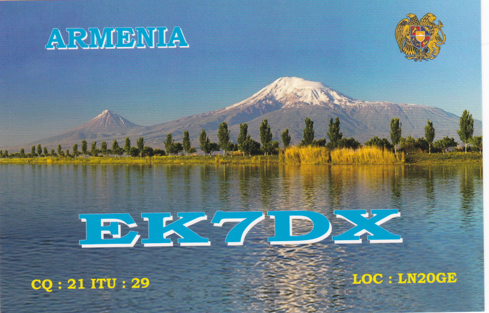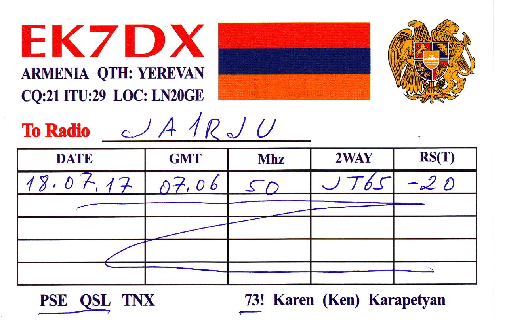
<P>
<B>今年はFT8でQRVしているアルメニアのEK7DX(昨年・JT65aでQSO)</B></BR>
<HR SIZE="3" WIDTH="550">
</CENTER>
<PRE>
<FONT COLOR="BLUE" SIZE=-1><B>Report from JA1RJU(PM95sq)</B></FONT>
<B>12.JuL.2018(15:00ｃ)</B>
<DIV ALIGN="CENTER">
<TABLE BORDER="0" WIDTH="600" ALIGN="CENTER">
<TR ALIGN="LEFT">
<TD>
◎<B>今朝は昨日と打って変わってJA1からの北米大陸方面は静かだった。
JA1からFT8(50.313MHz)でパイルアップしていたのはNH6Y. KH6/K6MIO. KH6Uの3局のハワイの局。ロケーションの良いJA1やJA2/3/4などの局はメキシコのXE2CQ. XE1TD. XE1H. XE1HGなどとQSOしていた。
北側に高層ビルの障害物の多い当地では残念ながらデコードしなかった。
昨日同様、昼頃からクエートから9K2YMが早々と入感、2時間以上、JAのパイルアップを受けていた。昨日の9K2NO同様、9M2MUがCWにトライしてくれたが、信号は弱くJAとQSO出来たかは確認出来なかった。
9K2YMの入感が一段落した後、ハンガリーのHA8CEなどEUが入感し始めた14:20JST頃から、コソボ(Kosobo)のZ68Mが西日本側からオープンしはじめ、コンションは徐々に全国的に広がった。FT8の周波数はこの"NEW・エンティティ"をコールする局で、昨日の”EK7DX”同様のパイルアップとなった。
Z68Mを呼んでいるJAの信号がヨーロッパを"刺激”したのか、今日のヨーロッパ方面の入感エリアは、北はフィンランド(OH)から南は地中海沿岸(I.SV.SV9.EA6.CT)から、カナリア諸島のEA8DBMまで広範囲にリポートされていた。
　パイルを受けていたコソボは16:40JST頃に突然聞こえなくなったが、ヨーロッパはその後も強力に入感、20:00JST現在も地中海沿岸のイタリアや中央ヨーロッパのセルビア(YU7FF)付近をコールするJA'sで賑いが続いた。
</B>
</TD>
</TR>
</TABLE>
</DIV>
     <B>○(FT8=> 本日のNA方面の入感局=22:00z-00:40z)
      -------------------------------------------------------------  
      XE2CQ.XE2AT.XE1H.XE1TD.XE1HG.NH6Y.KL7HBK.NA6LKH6/K6MIO.KH6U.
      -------------------------------------------------------------
      -------------------------------------------------------------
     ○(FT8=> 本日のSouth East ASIA & EU方面の入感局=01:00z-14:00z)
      -------------------------------------------------------------
      9K2YM        03:00:30-   50.313-1297      WSJT      FT8     -24dB CQ(LL48)
      9K2YM        03:01:00-   50.313-1297      WSJT      FT8     -10dB QSO with JA1/2/3/5/7/8/9
        ↓
      HA8CE        05:22:00-   50.313-****      WSJT      FT8     -18dB QSO with JA3
      SV1AHX       05:22:00-   50.313-****      WSJT      FT8     -18dB QSO with JA3
      Z68M         05:22:30-   50.313-1634      WSJT      FT8     -16dB into JA4/5/6
      I6WJB        05:22:30-   50.313-****      WSJT      FT8     -11dB QSO with JA3
      Z68M         05:23:30-   50.313-1634      WSJT      FT8     -14dB QSO with JA4/5/6
      HA8CE        05:23:30-   50.313-****      WSJT      FT8     -18dB QSO with JA1/5
      I6WJB        05:24:00-   50.313-****      WSJT      FT8     -11dB QSO with JA3/0
      Z68M         05:24:00-   50.313-1634      WSJT      FT8     -15dB QSO with JA4/5/6
      LZ1ZP        05:25:00-   50.313-****      WSJT      FT8     -17dB QSO with JA3
      HA5JI        05:25:00-   50.313-****      WSJT      FT8     -14dB QSO with JA3
      IS0AWZ       05:25:00-   50.313-****      WSJT      FT8     -14dB QSO with JA6
      HA2NP        05:25:00-   50.313-****      WSJT      FT8     -14dB QSO with JA3
      SV2DCD       05:25:00-   50.313-****      WSJT      FT8     -14dB QSO with JA6
      Z86M         05:25:00-   50.313-1634      WSJT      FT8     -14dB QSO with JA5
      US5WE        05:25:00-   50.313-****      WSJT      FT8           QSO with JA3
      Z86M         05:23:30-   50.313-1634      WSJT      FT8     -12dB QSO with JA2/5/6
       ↓  (LZ2PR.UT2XQ.9A8A.HA2NP.IZ4AIK.SV2DCD.etc)
      Z86M         05:28:30-   50.313-1634      WSJT      FT8     -20dB QSO with JA2
      SV9CVY       05:28:30-   50.313-****      WSJT      FT8     -20dB QSO with JA5
      Z86M         05:29:00-   50.313-1634      WSJT      FT8     -20dB into JA2/3/6
      I6IWB        05:30:00-   50.313-1809      WSJT      FT8     -04dB QSO with JA1    
      Z86M         05:30:00-   50.313-1634      WSJT      FT8     -21dB into JA6
       ↓  (HA5JI.SV9CVY.LZ2ZP.IZ4AIK.IK4WMA.UT2XQ.SV8RX.I4CIL.etc)
      Z86M         05:32:30-   50.313-1634      WSJT      FT8     -20dB into JA2
      Z86M         05:35:00-   50.313-1634      WSJT      FT8     -14dB into JA3
      Z86M         05:44:00-   50.313-1634      WSJT      FT8     -12dB QSO with JA4/5
       ↓  (S59A.SV9CVY.LZ5QD.LZ2PR.SV8RX.LZ2PR.IS0AWZ.SV1DH.US5WE.IK4DRY.UT5XR.US5WE) 
      Z86M         05:50:30-   50.313-1634      WSJT      FT8     -05dB into JA1
      Z86M         05:58:00-   50.313-1634      WSJT      FT8     -11dB QSO with JA1
       ↓  (SV9CVY.IS0AWZ.S59A.HA2NP.OE4VIE.HA5JI.US5WE.IK4ISR.9A8A.IZ5EKV.OE4VIE)
      Z86M         06:09:00-   50.313-1870      WSJT      FT8     -09dB/-01dB(QSO)
       ↓  (IK4MGP.S59A.SV9CVY.OE4VIE.SV2DOD.S57TW.LZ2WO.OK2BRD)
      Z86M         06:43:00-   50.313-1870      WSJT      FT8     -08dB QSO with JA1
       ↓  (OK2BRD.YO3DDZ.OE1WEU.IZ5EME.9A7Y.I4ZQS.I4ZOS.I4GUS.IK5YJY)
      Z86M         07:06:00-   50.313-1871      WSJT      FT8     -05dB QSO with JA1
       ↓  (I4EAT.9A5CW.9A7Y.S55DX.S57RR.IK5ACD.KG6DX.SV9CVY.IV3HAX.I4AVG)
      UN8GC        07:25:00-   50.313-1245      WSJT      FT8     -13dB CQ(MN83)
      EA8YV        07:35:00-   50.313-****      WSJT      FT8     -15dB WQSO with JA6
      IT9RZR       07:37:00-   50.313-****      WSJT      FT8     -05dB into JA3
      OE4WEU       07:37:00-   50.313-****      WSJT      FT8     -13dB QSO with JA4
      Z86M         07:38:30-   50.313-1871      WSJT      FT8     -11dB into JA2
      EA8YV        07:40:00-   50.313-****      WSJT      FT8     -10dB QSO with JA6
       ↓  (9A7Y.I4EUM.HA0DU.UX0FF.S59SV.DU7/PA0HIP.OE1WEU.I6FLD.IW4AOT.9K2MU
            OE4VIE.IV3HAX.IT9RZR.I4ZQS.IK5ACO.IK5PWJ)
      IK4ISR       07:51:00-   50.313-1185      WSJT      FT8     -16dB CQ(JN54)
      9K2MU        07:51:00-   50.313-2128      WSJT      FT8     -17dB CQ OC (LL49)
       ↓  (S59SV.SV1AHX.I4MKN.YT1Q.HA5VZ.DU6GG.S58N.EA8DBM.S59DX.S58N.OE1WEU)
      OH7RJ        08:14:30-   50.313-1825      WSJT      FT8     -03dB/-08dB(QSO)
       ↓  (EA8DBM.OH3SR.9K2MJ.OH6DX.HA5VZ.OM3EY.CT1IUA.EA7HG.HA1RB.EA6VQ.OH7KNM
            OH7PI.OH7KM)
      OH3XA        08:51:00-   50.313-2337      WSJT      FT8     -09dB QSO with JA1
      OE1WEU       09:03:30-   50.313-1752      WSJT      FT8     -11dB QSO with JA3
      HA0DU        09:06:00-   50.313-2047      WSJT      FT8     -16dB QSO with JA2
      HA8CE        09:10:00-   50.313-1543      WSJT      FT8     -14dB CQ DX(KN06)
      9A7V         09:12:00-   50.313-2186      WSJT      FT8     -14dB QSO with JA9
      HA1RB        09:13:00-   50.313-1738      WSJT      FT8     -15dB QSO with JA4
      UR7DWW       09:16:30-   50.313-1209      WSJT      FT8     -15dB QSO with JA4
      IK5DNF       09:19:00-   50.313-450       WSJT      FT8     -08dB QSO with JA5
      YU7FF        09:35:30-   50.313-597       WSJT      FT8     -10dB CQ DX(KN04)
       ↓  (CT1HZE.VK8MS.IK3XJP.UR7DWW.OE3EY.EA7HG.HA0DU.IK0FTA.I6NO.I4GUS.HA7TM)
      9A5CW        09:51:30-   50.313-459       WSJT      FT8     -16dB CQ DX(JN65)
       ↓
      I4EAT        10:18:30-   50.313-1431      WSJT      FT8     -10dB CQ AS(JN54)
       ↓  (OE4VIE.IK5ACO.I5KG.R0CM.YL2NX.IK2TDM.YU7FF.I6WJB.HA2NP.E76C.I0JBL)
</B>
<FONT COLOR="BLUE" SIZE=-1><B>Report from JA1RJU(PM95sq)</B></FONT>
<B>11.JuL.2018(15:00c)</B>
<DIV ALIGN="CENTER">
<TABLE BORDER="0" WIDTH="600" ALIGN="CENTER">
<TR ALIGN="LEFT">
<TD>
◎<B>早朝からFT8(50.313MHz)で北米が午後まで長時間に渡りオープン。
入感エリアは複数のXE2(メキシコ)を含め米大陸の中央部(カンサス州、オクラホマ州)にかけての広い範囲。同じメキシコの局でもXE2CQ(GL=DM12)のW6(カリフォルニア)の国境に近い場所から、XE2HWB(DL44)のカリフォルニア半島の先端付近、XE2OR(DL98)のテキサス州の国境に近い場所などとそれぞれ離れているため、同じXE2でも入感のは時間差がある。
昨日同様太平洋沿岸エリアからテキサス州などへのコンディションは良く、11:11JSTにはUN8GCのCQが北米と同時に聞こえて来た。
北米の入感が午後まで続いている最中、クエートの9K2YMも強力に入感し始め、続いて9K2GS、9K2NOなども同時にQRVを始めた。
9K2NOは14:17JSTから一時FT8(50.313MHz)での運用から、50.090/99MHz(受信=UP1)のCWにQSY、CWの信号も良く聞こえていた。
9K2'sがJAのパイルアップしている最中でも、相変わらず台湾や韓国をコールしているW6/7やXE'sが相変わらず強力で、14:00過ぎまで入感していた。午後は北米、中近東の東西からのDXが同時に聞こえる賑わいとなった。加えて13:30JST頃からアルメニアのEK7DXが入感してJA'sのパイルアップと成っていた。
EK7DXは強力で、最近まで短時間の運用でQRTするため、QSOのチャンスに恵まれなかったこの”珍局”は長時間運用してくれ、17:40JST現在も+00dB前後で入感している。今日のEU方面は、ウクライナから北部のルーマニア(YO)、フィンランド(OH)付近の中・北部のエリアの入感で、何時も強力に入感して来る地中海沿岸のエリアは、18:00JST現在JA1では確認されていない。
9K2NOとEK7DXにパイルアップするJA’sは18:10JST頃まで続いていたが、EK7DXは急激にフェードアウトしてしまった。
　とにかく、今日のコンディションは、早朝の北米から、日中の中近東、夕方のヨーロッパまで連続的に12時間以上もDXが途切れなく入感して”6mとは思えない”ほどのFBなオープンだった。　　(入感局のリスト掲載は後ほど)
</B>
</TD>
</TR>
</TABLE>
</DIV>
<FONT COLOR="BLUE" SIZE=-1><B>Report from JA1RJU(PM95sq)</B></FONT>
<B>10.JuL.2018(15:00b)</B>

     <B>○(FT8=> 本日のNA方面の入感局=23:00z-01:20z)
      -------------------------------------------------------------  
      W3XS(OR).KE6KJD.KB8VAO.KB7MU.WA7JAY.K8ZR.W7YAQ.N8OC.K8ROX
      KB7ME.K6UM.KF8MY.K8JA.K7YCH.N7BAV.N7QT.WA6OSX.N7BT.W7IV.K8CX
      K9YC(CA).K7BTW.K7ZO.N7CNH.KF6A.W7JW.KI7SOX.K7CW.W6GJB.NE8Z
      W7VS.K7RWT.N6NR.WB8CQV.K8SIX.K7ND.W7FI.K6UM.KK2I(NY).N8JX
      W3SZ(PA).W8ATE.K3WC(PA).K8FL.N8OC.K8NWD.K8ROK.KA8SYV.AG0N(NE)
      N8RR.W7OUU.W8ATE.K9KHW(WI).K9SQU.N3RC(CA).KG7V.KD7GX.K7MAC
      W7BA.K7GS.W7MEM.N0FW.KE7UIU.KI8JP.K7PI.etc....

      ○(FT8=>CANADA=23:00z-01:20z)
      -------------------------------------------------------------
      VA3ZV.VA7KO.VE4AMU.VE7SL.VE7JDZ.VE7DAY.VE3NH.VE3DS.VE3FN
      VE7FW.VA7FC.
      ------------------------------------------------------------- </B>

<FONT COLOR="BLUE" SIZE=-1><B>Report from JA1RJU(PM95sq)</B></FONT>
<B>09.JuL.2018(15:00b)</B>
<DIV ALIGN="CENTER">
<TABLE BORDER="0" WIDTH="600" ALIGN="CENTER">
<TR ALIGN="LEFT">
<TD>
◎<B>今日も早朝からFT8(50.313MHz)で北米が強力にオープン。入感エリアは昨日の西海岸沿いよりも少し内陸部寄りのW8/9からW5の南部地域が中心。01:30z頃にアラスカのKL7HBKの入感で一段落。北米側は日曜日で多くの局がQRVしていたが、平日の朝のJA側も負けないほど多くの局がQRVして、休日並みの賑わいだった。
北米がフェードアウトした後、アジア大陸の東部沿岸が引き続き入感している中、早くも11:20JST頃にはキルギスのEX8MLTが、13:00JST前にはカザフスタンのUN6Tが入感してきた。近場のDXではフィリピンのDU1/JA3FJEやベトナムの3W3Bが14:40JST頃までオープンしていた。ヨーロッパ方面の入感が期待される中、FT8(50.313MHz)で入感してきたのは、UK9AA、TA9Jなどで15:00JST頃からイタリアが入感し初めた。
昨日入感していたアゼルバイジャン(Azerbaijan)の4K6/DL7ZMの入感は無かったが、Z32ZMにより運用されたZ68M(Kosobo)がFT8とCW(50.089)でQRVして、JAからもFT8/CWの信号が確認されたがQSOの詳細は今のところ不明。
</B>
</TD>
</TR>
</TABLE>
</DIV>
     <B>○(FT8=> 本日のNA方面の入感局=00:00z-01:40z)
      -------------------------------------------------------------  
      AC0RA(IA).WS9V.NA9RB.WZ9B.WB2FKO(NM).W5ADD.K0TPP.KA9CFD.WA5ZFP
      N5JEH.WB2FKO(NM).KN5O.NA9RB.K8OM(IO).W4UDH(MS).AA5PR.WS9V(IL)
      K0TPP(MO).AI5I.N5OMG.K9ZM.AA5AM.K4SV.AD5A.NK7Z.KY7M.K1JD(NM)
      W3UUM.W3RI(AZ).KB7IJ.AB4IQ(KY).N5DG.N5RK.KL7HBK.
      -------------------------------------------------------------
      ○(FT8=> 本日のSouth East ASIA & EU方面の入感局=05:32z-14:00z)
      -------------------------------------------------------------
      EX8MLT.EX8MLE.UN6T.UN8GC.UK9AA.TA9J.IK4ISR.S57RR.F1GTU.I4CIL
      I4EAT.IK4DRY.9H1TX.F5LNU.F6BKI.F6FRR.IS0AWZ.IS2GSO.YO3DDZ.
      S50A.YO6FPW.S57TW.IT9IQQ.SP3DDI.I4ZQS.IT9RZR.SP4MPB.9A7Y
      IT9TYR.I4JED.SM7CAD.5B4AGN.UK8FF.IK5YJY.IJ5TGG.IZ4AIK.LA7JO
      UN6TA.SV5DKL.LK0OPS.IK0FTA.SV8DTD.
      Z68M(CW=50.082MHz=07:20z).

      ○3W3B.DU7/PA0HIP.DU1/JA3FJE.TA9J.VK8MS.VK8AW.KG6DX.4F3OM
      ------------------------------------------------------------- </B>

<FONT COLOR="BLUE" SIZE=-1><B>Report from JA1RJU(PM95sq)</B></FONT>
<B>08.JuL.2018(15:00b)</B>
<DIV ALIGN="CENTER">
<TABLE BORDER="0" WIDTH="600" ALIGN="CENTER">
<TR ALIGN="LEFT">
<TD>
◎<B>早朝からFT8(50.313MHz)の北米の入感で賑わっていた。オープンしていたのは北米西海岸沿いのW5/6/7から北部メキシコのXE2ORなど太平洋側のエリア。N2NS(CA)、K9YC(CA)やW3XO(TX)など、中・東部のエリアのコールサインでそのままQRVしている局が多いので、QTHの確認に注意。北米がフェードアウトする前の12:30JST頃からEX8MLEやUN8GCなど入感が始まり、昨日同様のヨーロッパ方面の入感が期待されたが、FT8(50.313MHz)では、中近東の9K2YMが入感、昨日入感していたアゼルバイジャン(Azerbaijan)の4K6/DL7ZMがFT8とCW(50.091/95)でQRVしてQSOできている。カスピ海周辺のアジアの"珍局"のアクティブなQRVを期待したい。
</B>
</TD>
</TR>
</TABLE>
</DIV>
       WB2FKO       23:42:30-   50.313-****      WSJT      FT8     -07dB QSO with JA1/2
       XE2OR        23:42:30-   50.313-****      WSJT      FT8     -10dB QSO with JA1
         ↓
       N6WS         23:48:30-   50.313-2447      WSJT      FT8     -17dB QSO with JA1
       K6SRZ        23:50:30-   50.313-718       WSJT      FT8     -15dB QSO with JA1
       K5XI         23:51:30-   50.313-436       WSJT      FT8     -13dB CQ(CM97)
       N6WS         23:56:00-   50.313-2447      WSJT      FT8     -19dB CQ(CM95)
       ---------------------------------------------------------------------------
       WO7R         00:18:00-   50.313-1444      WSJT      FT8     -12dB CQ(DM32)
       W6SR         00:19:00-   50.313-755       WSJT      FT8     -16dB CQ(CM98)
         ↓
       EX8MLE       02:32:00-   50.313-1250      WSJT      FT8     -18dB CQ(MN72)
       KB7ME        02:32:00-   50.313-****      WSJT      FT8     -19dB QSO with JA1
       EX8MLE       02:37:30-   50.313-****      WSJT      FT8     -08dB QSO with JA1
         ↓
       UN8GC        02:58:30-   50.313-****      WSJT      FT8     -12dB CQ(MN83)
         ↓
       9K2YM        03:14:30-   50.313-204       WSJT      FT8     -05dB CQ(LL48)
         ↓

     <B>○(FT8=> 本日のNA方面の入感局=00:00z-03:00z)
      -------------------------------------------------------------  
      WB2FKO(NM).N5JEH.W6PQL.N2NS(CA).K5XI.K9YC(CA).N6WS.AF6RT.AI5I
      W6OAT.K6SRZ.KG7CW(ID).K6IJ.WO7R.K5RK.N5LZ.N5DG.WA7U.KB7Q.W6SR
      N3RC(CA).KU7Z.KY7M.W1SRD(CA).W3UUM(TX).K7XC.WA6LIE.KV7K.W7EW
      WB8VLC(OR).K7RWT.KB7ME.W6AER.W6MW.KH6U.
      XE2OR.      
      -------------------------------------------------------------
      ○(FT8=> 本日のSouth East ASIA & EU方面の入感局=05:32z-12:00z)
      -------------------------------------------------------------
      EX8MLE.EX8MLT.UN8GC.UN7TK.9K2YM.UK9AA.UN6TA.UK8FF.4K6/DL7ZM.
      4K6/DL7ZM(CW=50.091/095).AP2AM.VU2DED.
      ------------------------------------------------------------- </B>

<FONT COLOR="BLUE" SIZE=-1><B>Report from JA1RJU(PM95sq)</B></FONT>
<B>07.JuL.2018(15:00c)</B>
<DIV ALIGN="CENTER">
<TABLE BORDER="0" WIDTH="600" ALIGN="CENTER">
<TR ALIGN="LEFT">
<TD>
◎<B>今年のEsシーズンの週末のDXコンデションは”恵まれない”状態が続いていたが、今日は珍しく早朝の北米から午後のヨーロッパまで、FT8(50.313MHz)は長時間のオープンで賑わっていた。特にヨーロッパ方面はカスピ海、黒海周辺のアジア・エリアから中部ヨーロッパ、地中海沿岸が強力に入感していた。珍しい局では、アゼルバイジャン(Azerbaijan)の4K6/DL7ZMが、2009年7月3日にQSOした4J9M以来の入感で、全国からパイルアップとなっていた。また”ヨーロッピアン・ロシア”として注目されている、UB7KやR6KAが強力に入感、こちらも多くの局のターゲットとなっていた。明日は国内コンテスト、FT8の周波数はQRMを覚悟！。
</B>
</TD>
</TR>
</TABLE>
</DIV>
     <B>○(FT8=> 本日のNA方面の入感局=00:00z-03:30z)
      -------------------------------------------------------------  
      N5DG.AA5C.KH6U.N2NS(CA).W7EW.AA5C.K5NZ.K9YC(CA).KG7CW.KQ5U
      K5NA.W3XO(TX).N6CA.K5RK.WO7R.N6SS.N5WS.N6RZR.N6ZN.W7BA.K6UM
      KR7O.
      -------------------------------------------------------------

      ○(FT8=> 本日のSouth East ASIA & EU方面の入感局=05:32z-15:00z)
      -------------------------------------------------------------
      4K6/DL7ZM(05:29z-).IK5MEJ.IK3WMA.IZ5EKV.IW5DHN.YO3DDZ.SP3RBG
      IK5YJY.IK4ISR.LZ1ZP.DL8GP.LZ2NW.IK4CIE.S57RR.US0ZZ.S57TW
      IK4DRY.I4CIL.I4EAT.OE6BMG.SV8CS.R6KA(06:27z-).I3VJW.EX8MLT
      A92GE.UK8FF.UT7QF.UW1HM.IK1EGC.SV1AHK.UR7DWW.S59Z.OE2LCM
      UT4XU.US5WE.UT5UGR.SV8DOU.OE3EMC.HA5VZ.OE6MDF.9A8A.HA8CE
      S51DI.9K2HM.DK1MAX.IZ2RLO.UX2KA.UT7UJ.UB7K.HA8FK.SP5EWY
      EA6VQ.TA1BM.F5BZB.SP3DOI.IS0AWZ.9H1TX.UN7TK.F4FQY.A92AA
      UK9AA.SV1JSM.I4TDK.EX8MLE.UN8GC.SV9CVY
      ------------------------------------------------------------- </B>

<FONT COLOR="BLUE" SIZE=-1><B>Report from JA1RJU(PM95sq)</B></FONT>
<B>06.JuL.2018(15:00d)</B>
       NH6T         00:07:00-   50.313-2356      WSJT      FT8     -05dB QSO with JA1/2/3/4/5
       NH6T         00:13:00-   50.313-2356      WSJT      FT8     -09dB QSO with JA1/5
         ↓
       K6MIO        00:13:15-   50.313-****      WSJT      FT8     -09dB QSO with JA2/5 
         ↓
       NH6T         00:15:45-   50.313-2356      WSJT      FT8     -13dB/-04dB (QSO)
       NH6T         00:20:15-   50.313-2356      WSJT      FT8     -11dB QSO with BA4SI
         ↓
       NH6T         00:24:15-   50.313-2357      WSJT      FT8     -13dB QSO with JA3/4/6
       K6MIO        00:24:15-   50.313-****      WSJT      FT8     -14dB QSO with JA3
       NH6T         00:31:15-   50.313-2357      WSJT      FT8     -14dB CQ(BL10)
         ↓
       NH6T         00:59:00-   50.313-2356      WSJT      FT8     -07dB QSO with JA4
       BM6GJL       01:04:45-   50.313-****      WSJT      FT8     -12dB QSO with JA3/4
         ↓
       VR2VAZ       03:38:00-   50.313-1071      WSJT      FT8     -16dB CQ(OL72)
         ↓
       EX8MLE       03:53:00-   50.313-****      WSJT      FT8     -06dB QSO with JA3
         ↓
       UN8GC        04:02:00-   50.313-1243      WSJT      FT8     -13dB CQ(MN83)
       EX8MLT       04:02:00-   50.313-1535      WSJT      FT8     -15dB CQ(MN72)
       A92GE        04:02:30-   50.313-****      WSJT      FT8     -11dB into JA1/7/8/9
       UN8GC        04:05:30-   50.313-1465      WSJT      FT8     -08dB QSO with JA1/3/5
       EX8MLE       04:07:30-   50.313-1535      WSJT      FT8     -15dB QSO with JA1
         ↓
       UN8GC        04:15:00-   50.313-1466      WSJT      FT8     -08dB CQ(MN83)
         ↓
       BG6BB        04:40:00-   50.313-1213      WSJT      FT8     -13dB QSO with JA1
         ↓
       UN8GC        04:55:30-   50.313-1466      WSJT      FT8     -08dB QSO with JA2/7 & CQ(MN83) 
         ↓
       UK9AA        05:47:00-   50.313-****      WSJT      FT8     -15dB QSO with JA7 
       UN8GC        06:00:00-   50.313-1525      WSJT      FT8     -09dB CQ(MN83)
         ↓
       9K2HN        06:05:30-   50.313-****      WSJT      FT8     -21dB into JA7
         ↓
       SV3DCX       06:07:45-   50.313-****      WSJT      FT8     -16dB QSO with DS5USH
       UN8GC        06:08:00-   50.313-1528      WSJT      FT8     -11dB CQ(MN83)
       SV3DCX       06:10:30-   50.313-1553      WSJT      FT8     -07dB QSO with JA0
       SV9CVY       06:13:00-   50.313-****      WSJT      FT8     -20dB into JA7
       9H1AE        06:13:45-   50.313-****      WSJT      FT8     -22dB QSO with DS5USH
       SV3DCX       06:14:00-   50.313-****      WSJT      FT8     -07dB QSO with JA1
       EA3LL        06:16:30-   50.313-****      WSJT      FT8     -07dB into JA0
         ↓
       SV9CVY       06:21:00-   50.313-2155      WSJT      FT8     -16dB CQ AS (KM25)
       LY2IJ        06:20:45-   50.313-****      WSJT      FT8     -12dB into JA3
       UN8GC        06:23:30-   50.313-1468      WSJT      FT8     -16dB CQ(MN83)
       9H1AE        06:27:30-   50.313-****      WSJT      FT8     -16dB QSO with JA3
       UT2XQ        06:32:30-   50.313-****      WSJT      FT8     -16dB into JA3
       UT7UJ        06:32:45-   50.313-****      WSJT      FT8     -14dB QSO with JA3
       US0LW        06:42:30-   50.313-****      WSJT      FT8     -17dB QSO with JA1
       UT7QF        06:49:30-   50.313-****      WSJT      FT8     -15dB QSO with JA2
         ↓
       UT7QF        06:54:30-   50.313-1608      WSJT      FT8     -18dB CQ AS(KN77)
       UT7QF        07:03:30-   50.313-1608      WSJT      FT8     -13dB QSO with JA1/2/9/0/JS6
         ↓
       SP4MPB       07:17:00-   50.313-1992      WSJT      FT8     -12dB into JA1/2/3/4/5/0
         ↓
       SP4MPB       07:29:30-   50.313-1992      WSJT      FT8     -12dB QSO with JA1/2/3/4/5/0
       IT9RZR       07:29:30-   50.313-****      WSJT      FT8     -09dB QSO into JA1/2/3/9/0
         ↓
       SP4MPB       07:36:00-   50.313-1992      WSJT      FT8     -10dB QSO with JA1
       LY2IJ        07:36:00-   50.313-****      WSJT      FT8     -07dB QSO with JA3
       SP4MPB       07:41:30-   50.313-1992      WSJT      FT8     -13dB QSO with JA9
       ON4GG        07:52:00-   50.313-****      WSJT      FT8     -22dB QSO with JA3
       SV5/SV1LK    07:55:30-   50.313-****      WSJT      FT8     -18dB QSO with JA1
       SV8CS        07:59:00-   50.313-****      WSJT      FT8     -13dB QSO with JA2
       UT5UGR       08:00:00-   50.313-****      WSJT      FT8     -15dB QSO with JA1/0
       DK1MAX       08:05:00-   50.313-****      WSJT      FT8     -17dB QSO with JA2
       SP4MPB       08:07:30-   50.313-1992      WSJT      FT8     -04dB QSO with JA3
       KG6DX        08:10:30-   50.313-2272      WSJT      FT8     -10dB QSO with SV9CVY
        ↓
       SV1NZX       10:29:00-   50.313-****      WSJT      FT8           QSO with JA4/5
       9H1AE        10:31:00-   50.313-****      WSJT      FT8     -19dB QSO with JA3
       SV8RX        10:33:00-   50.313-****      WSJT      FT8           QSO with JA2
       SV2DCD       10:35:30-   50.313-****      WSJT      FT8     -14dB QSO with JA9
       SV9CVY       10:40:00-   50.313-2101      WSJT      FT8     -12dB CQ(KM25) & QSO with JA2
       SV1JSM       10:46:00-   50.313-****      WSJT      FT8     -08dB QSO with JA5
       SV1DH        10:46:00-   50.313-****      WSJT      FT8           QSO with JA2
       SV9CVY       10:51:30-   50.313-2102      WSJT      FT8     -14dB CQ(KM25)
       SV9CVY       11:04:30-   50.313-2102      WSJT      FT8     -15dB QSO with JA0

<FONT COLOR="BLUE" SIZE=-1><B>Report from JA1RJU(PM95sq)</B></FONT>
<B>05.JuL.2018(15:00c)</B>
<DIV ALIGN="CENTER">
<TABLE BORDER="0" WIDTH="600" ALIGN="CENTER">
<TR ALIGN="LEFT">
<TD>
◎<B>昨日、日本海上を通過した台風7号の影響で強風が吹き荒れていた関東地方も、今日は風もかなり治まった。
6mは、早朝にFT8(50.313MHz)で北米、ハワイの短時間の入感がリポートされていたが、コンデションはひと頃に比べ大幅に落ち込んでしまった。アジア大陸方面はお昼前後にVU2NKSなど短い入感があったが、こちらも長続きしないオープンで終わった。EU方面狙いでCQを出しているフィリピンのDU7/PA0HIPの信号が強力に入感していたが、JAの相手をしてくれたのは僅かな時間だけ。
EU方面のコンディションはフルクランクアップのアンテナでも関係なく夕方まで”静か”。
</B>
</TD>
</TR>
</TABLE>
</DIV>
       K5RK         23:49:00-   50.313-****      WSJT      FT8     -09dB into JA1/2/7
       BU2BV        23:50:30-   50.313-1672      WSJT      FT8     -16dB CQ(PL05)
       BU2BV        23:54:45-   50.313-1672      WSJT      FT8     +00dB CQ
       BM6GJL       23:55:45-   50.313-1199      WSJT      FT8     -12dB CQ(PL02)
       --------------------------------------------------------------------------
       KH7Z         00:00:00-   50.323-****      WSJT      FT8           into JA1
       EX8MLT       02:23:00-   50.313-****      WSJT      FT8           into JA2
       UN8GC        02:30:00-   50.313-****      WSJT      FT8     -13dB into JA2
       EX9QT        02:43:00-   50.313-****      WSJT      FT8     -17dB into JA1
         ↓
       VU2NKS       03:26:30-   50.313-1321      WSJT      FT8     -13dB CQ(MK69)
         ↓
       VU2NKS       03:31:00-   50.313-1324      WSJT      FT8     -20dB CQ(MK69)
       VU2NKS       04:21:00-   50.313-1324      WSJT      FT8     -18dB into JA2
         ↓
       DK2EGD       04:33:00-   50.313-****      WSJT      FT8           into JA0
       DU7/PA0HIP   05:27:45-   50.313-2052      WSJT      FT8     -11dB CQ(PK10)
         ↓
       DU7/PA0HIP   05:39:45-   50.313-2053      WSJT      FT8     +03dB CQ(PK10)
       DU7/PA0HIP   05:40:45-   50.313-2053      WSJT      FT8     -03dB QSO with JA1
       DU7/PA0HIP   05:42:15-   50.313-2054      WSJT      FT8     -03dB CQ(PK10)
         ↓
       DU7/PA0HIP   05:59:45-   50.313-2059      WSJT      FT8     -06dB CQ(PK10)
         ↓
       DU7/PA0HIP   06:02:15-   50.313-2058      WSJT      FT8     -12dB QSO with SP4MPB
         ↓
       DU7/PA0HIP   06:20:45-   50.313-2056      WSJT      FT8     +04dB CQ(PK10) & QSO with JA0
       DU7/PA0HIP   07:32:15-   50.313-2059      WSJT      FT8     -12dB CQ

<FONT COLOR="BLUE" SIZE=-1><B>Report from JA1RJU(PM95sq)</B></FONT>
<B>04.JuL.2018(15:00c)</B>
<DIV ALIGN="CENTER">
<TABLE BORDER="0" WIDTH="600" ALIGN="CENTER">
<TR ALIGN="LEFT">
<TD>
◎<B>沖縄、奄美諸島を通過して五島列島から九州北部を通過、日本海上を北上中の台風7号の影響で、強風圏に入っていた関東地方は午前中から一日中強風が吹き荒れた。台風は夕方には日本海上で温帯低気圧になったが、都心部では30度を超える10日連続の真夏日となった。
今日の6mはアンテナをクランクダウンしたままのリポートとなったが、FT8(50.313MHz)では近場の韓国、中国などの他に入感が確認出来たのは、中近東の9K2GSだけだった。EU方面のコンディションはアンテナの高さには関係なく夕方になっても入感する気配は無かった。
</B>
</TD>
</TR>
</TABLE>
</DIV>
       BG8NBG       01:33:45-   50.313-1456      WSJT      FT8     -14dB CQ(OL36)
       DS2FCB       01:43:30-   50.313-****      WSJT      FT8     -18dB QSO with JA1
       VR2ZLK       02:58:15-   50.313-1833      WSJT      FT8     -10dB CQ(OL62)
       DS2GWM       04:52:15-   50.313-1722      WSJT      FT8     -09dB QSO with JA9
       DS2GWM       04:58:45-   50.313-1727      WSJT      FT8     -07dB CQ(PM37)
       9K2GS        05:19:00-   50.313-968       WSJT      FT8     -10dB QSO with JA1/0
       9K2GS        05:23:30-   50.313-968       WSJT      FT8     -21dB CQ(LL39)
         ↓
       DS3CHK       05:30:15-   50.313-876       WSJT      FT8     -05dB QSO with JA1
       9K2GS        05:53:30-   50.313-968       WSJT      FT8     -18dB QSO wiyj JA1
         ↓
       BH4IGO       07:11:45-   50.313-1118      WSJT      FT8     +02dB CQ(OM86)
         ↓

<FONT COLOR="BLUE" SIZE=-1><B>Report from JA1RJU(PM95sq)</B></FONT>
<B>03.JuL.2018(15:00c)</B>

       DU1/JA3FJE   02:54:15-   50.313-****      WSJT      FT8           into JA6
       VR2ZLK       03:16:00-   50.313-1925      WSJT      FT8     -12dB CQ(OL62)
         ↓
       VR2ZLK       03:55:15-   50.313-1830      WSJT      FT8     -13dB CQ(OL62)
       EX8MLE       04:17:00-   50.313-1464      WSJT      FT8     -12dB CQ(MN72)
         ↓
       SV2DCD       05:07:30-   50.313-****      WSJT      FT8     -15dB QSO with BM6CJL         ↓
       EX8MLE       05:12:30-   50.313-****      WSJT      FT8           into JA2
       UK9AA        05:13:00-   50.313-2018      WSJT      FT8     -16dB QSO with BV3UF
       UK9AA        05:15:00-   50.313-2018      WSJT      FT8     -16dB CQ(MN41)
       UN6T         05:16:00-   50.313-1836      WSJT      FT8     -13dB CQ(MN52)
       UN6T         05:21:30-   50.313-1836      WSJT      FT8     -16dB QSO with JA1
       SV1EDU       05:26:30-   50.313-****      WSJT      FT8     -12dB QSO with BV3UF
       SV8RX        05:27:30-   50.313-****      WSJT      FT8     +02dB QSO with BV3UF
       EX8MLE       05:33:30-   50.313-1307      WSJT      FT8     -17dB CQ(MN72)
       SV8RX        05:35:30-   50.313-****      WSJT      FT8     -15dB QSO with JA2
       SV1DH        05:36:30-   50.313-****      WSJT      FT8     -14dB QSO with JA9
       SV1DH        05:45:00-   50.313-****      WSJT      FT8     -12dB QSO with JA1
       9K2GS        06:06:00-   50.313-1796      WSJT      FT8     -12dB CQ PC
       UB5YHU       06:07:00-   50.313-****      WSJT      FT8     -06dB into JA1(QM05)
       9K2GS        06:09:00-   50.313-****      WSJT      FT8     -12dB into JA1
         ↓
       9K2GS        06:14:30-   50.313-1115      WSJT      FT8     -15dB CQ PC
       VK4FNQ       06:14:30-   50.313-****      WSJT      FT8     -11dB into JA9
       9K2GS        06:23:30-   50.313-1088      WSJT      FT8     -16dB CQ PC (LL39)
       9K2GS        06:24:00-   50.313-1088      WSJT      FT8     -12dB QSO with JA6
       9K2GS        06:27:00-   50.313-1088      WSJT      FT8     -17dB QSO with JA1/0
       9K2GS        06:28:00-   50.313-1079      WSJT      FT8     -11dB CQ(LL39)
       9K2GS        06:29:00-   50.313-1077      WSJT      FT8     -11dB QSO with 9A6W
       9H1TX        06:33:15-   50.313-433       WSJT      FT8     -09dB QSO with JA2
       IT9RZR       06:34:30-   50.313-****      WSJT      FT8     -13dB QSO with JA2/9
         ↓
       9H1AE        07:02:30-   50.313-2505      WSJT      FT8     -10dB QSO with JA9/0
       9H1TX        07:02:30-   50.313-2505      WSJT      FT8     -10dB QSO with JA9
       IT9RZR       07:05:00-   50.313-1105      WSJT      FT8     -13dB CQ AS (JM76)
       IT9RZR       07:06:30-   50.313-1107      WSJT      FT8     -13dB QSO with US5UC
       9H1AE        07:07:30-   50.313-2504      WSJT      FT8     -09dB CQ AS (JM75)
       9H1AE        07:08:30-   50.313-2504      WSJT      FT8     -09dB QSO with UY3IC
       9H1AE        07:09:30-   50.313-2504      WSJT      FT8     -09dB QSO with JA1
       IT9RZR       07:10:30-   50.313-1282      WSJT      FT8     -08dB CQ AS (JM76)

      -------------------------------------------------------------
     <B>○(FT8=> 本日のASIA=中国.香港.台湾.韓国の局=00:00z-14:00z)
      -------------------------------------------------------------  
       BG6GJL.BD7TBP.BD8NBG.BA7NQ.BG6BB.BI4SDT.BD4RQ.BD4WN.BA4SI
       VR2ZLK.VR2XAV.VR2IL.BU2BV.BV3UF.6K2FDL.HL4CJG.
      ------------------------------------------------------------- </B>

<FONT COLOR="BLUE" SIZE=-1><B>Report from JA1RJU(PM95sq)</B></FONT>
<B>02.JuL.2018(15:00c)</B>
       NH6Y         23:47:00-   50.313-****      WSJT      FT8     -14dB QSO with JA1/2
       DS2FOB       23:59:30-   50.313-847       WSJT      FT8     -14dB CQ(PM37)
       --------------------------------------------------------------------------
       NH6Y         00:05:00-   50.313-****      WSJT      FT8           into JA1/7
       BH1RGL       00:12:30-   50.313-2126      WSJT      FT8     +04dB CQ(ON80)
       BH1RGL       00:15:30-   50.313-2126      WSJT      FT8     +01dB QSO with JA1
       VR2IL        00:20:30-   50.313-****      WSJT      FT8     +02dB QSO with BH1
       BD8TE        00:42:30-   50.313-1554      WSJT      FT8     +02dB CQ(OL15)
       BA5DX        01:23:45-   50.313-1086      WSJT      FT8     -10dB CQ(PM00)
       BG8UF        01:26:00-   50.313-1496      WSJT      FT8     -15dB CQ(OL14)
       VR2VAZ       01:29:45-   50.313-894       WSJT      FT8     -13dB CQ(OL72)
       VR2ZLK       01:35:30-   50.313-1829      WSJT      FT8     -13dB CQ(OL62)
       3W3B         02:13:15-   50.313-578       WSJT      FT8     -07dB CQ(OK46)
       3W3B         02:16:15-   50.313-578       WSJT      FT8     -08dB QSO with JA1/9
       DU1/JA3FJE   02:18:45-   50.313-1200      WSJT      FT8     -12dB DE DU1/
       BG6GJL       02:21:30-   50.313-1205      WSJT      FT8     +08dB QSO with 3W3B
       VR2VAZ       02:23:15-   50.313-888       WSJT      FT8     +05dB/+02dB(QSO)
       VR2XRW       02:37:30-   50.313-1497      WSJT      FT8     -09dB CQ(OL72)
       DU1/JA3FJE   02:41:45-   50.313-1200      WSJT      FT8     +12dB/+14dB(QSO)
       VR2XRW       02:55:00-   50.313-1673      WSJT      FT8     -09dB/-13dB(QSO)
       VR2ZLK       02:59:00-   50.313-1402      WSJT      FT8     -12dB/-04dB(QSO)
       VR2IL        03:02:00-   50.313-2274      WSJT      FT8     -15dB/-08dB(QSO)
       BI4SDT       03:05:00-   50.313-1244      WSJT      FT8     -12dB CQ(PM01)
       BI4SDT       03:11:00-   50.313-1245      WSJT      FT8     -04dB/-10dB(QSO)
       BG6GJL       03:15:15-   50.313-1206      WSJT      FT8     -17dB CQ(PL02)
       BG6GJL       03:19:15-   50.313-1206      WSJT      FT8     +02dB/-06dB(QSO)
       BG6GJL       03:50:15-   50.313-1203      WSJT      FT8     -20dB CQ EU (PL02)
       BD7TBP       04:05:45-   50.313-394       WSJT      FT8     -09dB QSO with JA1/2
       HL4CNR       05:02:30-   50.313-1483      WSJT      FT8     -20dB QSO with JA1
       BD8NBG       06:59:15-   50.313-1997      WSJT      FT8     -04dB CQ(OL36)
       BA4SI        07:35:45-   50.313-2117      WSJT      FT8     +05dB CQ(PM01) & QSO with KG6DX
       EX8MLE       07:49:00-   50.313-1243      WSJT      FT8     -17dB CQ(MN72)
         ↓
       EX8MLE       07:51:00-   50.313-1243      WSJT      FT8     -17dB QSO with KG6DX
       EX8MLE       08:06:30-   50.313-1243      WSJT      FT8     -17dB QSO with JA1/6
       EX8MLE       08:19:00-   50.313-1243      WSJT      FT8     -14dB CQ(MN72)
         ↓
       EX8MLE       08:34:30-   50.313-1240      WSJT      FT8     -03dB CQ(MN72)
         ↓
       EX8MLE       08:48:30-   50.313-1243      WSJT      FT8     -20dB CQ(MN72)
       9K2MU        08:56:30-   50.313-1243      WSJT      FT8     -19dB QSO with JA1
         ↓
       9K2MU        09:01:30-   50.313-1243      WSJT      FT8     -19dB into JA1
       VR2KW        09:16:15-   50.313-1545      WSJT      FT8     -20dB QSO with JA1
       VR2ZXP       09:38:45-   50.313-****      WSJT      FT8     -11dB QSO with JA1

<FONT COLOR="BLUE" SIZE=-1><B>Report from JA1RJU(PM95sq)</B></FONT>
<B>01.JuL.2018(15:00b)</B>
<DIV ALIGN="CENTER">
<TABLE BORDER="0" WIDTH="600" ALIGN="CENTER">
<TR ALIGN="LEFT">
<TD>
◎<B>今週も休日の6mのコンデションは恵まれず、早朝の近場の大陸方面がオープンしていただけで、ヨーロッパの入感は関東(PM95)では夕方まで確認できなかった。
</B>
</TD>
</TR>
</TABLE>
</DIV>
       BG6CJR       23:09:15-   50.313-470      WSJT      FT8     -18dB CQ(OM90)
       BU2BV        23:12:30-   50.313-1651     WSJT      FT8     -02dB CQ(PL05)
       BA4SI        23:32:15-   50.313-2410     WSJT      FT8     +07dB CQ NA(PM01)
       VR2VAZ       23:37:15-   50.313-1186     WSJT      FT8     -16dB QSO with JA1
       BA4SE        23:57:15-   50.313-457      WSJT      FT8     -11dB QSO with JA5
       -----------------------------------------------------------------------------
       BH4TVU       00:29:45-   50.313-1691     WSJT      FT8     +06dB CQ(PM01)
       BI4WRI       01:59:15-   50.313-990      WSJT      FT8     -14dB QSO with JA7
       DS2XBJ       02:37:15-   50.313-1698     WSJT      FT8     -11dB CQ(PM47)
       DS3CHK       03:54:30-   50.313-****     WSJT      FT8           QSO with JA1

<HR SIZE="3" WIDTH="600">
<DIV ALIGN="CENTER">
<TABLE BORDER="0" WIDTH="600" ALIGN="CENTER">
<TR ALIGN="LEFT">
<TD>
◎<B>タイ国(HS)のRASTからの情報によると、従来タイ国ではコンテスト時のみにNBTC(Telecommunications Commission)からの特別許可を得て運用していた80mと6mバンドは、今後は許可を得ずに自由に運用する事が可能になったとのこと。ただし、運用は相変わらず「コンテスト」時のみに限定(海外からのゲスト運用も可能)されています。4月1日のRASTの総会で会長のHS1FVL(Jakkree)から正式に発表された。
今年の運用(6m)が予想されるコンテストは下記の通り。</I>
    ○ <I>ARRL June VHF Contest:      09-11.June,2018</I>
    ○ <I>CQ World Wide VHF Contest:  21-23.July,2018</I>
    ○ <I>ARRL September VHF Contest: 08-10.September,2018</B>
</TD>
</TR>
</TABLE>
</DIV>
</PRE>
<CENTER>

<P>
<HR SIZE="3" WIDTH="550">
<DIV ALIGN="CENTER">
<TABLE BORDER="0" WIDTH="600" ALIGN="CENTER">
<TR ALIGN="LEFT">
<TD>
<PRE>
<B>[Back Issues Jun.2018]
<B>30.Jun.2018(15:00c)</B>
<DIV ALIGN="CENTER">
<TABLE BORDER="0" WIDTH="600" ALIGN="CENTER">
<TR ALIGN="LEFT">
<TD>
◎<B>週末の6mのコンデションは恵まれず、平日にはQRV出来ない局を嘆かせているが、今日(土曜日)も期待された午後からのヨーロッパ方面のコンデションは19:00JST現在、全くオープンの気配は無い。
  早朝の北米方面が早い時間帯から北日本を中心にオープン、東海岸までQSO出来ている。北米のコンデションは時間とともに南下、西日本からフィリピンのDU7/PA0HIPまでのパスが延びている。
　(入感局など詳細は整理後掲載します）
</B>
</TD>
</TR>
</TABLE>
</DIV>
     <B>○(FT8=> 本日のNA方面の入感局=05:00z-14:00z)
      --------------------------------------------------------------  
       N9CT.N0FW.KB8U.K2DRH.K4PI.N3XX.WS9V.KD7YZ.KN4OK.W9FF.N0TB
       KN4NN.K5CM.KA9CFD.W8GEX.KD4X.WZ9B.N8RR.W4UDH.N8JX.N9ZM
       WA9LFO.W9JN.N3XX.KR8T.N0FW.W0GJ.KB8U.NN5TGX.KN5O.W8OI
       W5THT.W9XA.W9RPM.W5ADO.N4QWH.K5WBM.AA4FF.K9MU.KF6A.W9FF
       N9LB.W7XU.W5LDA.KG9N.N0NBC.WA5ZFP.N0LL.N4JQQ.K0KKO(CW/SSB)
       KB7IJ.W0FK.N5OSK.NO1S.K4SX.W0JW.

     ○ASIA=>DU7/PA0HIP.3W9XG.DU1/JA3FJE.VR2ZLK.VR2IL.BD2CO.9M4DXX.

      -------------------------------------------------------------
     ○JA7QVI(QM08)で入感/QSO出来た局
      -------------------------------------------------------------
        call	Date	UTC	mode	freq	state	QSO
      -------------------------------------------------------------
    1	K1TO	29-Jun	21:20	FT8	50.313	FL	QSO
    2	W3XY	29-Jun	21:39	FT8	50.313	MD	QSO
    3	W8TN	29-Jun	21:48	FT8	50.313	WV	QSO
    4	KK4CB	29-Jun	21:49	FT8	50.313	VA	QSO
    5	W8KHP	29-Jun	22:00	FT8	50.313	KY	QSO
    6	WA5ZFP	29-Jun	22:05	FT8	50.313	LA	QSO
    7	KX4R	29-Jun	22:13	FT8	50.313	GA	QSO
    8	N8JX	29-Jun	22:21	FT8	50.313	MI	QSO
    9	K4PI	29-Jun	22:32	FT8	50.313	GA	QSO
   10	W9XA	29-Jun	22:35	FT8	50.313	IL	QSO
   11	K5ESW	29-Jun	22:36	FT8	50.313	NC	QSO
   12	W9VHF	29-Jun	22:39	FT8	50.313	IN	QSO
   13	KD9GKL	29-Jun	22:52	FT8	50.313	IL	QSO
   14	N0FW	29-Jun	22:57	FT8	50.313	OH	QSO
   15	K0WYN	29-Jun	23:02	FT8	50.313	MO	QSO
   16	K0KKO	29-Jun	23:12	CW	50.116	MO	QSO
   17	N3XX	29-Jun	23:24	FT8	50.315	GA	QSO
   18	KN4NN	29-Jun	23:27	FT8	50.315	FL	QSO
   19	W9JN	29-Jun	23:31	FT8	50.315	WI	QSO
   20	W8GEX	29-Jun	23:34	FT8	50.315	OH	QSO
   21	W8OI	29-Jun	23:36	FT8	50.315	WV	QSO
   22	K9MU	29-Jun	23:44	FT8	50.315	WI	QSO
   23	KB8U	29-Jun	23:48	FT8	50.315	MI	QSO
   24	KF6A	29-Jun	23:53	FT8	50.315	MI	QSO
   25	K0KKO	30-Jun	0:12	SSB	50.112	MO	QSO
   26	KB7IJ	30-Jun	0:18	FT8	50.315	TX	QSO
   27	K4SX	30-Jun	0:48	FT8	50.315	MO	QSO
     -------------------------------------------------------------- </B>

<FONT COLOR="BLUE" SIZE=-1><B>Report from JA1RJU(PM95sq)</B></FONT>
<B>29.Jun.2018(15:00c)</B>
<DIV ALIGN="CENTER">
<TABLE BORDER="0" WIDTH="600" ALIGN="CENTER">
<TR ALIGN="LEFT">
<TD>
◎<B>気象庁は関東・甲信地方の梅雨明けを発表した。観測史上最も早い6月中の宣言となった。
今日は早朝の北米方面のオープンは北日本で僅かに入感がみられた程度。
FT8(50.313MHz)では午前中から香港(VR2)や韓国(HL/DS)、中国(BA/BD2/8...)など内陸部まで入感して、午後からのヨーロッパに期待された。
ヨーロッパのオープンは1530JST頃からのドイツのDK1MAXの入感で始まった。
　その後PA0M、Z32ZM、SP7PC、SP7AWGなど、昨日も長時間のオープンで賑わったエリアが入感し始めた。昨日と異なったのは入感しているJA側のエリアがJA7の北日本や、日本海側(JA9/0)からJA3/4/5など西日本に良好のオープンしていて、JA1では特定のエリアの短時間の局を除き、ほとんどデコード出来ない状態が続いた。西日本の局がQSOしている相手の信号が関東では満足に聞こえず”梅雨明け宣言”とは裏腹の”蚊帳の外”状態のすっきりしないオープンだった。
後半の16:00JST頃からようやくJA1でも聞こえ出したのもつかの間、17:00JST頃にはコンディションは落ち込んでしまった。　(入感局など詳細は整理後掲載します）
</B>
</TD>
</TR>
</TABLE>
</DIV>
     <B>○(FT8=> 本日のEU方面の入感局=05:00z-14:00z)
      --------------------------------------------------------------  
       DK1MAX.PA2M.Z32ZM.DK2EA.SP7VC.SP7AWG.F6BKI.S57RR.OK1DO.ON8DM
       DF5KB.I6WJB.SP6CIK.SV8RX.EA6FB.DM5DX.ON7EH.SP8AWL.EA6FB.DL2RMC
       OE5OLL.F4VPC.SP2MKO.SP5ENA.IW0FFK.M0NKR.SP7GKQ.IK7EOT.SP3DOI
       DK8NE.G3WOS.PC5C.G4FUF.LZ2CC.ON7EH.IS0AWZ.Z32KF.G0DOS.YT1Q
       SV2JAO.G0GGG.OK1DO.DK2EA.F4VPC.DG1CMZ.HA5JI.LZ2NW.EA3NG.F8RZ
       F6BKI.LA9VFA.F5RD.SM7FJE.IT9RZR.LZ2WO.HA1RB.OE4VIE.MD0CCE
       DL8GP.SV8DTD.MW0BYS.ON4GG.G8BCG.ON7GB.EI4DQ.EI4KF.EA5ISZ.EI3KD
       EI7BMB.SV2DCD.

     ○VU2ATN.VU2NKS.A92GE.A92AA.KG6DX.
       VU2ATN(12:55z-22dB/-02dB QSO)

      -------------------------------------------------------------- </B>

<FONT COLOR="BLUE" SIZE=-1><B>Report from JA1RJU(PM95sq)</B></FONT>
<B>28.Jun.2018(15:00c)</B>
<DIV ALIGN="CENTER">
<TABLE BORDER="0" WIDTH="600" ALIGN="CENTER">
<TR ALIGN="LEFT">
<TD>
◎<B>午前中からカナダ太平洋沿岸から北米西海岸のW6/7からメキシコにかけてオープン。09:30頃から入感してきたXE2HWBに続き、N6ED、N6MLなど北米西海岸を中心とした局が入感し始めた。その後W7、VE7KPB、VE6BBP、VE6TAなど入感エリアは北上、XE2CQ、W5/K5などと共にVE6/7まで北米西海岸沿いに広範囲のオープンが13:30JST頃まで続いた。
このオープンの途中で早くもJA3からIW2VGAの入感がリポートされていた。
この日のヨーロッパU方面の本格的なオープンは14:00JST頃から始まり、イタリア、ギリシャなど地中海沿岸から昨日同様、EU中部まで込んでションは広がっていった。15:00過ぎには昨日はオープンしなかった、G(英国)のG8BCG、G3TXFや、F(フランス)のF5LMU、F6FRRなどが入感、大西洋沿岸までパスが延びた。
　(入感局など詳細は整理後掲載します）
</B>
</TD>
</TR>
</TABLE>
</DIV>
      <B>○(FT8=> 本日のNA方面の入感局=00:00z-05:00z)
       --------------------------------------------------------------
       XE2HWB.XE2CQ.N6ED.N6ML.AK2L.W7OJT.K6ZJU.N6CA.W6MYN.NC6K
       K7JA.WA6TLA.K6FG.K6LPO.N6GP.N6UOZ.N6RRY.N6WS.W6SR.WA6APQ
       NH6Y.N6RV.N6KK.KA6BIM.KR7O.KD6BZN.AH6FX.W6WA.WA6OSX.K6JJ
       AF6SA.W6RYI.N6ZN.W6TOD.N2NS(CA).K5HK.W6OU.W6LIE.K7NN.W6RR
       W6IWW.N6PAA.N7EME.W7FIX.WO7R.KY7M.W7FI.KF6F.

       VE6BBP(03:44z-).VE6TA(03:49z-).VE7KPB. (AS=> 3W3B.YB1HK)
       -------------------------------------------------------------- </B>
     
     <B>○(FT8=> 本日のEU方面の入感局=05:00z-14:00z)
      --------------------------------------------------------------  
       IW2VGA(02:40z).HA8CE(04:45z-).HA7LW.S51DI.9H1TX.IK2TDM
       YT7AW.HA5JI.IK2TDM.Z32ZM.IK6FWJ.YT1Q.I6WJB.SV8CS.IK0FTA
       EA5BY.IK2GSO.S57RR.SV2JAO.F6ECI.IS0AWZ.SM7CAD.IK7EOT.S59A
       IK6FWJ.UT8TT.F6ECI.IT9RZR.F5LNU.IW0FFK.YO2LAM.EA3IAA.F5RO
       EC5CIA.9A9A.IS0YFG.F5LNJ.DJ2QV.EA5BRE.I4ZQS.EA3BD.EA7HG
       S59Z.G8BCG.F6FRR.IW9HII.IW2BAI.IF9ZWA.EA3LL.G3TXF.EA6FB

      -------------------------------------------------------------- </B>

<FONT COLOR="BLUE" SIZE=-1><B>Report from JA1RJU(PM95sq)</B></FONT>
<B>27.Jun.2018(15:00c)</B>
<DIV ALIGN="CENTER">
<TABLE BORDER="0" WIDTH="600" ALIGN="CENTER">
<TR ALIGN="LEFT">
<TD>
◎<B>午前中から早々と西アジアのEX8MLT、UN8GCなどが強力に入感。13:00JST前にはJA7からHA2NP、SP9WZJなどの入感がリポートされた。コンデションはUN6/8からUT9TJ、OE、OM、SPなど、ウクライナからヨーロッパ中東部の入感へ続き、徐々に地中海沿岸のイタリア(I/IK/IW...)やギリシャ(SV/SV9)方面が強力に入感し始めた。
昨日の様に日中の北米方面の入感は確認できなかったが、インド洋のVU2CPLやスリランカの4S7AVRなど、インド洋沿岸から中近東の9K2NO、9K2MUが短時間オープン。今日の一連のヨーロッパのオープンは強力で夕方の18:30JST頃まで多くの局の入感で賑わっていた。フェードアウトの1時間ほど前には4O6AHも入感して、JA'sのパイルアップを受けていた。
一時フェードアウトしたコンデションは、19:20JST頃から再び上昇、SV5DRLのCQ(FT8)が入感してきた。1930JST過ぎにはS57RR、HA2NF、YT、DK2などが聞こえだした。　　　　　(入感局など詳細は整理後掲載します）
</B>
</TD>
</TR>
</TABLE>
</DIV>

      <B>○(FT8=> 本日のEU方面の入感局=00:00z-15:00z)
       --------------------------------------------------------------
       EX8MLE.UN8GC.UT6LX.OE6BMG.SP9WZJ.HA2NP.UR7GO.UT9FJ.LA3LUA
       I4EAT.IW0FFK.UT6LX.UR0MC.I6WJB.UR0MC.OE6BMG.HA8CE.S57RR
       SP9FKQ.OE6IMD.HA8CE.S57TW.OM3EY.IZ5EKV.SP2MKO.IK0FTA.S59A
       YU1EL.9A7V.9A8A.YU1FW.Z32ZV.SV1AHK.SV9CVY.SP3DV.IK5YJ.D1DX
       9A2ND.YO2LAM.IK5YJY.VU2CPL.HA2NP.OE1TKW.IZ5EME.I8OHQ.OH5LV
       OH5JI.OE3OKS.IK7NXM.IZ4AIK.S55DX.LB7FA.OE3FVU.IZ4AIK.LY2J
       IK3XJP.IK4ISR.I4GAD.LY3BRA.I5KG.HA1RB.I3BUI.SP3DOI.SP7TF
       IK6FWJ.EA6VQ.DL8GP.IK1EGC.OK7MA.UT5UGR.OE2LCM.I4ZQS.IK7LJZ
       SV1QEZ.UY1HY.SV1FJF.IT9RZR.SV1GZV.HA5VZ.SV1CNS.S53F.HA1RB
       IW0FFK.HA5JI.SP9UNX.UT3UA.YU9A.I4ZQS.PA3ALK.YU1FW.9K2NO
       HB9MEJ.DF1JM.PA0LDZ.YT7AW.SP7AWL.S50A.SP2CA.UN6TA.HB9BIN
       IK4DRY.S58N.9K2MJ.IW4AOT.EA5BRE.9A2AA.YL3KW.SV1JAO.DK0EE
       DK8NE.4O6AH(08:42z-09:07z).IK5DNF.SP2AJ.YO9HP.SV5DKL
       DK2EA       
       -------------------------------------------------------------- </B>

<FONT COLOR="BLUE" SIZE=-1><B>Report from JA1RJU(PM95sq)</B></FONT>
<B>26.Jun.2018(15:00c)</B>
       NH6Y         22:24:30-   50.313-****     WSJT      FT8     -19dB QSO with JA1
       NU7Z         22:45:30-   50.313-****     WSJT      FT8     -08dB QSO with JA1
       KD7UO        22:59:00-   50.313-****     WSJT      FT8     -11dB QSO with JA9/0
       BU2BV        23:16:00-   50.313-1512     WSJT      FT8     +08dB CQ(PL05)
       K7TM         23:19:00-   50.313-****     WSJT      FT8     -17dB QSO with JA7
       BG3CJR       23:23:15-   50.313-735      WSJT      FT8     -17dB CQ(OM90)
       DS5USH       00:00:00-   50.313-1264     WSJT      FT8     -11dB CQ(PM45)
       BM6GJL       01:01:15-   50.313-****     WSJT      FT8     -17dB QSO with JA1/2
         ↓
       BD8TE        02:06:45-   50.313-1463     WSJT      FT8     -11dB CQ(OL15)
       BD2CO        02:16:00-   50.313-1570     WSJT      FT8     -12dB CQ(PN48)
       EX8MLE       02:29:00-   50.313-****     WSJT      FT8     -11dB QSO with JA3/6
       EX8MLT       02:41:00-   50.313-****     WSJT      FT8     -18dB QSO with JA4
       EX8MLE       02:42:00-   50.313-****     WSJT      FT8           into JA1/4/9
       EX8MLE       02:43:30-   50.313-****     WSJT      FT8     -17dB QSO with JA4
       EX8MLT       02:48:30-   50.313-****     WSJT      FT8     -01dB QSO with JA3/9
       UN6T         02:55:00-   50.313-****     WSJT      FT8     -05dB QSO with JA9
       AP2AM        03:04:45-   50.313-1283     WSJT      FT8     -09dB QSO with JA9
       AP2AM        03:08:45-   50.313-1283     WSJT      FT8     -09dB into JA1/2/3/4/5/9
       AP2AM        03:11:15-   50.313-1283     WSJT      FT8     -11dB QSO with JA5
         ↓
       AP2AM        03:27:15-   50.313-1283     WSJT      FT8     -14dB QSO with JA2/3
       EX8MLE       03:37:00-   50.313-1248     WSJT      FT8     -14dB CQ(MN72)
       AP2AM        03:49:45-   50.313-1037     WSJT      FT8     -06dB QSO with JA3/4/5
       UK9AA        03:54:00-   50.313-****     WSJT      FT8     -14dB QSO with JA1/2/3/5/9
       AP2AM        04:10:45-   50.313-1037     WSJT      FT8     -13dB QSO with JA4/5
         ↓
       AP2AM        04:11:45-   50.313-1038     WSJT      FT8     -15dB CQ(MM63)
       AP2AM        04:20:15-   50.313-919      WSJT      FT8     -18dB QSO with JA3
       AP2AM        04:24:45-   50.313-1074     WSJT      FT8     -13dB QSO with JA1
         ↓
       AP2AM        04:34:45-   50.313-1142     WSJT      FT8     -11dB QSO with JA1/2
       IW9HII       04:34:45-   50.313-****     WSJT      FT8     +11dB into JA9 & QSO with AP2AM
       IW9HII       04:36:30-   50.313-****     WSJT      FT8     -12dB into JA1/2/3/7/9
         ↓
       AP2AM        04:47:15-   50.313-1142     WSJT      FT8     -14dB into JA1/2/4/5/7
       KL7HBK       04:47:30-   50.313-1574     WSJT      FT8     -12dB QSO with JA1/2/3/4/6/JR6
         ↓
       N7XR         05:01:00-   50.313-550      WSJT      FT8     -24dB CQ(CN88) & QSO with JA1
       AP2AM        05:04:15-   50.313-****     WSJT      FT8     -14dB QSO with JA1
       KL7HBK       05:04:30-   50.313-****     WSJT      FT8     -13dB QSO with JR6
       VE7SL        05:05:00-   50.313-****     WSJT      FT8     -06dB QSO with JR6/JS6
       W3XS         05:06:00-   50.313-****     WSJT      FT8     -06dB QSO with JA1/2
       WA7ZWG       05:11:30-   50.313-****     WSJT      FT8           QSO with JA1
       VE7SL        05:16:00-   50.313-****     WSJT      FT8     -07dB QSO with JA1/2
       K7CW         05:17:30-   50.313-****     WSJT      FT8     -06dB QSO with JA1/2
       K7BA         05:18:30-   50.313-****     WSJT      FT8     -06dB QSO with JA1/2
         ↓
      (VE7SL.KL7HBK.WA7ZWG.W7BA.W7VS.KL7HBK.W7XR.K7BTW.K7CW.W3XS)
         ↓
       KL7HBK       05:50:30-   50.313-1591     WSJT      FT8     +07dB CQ(BO49)
       KL7HBK       06:00:30-   50.313-1585     WSJT      FT8     +06dB/-12dB(QSO)
         ↓
       EX8MLE       06:10:00-   50.313-****     WSJT      FT8     -06dB QSO with JA3
       KL7HBK       06:01:30-   50.313-1592     WSJT      FT8     +06dB CQ(BO49)
       WA7ZWG       06:04:30-   50.313-****     WSJT      FT8     -01dB QSO with JA7
       VE7SV        06:06:00-   50.313-****     WSJT      FT8     -03dB QSO with JA1
       9K2GS        06:07:00-   50.313-****     WSJT      FT8     -19dB QSO with JA1/2
       KL7HBK       06:07:30-   50.313-1595     WSJT      FT8     +06dB QSO with JA2
       K7BA         06:07:30-   50.313-****     WSJT      FT8     -17dB QSO with JA2
         ↓
       IZ5EKV       06:18:00-   50.313-****     WSJT      FT8     -18dB into JA2
         ↓
      (KD7UO.WA7ZWG.K7CW.KL7HBK.9K2GS.K7CW.K7BTW.W7FI) 
         ↓
       KL7HBK       06:24:00-   50.313-1582     WSJT      FT8     -14dB QSO with JA1
       I4EAT        06:26:30-   50.313-1564     WSJT      FT8     -11dB QSO with JA1/2
         ↓
      (KL7HBK.KE7SW.W7FI.K7CW.9K2GS.IZ4EKV.IK4DRY.) 
         ↓
       IK4ISR       06:36:30-   50.313-****     WSJT      FT8     -15dB QSO with JA4
       Z32ZM        06:48:00-   50.313-****     WSJT      FT8     -20dB QSO with JA2
       KL4M         06:51:45-   50.313-****     WSJT      FT8     -16dB QSO with JA0
       IK4DRY       06:55:00-   50.313-****     WSJT      FT8     -11dB QSO with JA7
       S57RR        07:01:00-   50.313-****     WSJT      FT8     -12dB QSO with JA7
         ↓
      (KL7HBK.I4EAT.IZ4EKV.IK4DRY.Z32ZM.OE2LCM.IW3RQT.4S7AVR.) 
         ↓
       R6KA         08:49:30-   50.313-818      WSJT      FT8     -12dB CQ(KN75)
       R6KA         08:50:00-   50.313-818      WSJT      FT8     -09dB QSO with SM
       US8ICM       09:38:00-   50.313-****     WSJT      FT8     -12dB QSO with JA6
         ↓
       R6KA         09:50:30-   50.313-1318     WSJT      FT8     -11dB CQ(KN75)
       R6KA         09:56:00-   50.313-1318     WSJT      FT8     -16dB into JA1/2/0
       IS0AWZ       09:56:00-   50.313-****     WSJT      FT8     -19dB QSO with KR6
       EX8MLE       10:14:30-   50.313-1247     WSJT      FT8     -03dB CQ(MN72)
         ↓
       EX8MLE       10:27:30-   50.313-1247     WSJT      FT8     -03dB CQ(MN72) & QSO with JA1
         ↓
      (S58N.EA3BL.LZ2WO.EA2KR.SV1JAO.LY3W.UN6T.EA3IAA.OK2EA.IK0FTA.UK9AA) 
         ↓
       UN6T         11:42:15-   50.313-284      WSJT      FT8     -15dB CQ(MN52)
       OK0UD        11:42:15-   50.313-****     WSJT      FT8     -24dB into JA1
         ↓
      (IK5ACO.OK0UD.UK9AA.SV9CVY.LZ2CC.UN6TA.) 
         ↓
       EX8MLE       12:08:00-   50.313-1304     WSJT      FT8     -18dB CQ(MN72)
         ↓
      (EX8MLT.UN6T.UK9AA.9K2MU.9K2NO.9K2GS.UT6TA.) 
         ↓
       9K2NO        13:55:30-   50.313-1323     WSJT      FT8     -04dB QSO with JA1
         ↓
       9K2NO        14:00:30-   50.313-1323     WSJT      FT8     -04dB QSO with JA1

<FONT COLOR="BLUE" SIZE=-1><B>Report from JA1RJU(PM95sq)</B></FONT>
<B>25.Jun.2018(15:00c)</B>

       XE2OR        00:47:15-   50.313-****     WSJT      FT8           into JA0
       BV7RR        01:11:15-   50.313-****     WSJT      FT8     -11dB into JA1
       EX8MLE       01:52:30-   50.313-****     WSJT      FT8     -16dB into JA1
       UN8GC        01:57:00-   50.313-1248     WSJT      FT8     -09dB QSO with JA1
       UN8GC        02:00:30-   50.313-1248     WSJT      FT8     +02dB CQ(MN83)
         ↓
       DU1ITU       02:34:30-   50.313-1776     WSJT      FT8     -16dB into BD4WN
       BD6WN        02:38:45-   50.313-1715     WSJT      FT8     +04dB CQ DX(OM92)
       UN8GC        03:06:30-   50.313-1250     WSJT      FT8     -14dB CQ(MN83)
       EX8MLE       03:11:00-   50.313-1249     WSJT      FT8     +03dB CQ(MN72)
       BG3ISR       03:44:00-   50.313-****     WSJT      FT8     +15dB QSO with JA1
       EX8MLE       03:45:30-   50.313-1307     WSJT      FT8     -09dB QSO with BD4SX
       UN8GC        04:18:30-   50.313-1246     WSJT      FT8     -07dB CQ(MN83)
         ↓
       UN8GC        04:18:30-   50.313-1246     WSJT      FT8     -07dB CQ(MN83)
       UN8GC        05:05:00-   50.313-1246     WSJT      FT8     -15dB CQ(MN83)
       IW9HII       05:08:30-   50.313-****     WSJT      FT8     -14dB into JA3/9/0
       UK9AA        05:17:30-   50.313-2010     WSJT      FT8     -10dB CQ(MN41)
       UY1HY        05:22:30-   50.313-****     WSJT      FT8     -16dB into JA0
       KL7HBK       05:30:30-   50.313-****     WSJT      FT8     -06dB into JA2/3/0
       N6CA         05:52:00-   50.313-****     WSJT      FT8           into JA2/7
       9K2GS        05:58:30-   50.313-****     WSJT      FT8     -12dB into JA2
       KJ6KO        06:12:00-   50.313-****     WSJT      FT8     +01dB into JA0
       N6JV         06:15:30-   50.313-****     WSJT      FT8     -11dB into JA0
       N6WS         06:18:30-   50.313-****     WSJT      FT8     -15dB into JA1
       W6SR         06:25:30-   50.313-****     WSJT      FT8     -14dB into JA0
       N6ML         06:37:30-   50.313-****     WSJT      FT8     -09dB into JA0
       9K2MU        07:15:00-   50.313-****     WSJT      FT8     -15dB into JA1
       4X4DK        07:23:30-   50.313-****     WSJT      FT8     -17dB into JA1/0
       
      <B>○(FT8=> NA/EU方面の入感局=00:00z-10:00z)</B>
       --------------------------------------------------------------
       EX8MLE.UN8GC.IW9HII.UK9AA.UY1HY.UT7UJ.9K2GS.9K2MJ.4K4DK
       XE2OR.KL7HBK.N6CA.KJ6KO.N6JV.N6WS.W6SR.N6NU.N6ML.
       
       DU1IST.BD4WN.BI4SDT.BD4SX.BD7TBP.
       --------------------------------------------------------------

<FONT COLOR="BLUE" SIZE=-1><B>Report from JA1RJU(PM95sq)</B></FONT>
<B>24.Jun.2018(15:00d)</B>
<DIV ALIGN="CENTER">
<TABLE BORDER="0" WIDTH="600" ALIGN="CENTER">
<TR ALIGN="LEFT">
<TD>
◎<B>早朝から連日続いていた北米大陸のオープンは、今朝は全く落ち込んでしまった。
休日のコンデションに期待していた各局には残念な結果となった。それでもFT8(50.313MHz)の周波数だけは、JA国内と近場の台湾、中国などのDX-QSOで賑わっていた。午後から西アジアのEX8MLT、UN8GCが強力に入感、JAのパイルを受けていた。
 午後15:00JST前からアラスカのKL7HBKがオープンしたが、北米本土からN6CAのリポートもあったが、この入感はJA1では確認は出来なかった。
KL7HBKがフェードアウトした頃から、地中海沿岸のIS0AWZやSV8DTD、SV9CVY、EA6SX、R6KA、LZ2NWなどと共に9K2GSやVU2NKSなどが入感、JA局のパイルアップを受けていた。
昨日は夕方の時間帯にはDXからの入感は全く落ち込んでいたが、今日は21:00JST現在、OE.LY.SP.TA9J..などヨーロッパ中央部が入感している。
　　　　　　　　　(入感局など詳細は整理後掲載します）
</B>
</TD>
</TR>
</TABLE>
</DIV>
       
      <B>○(FT8=> EU方面の入感局=03:00z-14:00z)</B>
       --------------------------------------------------------------
       UN8GC.EX8MLT.EX8MLE.IS0AWZ.LZ2NW.VU2NKS.9K2GS.SV8DTD.EA6SX
       SV9CVY.IW5DHN.YO8RHI.YO3DDZ.YO9HP.SP4MPB.SQ4OJF.LY3BRA.LZ2HM
       LZ2WO.OE4VIE.LY2J.SP9FUY.YO3APJ.YO2LAM.4X4DK.9K2MU.SV8RX
       LZ2CC.ER1GY.SV1QEZ.TA9J.UN7EG.SV2JAO.IK7LMX,SV9GPV.EK1KE.
       R6GW.UB7K.
       --------------------------------------------------------------

<FONT COLOR="BLUE" SIZE=-1><B>Report from JA1RJU(PM95sq)</B></FONT>
<B>23.Jun.2018(15:00c)</B>

<DIV ALIGN="CENTER">
<TABLE BORDER="0" WIDTH="600" ALIGN="CENTER">
<TR ALIGN="LEFT">
<TD>
◎<B>今日の6mバンドは昨日同様に早朝から北米大陸からFBにオープンした。昨日と異なったのは、北米のオープンと平行して同時間帯にLA7DFA、OH8MGXなどヨーロッパ北部が入感していた事。昨日の北米のオープンでは西海岸から徐々に中部から南部へとコンデションが南下して、ピークではW4/5から、カリブ海のZF、CM、WP4までオープンエリアが広がったが、今朝のオープンは北米西海岸から北米北部に接するカナダ国境沿いの”五大湖”付近のVE3(モントリオール周辺)がFBに入感した事だった。
北米はこのルートの延長線にある東海岸のW1,2など北米東海岸を中心に入感していた。カナダ中央部が6mでオープンしたのは久しぶりだった。
コンデションは時間の経過と共に再び西海岸方面に移動して、最後は西海岸沿いのW6/7からW5とXE(メキシコ)のエリアのオープンで終了した。昨日入感した北米大陸の南部からカリブ海に掛けての”ビッグオープン”はなかった。
北米の入感と平行して聞こえていたLA7DFAは、昼前から入感し始めたEX8MLT、EX8MLEやUN8GCのオープン前にはフェードアウト(QRT？)したが、北米と共に入感していたOH3XAは、日本時間の午後2時過ぎから地中海沿岸のSV1DH、SV8CS、SV'sとSV9CVYなどが入感し始めるまで聞こえていた。
昨日は午後から始まった南部ヨーロッパのオープンが終了した後もEX8MLT、UN8GC、UK9AA、JT1BUなどの西アジアを中心とした局が深夜まで入感していた。今日は夕方前の早い時間帯にコンデションは落ちてしまった。
(入感局など詳細は整理後掲載します）
</B>
</TD>
</TR>
</TABLE>
</DIV>
    ----------------------------------------------------------
  <B>● 6月23日の北米/カナダのオープンでJA7QVI/平間さんがQSOした局。

    (この日に入感したN1IBM.K1JT(ニュージャージー州)のQSOで、
　　平間さんは6mの電離層伝搬によるWAS(米国全州QSO)を完成した。)
   ----------------------------------------------------------
    #	call	Date	UTC	mode	freq	state
   ----------------------------------------------------------
    1	W7GJ	22-Jun	20:37	FT8	50.315	
    2	W0BV	22-Jun	20:44	FT8	50.315	
    3	W3XS	22-Jun	20:46	FT8	50.315
    4	W7FI	22-Jun	20:52	FT8	50.315
    5	VE7DAY	22-Jun	21:28	FT8	50.315
    6	N4RJ	22-Jun	21:43	FT8	50.315
    7	VE2DLC	22-Jun	21:46	FT8	50.315
    8	N1IBM	22-Jun	21:59	FT8	50.315
    9	KO1DX	22-Jun	22:02	FT8	50.315
   10	N2NT	22-Jun	22:04	FT8	50.315
   11	N1IBM	22-Jun	22:07	FT8	50.315  (NJ)
   12	KK2I	22-Jun	22:28	FT8	50.315
   13	K1JT	22-Jun	22:29	FT8	50.315  (NJ)
   14	W1JJ	22-Jun	22:34	FT8	50.315
   15	WZ1V	22-Jun	22:37	FT8	50.315
   16	VE3DS	22-Jun	22:53	FT8	50.315
   17	W3SZ	22-Jun	22:58	FT8	50.315
   18	W3LL	22-Jun	23:01	FT8	50.315
   19	VA3DX	22-Jun	23:03	FT8	50.315
   20	VE3EK	22-Jun	23:05	FT8	50.315
   21	KB8VAO	22-Jun	23:08	FT8	50.315
   22	VE3EDY	22-Jun	23:10	FT8	50.315
   23	W3LL	22-Jun	23:18	FT8	50.315
   24	K4RW	22-Jun	23:23	FT8	50.315
   25	NZ3M	22-Jun	23:25	FT8	50.315
   26	KN5O	22-Jun	23:55	FT8	50.313
   27	K5JAZ	23-Jun	0:00	FT8	50.313
   28	K5WBM	23-Jun	0:02	FT8	50.313
   29	N0LL	23-Jun	0:06	FT8	50.313
   30	K6ZJU	23-Jun	0:19	FT8	50.313
   31	W5LDA	23-Jun	0:28	FT8	50.323
   32	KA6U	23-Jun	0:41	FT8	50.315
   33	KJ6P	23-Jun	0:43	FT8	50.315
   34	W6RFL	23-Jun	0:46	FT8	50.315
   35	K6ML	23-Jun	1:13	FT8	50.315
   36	N6NU	23-Jun	1:16	FT8	50.315
   37	N6PAW	23-Jun	1:19	FT8	50.315
   38	KB7ME	23-Jun	1:25	FT8	50.315
   39	W6RR	23-Jun	1:30	FT8	50.315
   40	WA6APQ	23-Jun	1:42	FT8	50.315
   41	BH3SCC	23-Jun	1:44	FT8	50.315
   42	W6INO	23-Jun	1:48	FT8	50.315
   43	W6INO	23-Jun	1:54	FT8	50.315
   44	UN8GC	23-Jun	2:16	FT8	50.315
   45	N6ML	23-Jun	3:08	FT8	50.315
   46	XE2AT	23-Jun	3:09	FT8	50.315
   47	N6EE	23-Jun	3:11	FT8	50.315
  ------------------------------------------------------</B>
 
       OH8MGX       22:27:30-   50.313-****     WSJT      FT8     -01dB QSO with JA1
       LA7DFA       22:39:00-   50.313-****     WSJT      FT8     -19dB into JA1
       LA7DFA       22:47:00-   50.313-****     WSJT      FT8     -20dB into JA1/0
         ↓
       OH1MLZ       23:50:30-   50.313-****     WSJT      FT8     -15dB QSO with JA8
       ------------------------------------------------------------------------------
       OH1MLZ       01:10:30-   50.313-****     WSJT      FT8     -13dB into JA1
       XE2OR        01:12:00-   50.313-****     WSJT      FT8     -13dB into JA1/2/3/0
         ↓
       OH1MLZ       01:18:30-   50.313-****     WSJT      FT8     -10dB QSO with JA1/2
       OH6CT        01:21:30-   50.313-****     WSJT      FT8     -18dB into JA1/2
       OH1MLZ       01:28:30-   50.313-****     WSJT      FT8     -07dB QSO with JA1/2

       EX8MLT       01:28:30-   50.313-****     WSJT      FT8     -17dB QSO with JA1/2
       OH6CT        01:30:00-   50.313-****     WSJT      FT8     -15dB QSO with JA1
       OH3XA        01:38:00-   50.313-****     WSJT      FT8     -17dB QSO with JA1
       EX8MLE       01:42:30-   50.313-****     WSJT      FT8     -14dB QSO with JA1
         ↓
       UN8GC        02:00:00-   50.313-1202     WSJT      FT8     -05dB CQ(RR73)
         ↓
       LA3EQ        02:21:00-   50.313-****     WSJT      FT8     -16dB into JA8
       OH3XA        02:25:30-   50.313-****     WSJT      FT8     -12dB into JA3/4
         ↓

       <B>(FT8=>カナダ/北米の入感局=22:25z-03:00z）</B>
       ----------------------------------------------------------
       ○
       WZ1V.N2GHR.W7MRF.WO7R.K1JT.KK2I.W5ADD.W7EME.N1IBM.N7NT
       K5WBM.WE1P.N2GHR.W3UR.KY7M.N2NT.W3SZ.W1RM.W3RJW.N2GHR
       K2ZD.W5ADD.KD3CQ.WA3LAB.W1VD.N6SS.N6EE.K3MA.KF8MY.N6RMU
       N6ML.AA7DJ.W1KSZ.WA6OSX.NA6L.K3AJ.K1TOL.K1SIX.N6WS.NZ3M
       WZ1V.N2NS.W3LL.N8OC.W9GG.W8KEN.KF6A.WA3QPX.N5DG.N2ZD
       K8MFO.W3SZ.N5PT.N0LL.K5RK.KJ6P.W6GX.W3UUM.N0KM.W5PF.W5TCX
       W5SJ.KQ5U.AA5AM.KC0V.K5YCM.K0EU.W0BV.K9DR.NZ5F.N2NS(CA)
       K6IJ.W7VS.W6RFL.WQ0P.KA6U.N7BAV.N6NKT.K6JJ.K5HK.N5LZ
       KE6NDG.W3TWO(NV).W6FELK7XC.AH0U(CA).K6ML.W3XS(OR).K6IA
       K9YC(CA).N6NU.N6SS.N5JEH.WB2FKO(NM).AI5I.KL7HBK
    
       ○VE3BW.VE3EK.VA3DX.VE3DS.VA3NCD.VE3EDY.VE3EJ.
       
       ○XE2CQ.XE2OR.XE2AT.XE1H
       ----------------------------------------------------------- 

      <B>(FT8=> NA/EU Open=04:00z-14:30z)</B>
       ---------------------------------------------------------------------
       E72U.US0ZZ.UT7QF.UT9FJ.UR3QCW.SV2JAO.SV8CS.SV1AHX.SV8RX.SV2DCD.SV1DH
       SV1ACK.SV5DKL.SV9CVY.5B4AAB.4X4DK.5B4AGN
       ---------------------------------------------------------------------

<FONT COLOR="BLUE" SIZE=-1><B>Report from JA1RJU(PM95sq)</B></FONT>
<B>22.Jun.2018(00:00a)</B>
<DIV ALIGN="CENTER">
<TABLE BORDER="0" WIDTH="600" ALIGN="CENTER">
<TR ALIGN="LEFT">
<TD>
◎<B>昨日に引き続き今日の6mバンドはDXの入感で、早朝からFT8(50.313MHz)の信号で賑わった。
日本時間の午前5時過ぎから北米方面のコンデションが開き始め、西海岸のW6/7/8/9からコンデションは徐々に南下、W5/4など北米中央部から東海岸南部まで広がった。西海岸南部のメキシコからもXE2OR、XE2CQなどが強力に入感、JA'sのパイルとなっているなか、21:00分頃からカリブ海のZF1EJ(Cayman Is)が入感、多くの局がパイルアップしていた。
オープンするエリアは更に広がりキューバ(Cuba)のCM2XNやWP4G(Puerto Rico)などが入感した。カリブ海までのコンデションはJA7など北日本が有利でJA1からも多くの局がパイルアップに加わっていた。カリブ海のオープンは日本時間の午前8時頃まで続いたがコンデションは徐々に降下、北米方面のコンデションもJA1では日本時間の午前10時過ぎから急激に低下した。
午前9時過ぎには北米西海岸のW5/6/7やXE2を呼ぶJAと同時に01:40z(10時過ぎ)頃からEX8MLT、UN8GCなどのCQが聞こえ出し、昨日同様に"東西"のDXが混在するコンデションとなった。02:09zにはJA7/9でLA7DFAが入感QSOが出来ている。
午前中から聞こえ出したヨーロッパは午後になって、本格的にオープン、地中海のSV9CVYやSV5DKLなど、西アジアから中部ヨーロッパまで入感している。
注目されていた、アフリカ西サハラのS01WSはJAとの間で遂に初QSO(JG2BRI)に成功した。　(入感局など詳細は整理後掲載します）
</B>
</TD>
</TR>
</TABLE>
</DIV>
       ------------------------------------------------------------------------------------
       ZF1EJ        21:16:00-   50.313-****     WSJT      FT8     -16dB into JA1
       ZF1EJ        21:16:30-   50.313-****     WSJT      FT8     -11dB QSO with JA1
       WP4G         21:42:00-   50.313-****     WSJT      FT8     -17dB QSO with JA1/7
       CM2XN        21:42:30-   50.313-****     WSJT      FT8     -16dB QSO with JA1/7
       ZF1EJ        21:43:30-   50.313-****     WSJT      FT8     -13dB QSO with JA1
       XE2OR        21:47:00-   50.313-839      WSJT      FT8     -17dB/-15dB(QSO)
       WP4G         21:52:00-   50.313-****     WSJT      FT8     -19dB into JA2
         ↓
       CM2XN        22:05:00-   50.313-****     WSJT      FT8     -17dB into JA1
       ZF1EJ        22:23:00-   50.313-****     WSJT      FT8     -16dB into JA1
         ↓
       ZF1EJ        23:03:00-   50.313-****     WSJT      FT8     -16dB into JA1
       XE2CQ        23:17:00-   50.313-369      WSJT      FT8     -05dB/-19dB(QSO)
         ↓
       K4PI         23:41:00-   50.313-839      WSJT      FT8     -15dB/-14dB(QSO)
       WO7RR        23:42:00-   50.313-1447     WSJT      FT8     -14dB/-13dB(QSO)
         ↓
       XE2CQ        23:26:30-   50.313-****     WSJT      FT8     -15dB into JR6
       XE2JS        23:26:30-   50.313-****     WSJT      FT8     -18dB into JA1/JR6
         ↓
       XE2CQ        00:03:00-   50.313-****     WSJT      FT8     -04dB into JA1
         ↓

       (FT8=>20:50z-00:00z）
       ------------------------------------------------------------------------------
       K1USA.K5LA.K5RK.W5AFY.K5CM.W5VY.WA5TKU.KI6QDH.N6RMJ.KJ6KO.KB7IJ.WO7R.AG0O
       W0BV.N0LL.K0GU.XE2CQ.XE2OR.XE2JS.ZF1EJ.WP4G.CM2XN...etc.
       ------------------------------------------------------------------------------
         ↓
       (FT8=> EU Open=00:00z-14:30z)
       ------------------------------------------------------------------------------


       ------------------------------------------------------------------------------

<FONT COLOR="BLUE" SIZE=-1><B>Report from JA1RJU(PM95sq)</B></FONT>
<B>21.Jun.2018(15:00d)</B>
<DIV ALIGN="CENTER">
<TABLE BORDER="0" WIDTH="600" ALIGN="CENTER">
<TR ALIGN="LEFT">
<TD>
◎<B>「夏至」のこの日、6mのコンデションは近来に無い広範囲の同時オープンで驚かされた。早朝の北米の入感に続いて、正午少し前からUT7QF、UY1HYなどが早々と入感し始めた。この入感と共に赤道越えのオーストラリアのパスが発生、VK5BC、VK3OERなどが同時にQSO出来るコンデションとなった。更に、正午過ぎてからヨーロッパ方面からはUX4UA、UT3UAなどが加わりバンドは”混乱状態”となった。
更に驚かされたのは03:17z(12:17JST)頃からN7AMA、N7EME、K9YC、W6XK、K5XI、N6WSなど北米西部の信号が強力に入感、後半にはメキシコからXE2OEまで加わり、バンドは更に大混乱？となった。北米、ヨーロッパ、西アジアに加えて東南アジアから、赤道越えの強力な信号が”HF並み”に同時にQSO出来たのは、6mでは過去に経験した事がない現象だった。北米西部のパスは05:00z(14:00JST)頃にはフェードアウトしたが、KL7HBKの信号は暫く入感していた。
北米がフェードアウトするのと入れ替わるように、14:30JST頃から、OH6WD、UT9LC、UT1USなどヨーロッパ(EU)方面のコンデションが上昇、EU方面の本格的なオープンとなりYO9HP、SV9CVY、EA8DBM、IK4DRY、I6BJM、D1DX、SM4CSKなどヨーロッパの中央部へコンデションが広がっていった。地中海沿岸のコンデションは18:00JST頃には徐々に落ちてしまったが、UT/US、YO、などヨーロッパ東部は西アジア、JT1BUなどと共に19:00JST現在もオープンが続いている。（入感局など詳細は整理後掲載します）
</B>
</TD>
</TR>
</TABLE>
</DIV>
       ------------------------------------------------------------------------------------
       UT7QF         02:44:30-   50.313-1697     WSJT      FT8     +00dB QSO with JA1/2/3/4
       UY1HY         02:44:30-   50.313-2410     WSJT      FT8     -13dB QSO with JA1/2/3/4
       VK5BC         02:50:30-   50.313-****     WSJT      FT8     -11dB QSO with JA1
       VK3OER        02:56:00-   50.313-****     WSJT      FT8     -12dB QSO with JA1
       VK5BC         03:03:00-   50.313-****     WSJT      FT8     -10dB QSO with JA1
         ↓
       UT3UA         03:03:00-   50.313-1993     WSJT      FT8     -13dB QSO with JA2/3
       UX4UA         03:03:00-   50.313-1993     WSJT      FT8     -13dB QSO with JA2/3
       DU1/JA3FJE    03:11:45-   50.313-1217     WSJT      FT8     -14dB QSO with JA2/3
       VK5BC         03:12:00-   50.313-****     WSJT      FT8     -04dB QSO with JA1
       UT3UA         03:16:00-   50.313-1993     WSJT      FT8     -17dB QSO with JA1/7
       N7AMA         03:17:00-   50.313-****     WSJT      FT8     -14dB QSO with JA9
       K5XI          03:19:30-   50.313-****     WSJT      FT8     -14dB QSO with JA9
       UY5ZZ         03:22:00-   50.313-****     WSJT      FT8     -04dB QSO with JA0
         ↓
       N7EME         03:27:30-   50.313-****     WSJT      FT8     -19dB QSO with JA9
       UT3UA         03:47:30-   50.313-1575     WSJT      FT8     -17dB CQ (KO50)
       UX4UA         03:50:00-   50.313-1905     WSJT      FT8     -17dB CQ (KO50)
         ↓
       KY7M          03:57:30-   50.313-1466     WSJT      FT8     -09dB CQ (DM33)
         ↓
       XE2OR         04:00:30-   50.313-1379     WSJT      FT8     -06dB QSO with JA9
       XE2OR         04:10:00-   50.313-1380     WSJT      FT8     -06dB QSO with JA1/7
       N7NT          04:14:30-   50.313-1721     WSJT      FT8     -12dB CQ JA (DM43)
       KY7M          04:15:00-   50.313-2012     WSJT      FT8     -14dB CQ (DM33)
         ↓
       (02:40z-04:20z）
       ------------------------------------------------------------------------------
       N6JV.K5XI.K6IJ.N7AMA.N7EME.W6HDG.KV7K.W6XK.W6IT.K6SRZ.N6CA.NC6K.W6PQL.K6EU
       K7NN.W6OU.K6ZJU.WO7R.K9YC.W5RCO.W6TOD.WA6APO.KE8FT.N6RV.K6FW.NA6L.K6KLY.
       W6OU.W7RV.WA6LIE.AF5ON.KC7ES.KY7M.N6WS.W5ROQ.AD6D.K6UUW.N7NT.WA0KDS.AB5HL
       N2NS.KE7NR.

       UX4UA.UT2XQ.UT3UA.US8UX.
       ------------------------------------------------------------------------------
       (04:20z=>14:50z=)（以下・EUオープンに続く）　
         ↓

<FONT COLOR="BLUE" SIZE=-1><B>Report from JA1RJU(PM95sq)</B></FONT>
<B>20.Jun.2018(15:00d)</B>
       W5EL         00:10:15-   50.313-****     WSJT      FT8     -16dB into JA1
       BA4SI        00:15:45-   50.313-1093     WSJT      FT8     +07dB CQ NA (PM01)
         ↓
       VR2XRW       00:30:30-   50.313-1983     WSJT      FT8     -11dB QSO with JA1
       EX8MLT       01:22:30-   50.313-****     WSJT      FT8     -01dB QSO with JA4
         ↓
       4F3OM        01:31:45-   50.313-1145     WSJT      FT8     -23dB QSO with JA3
       EX8MLT       01:32:30-   50.313-791      WSJT      FT8     +01dB QSO with JA2
       EX8MLT       01:33:00-   50.313-1591     WSJT      FT8     -23dB QSO with JA4/5
       EX8MLT       01:33:30-   50.313-1591     WSJT      FT8     -23dB QSO with JA2/4
       BG7BDB       01:34:30-   50.313-372      WSJT      FT8     -05dB CQ (OL69)
       EX8MLT       01:34:30-   50.313-1591     WSJT      FT8     -03dB QSO with JA1/2/4
         ↓
       4F3OM        01:40:15-   50.313-1144     WSJT      FT8     -24dB CQ (PK03)
       EX8MLT       01:40:30-   50.313-1592     WSJT      FT8     -16dB CQ (MN72)
       EX8MLT       01:40:30-   50.313-1591     WSJT      FT8     -03dB QSO with JA1/3/4/0
       4F3OM        01:41:15-   50.313-1144     WSJT      FT8     -24dB QSO with JA1/7
       EX8MLT       01:47:00-   50.313-1531     WSJT      FT8     -18dB CQ (MN72)
       EX8MLT       01:53:30-   50.313-1534-94  WSJT      FT8     -19dB QSO with JA1/3/7
       BG6GJL       01:57:30-   50.313-1108     WSJT      FT8     -15dB CQ (PL02)
       EX8MLT       02:01:00-   50.313-1534     WSJT      FT8     -17dB QSO with JA3
         ↓
       EX8MLT       02:27:30-   50.313-1532     WSJT      FT8     -24dB CQ
       4F3OM        03:07:30-   50.313-775      WSJT      FT8     -03dB QSO with JA1/2
       UG3GX        03:58:00-   50.313-****     WSJT      FT8           into JA3
       EX8MLT       04:26:30-   50.313-****     WSJT      FT8     -09dB QSO with JR6
       YL2CP        04:34:45-   50.313-****     WSJT      FT8     -11dB QSO with JR6
       UX1UA        04:52:00-   50.313-****     WSJT      FT8     -15dB QSO with JA0
       UR4LRG       04:57:30-   50.313-****     WSJT      FT8     -13dB QSO with JA0
       YC1BA        05:06:15-   50.313-****     WSJT      FT8           QSO with JA1
       4F3OM        05:22:00-   50.313-****     WSJT      FT8           into JA1/0
         ↓
       DU1IST       05:52:00-   50.313-****     WSJT      FT8     +05dB QSO with JA1/2
       KG6DX        06:47:00-   50.313-1547     WSJT      FT8     -19dB QSO with JA1/2/3
       DU7/PA0HIP   06:26:45-   50.313-****     WSJT      FT8           into JA1
         ↓

       (FT8= 00:00z-14:00z)
       ------------------------------------------------------------------------
       BG4URH.BG4NNI.BG7BDB.BG8JIA.BG6GJL.BH4IGO.BG7TBP.BD8NBG.BG3ISR.BI4SDT
       BD4TH.BG8NML/6.BH4TVU.BA4RF.BV7FO.BU2DC.BV6CC.VR2ZLK.
       DS2FOB.DS3BNU.VR2XRW.VR2IL.
       ------------------------------------------------------------------------

<FONT COLOR="BLUE" SIZE=-1><B>Report from JA1RJU(PM95sq)</B></FONT>
<B>19.Jun.2018(15:00d)</B>
       BD3CB        00:04:00-   50.313-1834     WSJT      FT8     -19dB QSO with JA1/2/3/4/6
       BH4TVU       00:04:45-   50.313-1314     WSJT      FT8     -13dB CQ(PM01)
       AA5C         00:43:15-   50.313-****     WSJT      FT8     -13dB into JA6
       3W3B         01:04:45-   50.313-****     WSJT      FT8     -11dB into JA1
       BD4WN        01:18:15-   50.313-1058     WSJT      FT8     -06dB CQ(OM92)
       W5AFY        01:28:45-   50.313-****     WSJT      FT8     -10dB into JA6
       VR2XRW       03:11:00-   50.313-****     WSJT      FT8     -13dB into JA1
       VR2IL        03:37:30-   50.313-1582     WSJT      FT8     -03dB CQ(OL72) & QSO with JA5
         ↓

       <FONT COLOR="RED"><B>○ Good Open to EUROPE and South East ASIA ! </B></FONT>
       ------------------------------------------------------------------------
       (FT8= 05:50z-14:00z)

       YO3DDZ.EK7DK.AP2AM.VU2NKS.UB7K.EX8MLT.YU7EF.YT1Q.IT9RZR.SV5DKL.9K2MU.R6KA
       9K2NO.A45XR.HA8FK.HA0DU.YU1EA.YU1EF.LZ2WO.LZ2NW.UW1HM.YU1FW.LZ2CC.UT5UGR
       SV1DH.SV1AHX.SV8RX.S57TW.S57RR.I6WJB.4S7VG.4S7AB.4S7RM.4X4DK.UR3QCW.UT9FJ
       S53EO.SV8DTD.UT5EL.UK9AA.SV1FJF.UR6LAK.US4EX.IW4AOT.I4EWH.I4MKN.IK0FTA
       PF7HBK.S59A.OE4VIE.9A7Y.YO5LD.YO6LD.9A8A.UT7QF.UN8GC.US8ICM.
　　　　　　　　　　　　　　                　    　             (詳細は後ほど...)
       -------------------------------------------------------------------------
         ↓
       4S7VG        11:46:00-   50.313-****     WSJT      FT8     -18dB QSO with JA2
       SV9CVY       11:49:30-   50.313-****     WSJT      FT8     -16dB QSO with JA2
       UN8GC        13:19:00-   50.313-****     WSJT      FT8     -18dB QSO with JA2
       UN8GC        13:55:00-   50.313-****     WSJT      FT8     -08dB into JA9
         ↓
       -------------------------------------------------------------------------
       (FT8= 00:00z-15:00z)

       BD3CB.BH4TVU.BM3GFU.BG4NNI.BD4WN.BD8NBG.BM6GJL.BH4SPN.BG8DIV.BG3ISR.
       VR2IL.VR2XRW.VR2XAV.9M2TO
       BV2KI.BV7RJ...etc.
       -------------------------------------------------------------------------

<FONT COLOR="BLUE" SIZE=-1><B>Report from JA1RJU(PM95sq)</B></FONT>
<B>18.Jun.2018(15:00d)</B>
       KH7XS        00:00:00-   50.313-2256     WSJT      FT8     -14dB into JA1/7/8
       KH7XS        00:04:30-   50.313-2256     WSJT      FT8     -14dB QSO with JA1/7/9
       W5LDA        00:10:45-   50.313-2256     WSJT      FT8     -16dB into JA1
       KH7XS        00:15:30-   50.313-2257     WSJT      FT8     -13dB CQ(BK29)
       KH7XS        00:16:00-   50.313-2257     WSJT      FT8     -13dB/-03dB (QSO)
       XE2OR        00:17:30-   50.313-****     WSJT      FT8     -15dB into JA2
       KH7XS        00:21:30-   50.313-2257     WSJT      FT8     -20dB CQ(BK29)
       KH7XS        00:26:30-   50.313-2257     WSJT      FT8     -18dB into JA1/4
       VR2IL        00:44:30-   50.313-****     WSJT      FT8     -18dB into JA1/7
       VR2XSC       01:00:45-   50.313-****     WSJT      FT8     -18dB into JA8
       VR2VAZ       01:03:15-   50.313-****     WSJT      FT8     -15dB into JA1/8
       9M2TO        01:17:00-   50.313-****     WSJT      FT8           into JA1
       BD4WB        01:22:15-   50.313-****     WSJT      FT8           QSO with VR2ZLK
       VR2ZLK       01:03:15-   50.313-****     WSJT      FT8     -15dB into JA1/8
       BG8SRK       01:31:30-   50.313-908      WSJT      FT8     -11dB CQ(OL05)
       BG4NNI       02:19:45-   50.313-1031     WSJT      FT8     -17dB CQ QRP
       9M2TO        02:33:00-   50.313-1585     WSJT      FT8           into JA1
       9M2TO        02:40:00-   50.313-1584     WSJT      FT8     -14dB CQ(OJ05)
       BD4SX        02:45:15-   50.313-1585     WSJT      FT8     -08dB CQ(PM01)
       9M2TO        02:55:00-   50.313-1583     WSJT      FT8     -18dB CQ(OJ05)
       VR2XLQ       02:55:15-   50.313-413      WSJT      FT8     +04dB QSO with JA5
       9M2TO        02:56:00-   50.313-683      WSJT      FT8     -12dB QSO with JA7
         ↓
       9M2TO        03:04:30-   50.313-683      WSJT      FT8     -12dB QSO with JA3/0
       9M2TO        03:17:30-   50.313-1583     WSJT      FT8     -13dB CQ(OJ05)
       BD7TBP       03:24:45-   50.313-1347     WSJT      FT8     -10dB QSO with UK8FF/UK9AA
       9M2TO        03:30:00-   50.313-1585     WSJT      FT8     -17dB CQ(OJ05)
       DU6GG        04:35:30-   50.313-****     WSJT      FT8     -17dB QSO with JA8
         ↓
       SV1EDU       06:27:15-   50.313-****     WSJT      FT8     -21dB into JA5
       SV1EDU       06:34:30-   50.313-****     WSJT      FT8           QSO with JA4
       SV1EDU       06:37:45-   50.313-****     WSJT      FT8     -18dB into JA1
       UK9AA        07:38:15-   50.313-****     WSJT      FT8           QSO with JA6
         ↓
       9M2TO        10:15:00-   50.313-****     WSJT      FT8     -19dB QSO with JA1
         ↓
       EX8MLT       12:06:30-   50.313-1536     WSJT      FT8     -09dB CQ DX (MN72)
       EX8MLT       12:08:00-   50.313-1536     WSJT      FT8     -15dB QSO with HL3GOB
       EX8MLT       12:09:00-   50.313-1536     WSJT      FT8     -15dB QSO with JA1/2/3/7/0
         ↓
       EX8MLE       12:28:45-   50.313-****     WSJT      FT8     -14dB QSO with JA1/2/6/7
       EX8MLE       12:41:30-   50.313-1536     WSJT      FT8     -18dB CQ(MN72) & QSO with JA1
       EX8MLT       12:49:00-   50.313-1535     WSJT      FT8     -19dB CQ DX (MN72)
       EX8MLE       12:57:30-   50.313-1247     WSJT      FT8     -19dB CQ(MN72) & QSO with JA9
       EN8GC        12:58:15-   50.313-719      WSJT      FT8     -02dB QSO with JA1/2/3/4/7/9
         ↓
       EN8GC        13:09:45-   50.313-724      WSJT      FT8     +02dB QSO with JA1/2/7/0
       EN8GC        13:22:30-   50.313-522      WSJT      FT8     -06dB QSO with JA1/2/0
       EX8MLT       13:48:30-   50.313-1535     WSJT      FT8     -15dB QSO with JA6
       EN8GC        14:03:30-   50.313-528      WSJT      FT8     -17dB CQ DX (MN83)
         ↓
       -------------------------------------------------------------------------
       (00:00z-14:30z)
       HL4CCM.HL3BOD.HL1LUA.DS3BBC.DS2BWU.HL2CFY.HL2ADY.HL3EFM.BX6AD.
       BG6GJL.BD4WB.BD9BU.BG7BDB.BG8SRK.BH4WPN.BA4SD.BG4NNI.BH5HAI.BD4SX
       BD8NBG.BD7KBE.BA1PK.BD7OXR.BG9NJY.BG8IXQ.VR2ZUZ.BA4SQ.BA4SI.BA4SD
       VR2XRW.VR2IL.VR2VAZ.VR2ZLK.VR2XLQ.
       -------------------------------------------------------------------------

<FONT COLOR="BLUE" SIZE=-1><B>Report from JA1RJU(PM95sq)</B></FONT>
<B>17.Jun.2018(15:00c)</B>
       KL7HBK       22:25:30-   50.313-****     WSJT      FT8           into JA1
       KL7HBK       22:30:00-   50.313-****     WSJT      FT8     -04dB QSO with JA1/2/3/4/0
       6M6M         22:52:00-   50.313-1063     WSJT      FT8     +04dB QSO with JA1/3/8/9
       HL1ADY       23:32:45-   50.313-****     WSJT      FT8     +02dB QSO with JA7
       -------------------------------------------------------------------------
       3W3B         00:25:45-   50.313-660      WSJT      FT8     -15dB CQ(OK46)
       BG3GFU       01:20:00-   50.313-1271     WSJT      FT8     -05dB CQ(PL04)
       6M6M         03:08:45-   50.313-****     WSJT      FT8     +00dB QSO with JA1/2/7/JS6/0
         ↓
       6M6M         03:37:45-   50.313-****     WSJT      FT8     -06dB into JA1
         ↓ 
       T88DT        04:17:00-   50.313-2071     WSJT      FT8     +03dB QSO with JA1/2/3/4
       T88DT        04:20:30-   50.313-2071     WSJT      FT8     -09dB/-14dB(QSO)
         ↓
       9M2TO        04:28:30-   50.313-****     WSJT      FT8           QSO with JA7
       T88DT        04:28:00-   50.313-2070     WSJT      FT8     +02dB QSO with JA1/2/3/4/6/7/0
       6M6M         04:38:15-   50.313-2071     WSJT      FT8     -07dB QSO with JA1
       6M6M         04:37:45-   50.313-1881     WSJT      FT8     -07dB QSO with JA1
       T88DT        04:38:30-   50.313-2071     WSJT      FT8     -05dB QSO with JA1/2/3/4/5/6/7/0
         ↓
       SV1AHK       06:00:00-   50.313-****     WSJT      FT8     -16dB into JA6
       4X4DK        06:25:00-   50.313-****     WSJT      FT8     -14dB into JA7/0
       4X4DK        06:29:00-   50.313-1147     WSJT      FT8     -16dB QSO with EX8MLT
       4X4DK        06:29:30-   50.313-1147     WSJT      FT8     -11dB into JA1
       4X4DK        06:32:00-   50.313-1147     WSJT      FT8     -15dB QSO with JA1/7/0
       SV9CVY       06:53:00-   50.313-****     WSJT      FT8           QSO with JA4
       4X4DK        06:53:30-   50.313-1148     WSJT      FT8           QSO with JA0
       4X4DK        07:01:30-   50.313-1148     WSJT      FT8      -06dB/-16dB (QSO)
         ↓
       4X4DK        07:53:30-   50.313-1148     WSJT      FT8      -07dB into JA1/2/0
       6M6M         07:11:15-   50.313-****     WSJT      FT8      +06dB QSO with JA1/0
         ↓
       JT1BU        07:14:00-   50.313-1351     WSJT      FT8      -10dB CQ(ON37)
       JT1BU        07:16:30-   50.313-1351     WSJT      FT8      -12dB QSO with JA1/2/9/0
       JT1BU        07:22:30-   50.313-1351     WSJT      FT8      -03dB QSO with JA1/2/3/4/0 & 6M6M
         ↓
       I6WJB        07:35:30-   50.313-****     WSJT      FT8      -16dB QSO with JA2
       EA8DBM       07:35:30-   50.313-****     WSJT      FT8      -19dB into JA4
       LZ2NW        07:35:30-   50.313-****     WSJT      FT8      -19dB into JA2
       YO9HP        07:39:00-   50.313-****     WSJT      FT8            QSO with JA2
       E76T         07:41:00-   50.313-****     WSJT      FT8      -16dB into JA6
       EA8JK        07:45:00-   50.313-****     WSJT      FT8            into JA3
       S01WS        08:05:30-   50.313-****     WSJT      FT8      -19dB into JA6(PM61)
       EA8DBM       08:08:30-   50.313-****     WSJT      FT8      -13dB into JA3
         ↓
       -------------------------------------------------------------------------
       HL3EFM.HL4CNR.6K2ILX.HL4CNF.HL2WJA.DS2BWJ.HL2WA.HL3EFM.HL2KV.HL1ADY.
       BG3GFU.BG2CJR.BG4URH.BD4WN.BA4SD.BD4RQ.BH4SPN.BV7RJ.BX2AFO.BM6GJL
       BG4XTA.BG7BDB.BG2KAJ.
       -------------------------------------------------------------------------

<FONT COLOR="BLUE" SIZE=-1><B>Report from JA1RJU(PM95sq)</B></FONT>
<B>16.Jun.2018(15:00c)</B>
       K5CM         23:48:15-   50.313-****     WSJT      FT8           into JA1(QM06)
       -------------------------------------------------------------------------
       N6SS         00:01:15-   50.313-****     WSJT      FT8     -19dB into JA0
       JD1BHA       00:06:15-   50.313-****     WSJT      FT8     -07dB into JA1/0
       N6SS         00:18:00-   50.313-****     WSJT      FT8     -21dB into JA0
       VR2ZUZ       00:37:15-   50.313-****     WSJT      FT8     -02dB into JR6
       6M6M         00:52:45-   50.313-1063     WSJT      FT8     -01dB into JA1/2
         ↓
       9M2TO        00:57:30-   50.313-****     WSJT      FT8     +02dB QSO with JA1/2/HL2NF
         ↓
       3W3B         01:02:15-   50.313-****     WSJT      FT8     +03dB into JA1
         ↓
       6K2ILX       01:03:45-   50.313-****     WSJT      FT8     +02dB QSO with JA1
       6M6M         01:04:45-   50.313-1063     WSJT      FT8     +13dB QSO with JA1/0
       3W3B         01:05:15-   50.313-****     WSJT      FT8     -12dB QSO with JA1
         ↓
       VR2XLQ       01:14:30-   50.313-****     WSJT      FT8     -15dB QSO with JA0
       3W3B         01:20:15-   50.313-****     WSJT      FT8     -17dB QSO with JA1/JR6
       BD4WN        01:29:15-   50.313-1653     WSJT      FT8     -03dB CQ(OM92)
       BG4URH       01:39:15-   50.313-****     WSJT      FT8     -03dB CQ(OM92)
       9M2TO        01:54:30-   50.313-1915     WSJT      FT8     -07dB QSO with JA1
       9M2TO        01:55:30-   50.313-1915     WSJT      FT8     -24dB CQ(OJ05)
       6M6M         01:57:45-   50.313-1080     WSJT      FT8     -09dB QSO with JA1
         ↓
       9M2TO        02:07:30-   50.313-1929     WSJT      FT8     -02dB QSO with JA1
       6M6M         02:09:15-   50.313-1080     WSJT      FT8     -12dB QSO with JA1
       BD4WN        02:18:45-   50.313-1655     WSJT      FT8     +12dB QSO with JA1/2
       BH4WPN       02:31:30-   50.313-550      WSJT      FT8     -10dB QSO with JA1
         ↓
       6M6M         02:57:45-   50.313-1076     WSJT      FT8     -18dB/-02dB(QSO)
       BH4WPN       03:08:00-   50.313-953      WSJT      FT8     -09dB CQ(PM01)
       BD4WN        03:08:15-   50.313-1657     WSJT      FT8     +05dB CQ(OM92)
       6M6M         03:13:15-   50.313-1082     WSJT      FT8     -13dB CQ(PM37)
       BA5DX        03:23:45-   50.313-****     WSJT      FT8     -08dB QSO with JA1
       DU7/PA0HIP   03:41:30-   50.313-1928     WSJT      FT8     -12dB QSO with JA1
       BD4WN        04:01:30-   50.313-1655     WSJT      FT8     -04dB CQ(OM92)
       DU7/PA0HIP   04:03:15-   50.313-1945     WSJT      FT8     -17dB CQ(PK10)
         ↓
       6M6M         05:14:45-   50.313-1082     WSJT      FT8          into JA1/0
       DU6GG        05:22:30-   50.313-****     WSJT      FT8     -04dB QSO with JA1/0
       9M2TO        05:28:30-   50.313-1929     WSJT      FT8     -14dB QSO with JA1
       BG6GJL       05:50:30-   50.313-****     WSJT      FT8     -17dB QSO with JA1
       9M2TO        05:55:00-   50.313-2028     WSJT      FT8     -10dB CQ & QSO with JA1/2/0
         ↓
       6M6M         07:08:15-   50.313-1072     WSJT      FT8     -17dB into JA1
       3W3B         07:18:00-   50.313-****     WSJT      FT8     -15dB into JA1/2/0
       6M6M         07:38:45-   50.313-1072     WSJT      FT8     -16dB QSY to SSB
       3W3B         07:39:15-   50.313-****     WSJT      FT8     -15dB QSO with JA1/0
         ↓
       6M6M         08:02:45-   50.313-1038     WSJT      FT8     -07dB FT8 Again CQ
         ↓
       6M6M         11:52:15-   50.313-****     WSJT      FT8     -09dB into JA1
         ↓
      (6M6M.HL2IFR.HL3GOB.HL3EFM.DS4EOI.BV7RJ=>13:00z)       

<FONT COLOR="BLUE" SIZE=-1><B>Report from JA1RJU(PM95sq)</B></FONT>
<B>15.Jun.2018(15:00c)</B>
       AA7A         00:39:00-   50.313-****     WSJT      FT8     -14dB into JA2
       WO7R         00:39:30-   50.313-****     WSJT      FT8     -09dB into JA1
       N6SS         00:42:30-   50.313-****     WSJT      FT8     -18dB into JA1
       N7HD         00:43:00-   50.313-****     WSJT      FT8     -16dB into JA1
       WB2FKO(NM)   00:50:30-   50.313-****     WSJT      FT8     -19dB QSO with JA1/7/0
       N5JEH (NM)   00:50:30-   50.313-****     WSJT      FT8     -16dB into JA1/0
       K7ULS        01:14:30-   50.313-****     WSJT      FT8     -16dB into JA3/0
       XV9JM        01:14:30-   50.313-1571     WSJT      FT8     -16dB QSO with JA1/7/JR6/0
       9M2TO        01:28:00-   50.313-****     WSJT      FT8     -17dB QSO with JA1
       DU6WGO       01:28:00-   50.313-****     WSJT      FT8     -16dB into JA7
       XV9JM        01:14:30-   50.313-1569     WSJT      FT8     -17dB QSO with JA1
         ↓
       WA0KDS       01:32:00-   50.313-****     WSJT      FT8           into JA7
       XV9JM        01:32:30-   50.313-1570     WSJT      FT8     -19dB QSO with JA1/2/3/JS6/
       9M2TO        01:50:30-   50.313-2141     WSJT      FT8     -17dB CQ(OJ05)
       XV9JM        01:51:00-   50.313-1411     WSJT      FT8     +02dB QSO with JA1/2/3/5/0 & DS3
       XV9JM        02:03:00-   50.313-1397     WSJT      FT8     -04dB/-07dB(QSO)
       XV9JM        02:03:30-   50.313-1046     WSJT      FT8     -02dB CQ(PK04)
         ↓
       4F3OM        02:20:00-   50.313-1049     WSJT      FT8     -06dB/+02dB(QSO)
       DU1IST       02:27:00-   50.313-****     WSJT      FT8     -02dB QSO with JA9/JS6
       XV9JM        02:33:30-   50.313-1397     WSJT      FT8           into JR6
       DU7/PA0HIP   02:36:30-   50.313-1214     WSJT      FT8     -10dB QSO with BG7/DS3
         ↓
       DU7/PA0HIP   03:49:15-   50.313-754      WSJT      FT8     -09dB DU7/PA0HIP
         ↓
       SV2JAO       04:45:30-   50.313-****     WSJT      FT8     -16dB into JA9
       SV1DH        04:51:00-   50.313-****     WSJT      FT8     -05dB QSO with JA9 
       SV1DH        04:57:00-   50.313-****     WSJT      FT8     -12dB into JA1/0 
       SV1EDU       04:57:30-   50.313-****     WSJT      FT8     -08dB into JA1
       SV5DKL       05:00:30-   50.313-****     WSJT      FT8     -19dB into JA1
       SV1AHX       05:03:30-   50.313-****     WSJT      FT8     -08dB into JA1/9/0
       SV1DH        05:07:00-   50.313-****     WSJT      FT8     -07dB QSO with JA1
       SV1AHX       05:09:00-   50.313-****     WSJT      FT8     -18dB QSO with JA1/2/0
       SV1EDU       05:14:30-   50.313-****     WSJT      FT8     -16dB into JA1
       SV1DH        05:18:00-   50.313-****     WSJT      FT8     -15dB into JA1 
       DU6GG        05:28:00-   50.313-****     WSJT      FT8     -09dB QSO with JA1 
       SV1EDU       05:28:00-   50.313-****     WSJT      FT8     -16dB QSO with JA7
       4X4DK        05:29:00-   50.313-****     WSJT      FT8     -16dB into JA0
       DU1GM        05:30:30-   50.313-****     WSJT      FT8           into JA1
       DU1KIR       05:30:30-   50.313-****     WSJT      FT8     -13dB into JA3
       IS0GQX       05:31:30-   50.313-****     WSJT      FT8     -15dB into JA1/0
       SV1EDU       05:32:30-   50.313-2126     WSJT      FT8     -21dB QSO with JA7
       DU6GG        05:37:30-   50.313-1179     WSJT      FT8           QSO with VR2IL 
       IK0VAQ       05:31:30-   50.313-****     WSJT      FT8     -17dB into JA1
       SV1QEZ       05:39:00-   50.313-****     WSJT      FT8     -16dB into JA2
       SV1FJF       05:41:00-   50.313-****     WSJT      FT8     -10dB into JA2
       SV1LK        05:41:30-   50.313-****     WSJT      FT8     -13dB into JA2
       IZ8VYU       05:42:30-   50.313-****     WSJT      FT8     -18dB into JA1
       SV1DCD       05:44:00-   50.313-****     WSJT      FT8     -18dB into JA7
       IS0GQX       05:45:00-   50.313-****     WSJT      FT8     -12dB QSO with JA1/7
       IZ8IBC       05:56:30-   50.313-****     WSJT      FT8     -14dB QSO with JA3/7
       DU1KIR       06:00:30-   50.313-1525     WSJT      FT8     -16dB QSO with JA2
       SV1AVD       06:01:30-   50.313-****     WSJT      FT8     -17dB into JA7
       EA3IAA       06:01:30-   50.313-****     WSJT      FT8     -19dB into JA1
       IT9XTP       06:01:30-   50.313-****     WSJT      FT8     -12dB into JA7
       IS0GQX       06:02:30-   50.313-****     WSJT      FT8     -16dB QSO with JA0
       9M2TO        06:02:30-   50.313-****     WSJT      FT8     -11dB QSO with JA1
       IZ8IBC       06:06:00-   50.313-****     WSJT      FT8     -09dB QSO with JA1/0
       IZ8VYU       06:06:00-   50.313-****     WSJT      FT8     -01dB QSO with JA7
       SV2JAO       06:09:30-   50.313-****     WSJT      FT8     -16dB into JA7
       LZ2FR        06:10:00-   50.313-****     WSJT      FT8     -09dB into JA2
       SV1AMH       06:10:00-   50.313-****     WSJT      FT8     -18dB QSO with JA7
       4F3BZ        06:11:45-   50.313-562      WSJT      FT8     -16dB CQ(PK04)
       4F3BZ        06:12:45-   50.313-562      WSJT      FT8     -16dB QSO with JA3
         ↓
       4F3BZ        06:13:15-   50.313-562      WSJT      FT8     -16dB QSO with JA1/2/3/5/8/9
       IC8XIL       06:16:30-   50.313-****     WSJT      FT8     -16dB QSO with JA7
       XV9JM        06:20:30-   50.313-****     WSJT      FT8     -06dB QSO with JA1/2/3/0
       IK0VAQ       06:22:00-   50.313-****     WSJT      FT8     -17dB into JA1
       EA3NW        06:22:15-   50.313-****     WSJT      FT8     -24dB into JA1
       4F3BZ        06:25:15-   50.313-564      WSJT      FT8     -06dB QSO with JA1/2/3/9
       9M2TO        06:29:00-   50.313-****     WSJT      FT8     -14dB QSO with JA1
       SV5DKL       06:30:30-   50.313-****     WSJT      FT8     -18dB QSO with JA2
       XV9JM        06:20:30-   50.313-****     WSJT      FT8     -06dB QSO with JA1/2/3/0
         ↓
      (4F3BZ.DU6GG.9M2TO.BM6GJL)
         ↓
       XV9JM        06:51:30-   50.313-****     WSJT      FT8     -03dB QSO with JA1/2/3/7/0
       S01WS        07:04:30-   50.313-****     WSJT      FT8           into JA6(PM51)
       9M2TO        07:05:30-   50.313-****     WSJT      FT8     -01dB into JA0 & QSO with JA1
       4F3BZ        07:06:45-   50.313-564      WSJT      FT8     +14dB QSO with JA1/2/3/4/7/9
         ↓
       JD1BHA       07:17:00-   50.313-****     WSJT      FT8     -07dB into JA1 
       DU7/PA0HIP   07:19:30-   50.313-****     WSJT      FT8     +03dB QSO with JA2/3/4
       4F3BZ        07:43:15-   50.313-564      WSJT      FT8     +00dB QSO with JA1/2/3
       DU1IST       07:43:30-   50.313-2665     WSJT      FT8     -10dB QSO with JA1/2/3
         ↓
       DU1IST       08:17:30-   50.313-2665     WSJT      FT8     -03dB QSO with JA1/2/0
       VK8AW        08:23:45-   50.313-****     WSJT      FT8     -11dB QSO with JA1/7
         ↓
       VK8AW        08:36:45-   50.313-****     WSJT      FT8     -14dB QSO with JA1/7
       VK8MS        08:36:45-   50.313-****     WSJT      FT8     -05dB QSO with JA1/7
         ↓
       VK8AW        08:45:15-   50.313-****     WSJT      FT8     -02dB QSO with JA1/7 & BD4
       VK8MS        08:49:45-   50.313-****     WSJT      FT8     -08dB QSO with JA1/0
         ↓
       VK8MS        08:56:45-   50.313-****     WSJT      FT8     -08dB QSO with JA1
       KG6DX        08:56:45-   50.313-****     WSJT      FT8     -08dB QSO with BD4WN
       9M2TO        09:12:00-   50.313-****     WSJT      FT8           QSO with JA1
       VK8MS        09:12:15-   50.313-****     WSJT      FT8     -17dB into JA1
       9M2TO        09:17:30-   50.313-****     WSJT      FT8     -20dB into JA0
         ↓
       3W3B         09:26:45-   50.313-****     WSJT      FT8     -13dB into JA1
       3W3B         09:34:15-   50.313-****     WSJT      FT8     -06dB QSO with JA1
         ↓
       3W3B         10:01:15-   50.313-****     WSJT      FT8     -05dB into JA1
       9M2TO        10:10:00-   50.313-****     WSJT      FT8     -20dB QSO with JA1
         ↓


<FONT COLOR="BLUE" SIZE=-1><B>Report from JA1RJU(PM95sq)</B></FONT>
<B>14.Jun.2018(15:00d)</B>
       NH6Y         00:37:30-   50.313-****     WSJT      FT8     -19dB QSO with JA1/5/7
       EX8MLT       03:25:00-   50.313-1530     WSJT      FT8     -17dB CQ(MN72)
       UK9AA        03:25:30-   50.313-2010     WSJT      FT8     -15dB CQ(MN41)
       EX8MLT       03:27:00-   50.313-1530     WSJT      FT8     -14dB QSO with JA1/2/4/5/6/7/8
         ↓
       UK9AA        03:29:30-   50.313-2010     WSJT      FT8     -19dB QSO with JA8/JR6
       UK8FF        03:34:00-   50.313-1622     WSJT      FT8     -20dB CQ(MN60)
       UK8FF        03:34:00-   50.313-1622     WSJT      FT8     -11dB QSO with JA2/6/7
       UK9AA        03:34:30-   50.313-2010     WSJT      FT8     -17dB QSO with JA2/3/7 & BD7BS
       YO3APJ       04:12:30-   50.313-2010     WSJT      FT8     -17dB QSO with JA1/3/4/5
       YO3DDZ       04:16:30-   50.313-****     WSJT      FT8     -14dB QSO with JA2
       UN6T         04:18:00-   50.313-****     WSJT      FT8     -05dB QSO with JA3/5/8
       UN7TW        04:22:30-   50.313-****     WSJT      FT8     -02dB QSO with JA3/7
       YO9HP        04:31:00-   50.313-****     WSJT      FT8     -17dB QSO with JA1
       SV8JNL       04:33:00-   50.313-1154     WSJT      FT8     -15dB QSO with JA1
       UR0MC        04:38:00-   50.313-932      WSJT      FT8     -15dB QSO with JA1/5/7
       UR0MC        04:40:30-   50.313-932      WSJT      FT8     -12dB CQ(KN99)
       EX8MJ        04:51:00-   50.313-****     WSJT      FT8     -12dB QSO with JA1/2/7/0 & BG7BDB
       UT7QF        04:59:30-   50.313-****     WSJT      FT8     -18dB into JA1
       LZ2NW        05:02:30-   50.313-****     WSJT      FT8     -18dB into JA1
       SV5DKL       05:03:00-   50.313-****     WSJT      FT8     -03dB QSO with JA1/0
       SV8JNL       05:08:15-   50.313-****     WSJT      FT8     -18dB QSO with JA2/3
         ↓
       UG3GX        05:16:00-   50.313-****     WSJT      FT8     -14dB QSO with JR6
       UG3GX        05:19:00-   50.313-****     WSJT      FT8     -05dB QSO with JA1/2/7/9
       SV1DH        05:26:00-   50.313-****     WSJT      FT8     -08dB QSO with JA2/3
         ↓
       SV9CVY       05:28:00-   50.313-2215     WSJT      FT8     -12dB QSO with JA7
       UW1HM        05:29:30-   50.313-****     WSJT      FT8     -18dB QSO with JA2
       SV9CVY       05:32:00-   50.313-2215     WSJT      FT8     -14dB QSO with JA1/7
       SV9CVY       05:35:00-   50.313-2468     WSJT      FT8     -11dB CQ(KM25)
       SV5DKL       05:35:00-   50.313-2468     WSJT      FT8     -11dB CQ(KM25)
       SV5DKL       05:37:30-   50.313-2468     WSJT      FT8     -03dB QSO with JA0
       SV9CVY       05:40:30-   50.313-2282     WSJT      FT8     -08dB QSO with JA1/7
       UW1HM        05:43:00-   50.313-****     WSJT      FT8     -15dB QSO with JA3
       SV9CVY       05:43:30-   50.313-2223     WSJT      FT8     -02dB CQ(KM25)
         ↓
       SV9CVY       05:47:30-   50.313-2223     WSJT      FT8     -05dB QSO with JA1
       5B4ALJ       05:48:00-   50.313-****     WSJT      FT8     -19dB QSO with JA3
       UT9LC        05:49:00-   50.313-****     WSJT      FT8           QSO with JA3
       9H1TX        05:50:30-   50.313-****     WSJT      FT8     -15dB QSO with JA3
       UT7QF        05:51:00-   50.313-1764     WSJT      FT8     -13dB CQ(KN77)
       SV9CVY       05:51:30-   50.313-2227     WSJT      FT8     -03dB CQ(KM25)
         ↓
       SV9CVY       05:53:30-   50.313-2227     WSJT      FT8     -03dB QSO with JA3
         ↓
      (SV9CVY.5B4ALJ.SV5DKL.UR0MC.EX8MLY.UT7QF.UN7TW)
         ↓
       UT9FJ        06:01:00-   50.313-****     WSJT      FT8     -11dB QSO with JA2
       SV9CVY       06:02:00-   50.313-2231     WSJT      FT8     -07dB QSO with JA3
         ↓       
       SP8AWL       06:03:00-   50.313-****     WSJT      FT8     -18dB QSO with JA5
         ↓       
      (UT7QF.SV9CVY.UN7TW.UT4XJ.EX8MLT.9H1TX.UX4UT.SV1AHX.YO3DDZ.UG3GX)
         ↓
       SV8DTD       06:13:00-   50.313-1185     WSJT      FT8     -17dB CQ(KM39)
         ↓
      (SV9CVY.UN6T.UN3GX.UT7TW.EX8MLT.SV8DTD.SV1FJF.SV8DTD.DL5ME.)

       US8ICM       06:26:00-   50.313-****     WSJT      FT8           QSO with JR6
       4F3OM        06:26:15-   50.313-****     WSJT      FT8           QSO with JA0
         ↓
      (DL5ME.SV9CVY.EA8LMT.SV1AHX.4F3OM.UN3GX.SV8DTD.LY3W.DK2LO.PA0O.OH3SR.I6WJB)
         ↓
       PA0RDY       06:38:30-   50.313-****     WSJT      FT8     -16dB QSO with JA3
       ON4GG        06:38:30-   50.313-****     WSJT      FT8     -17dB QSO with JA4
       DL7VEE       06:40:00-   50.313-****     WSJT      FT8     -18dB QSO with JA2
       DL5ME        06:41:00-   50.313-****     WSJT      FT8           into JA3
       ON4GG        06:42:00-   50.313-****     WSJT      FT8           QSO with JA3
         ↓
      (SV9CVY.YO2IS.SV8DTD.EX8MLE.SV1AHX.I6WJB.PA3FQA.LY3BRA.PA5JS.LY3W.SM7CAD.PA3FQA)
         ↓
       PA3FQA       06:51:00-   50.313-****     WSJT      FT8     -17dB QSO with JA0
         ↓
      (SV5DKL.PA0O.SP4MPB.PA5JS.SV8DTD.UT5UGR.HA8CE.4F3OM.EX8MLT.SV1AHX.DF3CB)
         ↓
       LY3W         06:59:00-   50.313-364      WSJT      FT8     -13dB QSO with JA9
         ↓
       SV9CVY       07:02:00-   50.313-1770     WSJT      FT8     -15dB CQ AS (KM25)
       LY1G         07:02:00-   50.313-****     WSJT      FT8     -10dB into JA1/2/3
         ↓
      (SV5DKL.SV8CS.SV1FJF.SV8RX.DL1OBL.SV9CVY.4F3OM.PA5JS.YL2OP.ON7GB.PA0RDY)
         ↓
       LA7DFA       07:40:30-   50.313-****     WSJT      FT8           QSO with JA5
       F8ZW         07:41:30-   50.313-****     WSJT      FT8     -18dB into JA2
       IT9PQJ       07:42:00-   50.313-****     WSJT      FT8     -12dB into JA4
       PA0WRS       07:45:00-   50.313-****     WSJT      FT8     -15dB into JA4
         ↓
      (UT5UGR.ON7GB.SV5DKL.ON4GG.IT9BDM.ON4GG)      
         ↓
       4F3OM        07:55:00-   50.313-1240     WSJT      FT8     -13dB QSO with JA1/7
         ↓
       VK8MS        08:26:15-   50.313-893      WSJT      FT8     -22dB CQ(PH57)
       4F3OM        08:26:30-   50.313-1240     WSJT      FT8     +00dB QSO with JA1/2
       4F3OM        08:28:30-   50.313-1240     WSJT      FT8     -17dB CQ(PK04)
       DU1KIR       08:31:00-   50.313-1176     WSJT      FT8     +01dB QSO with JA1/2
       VK8AW        08:36:45-   50.313-1442     WSJT      FT8     -16dB QSO with JR6
       VK8MS        08:37:30-   50.313-893      WSJT      FT8     -15dB QSO with JA1/6
       LY2BAW       09:01:15-   50.313-****     WSJT      FT8     -13dB QSO with JA1
       XX9JM        09:10:00-   50.313-***      WSJT      FT8     -13dB into JA1
         ↓
      (SV1CNS.LY2BAW.SV8CS.SV8RX.IT9RZR.UN6TA.UK9AA.UN6T.UN7TW)
         ↓
       UN7TW        11:20:00-   50.313-****     WSJT      FT8     -12dB into JA1
       UN6T         11:29:00-   50.313-****     WSJT      FT8           into JA0(PM96)
       UN8GC        13:24:00-   50.313-1448     WSJT      FT8     -05dB CQ(MN83)

      <I><B>(Good Open to Europe & W.Asia !! =>13:30z)</B></I>

<FONT COLOR="BLUE" SIZE=-1><B>Report from JA1RJU(PM95sq)</B></FONT>
<B>13.Jun.2018(15:30d)</B>
       EX8MLT       03:23:00-   50.313-****     WSJT      FT8     -17dB QSO with JA1/2/5/6
         ↓
       9M2TO        03:39:00-   50.313-****     WSJT      FT8     -04dB into JA7
       EX8MLT       03:47:00-   50.313-1528     WSJT      FT8     -12dB CQ(MN72)
       EX8MLT       03:48:30-   50.313-1528     WSJT      FT8     -14dB CQ(MN72)
       9M2TO        03:54:00-   50.313-****     WSJT      FT8     -12dB QSO with JA1/7
       9M2TO        04:04:00-   50.313-****     WSJT      FT8     +00dB QSO with JA8
         ↓
       UK8FF        04:05:45-   50.313-1437     WSJT      FT8     -15dB QSO with JA9
         ↓
       XV9JM        04:07:00-   50.313-****     WSJT      FT8     -21dB QSO with JA7/8
       UK8FF        04:09:15-   50.313-1437     WSJT      FT8     -17dB QSO with JA1/2/3/4/6/9/0
       XV9JM        04:09:30-   50.313-****     WSJT      FT8     -17dB QSO with JA7/8
         ↓
       9M2TO        04:17:00-   50.313-****     WSJT      FT8     -13dB QSO with JA1/4/0
       UR4LRG       04:25:30-   50.313-1437     WSJT      FT8     -19dB into JA3
       UK8FF        04:33:15-   50.313-1237     WSJT      FT8     -15dB into JA2/3/5/9
       9M2TO        04:46:30-   50.313-****     WSJT      FT8           into JA7
       UT7QF        04:54:30-   50.313-****     WSJT      FT8           into JA7(QM08)
       UK8FF        04:55:15-   50.313-1237     WSJT      FT8     -07dB into JA1/2/3/5/9
         ↓
       UK8FF        05:00:15-   50.313-1237     WSJT      FT8     -11dB into JA2/3/4/5/6
       UR0MC        05:04:00-   50.313-****     WSJT      FT8           into JA7
       IK4MGP       05:16:30-   50.313-****     WSJT      FT8     -14dB into JA4
       UR5LAK       05:33:30-   50.313-****     WSJT      FT8     +00dB into JA3/6
       MM4QVA       05:37:00-   50.313-****     WSJT      FT8     -16dB into JA3
       UN6T         05:37:30-   50.313-1789     WSJT      FT8     +02dB CQ(MN52)
       US6WZB       05:37:30-   50.313-****     WSJT      FT8     -16dB into JA1
       MM4QVA       05:37:30-   50.313-****     WSJT      FT8     -16dB into JA1/3
         ↓
       UN6T         05:44:30-   50.313-1790     WSJT      FT8     +00dB QSO with JA0
       3W3B         05:46:45-   50.313-678      WSJT      FT8     -03dB QSO with JA1/7/0
         ↓
       LZ2HM        05:53:45-   50.313-****     WSJT      FT8     -19dB QSO with JA4/5
       YO3DDZ       05:54:00-   50.313-****     WSJT      FT8     -07dB QSO with JA2/3/4/6
       UN6T         06:02:00-   50.313-1790     WSJT      FT8     -11dB CQ(MN52)
         ↓
       YO3DDZ       06:04:00-   50.313-****     WSJT      FT8     -07dB QSO with JA2/3
       YO9HP        06:06:30-   50.313-****     WSJT      FT8     -13dB QSO with JA2/3
         ↓
       UK8FF        06:10:45-   50.313-1447     WSJT      FT8     -19dB into JA1/0
       YO3DDZ       06:13:00-   50.313-****     WSJT      FT8     +02dB QSO with JA1/2/3/4
       UR4LRG       06:15:00-   50.313-****     WSJT      FT8     -15dB QSO with JA6
       EX8MJ        06:16:30-   50.313-****     WSJT      FT8     -12dB QSO with JA0
       UR0MC        06:16:30-   50.313-****     WSJT      FT8     -12dB QSO with JA5
       IW1AZJ       06:18:30-   50.313-****     WSJT      FT8           innto JA3
       F5BZB        06:15:00-   50.313-****     WSJT      FT8           QSO with JA3/4
       OZ8ABE       06:23:00-   50.313-****     WSJT      FT8     -10dB QSO with JA3/4
       IS0AWZ       06:27:00-   50.313-****     WSJT      FT8     -13dB QSO with JA2/3
       IK9FTA       06:28:30-   50.313-****     WSJT      FT8     -14dB QSO with JA2/3
       EA3IAA       06:35:30-   50.313-****     WSJT      FT8     -18dB QSO with JA3
       IS0AWZ       06:36:30-   50.313-****     WSJT      FT8     -20dB QSO with JA1/3
       LZ2WO        06:38:00-   50.313-****     WSJT      FT8     -14dB QSO with JA9
       LZ2NW        06:45:30-   50.313-****     WSJT      FT8     -13dB QSO with JA2/3
       YO3DDZ       06:46:30-   50.313-1278     WSJT      FT8     -09dB QSO with JA1/9
       YO9HP        06:46:30-   50.313-****     WSJT      FT8     -06dB QSO with JA3
       YO2LAM       06:53:00-   50.313-1278     WSJT      FT8     -15dB QSO with JA3
       YO9HP        06:54:30-   50.313-1895     WSJT      FT8     -08dB CQ(KN35)
       SV1EDU       06:54:30-   50.313-****     WSJT      FT8     -19dB QSO with JA4
       4X4DK        06:55:00-   50.313-1149     WSJT      FT8     -07dB CQ(KM71)
         ↓
       4X4DK        07:00:30-   50.313-1149     WSJT      FT8     -17dB QSO with JA1/2/9
       SV1DH        07:01:00-   50.313-****     WSJT      FT8     -05dB QSO with JA1/0
       YO2LAM       07:01:00-   50.313-****     WSJT      FT8     -12dB QSO with JA1/2/4/9
       HA8CE        07:01:30-   50.313-****     WSJT      FT8     -10dB QSO with JA4
       YO2LAM       07:07:30-   50.313-2133     WSJT      FT8     -12dB/-11dB (QSO)
       IZ5EME       07:08:00-   50.313-****     WSJT      FT8     -16dB QSO with JA9
       YU6MM        07:08:00-   50.313-****     WSJT      FT8           into JA0
       TK4LS        07:08:30-   50.313-****     WSJT      FT8     -15dB into JA3
       SV1EDU       07:08:30-   50.313-****     WSJT      FT8     -21dB QSO with JA3/4
       4X4DK        07:09:00-   50.313-1147     WSJT      FT8     -05dB QSO with JA1
       S01WS        07:10:00-   50.313-****     WSJT      FT8     -15dB into JA7(QM08)
       EA3IAA       07:10:00-   50.313-****     WSJT      FT8     -14dB QSO with JA9
       TK4LS        07:10:00-   50.313-****     WSJT      FT8     -17dB into JA3/4/9
       SV8DTD       07:11:30-   50.313-2002     WSJT      FT8     -13dB CQ(KM39)
       4X4DK        07:12:00-   50.313-1147     WSJT      FT8     -04dB QSO with JA1/2/3/9
         ↓
       S01WS        07:14:00-   50.313-****     WSJT      FT8     -15dB into JA7(QM08)
       EA7HG        07:14:30-   50.313-****     WSJT      FT8     -07dB into JA9
       S01WS        07:16:30-   50.313-****     WSJT      FT8     -19dB into JA8
       4X4DK        07:20:00-   50.313-1147     WSJT      FT8     +02dB QSO with JA1
         ↓
       EA1YV        07:20:00-   50.313-1147     WSJT      FT8           QSO with JA4
       S01WS        07:20:30-   50.313-****     WSJT      FT8     -15dB into JA7(QM08)
       TK4LS        07:21:00-   50.313-****     WSJT      FT8     -17dB into JA2
       LZ2NW        07:21:30-   50.313-1806     WSJT      FT8     -10dB QSO with JA2/9
       SV9CVY       07:23:00-   50.313-2508     WSJT      FT8     -15dB QSO with JA1/2
       LZ2WO        07:27:00-   50.313-1350     WSJT      FT8     -07dB CQ(KN23)
       CT1HZE       07:32:00-   50.313-****     WSJT      FT8     -14dB into JA4/9
       CT1IUA       07:35:30-   50.313-****     WSJT      FT8     -14dB into JA1
       US6IF        07:39:30-   50.313-****     WSJT      FT8     +07dB QSO with JA1/2/3/7
         ↓
       EA7HG        07:40:30-   50.313-****     WSJT      FT8     -13dB QSO with JA1
         ↓
       US6IF        08:01:30-   50.313-2278     WSJT      FT8     +04dB QSO with JA1/2/3/7
         ↓
       I6WJB        08:02:00-   50.313-****     WSJT      FT8     -09dB QSO with JA1/9
       US6IF        08:12:30-   50.313-2222     WSJT      FT8     +6dB/-07dB (QSO)
       EA6VQ        08:16:30-   50.313-****     WSJT      FT8     -14dB QSO with JA1/2/3/7
         ↓
      (00:46z-15:29z)
         ↓
       EX8MLT       15:29:00-   50.313-1242     WSJT      FT8     -04dB CQ(MN72)
         ↓
      <I>(Still Open to Europe & W.Asia !!=>1530z)</I>
         ↓

<FONT COLOR="BLUE" SIZE=-1><B>Report from JA1RJU(PM95sq)</B></FONT>
<B>12.Jun.2018(15:00c)</B>
       HL4CCM       00:44:30-   50.313-703      WSJT      FT8     -08dB QSO with JA1
       BG4URH       00:44:30-   50.313-988      WSJT      FT8     -14dB CQ(PM02)
       N5JEH        00:49:00-   50.313-****     WSJT      FT8     -12dB QSO with JA7(QM08)
       N5JEH        00:51:00-   50.313-****     WSJT      FT8     -15dB into JA7(QM09)
       N5JEH        00:53:30-   50.313-****     WSJT      FT8     -01dB into JA5(PM63)
       N5JEH        00:56:30-   50.313-****     WSJT      FT8           into JA6(PM51)
       N7RP         01:14:30-   50.313-****     WSJT      FT8     -15dB into JA7(QM08)
       W0PPX        01:17:45-   50.313-****     WSJT      FT8           QSO with JA1
       9M6NA        01:20:00-   50.313-****     WSJT      FT8           into JA1(PM95)
       W0PPX        01:27:00-   50.313-****     WSJT      FT8     -13dB into JA1
       BD8NBG       01:29:15-   50.313-1537     WSJT      FT8     -06dB QSO with JA9
       BD8NBG       01:30:15-   50.313-1537     WSJT      FT8     -01dB CQ(OL36)
       BD7TBP       01:50:30-   50.313-1860     WSJT      FT8     -13dB CQ NA(OL42)
       9M2TO        02:00:00-   50.313-****     WSJT      FT8           into JA1(PM95)
       BY7TNB       02:08:15-   50.313-2426     WSJT      FT8     -16dB CQ(OL55)
       9M6NA        02:17:30-   50.313-****     WSJT      FT8     -14dB QSO with JA3(PM74)
       9M2TO        02:24:30-   50.313-****     WSJT      FT8     -16dB into JA9(PM95)
       BY7TNB       02:27:45-   50.313-****     WSJT      FT8           QSO with JA9
       BD8TE        02:39:45-   50.313-1494     WSJT      FT8     -23dB QSO with JA5
       9M2TO        02:42:30-   50.313-****     WSJT      FT8     -18dB QSO with JA1/4/6
         ↓
       9M6NA        03:05:00-   50.313-****     WSJT      FT8     -15dB into JA0
         ↓
       9M6NA        03:49:30-   50.313-****     WSJT      FT8     -21dB into JA1
         ↓
       DU6GG        05:50:30-   50.313-****     WSJT      FT8     -15dB into JR6
         ↓
       DU7/PA0HIP   06:01:45-   50.313-****     WSJT      FT8     +00dB QSO with JR6
         ↓
       KL7HBK       07:31:00-   50.313-1609     WSJT      FT8     -07dB QSO with JA1's
         ↓
       KL7HBK       07:47:00-   50.313-1613     WSJT      FT8           into JA7
       DU1/JA3FJE   08:15:45-   50.313-1147     WSJT      FT8     +00dB QSO with JA1
       DU1/JA3FJE   08:22:15-   50.313-1147     WSJT      FT8     -24dB CQ(PK04)
         ↓
       DU1/JA3FJE   08:39:00-   50.313-1152     WSJT      FT8     +11dB Even(PK04)
         ↓
       4X4DK        09:13:30-   50.313-1148     WSJT      FT8     -19dB CQ AS(KM71)
       4X4DK        09:17:30-   50.313-1148     WSJT      FT8           QSO with JA6(PM53)
       4X4DK        09:13:30-   50.313-1148     WSJT      FT8           into JA1/6/9
       VR2VAZ       09:30:45-   50.313-1094     WSJT      FT8     -20dB CQ (OL72)
         ↓
       4X4DK        09:35:00-   50.313-****     WSJT      FT8     -16dB QSO with JA1/2/4/9
       VU2NKS       09:53:30-   50.313-****     WSJT      FT8     -20dB into JA1/2/3/4/6/7/9/0
       VU2NKS       10:05:00-   50.313-****     WSJT      FT8     -10dB into JA1/2/3/4/9/0
         ↓ 
       VU2NKS       10:22:00-   50.313-****     WSJT      FT8     -13dB QSO with JA3/4
       VU2NKS       10:28:30-   50.313-****     WSJT      FT8     -15dB QSO with JA2/4/0
       VU2NKS       10:35:30-   50.313-****     WSJT      FT8           QSO with JA4
       UK8FF        10:44:15-   50.313-****     WSJT      FT8     -18dB into JA3/4/6
       UK9AA        10:47:45-   50.313-****     WSJT      FT8     -12dB QSO with JA6
       VU2NKS       10:50:00-   50.313-****     WSJT      FT8     -18dB into JA1/2/3
       UK9AA        10:51:45-   50.313-****     WSJT      FT8     -06dB QSO with JA4/5/6
       UK8FF        10:52:15-   50.313-****     WSJT      FT8     -06dB QSO with JA1/2/4/5/6
       UN7TW        11:01:45-   50.313-****     WSJT      FT8     -08dB into JA7
       VU2NKS       11:02:45-   50.313-****     WSJT      FT8     -19dB into JA3
       UN6T         11:03:15-   50.313-****     WSJT      FT8     -07dB into BH4TYL
       UN6T         11:05:45-   50.313-****     WSJT      FT8           QSO with JA6
       UN3GX        11:06:15-   50.313-1768     WSJT      FT8     -09dB into JA6/7
       UN3GX        11:07:15-   50.313-****     WSJT      FT8     -07dB QSO with JA3
       UK8FF        11:07:45-   50.313-****     WSJT      FT8     -06dB QSO with JA5/6
       VU2NKS       11:08:15-   50.313-****     WSJT      FT8     -16dB into JA1/5
       UK9AA        11:11:00-   50.313-****     WSJT      FT8           QSO with JA6
       EX8MLT       11:12:00-   50.313-****     WSJT      FT8     -11dB QSO with JA6
       UN3GX        11:12:45-   50.313-****     WSJT      FT8     -04dB into JA1/4/0
       UN6T         11:15:15-   50.313-****     WSJT      FT8           into JA1/6
       EX8MJ        11:18:15-   50.313-****     WSJT      FT8     -14dB QSO with JA4/6/7
       UN3GX        11:13:30-   50.313-****     WSJT      FT8           QSO with AP2AM
       EX8MLT       11:20:30-   50.313-****     WSJT      FT8           into JA6
       UK8FF        11:21:45-   50.313-****     WSJT      FT8     -11dB QSO with JA1
       UN7TW        11:23:15-   50.313-****     WSJT      FT8     -09dB QSO with JA2
       UK9AA        11:33:45-   50.313-****     WSJT      FT8     -18dB QSO with JA2/3/6
       EX8MLE       11:34:00-   50.313-****     WSJT      FT8     -11dB into JA6
       UN6T         11:39:00-   50.313-1981     WSJT      FT8     -13dB into JA1/6
         ↓
       AP2AM        11:39:15-   50.313-****     WSJT      FT8     -18dB QSO with JA2
       EX8MLT       11:47:30-   50.313-****     WSJT      FT8           into JA1/2
         ↓
       UK8FF        11:55:45-   50.313-****     WSJT      FT8     -11dB QSO with JA1/2/3/4
         ↓
       UN8GC        12:40:00-   50.313-****     WSJT      FT8     +07dB QSO with JA4
         ↓
       A92AA        13:40:30-   50.313-****     WSJT      FT8     -15dB QSO with JA1/2/3/4
         ↓
       5B4ALJ       13:45:00-   50.313-****     WSJT      FT8     -12dB into JA3
       9K2MU        13:59:30-   50.313-****     WSJT      FT8     -16dB into JA3
       A92AA        14:04:00-   50.313-****     WSJT      FT8     -14dB into JR6
       9K2MU        14:14:30-   50.313-****     WSJT      FT8     -14dB into JA3
         ↓
       (Still Good Open to Asia !!) 
       -------------------------------------------------------------------------
       (00:44z-14:30z)
       HL4CCM.HL2CFY.BV3UF.BV1EK.BV2KI.BV7CW.
       BG4URH.BI4LHZ.BD8NBG.BD7TBP.BY7TNB.BU8TRS.BG7BDB.BD8TE.BI4SDT.BG8JIA 
       BG8SRK.BD7BS.BH4TVU.BG4NNI.BH1VCS.BG7NRG.BA4SI.VR2LZK.BD6CJR.BG1REN.
       -------------------------------------------------------------------------

<FONT COLOR="BLUE" SIZE=-1><B>Report from JA1RJU(PM95sq)</B></FONT>
<B>11.Jun.2018(15:00d)</B>
       BG8UF        01:10:45-   50.313-****     WSJT      FT8     -18dB QSO with JA2
       BV7FO        01:15:15-   50.313-783      WSJT      FT8     -15dB CQ(PL02)
       BV7FO        01:18:45-   50.313-904      WSJT      FT8     -12dB QSO with JA2
       BD7TBP       03:00:00-   50.313-1431     WSJT      FT8     +04dB QSO with JA1
       BD7BS        03:16:00-   50.313-597      WSJT      FT8     -14dB CQ(OL42)
       BG7BDB       03:23:00-   50.313-596      WSJT      FT8     -11dB QSO with JA2/6
       9M6NA        03:28:45-   50.313-700      WSJT      FT8     -14dB CQ(OJ75)
         ↓
       9M6NA        03:36:00-   50.313-699      WSJT      FT8     -03dB CQ(OJ75)
       9M6NA        03:37:00-   50.313-699      WSJT      FT8     -06dB CQ(OJ75)
       9M6NA        03:38:00-   50.313-699      WSJT      FT8     -02dB QSO with JA1/2/3/7
         ↓
       9M6NA        03:55:30-   50.313-699      WSJT      FT8           QSO with JA3
       SV5DKL       04:13:30-   50.313-****     WSJT      FT8     -18dB into JR6
       BD7TBP       04:36:15-   50.313-1400     WSJT      FT8     -18dB QSO with UT7QF
       UK8FF        04:40:00-   50.313-****     WSJT      FT8     -18dB QSO with JR6
       VK4WTN       05:02:45-   50.313-****     WSJT      FT8     -15dB QSO with JA2
       VK4HJ        05:06:15-   50.313-****     WSJT      FT8           QSO with JA2
       BD7TBP       05:13:15-   50.313-2010     WSJT      FT8     -14dB CQ VK(OL42)
       SV1EDU       05:17:30-   50.313-****     WSJT      FT8     -05dB into JS6
       VK4WTN       05:22:15-   50.313-****     WSJT      FT8     -19dB QSO with JA1/7
       VK8MS        05:27:15-   50.313-****     WSJT      FT8     -06dB QSO with JA1/7
       VK8AW        05:34:45-   50.313-****     WSJT      FT8     -04dB QSO with JA1/2/7
       SV1JAO       05:38:30-   50.313-****     WSJT      FT8     -13dB QSO with JR6
       DU7/PA0HIP   05:49:45-   50.313-1297     WSJT      FT8     -15dB into JA1/0
       9H1TX        05:50:00-   50.313-****     WSJT      FT8     -19dB QSO with JS6
       IT9RZR       05:52:45-   50.313-****     WSJT      FT8     -15dB into JR6
       VK8AW        05:54:15-   50.313-****     WSJT      FT8     -01dB QSO with JA1/7
       DU7/PA0HIP   05:54:45-   50.313-1297     WSJT      FT8     -17dB QSO with JA1/2/4/0
       VK4MA        05:56:15-   50.313-****     WSJT      FT8     -08dB into JA4/7
       SV1AHX       05:58:00-   50.313-****     WSJT      FT8     -07dB into JR6
       9H1TX        06:06:00-   50.313-****     WSJT      FT8     -09dB into JR6(PL36)
       DU7/PA0HIP   06:13:45-   50.313-1135     WSJT      FT8     -11dB QSO with JA1/0
         ↓
       VK4WTN       06:22:15-   50.313-****     WSJT      FT8     -15dB QSO with JA1/4/7
         ↓
       DU7/PA0HIP   06:27:45-   50.313-1135     WSJT      FT8     -11dB QSO with JA1/9
       IT9BDM       07:30:30-   50.313-****     WSJT      FT8     -14dB QSO with JR6
       IT9RZR       07:34:30-   50.313-****     WSJT      FT8     -15dB QSO with JR6
       I6WJB        07:55:00-   50.313-****     WSJT      FT8           into JR6(PL36)
         ↓
       BG7NRG       08:18:45-   50.313-1731     WSJT      FT8     -11dB CQ(OL63)
       DU1/JA3FJE   08:33:30-   50.313-1284     WSJT      FT8     +12dB QSO with JA1
       VU2NKS       08:43:00-   50.313-****     WSJT      FT8     -18dB into JA6
       9M2TO        08:52:30-   50.313-****     WSJT      FT8     -13dB into JA1
       KL7HBK       09:02:30-   50.313-****     WSJT      FT8     -10dB into JA1
       DU3/KB7DV    09:04:00-   50.313-****     WSJT      FT8     -19dB into JA1
       UN3GX        09:08:00-   50.313-****     WSJT      FT8     -20dB QSO with JS6(PL55)
       4F3OM        09:24:30-   50.313-****     WSJT      FT8     -17dB into JA1/2/3
       9M2TO        09:25:00-   50.313-****     WSJT      FT8     -08dB QSO with JA1
       VR2ZLK       09:30:00-   50.313-****     WSJT      FT8     -13dB into JA1
       9M6NA        09:43:00-   50.313-****     WSJT      FT8     +01dB QSO with JA3/4
         ↓
       9M6NA        11:30:30-   50.313-702      WSJT      FT8     -24dB CQ(OJ75)
       9M6NA        11:45:30-   50.313-****     WSJT      FT8           into JA1
       -----------------------------------------------------------------------------
       (00:00z-13;00z)
       BG8UF.BU2BV.BV7FO.BD7TBP.BD4WB.BV2KI.BV3UB.BI4STD.BD7TBP.BD7BS.BG7BDB.BV2KI
       BV7RR.BV6CC.VR2VAZ.BD8TE.BD5XX.BG7NRG.4F3OM.VR2ZLK.BX2AB.VR2XRW.BG5UER.
       HL4BPL.
       -----------------------------------------------------------------------------

<FONT COLOR="BLUE" SIZE=-1><B>Report from JA1RJU(PM95sq)</B></FONT>
<B>10.Jun.2018(15:00d)</B>
       BV7FO        23:22:45-   50.313-906      WSJT      FT8     -14dB QSO with BH4TYL & JA3
       BG6CJR       23:23:15-   50.313-2179     WSJT      FT8     -08dB CQ(OM90) & QSO with JA2/3/6
       BV7FO        23:29:45-   50.313-908      WSJT      FT8     -10dB CQ(PL02) & QSO with DS3CHK
       VR2VAZ       23:40:45-   50.313-1426     WSJT      FT8     -12dB QSO with JR6
       BG4NNI       23:48:15-   50.313-1088     WSJT      FT8     -24dB CQ(OM96) & QSO with JA1
       BG2KAJ       23:47:45-   50.313-1140     WSJT      FT8     -15dB CQ(PN23) & QSO with JA1
       -----------------------------------------------------------------------------
       KL7HBK       00:31:30-   50.313-1409     WSJT      FT8     -17dB into JA2
       BG9NJY       01:16:30-   50.313-1707     WSJT      FT8     +01dB QSO with JA1/2/3/5/0
         ↓
       BD4WB        01:39:30-   50.313-1274     WSJT      FT8     -11dB CQ(OM91)
       VR2VAZ       01:40:30-   50.313-857      WSJT      FT8     -18dB CQ(OL72)
         ↓
       US8ICM       03:03:30-   50.313-****     WSJT      FT8     -04dB into JA1

       UX4UA        03:18:15-   50.313-****     WSJT      FT8     -14dB QSO with JA1
       UN8GC        03:26:00-   50.313-1885     WSJT      FT8     -12dB QSO with JA1
       UN6T         03:29:00-   50.313-1819     WSJT      FT8     -17dB CQ(MN52)
       UN6T         03:35:30-   50.313-1820     WSJT      FT8     +03dB/+06(QSO)
       UN8GC        03:37:15-   50.313-****     WSJT      FT8     +00dB QSO with JA1/2/3/4
         ↓
       UN6T         03:41:00-   50.313-1817     WSJT      FT8     -05dB QSO with JA1/2/3/5
       UT7QF        03:42:00-   50.313-****     WSJT      FT8     -18dB QSO with JA1/2
         ↓         
       UN6T         03:50:30-   50.313-1817     WSJT      FT8     +03dB CQ(MN52) & QSO with JA1/0
       UN8GC        03:52:45-   50.313-****     WSJT      FT8     +02dB QSO with JA4/5
         ↓
       US8ICM       04:12:30-   50.313-****     WSJT      FT8     -17dB into JA2/9/0
       SM8APS       04:12:45-   50.313-****     WSJT      FT8     -18dB into JA3
       UN6T         04:29:30-   50.313-1817     WSJT      FT8           into JA2
       UN8GC        04:30:45-   50.313-1367     WSJT      FT8     -15dB CQ(MN63)
       EX8MLT       04:32:30-   50.313-1529     WSJT      FT8     -24dB CQ(MN72)
       UY1HY        04:34:00-   50.313-1909     WSJT      FT8     -15dB QSO with BA4SI
       UN8GC        04:35:45-   50.313-1367     WSJT      FT8     -07dB QSO with JA1
       OM3LU        04:36:45-   50.313-****     WSJT      FT8     -15dB into JA1
       UN6T         04:37:00-   50.313-1809     WSJT      FT8     -02dB QSO with JA2
       US8ICM       04:37:00-   50.313-****     WSJT      FT8     -18dB QSO with JA3
       UT7UJ        04:53:45-   50.313-****     WSJT      FT8     -11dB into JA1
       R6WA         04:53:45-   50.313-****     WSJT      FT8     -11dB into JA1
       RK6C         04:54:45-   50.313-****     WSJT      FT8     -15dB into JA1
       RZ9U         04:59:00-   50.313-****     WSJT      FT8     -11dB into JA1
       UW1HM        05:02:00-   50.313-****     WSJT      FT8     -15dB QSO with JA1
         ↓
       UN6T.UN8GC.EX8MLT.US8ICM.UY1HY.UT7QF.R6WA.  
         ↓
       DU7/PA0HIP   05:39:00-   50.313-632      WSJT      FT8     -14dB QSO with JS6
         ↓
       VK8AW        06:03:30-   50.313-1219     WSJT      FT8     -05dB CQ(PH57)
         ↓
       VK8AW        06:11:00-   50.313-1219     WSJT      FT8     -12dB CQ(PH57)
       VK8AW        06:24:00-   50.313-1219     WSJT      FT8     -05dB QSO with JA1/7/0
       SV1EDU       06:30:00-   50.313-****     WSJT      FT8     -12dB into JA1
         ↓
       VK8AW        06:43:30-   50.313-1219     WSJT      FT8     -05dB QSO with JA1/7/0
         ↓
       SV9CVY       06:50:00-   50.313-****     WSJT      FT8     -18dB into JA2
       5B4ALX       07:00:00-   50.313-****     WSJT      FT8     -17dB into JA2
       SV9CVY       07:42:00-   50.313-****     WSJT      FT8     -12dB into JA2
       KG6DX        07:46:00-   50.313-****     WSJT      FT8     -09dB QSO with JA1/2/0
       SV5DKL       07:46:00-   50.313-****     WSJT      FT8     -20dB into JA2
       9M6NA        07:51:00-   50.313-****     WSJT      FT8     -17dB QSO with JA0
       BA4SI        08:34:15-   50.313-1970     WSJT      FT8     -12dB QSO with JA1/4
       DU7/PA0HIP   08:47:45-   50.313-****     WSJT      FT8     -08dB QSO with JA4
       9M6NA        09:01:00-   50.313-****     WSJT      FT8     -13dB QSO with JA1/2
       XV9JM        09:51:00-   50.313-****     WSJT      FT8     -18dB into JA0
       9M4DXX       09:59:00-   50.313-****     WSJT      FT8     -11dB QSO with JA0
       9M2TO        10:00:30-   50.313-****     WSJT      FT8     -12dB into JA9
         ↓
       -----------------------------------------------------------------------------
       (00:00z-1330z)
       BG4NNI.BG2KAJ.HL2ADY.BX2AB.BV7RJ.HL3GOB.BD4XE.VR2VAZ.BG4URH.DS3CHK.BG3ISR
       HL5BLI.BH5HAI.BD7LPD.HL1JLF.BD8NBG.BG9NJY.BD7TBP.BG3GRU.BH4IGO.BA1PK.BD4WB
       HL4BPL.BD4TH.BD7BW.BD3CB.BH4SPN.BH4TVU.BV2KI.BD7KBE.BD7OH.BX2AFO
       -----------------------------------------------------------------------------

<FONT COLOR="BLUE" SIZE=-1><B>Report from JA1RJU(PM95sq)</B></FONT>
<B>09.Jun.2018(15:00d)</B>
       BM3QFU       23:58:00-   50.313-1222     WSJT      FT8     -08dB QSO with JA0
       -----------------------------------------------------------------------------
       BV3UF        00:02:30-   50.313-921      WSJT      FT8     -05dB QSO with JS6/JA1
       BD7OH        00:05:45-   50.313-****     WSJT      FT8     -12dB into JS6/JA1
       DU1KIR       00:51:30-   50.313-****     WSJT      FT8           into JA1
       9M6NA        00:52:00-   50.313-****     WSJT      FT8           into JA1
       9M6NA        00:53:00-   50.313-689      WSJT      FT8     -03dB into JA1
       9M6NA        00:54:00-   50.313-689      WSJT      FT8     -11dB QSO with JA2
       9M6NA        00:54:30-   50.313-689      WSJT      FT8     -09dB QSO with JA1's
         ↓
       DU1KIR       00:56:00-   50.313-****     WSJT      FT8     -14dB into JA1
       VR2XLQ       00:56:30-   50.313-****     WSJT      FT8           into JA1
       9M6NA        00:58:00-   50.313-689      WSJT      FT8     -08dB QSO with JA1
       BD7TBP       02:07:00-   50.313-****     WSJT      FT8           QSO with JA1
       VR2XRW       02:07:30-   50.313-****     WSJT      FT8     -10dB QSO with JA1/7/0
       BD5XX        02:08:00-   50.313-1482     WSJT      FT8     -22dB QSO with BG6CJR
       BU2BV        02:08:15-   50.313-1693     WSJT      FT8     +04dB QSO with JA1
       BH4IGO       02:08:30-   50.313-1020     WSJT      FT8     +06dB CQ(OM36)
       VR2XRW       02:09:30-   50.313-1904     WSJT      FT8     -15dB QSO with JA1
         ↓
       DU1KIR       02:15:30-   50.313-1127     WSJT      FT8     -10dB QSO with JA1/2/3/4/6/7
       VR2XRW       02:19:00-   50.313-1971     WSJT      FT8     -05dB CQ(OL72)
         ↓
       VR2ZLK       02:27:00-   50.313-1052     WSJT      FT8     -05dB CQ(OL62)
       VR2VAZ       02:41:30-   50.313-790      WSJT      FT8     +02dB QSO with JA1/2/3/0
       VR2XRW       02:47:30-   50.313-2173     WSJT      FT8     +01dB QSO with JA1
         ↓
       DU1KIR       02:55:15-   50.313-1275     WSJT      FT8     -19dB CQ(PK04) 
       DU1KIR       03:55:15-   50.313-1284     WSJT      FT8     -15dB QSO with JA1/2/3/0
         ↓
       -----------------------------------------------------------------------------
       DU1KIR.HL5BMX.HL1JLF.DU1KIR.BU2BV.VR2XRW.BH4IGO.DS2BJW.BD7TBP.BG8ILM.BD5XX
       BG1REN.BH1TSU.9M4DXX.HL2NF.BI4SDT.BX5AA.
       -----------------------------------------------------------------------------
       EU OPEN!! (08:34z-10:44z)
         ↓
       YU1PD        08:39:30-   50.313-****     WSJT      FT8     -14dB into JA1
       HA8FK        08:41:00-   50.313-****     WSJT      FT8     -16dB into JA1
       HA8FK        08:42:00-   50.313-****     WSJT      FT8     +12dB QSO with JA1
       HA8FK        08:44:30-   50.313-1107     WSJT      FT8     -15dB CQ DX(KN06)
       HA8FK        08:45:30-   50.313-1107     WSJT      FT8     -13dB QSO with JA1
       US8ICM       08:46:00-   50.313-1272     WSJT      FT8     -05dB CQ DX(KN87)
       US8ICM       08:46:30-   50.313-1272     WSJT      FT8     -05dB QSO with JA2/3
       IK0OPS       08:51:30-   50.313-****     WSJT      FT8     -16dB into JA1
       IZ4GWE       08:54:00-   50.313-****     WSJT      FT8     -11dB QSO with JA3
       I4EAT        08:56:00-   50.313-****     WSJT      FT8     -07dB QSO with JA2/3
       IK5ACO       08:58:00-   50.313-****     WSJT      FT8     -04dB QSO with JA3
       IK4DRY       08:59:00-   50.313-****     WSJT      FT8     -18dB QSO with JA2
       UR0MC        09:00:00-   50.313-****     WSJT      FT8           QSO with JA6
       US8ICM       09:01:00-   50.313-1271     WSJT      FT8     -16dB CQ DX(KN87)
       IZ4GWE       09:01:30-   50.313-****     WSJT      FT8     -17dB into JA1
       IK5YJY       09:07:30-   50.313-****     WSJT      FT8           QSO with JA3
       US8ICM       09:08:00-   50.313-1271     WSJT      FT8           QSO with JA1
       IK4DRR       09:08:00-   50.313-****     WSJT      FT8           QSO with JA4
       I4CIL        09:09:00-   50.313-****     WSJT      FT8     -09dB QSO with JA3
       IZ5EKV       09:12:30-   50.313-****     WSJT      FT8           QSO with JA2
       IK4ISR       09:12:30-   50.313-****     WSJT      FT8     -10dB QSO with JA4
       9A7Y         09:15:30-   50.313-****     WSJT      FT8     -14dB QSO with JA3/4
       S57TW        09:15:30-   50.313-****     WSJT      FT8     -04dB QSO with JA2/3/4
       IK4DRR       09:18:00-   50.313-****     WSJT      FT8     -14dB QSO with JA3
       IZ5EME       09:18:00-   50.313-****     WSJT      FT8     -15dB QSO with JA3
       IW4AOT       09:20:30-   50.313-****     WSJT      FT8     -13dB QSO with JA4
       HA5VZ        09:25:00-   50.313-****     WSJT      FT8     -15dB into JA2
       IK2XJP       09:25:00-   50.313-****     WSJT      FT8           into JA3
       I6WJB        09:34:30-   50.313-****     WSJT      FT8     -12dB QSO with JA3/4
       IK3TPP       09:36:00-   50.313-****     WSJT      FT8     -14dB QSO with JA4/5
       S59SV        09:44:30-   50.313-****     WSJT      FT8     -13dB QSO with JA4
       IV3KKW       09:47:00-   50.313-****     WSJT      FT8     -17dB into JA5
       UX1IW        09:50:00-   50.313-****     WSJT      FT8     -16dB QSO with JA2/3
       YO3DDZ       10:04:00-   50.313-****     WSJT      FT8     -15dB into JA4
       LZ2WO        10:17:00-   50.313-****     WSJT      FT8     -15dB QSO with JA4
         ↓
       BA4SI        11:10:15-   50.313-1030     WSJT      FT8     -23dB CQ EU (PM01)
       BG4NNI       11:57:00-   50.313-1034     WSJT      FT8     -19dB QSO with JA1
         ↓
      (13:38:00z)

<FONT COLOR="BLUE" SIZE=-1><B>Report from JA1RJU(PM95sq)</B></FONT>
<B>08.Jun.2018(15:00c)</B>
       3W3B         01:41:45-   50.313-569      WSJT      FT8     -10dB QSO with JA1/2/3/6/JR6
         ↓
       3W3B         01:59:45-   50.313-576      WSJT      FT8     -09dB QSO with JA1/2/3/4/JR6
       3W3B         02:02:45-   50.313-576      WSJT      FT8     +13dB QSO with JA1's
       3W3B         02:19:45-   50.313-575      WSJT      FT8     +00dB QSO with JA1/2/3/4/5/JR6
         ↓
       3W3B         02:28:45-   50.313-577      WSJT      FT8     +10dB QSO with JA4
       9M6NA        02:34:30-   50.313-****     WSJT      FT8     -19dB into JA4
       9M2TO        02:46:00-   50.313-****     WSJT      FT8     -19dB QSO with JA4
         ↓
       3W3B         02:47:15-   50.313-576      WSJT      FT8     +15dB QSO with JA1/2/3/4/7
       3W3B         03:06:15-   50.313-578      WSJT      FT8     -14dB QSO with JA3/4
       9M6NA        03:07:30-   50.313-****     WSJT      FT8     -17dB into JA1
       3W3B         03:14:45-   50.313-577      WSJT      FT8     +11dB QSO with HL2IFR
       BH8NSC       03:15:30-   50.313-1037     WSJT      FT8     -22dB CQ(OL38)
       UN6T         03:22:00-   50.313-2573     WSJT      FT8     -15dB QSO with JA1/3/4
       9M6NA        03:25:00-   50.313-****     WSJT      FT8           into JA1
       EX8MLT       03:26:30-   50.313-****     WSJT      FT8     -14dB QSO with JA3
       UN6T         03:29:30-   50.313-2569     WSJT      FT8     -02dB QSO with JA3/4
       EX8MLT       03:29:30-   50.313-1533     WSJT      FT8     -14dB QSO with JA2/3/4
         ↓
       EX8MLT       03:30:30-   50.313-1594     WSJT      FT8     +06dB CQ(MN72) & QSO with JA1/2/3/4/9
       UN6T         03:34:30-   50.313-2568     WSJT      FT8     +03dB QSO with JA1/2/3/4/5/9
         ↓
       EX8MLT       03:41:30-   50.313-1592     WSJT      FT8     -06dB QSO with JA1/2/3/4/7/9
       9M6NA        04:02:30-   50.313-****     WSJT      FT8           QSO with JA7
         ↓
       EX8MLT       04:28:30-   50.313-1652     WSJT      FT8     -06dB/-21dB(QSO)
       UN6T         04:30:30-   50.313-1830     WSJT      FT8     -05dB CQ(MN52)
       EX8MLT       04:35:30-   50.313-1534     WSJT      FT8     +05dB CQ(MN72)
         ↓
       EX8MLT.UN6T...BG3ISR.BG4UGH.
         ↓
       VU2NKS       04:36:00-   50.313-****     WSJT      FT8     -14dB QSO with JA1
       VU2NKS       04:37:00-   50.313-1319     WSJT      FT8     -11dB CQ(MK69)
       VU2NKS       04:39:00-   50.313-1321     WSJT      FT8     -03dB/-08dB(QSO) 
         ↓
       VU2NKS       05:05:30-   50.313-1331     WSJT      FT8     -10dB QSO with JA2/3/4
       UK9AA        05:04:30-   50.313-2198     WSJT      FT8     -14dB CQ(MN41)
       UK9AA        05:04:30-   50.313-2198     WSJT      FT8     -10dB QSO with JA1/2/3
         ↓
       UK9AA        05:23:30-   50.313-2195     WSJT      FT8     -12dB QSO with JA1/2/9/0
         ↓
       EX8MLT       05:25:30-   50.313-1534     WSJT      FT8     +03dB CQ(MN72)
       VU2NKS       05:26:00-   50.313-1331     WSJT      FT8     +03dB QSO with JA6
       EX8MLT       05:27:30-   50.313-1533     WSJT      FT8     +03dB CQ(MN72)
       VU2NKS       05:28:00-   50.313-1325     WSJT      FT8     -11dB QSO with BD7TBP
       UK9AA        05:29:30-   50.313-2195     WSJT      FT8     -16dB QSO with JA1/2/0
       UN6T         05:29:30-   50.313-2550     WSJT      FT8     -15dB CQ(MN52)
       EX8MLT       05:31:00-   50.313-1593     WSJT      FT8     +00dB QSO with JA0 & CQ(MN72)
         ↓
       EX8MLT.UN6T.UK9AA...DS4EOI.BA1PK.DS3DNT.HL3DE.HL3KV.HL2IFR.HL4CNR
                           BD4QXF.DH4IGO.BH4TYL.HL2KV.HL4CCM.05:29z-
         ↓
       UN3GX        05:55:30-   50.313-1207     WSJT      FT8     +00dB CQ(MN83)
       UN3GX        05:56:30-   50.313-1207     WSJT      FT8     -02dB QSO with JA2/3
       UK9AA        05:57:00-   50.313-2197     WSJT      FT8     -07dB QSO with UN5J
       UN6T         06:19:30-   50.313-1751     WSJT      FT8     -06dB CQ(MN52) & QSO with JA5/6
       AP2AM        06:28:15-   50.313-****     WSJT      FT8     -20dB into JA1 & QSO with JA1/0
       9K2GS        06:31:30-   50.313-1880     WSJT      FT8     -14dB CQ(LL39)
       9K2GS        06:32:00-   50.313-1879     WSJT      FT8     -13dB QSO with JA4/6
       UN8FF        06:37:45-   50.313-1263     WSJT      FT8     -09dB QSO with JA1
       AP2AM        06:38:15-   50.313-725      WSJT      FT8     -20dB QSO with JA1
       UK9AA        06:43:00-   50.313-2197     WSJT      FT8     -24dB CQ(MN41) & QSO with JA3/5
       A92GE        06:49:30-   50.313-****     WSJT      FT8     -15dB into JA1/2/3/4
         ↓
       A92GE        06:51:00-   50.313-****     WSJT      FT8     -16dB QSO with JA3/4
       EX8MJ        07:04:30-   50.313-****     WSJT      FT8           into JA2/3/0
       EA1YV        07:04:30-   50.313-****     WSJT      FT8           QSO with JA1
         ↓
       UN3GX        07:16:30-   50.313-1190     WSJT      FT8     -18dB QSO with JA1/2/3/4/0
       EA3WD        07:24:00-   50.313-1188     WSJT      FT8     -11dB QSO with JA4/5/7
       EA1YV        07:31:30-   50.313-****     WSJT      FT8     -15dB QSO with JA1
       EA3LL        07:32:00-   50.313-****     WSJT      FT8     -15dB QSO with JA1/7/0
       UN3GX        07:38:30-   50.313-1187     WSJT      FT8     -05dB QSO with JA1/2/3/7/0 & HL3/DS3
         ↓  
       7X2TT        07:39:30-   50.313-****     WSJT      FT8     -16dB into JA3
       EA4AFP       07:42:30-   50.313-****     WSJT      FT8     -15dB QSO with JA2/5/6
       7X2TT        07:42:30-   50.313-****     WSJT      FT8     -18dB into JA2
       7X2TT        07:46:30-   50.313-****     WSJT      FT8     -18dB into JA2/3
       F5BZB        07:46:30-   50.313-****     WSJT      FT8     -17dB into JA3/6
       F6ISI        07:51:30-   50.313-****     WSJT      FT8     -13dB into JA3/6
       7X2TT        07:51:30-   50.313-****     WSJT      FT8     -18dB into JA2
       EA7HG        07:54:00-   50.313-****     WSJT      FT8           QSO with JA4/5
       UN6T         07:55:30-   50.313-2225     WSJT      FT8     -16dB calling to 7X2TT
       UN3GX        07:56:00-   50.313-****     WSJT      FT8           QSO with JA7
       F5BZB        07:56:30-   50.313-****     WSJT      FT8     -15dB into JA3/4
       F5BZB        07:59:00-   50.313-****     WSJT      FT8     -18dB QSO with JA3/4
         ↓
       F6BKI        08:52:00-   50.313-****     WSJT      FT8     -14dB QSO with JA4/6
       F1FBN        09:05:00-   50.313-****     WSJT      FT8     -16dB into JA4
         ↓
       (13:00z)

<FONT COLOR="BLUE" SIZE=-1><B>Report from JA1RJU(PM95sq)</B></FONT>
<B>07.Jun.2018(15:00c)</B>
       BM3GFU       23:46:15-   50.313-****     WSJT      FT8           into JA1
       KL7HBK       23:49:30-   50.313-****     WSJT      FT8     -17dB into JA1/7
       DS4EOI       23:52:15-   50.313-1198     WSJT      FT8     -18dB CQ NA(PM37)
       ---------------------------------------------------------------------------
       BG2VIA       00:25:30-   50.313-****     WSJT      FT8           into JA7
       VR2ZLK       01:59:30-   50.313-****     WSJT      FT8     -12dB QSO with JA1/4
       BH4TYL       02:03:30-   50.313-1770     WSJT      FT8     -06dB QSO with JA1
       BG7BDB       02:32:30-   50.313-1415     WSJT      FT8     -01dB QSO with JA1/3
       BD8TE        02:41:15-   50.313-****     WSJT      FT8     -10dB QSO with JA1/2
       BI4SDT       02:43:45-   50.313-1666     WSJT      FT8     -12dB CQ(PM01) & QSO with JA1/2
         ↓
       BG4VRG       02:55:45-   50.313-****     WSJT      FT8     -02dB QSO with JA1/2
       HL3EQG       02:57:45-   50.313-1863     WSJT      FT8     -04dB QSO with BG7BDB
       BG1DX        03:06:45-   50.313-****     WSJT      FT8     -10dB QSO into JA2
       BD6NBG       03:12:00-   50.313-****     WSJT      FT8     -10dB QSO with JA1
       HL3EQG       03:24:00-   50.313-1345     WSJT      FT8     +08dB QSO with JA1
         ↓
       BG6SNJ       03:37:00-   50.313-1802     WSJT      FT8     -11dB CQ(OM50)
         ↓
       YO9HP        04:51:00-   50.313-****     WSJT      FT8     -16dB into JA1
       I6WJB        05:54:00-   50.313-****     WSJT      FT8     +00dB QSO with JA0
       OE4VIE       06:12:30-   50.313-****     WSJT      FT8     -08dB QSO with JA9
       IK4DRY       06:15:30-   50.313-****     WSJT      FT8           QSO with JA9
       IZ4AIK       06:16:00-   50.313-****     WSJT      FT8     -11dB QSO with JA9/0
       S59SV        06:18:00-   50.313-****     WSJT      FT8     -16dB QSO with JA9
       DS4EOI       06:21:15-   50.313-1243     WSJT      FT8     -15dB CQ EU(PM37)
       S57TW        06:21:30-   50.313-****     WSJT      FT8     -10dB into JA9
       HA0DU        06:22:00-   50.313-****     WSJT      FT8     -13dB into JA9
       UT5UGR       06:26:30-   50.313-****     WSJT      FT8     -12dB QSO with JA0
       IW4AOT       06:30:30-   50.313-****     WSJT      FT8     -09dB into JA9
       S59SV        06:31:00-   50.313-****     WSJT      FT8     -13dB QSO with JA9
       IK4DRY       06:33:30-   50.313-****     WSJT      FT8     -16dB QSO with JA9
       I4CIL        06:39:00-   50.313-****     WSJT      FT8     -16dB into JA9
       I4EAT        06:41:30-   50.313-****     WSJT      FT8     -19dB QSO with JA9
       S57TW        06:48:30-   50.313-****     WSJT      FT8     -10dB QSO with JA1
       S57RR        06:49:30-   50.313-****     WSJT      FT8     -10dB QSO with JA1
       IK4WMA       06:52:30-   50.313-****     WSJT      FT8     -09dB QSO with JA9/0
       I6WJB        06:52:30-   50.313-****     WSJT      FT8     -12dB into JA1
       IZ4AIK       06:53:00-   50.313-****     WSJT      FT8     -16dB QSO with JA0
       OH1TV        06:59:00-   50.313-****     WSJT      FT8     -14dB QSO with JA1
       YU6MM        07:00:00-   50.313-****     WSJT      FT8     -17dB into JA1/9
       S52D         07:00:30-   50.313-****     WSJT      FT8     -16dB QSO with JA1
       IK5ACO       07:00:30-   50.313-****     WSJT      FT8     -15dB into JA1
       E76C         07:01:15-   50.313-****     WSJT      FT8           into JA7/9/0
       OH1TV        07:04:30-   50.313-659      WSJT      FT8     -07dB QSO with JA1
       9A2DI        07:07:30-   50.313-****     WSJT      FT8     -16dB QSO with JA9
       S59Z         07:09:30-   50.313-****     WSJT      FT8     -13dB QSO with JA1
       OH1ND        07:14:00-   50.313-****     WSJT      FT8     -13dB QSO with JA1
       OH3SR        07:15:00-   50.313-1050     WSJT      FT8     -15dB QSO with JA0
       HA8CE        07:19:30-   50.313-****     WSJT      FT8     -14dB QSO with JA1
       SP7QJF       07:41:00-   50.313-****     WSJT      FT8     -14dB QSO with JA1
       HA8FK        07:47:30-   50.313-****     WSJT      FT8           into JA9
         ↓

<FONT COLOR="BLUE" SIZE=-1><B>Report from JA1RJU(PM95sq)</B></FONT>
<B>06.Jun.2018(15:00e)</B>
       ---------------------------------------------------------------------------
       <FONT COLOR="GREEN"><B>(FT8=50.313MHz=>~22:05z-03:19z" into JA7QVI=QM08)

       W7GJ(MT).W5AKU(NM).K4RX(FL).W4CCS(GA).N4WW(FL).N7BT.N7RP(NM).KQ5M(NM)
       W3XS(OR).K5TA(NM).K6UM(OR).W7FI.KA6BIM(OR).N7XR.W7WKR.KL7HBK.KL7KY
       W7OJT(AZ)</B></FONT>
      ----------------------------------------------------------------------------
       HL2NF        01:16:15-   50.313-1357     WSJT      FT8     -17dB into JA1
       HL2NF        01:22:45-   50.313-1357     WSJT      FT8     -08dB CQ(PM37) & QSO with JA1/2
         ↓
       HL2NF        01:22:45-   50.313-1357     WSJT      FT8     -08dB CQ(PM37) & QSO with JA1/2
       HL2NF        01:31:15-   50.313-1357     WSJT      FT8     -08dB QSO with JA1/2
       HL3EQG       01:52:30-   50.313-1675     WSJT      FT8     -04dB QSO with JA1/2
         ↓
       HL3EQG       02:04:30-   50.313-1682     WSJT      FT8     -14dB QSO with JA1/7
       HL2CFY       02:27:30-   50.313-1890     WSJT      FT8     -17dB QSO with JA1/2
         ↓
       DS4EOI       02:29:00-   50.313-1823     WSJT      FT8     -16dB CQ NA(PM37) & QSO with JA1/2
       HL4CFN       02:34:45-   50.313-1000     WSJT      FT8     -04dB QSO with RL9Y
         ↓
       (HL4CFN.HL3EQG.HL1JLF.HL2NF.DS4EOI...etc.)
         ↓
       IK2GSO       05:51:30-   50.313-****     WSJT      FT8     -12dB into JA1
         ↓
       EA6VQ        06:03:00-   50.313-****     WSJT      FT8     -17dB into JA1
       OH3SR        06:05:30-   50.313-****     WSJT      FT8           into JA0
       EA6VQ        06:07:30-   50.313-****     WSJT      FT8     -14dB into JA1
       EA5/G0KSC    06:08:30-   50.313-****     WSJT      FT8     -16dB into JA1
       OH3SR        06:09:00-   50.313-****     WSJT      FT8     -14dB QSO with JA0
       EA6VQ        06:09:30-   50.313-****     WSJT      FT8     -14dB QSO with JA1/9
         ↓
       EA6VQ        06:09:30-   50.313-****     WSJT      FT8     -14dB QSO with JA1/2/9/0
       EA5BY        06:22:30-   50.313-****     WSJT      FT8     -16dB into JA1
         ↓
       EA6VQ        06:25:00-   50.313-****     WSJT      FT8     -00dB QSO with JA1/2
       EA3WD        06:27:00-   50.313-****     WSJT      FT8     -07dB QSO with JA1/2/9
       EA3LL        06:30:00-   50.313-****     WSJT      FT8           into JA9
       EA6VQ        06:33:00-   50.313-****     WSJT      FT8     -13dB QSO with JA1/2/9/0
       EA6VQ        06:38:00-   50.313-2008     WSJT      FT8     -15dB QSO with JA2
         ↓
       EA3IAA       06:38:30-   50.313-****     WSJT      FT8     -20dB QSO with JA0
       OM5XX        06:39:30-   50.313-****     WSJT      FT8     -17dB into JA1/0
       EA6VQ        06:40:00-   50.313-2008     WSJT      FT8     -07dB QSO with JA1/2/9/0
         ↓
       EA6VQ        06:54:00-   50.313-2008     WSJT      FT8     -10dB QSO with JA1/2/9/0
       S50A         06:54:00-   50.313-****     WSJT      FT8     -18dB QSO with JA1
       S50TW        06:56:00-   50.313-****     WSJT      FT8     -19dB QSO with JA1/0
       S50RR        06:59:30-   50.313-****     WSJT      FT8           into JA0
         ↓
       S50TW        07:05:30-   50.313-****     WSJT      FT8     -14dB QSO with JA1/0
       EA6VQ        07:06:30-   50.313-2008     WSJT      FT8     -10dB QSO with JA1/2/9/0
       I4JED        07:07:00-   50.313-****     WSJT      FT8     -11dB QSO with JA1
       IS0GOX       07:25:00-   50.313-****     WSJT      FT8     -11dB QSO with JA1/2
         ↓
       IS0GOX       07:35:00-   50.313-****     WSJT      FT8     -07dB QSO with JA1's
         ↓
       IS0GOX       07:45:00-   50.313-****     WSJT      FT8     -16dB QSO with JA1's
       DS2XRJ       07:53:45-   50.313-784      WSJT      FT8     +08dB QSO with JA1
       DS2CHK       08:05:45-   50.313-1308     WSJT      FT8     +07dB QSO with 8J1/JA1
       DS4EOI       08:19:15-   50.313-1755     WSJT      FT8     -15dB QSO with JA7
       DS4EOI       08:20:45-   50.313-1190     WSJT      FT8     +09dB CQ EU(PM07)
       BD7OH        10:15:00-   50.313-1240     WSJT      FT8     -12dB QSO with JA3
       BD7OH        10:21:30-   50.313-1238     WSJT      FT8     -14dB CQ(OL72)
         ↓
       VR2VAZ       10:44:00-   50.313-****     WSJT      FT8     -05dB QSO with JA1
       BG6GMP       10:44:00-   50.313-****     WSJT      FT8     -11dB QSO with JA1
       BD7OH        10:54:30-   50.313-1238     WSJT      FT8     -18dB QSO with JA3/5
       BV3UF        11:11:30-   50.313-808      WSJT      FT8     -13dB QSO with JA3
 
<FONT COLOR="BLUE" SIZE=-1><B>Report from JA1RJU(PM95sq)</B></FONT>
<B>05.Jun.2018(15:00d)</B>
       SV2JAO       05:28:30-   50.313-****     WSJT      FT8     -17dB into JA1
       LZ1ZP        05:31:30-   50.313-****     WSJT      FT8     -15dB into JA1
       SV1AHX       05:34:00-   50.313-****     WSJT      FT8     -14dB into JA9
       SV2JAO       05:39:00-   50.313-****     WSJT      FT8           QSO with JA1
       S59A         05:54:30-   50.313-****     WSJT      FT8           QSO with JA2/9
       UR5ZW        05:54:30-   50.313-****     WSJT      FT8           into JA2/3/4 & QSO with JA4/9
       S59A         05:55:00-   50.313-****     WSJT      FT8     -05dB QSO with JA2
       SV1EDU       05:56:30-   50.313-****     WSJT      FT8     -11dB into JA3/4 & QSO with JA9
       SV2JAO       05:57:30-   50.313-****     WSJT      FT8     -21dB into JA9
       UT9FJ        06:02:00-   50.313-****     WSJT      FT8     -20dB into JA4/9
       UT7QF        06:11:30-   50.313-****     WSJT      FT8     -15dB into JA4
       OE4VIE       06:16:30-   50.313-****     WSJT      FT8     -17dB QSO with JA1
       LZ2WO        06:20:30-   50.313-****     WSJT      FT8     -11dB into JA1
       SV1AHX       06:21:30-   50.313-****     WSJT      FT8     -08dB into JA7
       YO9HP        06:29:30-   50.313-****     WSJT      FT8     -16dB into JA4
       SP7HOV       06:30:00-   50.313-****     WSJT      FT8     -15dB into JA2
       SV5DKL       06:33:00-   50.313-****     WSJT      FT8     -15dB QSO with JA1
       F5BZB        06:34:30-   50.313-****     WSJT      FT8     -18dB into JA1/2/3/4/9 & QSO with JA4
         ↓
       F6ECI        06:35:00-   50.313-****     WSJT      FT8     -20dB into JA1
       SV5DKL       06:36:30-   50.313-****     WSJT      FT8     -16dB into JA9
       SV8RX        06:39:00-   50.313-****     WSJT      FT8           QSO with JA3
       SV1AHX       06:41:00-   50.313-****     WSJT      FT8     -08dB QSO with JA7
       TA1BM        06:42:00-   50.313-****     WSJT      FT8     -18dB QSO with JA7
       SV5DKL       06:42:30-   50.313-****     WSJT      FT8     -16dB QSO with JA9/0
       F6ECI        06:45:00-   50.313-****     WSJT      FT8     -15dB into JA3/4
         ↓
       F6FRR        06:45:30-   50.313-****     WSJT      FT8     -17dB into JA1
       F6ECI        06:45:00-   50.313-****     WSJT      FT8     -15dB into JA1/2/3/4
       SV5DKL       06:46:30-   50.313-****     WSJT      FT8     -12dB into JA1/7/0
       F6FRR        06:49:30-   50.313-****     WSJT      FT8           QSO with JA5
       UT7QF        06:49:30-   50.313-****     WSJT      FT8     -06dB QSO with JA7
       YU6MM        06:50:30-   50.313-****     WSJT      FT8     -10dB into JA1
       SV5DKL       06:52:00-   50.313-****     WSJT      FT8     -17dB QSO with JA7
         ↓
       F5BZB        07:01:30-   50.313-2323     WSJT      FT8     -17dB QSO with JA1
       F6ECI        07:02:00-   50.313-****     WSJT      FT8     -10dB QSO with JA1/5/7
       F6ECI        07:04:30-   50.313-357      WSJT      FT8     -14dB QSO with JA1/4/5/7
         ↓
       F6FRR        07:07:00-   50.313-459      WSJT      FT8     -20dB QSO with JA1
       EA3WD        07:09:00-   50.313-2527     WSJT      FT8     -12dB QSO with JA1
         ↓
       EA3IAA       07:15:00-   50.313-****     WSJT      FT8     -17dB QSO with JA1
       F6FRR        07:15:30-   50.313-979      WSJT      FT8     -17dB QSO with OZ5AGJ
       SV9CVY       07:17:00-   50.313-2404     WSJT      FT8     -21dB QSO with JA9
       F6ISI        07:17:15-   50.313-2221     WSJT      FT8     -07dB QSO with JA4
       EA3IAA       07:18:00-   50.313-1663     WSJT      FT8     -15dB QSO with JA1
       EA3WD        07:19:00-   50.313-2527     WSJT      FT8     -14dB QSO with JA1's
       EA3NT        07:22:00-   50.313-1979     WSJT      FT8     -11dB QSO with JA1
       EA3WD        07:23:30-   50.313-2527     WSJT      FT8     -09dB/-15dB(QSO)
         ↓
       F5BZB        07:25:30-   50.313-2475     WSJT      FT8     -19dB(CQ=JN03)
       F4ENK        07:26:00-   50.313-2323     WSJT      FT8     -13dB into JA1
       EA3IAA       07:26:30-   50.313-1991     WSJT      FT8     -15dB QSO with JA1
       SV8JNL       07:27:30-   50.313-824      WSJT      FT8     -20dB QSO with JA0
       F5II         07:28:00-   50.313-1663     WSJT      FT8           into JA1
       F1DRN        07:18:00-   50.313-1663     WSJT      FT8     -18dB into JA1
       SV9CVY       07:28:30-   50.313-547      WSJT      FT8     -16dB QSO with JA1
       EA3WD        07:29:30-   50.313-2527     WSJT      FT8     -17dB QSO with JA1
       SV2JAO       07:29:30-   50.313-1031     WSJT      FT8     -21dB QSO with UR6QA
       F5BZB        07:32:00-   50.313-2475     WSJT      FT8     -11dB QSO with JA1'
         ↓
       SV8JNL       07:33:00-   50.313-835      WSJT      FT8     -12dB QSO with JA9
       F5BZB        07:35:30-   50.313-2465     WSJT      FT8     -13dB(CQ=JN03)
       EA7HG        07:37:00-   50.313-321      WSJT      FT8     -10dB(CQ=IM67)
         ↓
       SV9CVY       07:38:00-   50.313-2352     WSJT      FT8     -12dB(CQ JA=KM25) & QSO with JA1/9
         ↓
       UN3GX        07:49:15-   50.313-2475     WSJT      FT8     -11dB QSO with JA7
         ↓
       F4HEX        07:49:30-   50.313-****     WSJT      FT8     -16dB into JA9
         ↓
       UN3GX        07:52:30-   50.313-988      WSJT      FT8     -02dB QSO with JA1/0
       SV8JNL       07:57:30-   50.313-837      WSJT      FT8     -15dB QSO with JA1
       SV9CVY       07:58:00-   50.313-2299     WSJT      FT8     -01dB QSO with JA1
       SV9CVY       08:00:00-   50.313-2299     WSJT      FT8     -00dB(CQ JA=KM25)
       SV9CVY       08:00:30-   50.313-2299     WSJT      FT8     -00dB(CQ JA=KM25)
         ↓
       F8DYY        09:04:30-   50.313-1721     WSJT      FT8     -17dB into JA9
       F5CT         09:08:00-   50.313-913      WSJT      FT8     -17dB into JA0
       F6GNR        08:08:30-   50.313-1167     WSJT      FT8     -06dB QSO with JA3
       SV5DKL       08:12:00-   50.313-****     WSJT      FT8           QSO with JA0
       EX8MJ        08:12:00-   50.313-780      WSJT      FT8     -12dB QSO with JA3
       SV2JAO       08:30:30-   50.313-****     WSJT      FT8     -12dB QSO with JA9
       UN6T         08:33:15-   50.313-****     WSJT      FT8           into JA1        

<FONT COLOR="BLUE" SIZE=-1><B>Report from JA1RJU(PM95sq)</B></FONT>
<B>04.Jun.2018(15:00c)</B>
       9M6NA        02:35:30-   50.313-1003     WSJT      FT8     -17dB CQ(OJ75)
         ↓
       9M6NA        02:38:30-   50.313-1003     WSJT      FT8     -17dB CQ(OJ75)
       9M6NA        02:41:00-   50.313-1003     WSJT      FT8           into JA7
       9M6NA        02:43:30-   50.313-1003     WSJT      FT8     -12dB QSO with JA1
       9M6NA        02:50:30-   50.313-1004     WSJT      FT8     -06dB QSO with JA1/2/7
         ↓
       9M6NA        03:00:30-   50.313-1007     WSJT      FT8     -18dB CQ(OJ75)
         ↓
       VR20ZQZ      03:35:30-   50.313-1003     WSJT      FT8     -17dB CQ(OJ75)
         ↓
       9M6NA        03:05:00-   50.313-1003     WSJT      FT8     -19dB QSO with JR6
       VR20ZQZ      03:35:30-   50.313-1003     WSJT      FT8           into JA2/3
         ↓
       9M6NA        03:09:30-   50.313-1003     WSJT      FT8           into JA1/2/3/JS6
       BV7FO        03:10:15-   50.313-875      WSJT      FT8     -18dB CQ(PL02)
       BV7FO        03:14:45-   50.313-875      WSJT      FT8     -12dB QSO with JA2
       9M6NA        03:15:00-   50.313-1003     WSJT      FT8           QSO with JA1
       BV7FO        03:23:15-   50.313-873      WSJT      FT8     -09dB QSO with VR2VAZ
       BV1EK        03:29:00-   50.313-1035     WSJT      FT8     -09dB QSO with VR2VAZ
       HL3GUB       05:34:30-   50.313-1045     WSJT      FT8     -22dB QSO with JA1
       HL2ADY       06:07:45-   50.313-715      WSJT      FT8     -22dB CQ(PM07)
       4X4DK        06:51:00-   50.313-****     WSJT      FT8     -18dB into JA1
       4X4DK        07:10:00-   50.313-****     WSJT      FT8     -12dB QSO with JA9
       BG6CJR       09:22:45-   50.313-827      WSJT      FT8     -12dB CQ(OM90)
       BV7RJ        09:30:00-   50.313-****     WSJT      FT8     -24dB QSO with JA1
       HL3EFM       09:36:00-   50.313-****     WSJT      FT8           into JA3

<FONT COLOR="BLUE" SIZE=-1><B>Report from JA1RJU(PM95sq)</B></FONT>
<B>01-03.Jun.2018(15:00b)</B>

    　　　<FONT COLOR="RED"><B>◎01.Jun-03.Jun のリポートはお休みします(FEDXP伊勢総会)。</B></FONT>　

<HR SIZE="3" WIDTH="550">
<DIV ALIGN="CENTER">
<TABLE BORDER="0" WIDTH="600" ALIGN="CENTER">
<TR ALIGN="LEFT">
<TD>
◎<B><I>タイ国(HS)のRASTからの情報によると、従来タイ国ではコンテスト時のみにNBTC(Telecommunications Commission)からの特別許可を得て運用していた80mと6mバンドは、今後は許可を得ずに自由に運用する事が可能になったとのこと。ただし、運用は相変わらず「コンテスト」時のみに限定(海外からのゲスト運用も可能)されています。4月1日のRASTの総会で会長のHS1FVL(Jakkree)から正式に発表された。
今年の運用(6m)が予想されるコンテストは下記の通り。</I>
<PRE>
    ○ <I>ARRL June VHF Contest:      09-11.June,2018</I>
    ○ <I>CQ World Wide VHF Contest:  21-23.July,2018</I>
    ○ <I>ARRL September VHF Contest: 08-10.September,2018</I></B>
</PRE>
</TD>
</TR>
</TABLE>
</DIV>
</PRE>
<CENTER>

<P>
<HR SIZE="3" WIDTH="550">
<DIV ALIGN="CENTER">
<TABLE BORDER="0" WIDTH="600" ALIGN="CENTER">
<TR ALIGN="LEFT">
<TD>
<PRE>
<B>[Back Issues May.2018]
<B>31.May.2018(15:00d)</B>
       ---------------------------------------------------------------------------
       ◎　FT8＝50.313MHz(22:50z-00:00z)
      
       W9JN.WA9LFO.KA9CFD.W0VTT.WE9V.N2IC(CA).K9MU.N0AKC.K9CT.N9ISN.W5LUA.K0DU
       W9BF.W0AAT.KB7IJ.KE9V.K5DOG.K9TVG.N5WS.W0UO.WO7R.AA7A.W5LDA.K7ULS.K5DG
       W5VOM.N7NT.K5BG.WQ5S.K6JR.W3RI.KL7HBK.WO7R.KE7NR.W6OCL.N7EME.W5AKU.W5RCQ
       ---------------------------------------------------------------------------
         ↓
       W9JN         22:25:00-   50.313-1378     WSJT      FT8     -10dB QSO with JA1
       N2IC         22:50:15-   50.313-****     WSJT      FT8     -24dB QSO with JA8
       W9JN         22:50:30-   50.313-1377     WSJT      FT8     -13dB QSO with JA1
       WA9LFO       22:50:30-   50.313-2083     WSJT      FT8     -16dB QSO with JA1
       K9MU         22:53:30-   50.313-2358     WSJT      FT8     -18dB QSO with JA1
       W9JN         23:01:30-   50.313-591      WSJT      FT8     -18dB QSO with JA1
       K0DU         23:02:00-   50.313-****     WSJT      FT8     -11dB QSO with JA1
       W9JN         23:03:00-   50.313-2056     WSJT      FT8     -12dB QSO with JA1's
       WA9LFO       23:07:00-   50.313-2084     WSJT      FT8     -12dB QSO with JA1
       K0DU         23:07:30-   50.313-1841     WSJT      FT8     -15dB QSO with JA4
       W9JN         23:08:00-   50.313-2058     WSJT      FT8     -12dB QSO with JA1
       K0DU         23:11:30-   50.313-1836     WSJT      FT8     -16dB QSO with JA1
       AC5RN        23:12:00-   50.313-****     WSJT      FT8     -16dB QSO with JA0
       K9MU         23:17:30-   50.313-2362     WSJT      FT8     -20dB QSO with JA1
       N2IC         23:22:00-   50.313-1169     WSJT      FT8     -19dB QSO with JA1
         ↓
       ---------------------------------------------------------------------------
       ◎　FT8＝50.313MHz(00:00z-10:00z)
      
       K0DU.N2IC.AA7A.N1RWY.K7UGA.KE7NR.K5BG.KU7Z.W5AKU.N7NT.N7BLN.WO7R.K5TCX
       K7NN.W0UO.KB7IJ.N5WS.W6OCL.NZ5F.N5JEH.XE2OR.K4RX.N5OK.W6TOD.N2DPF.KG7CW
       N5JEH.W6FM.K6ZZ.WB5TUF.
       ---------------------------------------------------------------------------
         ↓
       9K2GS        05:30:15-   50.313-****     WSJT      FT8     -07dB QSO with JA1
         ↓
       9K2GS        05:36:15-   50.313-1142     WSJT      FT8     -18dB CQ(LL39)
         ↓
       HA3FOK/MM    05:36:45-   50.313-616      WSJT      FT8     +02dB QSO with JA1/2/7
         ↓
       9K2GS        06:16:45-   50.313-1142     WSJT      FT8           QSO with JA1/2
       HA3FOK/MM    06:16:45-   50.313-616      WSJT      FT8     +02dB QSO with JA1/2/7/0
       HA3FOK/MM    06:33:30-   50.313-1526     WSJT      FT8     -07dB CQ(RN57)
         ↓
       HA3FOK/MM    07:11:30-   50.313-1526     WSJT      FT8     -04dB QSO with JA7
         ↓
       HA3FOK/MM    07:12:00-   50.313-1526     WSJT      FT8     -07dB QSO with JA1/2/3
       HA3FOK/MM    08:01:00-   50.313-1554     WSJT      FT8     -07dB CQ(RN67) !
         ↓
       SV1EUU       08:22:30-   50.313-****     WSJT      FT8     -11dB into JA1
       SV1DH        08:31:30-   50.313-****     WSJT      FT8     -11dB QSO with JA7
       SV1AHX       08:33:00-   50.313-****     WSJT      FT8           into JA0
       HA3FOK/MM    08:40:00-   50.313-1531     WSJT      FT8     +02dB CQ(RN67) !
       IT9PQJ       08:48:30-   50.313-****     WSJT      FT8           QSO with JA2
       SV8RX        08:48:30-   50.313-****     WSJT      FT8     -13dB into JA1
       SV1FJA       08:49:00-   50.313-****     WSJT      FT8     -17dB into JA1
       SV9CVY       08:56:30-   50.313-****     WSJT      FT8     -14dB into JA1/0
         ↓
       SV8CS        09:01:30-   50.313-****     WSJT      FT8     -11dB into JA1/2
         ↓
       SV8CS        09:14:00-   50.313-****     WSJT      FT8     -13dB into JA1
       SV8RX        09:14:00-   50.313-****     WSJT      FT8     -13dB into JA1
       SV1AHX       09:22:00-   50.313-1410     WSJT      FT8     -10dB QSO with JA1
       SV8RX        09:24:30-   50.313-****     WSJT      FT8     -13dB QSO with JA1/2/9/0
       SV5DRL       09:51:00-   50.313-****     WSJT      FT8     -17dB into JA7
       SV5DRL       09:54:00-   50.313-****     WSJT      FT8     -16dB into JA7
       SV5DRL       09:58:00-   50.313-****     WSJT      FT8     -16dB into JA7
         ↓
       SV9CVY       10:31:30-   50.313-****     WSJT      FT8     -17dB into JA1

<FONT COLOR="BLUE" SIZE=-1><B>Report from JA1RJU(PM95sq)</B></FONT>
<B>30.May.2018(15:00d)</B>
       9M6NA        00:49:30-   50.313-****     WSJT      FT8           QSO with JA2/3
       BG2KAJ       00:49:30    50.313-602      WSJT      FT8     -10dB QSO with JA1/2
         ↓
       BD7TBP       01:14:45    50.313-****     WSJT      FT8           QSO with JA2
         ↓
       9M6NA        01:21:00-   50.313-****     WSJT      FT8     -11dB QSO with JA2
         ↓
       BG8UF        01:22:00-   50.313-****     WSJT      FT8     -10dB QSO with JA2
       9M6NA        01:35:30-   50.313-****     WSJT      FT8     -17dB QSO with JA1/2
         ↓
       9M6NA        02:01:00-   50.313-****     WSJT      FT8           QSO with JA4
       BG8NBG       02:54:45-   50.313-1772     WSJT      FT8     -07dB CQ(OL36)
       BH4IGO       03:12:00-   50.313-1114     WSJT      FT8     -19dB QSO with BD7TBP
       9M6NA        03:15:00-   50.313-****     WSJT      FT8           into JA6
       HA3FOK/MM    06:29:15-   50.313-1563     WSJT      FT8     -16dB CQ(RN06)
       HA3FOK/MM    06:29:45-   50.313-1563     WSJT      FT8     -08dB QSO with JA1
       HA3FOK/MM    06:39:45-   50.313-1543     WSJT      FT8     -02dB QSO with JA1's
         ↓
       HA3FOK/MM    06:48:15-   50.313-1534     WSJT      FT8     -11dB QSO with JA1's
         ↓
       HA3FOK/MM    06:56:15-   50.313-1528     WSJT      FT8     -23dB CQ(RN06)
       HA3FOK/MM    06:57:15    50.313-1528     WSJT      FT8     -19dB QSO with JA2
       9M6NA        06:59:00-   50.313-****     WSJT      FT8     -07dB QSO with JA1/7/0
       9M6NA        07:03:00-   50.313-****     WSJT      FT8     -06dB QSO with JA1/0
         ↓
       HA3FOK/MM    07:06:15    50.313-1522     WSJT      FT8     -19dB QSO with JA2
       9M6NA        07:39:00-   50.313-****     WSJT      FT8     -06dB QSO with JA1/0
         ↓
       HA3FOK/MM    08:01:30    50.313-1522     WSJT      FT8     -19dB QSO with JA1
         ↓
       HA3FOK/MM    08:31:30    50.313-****     WSJT      FT8     -17dB QSO with JA1
       EK7DX        08:41:00-   50.313-****     WSJT      FT8     -16dB into JA5
       EK7DX        08:45:00-   50.313-****     WSJT      FT8     -16dB QSO with JA5
       EK7DX        09:00:30-   50.313-****     WSJT      FT8     -20dB into JA3/4/5 & BH4IGO
       UN7TW        09:02:30-   50.313-****     WSJT      FT8     -17dB into JA2
         ↓
       EK7DX        09:03:00-   50.313-****     WSJT      FT8     -16dB into JA3/4/5/6
       UN6T         09:07:30    50.313-****     WSJT      FT8     -19dB QSO with JA2/3/4
         ↓
       EK7DX        09:09:00-   50.313-****     WSJT      FT8           QSO with BH4IGO
       9M4NA        09:11:30    50.313-****     WSJT      FT8     -13dB QSO with JA1/2/3/4
       UN7TW        09:12:30    50.313-****     WSJT      FT8     -11dB QSO with JA2/3/4
         ↓
       EK7DX        09:17:00-   50.313-****     WSJT      FT8     -16dB into JA2/5/6
       EK7DX        09:25:00-   50.313-****     WSJT      FT8     -12dB into JA2/5/6
       EK7DX        09:32:00-   50.313-****     WSJT      FT8     -16dB into JA1/6/BA4SI
         ↓
       DU7/PA0HIP   09:50:45-   50.313-****     WSJT      FT8     -14dB into JA2/3/0
         ↓
       EK7DX        09:57:30-   50.313-****     WSJT      FT8     -13dB QSO with JA6
         ↓
       BA4SI        11:58:45-   50.313-1498     WSJT      FT8     -03dB CQ DX(PM01)
         ↓
       IW9HII       11:36:15-   50.313-****     WSJT      FT8     -09dB into JA1
       SV9CVY       12:40:00    50.313-****     WSJT      FT8           QSO with JR&

       ---------------------------------------------------------------------------
       ◎　FT8＝50.313MHz(00:50z-14:00z)

       BG2KAJ.BG8UF.BD7TBP.BD8NBG.BX2AB.BV7RJ.BD4TH.BH4IGO.BH4TYL.BH4TVU.HL2CFY
       HL2KV.BD2XBJ.HL3GOB.BV2FB.DS3DNI.HL3EFM.BA1PK.DS3CHK.DS4AOW.BA4SI.BG6CJR
       ---------------------------------------------------------------------------

<FONT COLOR="BLUE" SIZE=-1><B>Report from JA1RJU(PM95sq)</B></FONT>
<B>29.May.2018(15:00c)</B>
       K0GU         01:14:00    50.313-****     WSJT      FT8     -07dB into JA7
       KL7RRC       01:24:00    50.313-****     WSJT      FT8           into JA1
       BV7RJ        01:54:00    50.313-****     WSJT      FT8     -13dB QSO with JA9
       BD4QXF       02:55:00    50.313-1417     WSJT      FT8     -16dB QSO with JA1
       BH4UTT       03:09:30    50.313-876      WSJT      FT8     -01dB QSO with JA1/2
       BH4TSU       03:33:15    50.313-****     WSJT      FT8           QSO with JA3
       HL4CNR       03:56:45    50.313-1553     WSJT      FT8     -12dB CQ(PM03) & QSO with JA1/2/0
       BH4UTT       03:09:30    50.313-876      WSJT      FT8     -01dB QSO with JA1/2
       EX8MLT       04:22:30    50.313-****     WSJT      FT8     -12dB QSO with JA1/2/3
         ↓
       BG3GRU       05:05:15    50.313-1720     WSJT      FT8     -06dB CQ(ON50) QSO with JA1/2/3
         ↓
       4Z5ML        05:05:30    50.313-****     WSJT      FT8     -13dB into JA4
         ↓
       DS2GWM       05:19:15    50.313-1002     WSJT      FT8     -01dB CQ(PM37) QSO with JA1/2/3
         ↓
       5B4ALJ       05:26:15    50.313-****     WSJT      FT8           QSO with JA2/3
         ↓
       5B4ALJ       05:26:15    50.313-****     WSJT      FT8           QSO with JA1/2/3
       OE4VIE       05:31:30    50.313-****     WSJT      FT8           into JA5
       5B4ALJ       05:31:15    50.313-****     WSJT      FT8     -11dB QSO with JA1/2/3
         ↓
       D1DX         05:40:30    50.313-****     WSJT      FT8           into JA2/3/7
         ↓
       5B4ALJ       05:46:15    50.313-****     WSJT      FT8           QSO with JA2/3/9
         ↓
       9K2GS        05:46:45    50.313-****     WSJT      FT8     -10dB QSO with JA9
         ↓
       5B4ALJ       05:50:15    50.313-****     WSJT      FT8     -16dB QSO with JA1/2/3
       UT7QF        05:53:15    50.313-****     WSJT      FT8     -17dB QSO with JA3
         ↓  
       5B4ALJ       05:53:45    50.313-1869     WSJT      FT8     -07dB QSO with JA1/2/3
         ↓
       D1DX         05:58:00    50.313-****     WSJT      FT8     -19dB into JA2
       5B4ALJ       05:58:15    50.313-1869     WSJT      FT8     -04dB QSO with JA1/2/3/9
         ↓
       9K2GS        06:07:15    50.313-968      WSJT      FT8     -19dB QSO with JA9
       9K2GS        06:15:15    50.313-1149     WSJT      FT8     -09dB QSO with JA1/2/9
       YO3DDZ       06:15:30    50.313-****     WSJT      FT8     -09dB QSO with JA9
       5B4ALJ       06:19:45    50.313-1869     WSJT      FT8     -04dB QSO with JA1/2/3/9
       D1DX         06:26:00    50.313-****     WSJT      FT8     -19dB into JA7
       9K2GS        06:28:45    50.313-1149     WSJT      FT8     -06dB QSO with JA1/2/7/0
         ↓
       9K2GS        06:40:45    50.313-1998     WSJT      FT8     -16dB QSO with JA1/2/7/9
       9K2GS        06:52:45    50.313-1999     WSJT      FT8     -06dB QSO with JA1/7/9/0
       9K2GS        06:54:15    50.313-1995     WSJT      FT8     -03dB QSO with UK9AA
       9K2GS        07:00:15    50.313-1990     WSJT      FT8     -07dB QSO with JA1/2
       9K2GS        07:12:45    50.313-1995     WSJT      FT8     -07dB QSO with JA2
       BU2BV        07:21:45    50.313-1263     WSJT      FT8     -02dB QSO with JA1
       UT7TW        07:22:00    50.313-****     WSJT      FT8     -15dB QSO with JA1/2/0
       DG8LPG       07:28:00    50.313-****     WSJT      FT8     -17dB into JA1
         ↓
       5B4ALX       07:33:00    50.313-****     WSJT      FT8     -08dB QSO with JA1/3       
       4X4DK        07:53:00    50.313-945      WSJT      FT8     -16dB QSO with JA1/7/0         
       9M2TO        07:54:00    50.313-****     WSJT      FT8     -15dB into JA1 QSO with JA1
       BV6CC        07:55:--    50.102          CW                 RST559 CQ
       HA3FOK/mm    07:58:00    50.313-****     WSJT      FT8     -19dB into JR6/JA1
       4X4DK        08:11:30    50.313-****     WSJT      FT8     -12dB QSO with JA5/6/7         
         ↓
       IW9HII       08:32:30    50.313-****     WSJT      FT8     -12dB into JA1         
       9M2TO        08:40:30    50.313-2038     WSJT      FT8     -15dB QSO witj JA1/3
       3W3B         08:40:30    50.313-****     WSJT      FT8     -11dB QSO witj JA1/2/7/0
       9M2TO        09:04:30    50.313-2006     WSJT      FT8     -24dB QSO witj JA8
       9M2TO        09:16:30    50.313-2006     WSJT      FT8     -26dB QSO witj JA7
       9M2/JG3TTO   09:19:15    50.313-****     WSJT      FT8     -03dB QSO witj JA1/2/7/0
         ↓
       HA3FOK/mm    09:52:45    50.313-2052     WSJT      FT8     +01dB QSO with JA1/2/3/9/0/JR6
       9M2TO        10:08:30    50.313-1985     WSJT      FT8     -19dB CQ(OJ05)
       E20WXA       11:26:15    50.313-****     WSJT      FT8           into JA6(PL36)
       IW9HII       11:32:45    50.313-1120     WSJT      FT8     -05dB QSO with JS6 & into JA1         
         ↓
       --------------------------------------------------------------------------------
       ◎　FT8＝50.313MHz(00:00z-12:00z)

       HL4COM.BV7CW.BV2KI.BH4IGO.BV7RJ.HL2CFY.DS4GKA.DS2XRJ.DS2XBJ.HL3EFM.
       BX2AB.BD4WB.BV6CC.
       --------------------------------------------------------------------------------

<FONT COLOR="BLUE" SIZE=-1><B>Report from JA1RJU(PM95sq)</B></FONT>
<B>28.May.2018(15:00e)</B>
       BD8NBG       01:58:00    50.313-1666     WSJT      FT8     +05dB QSO with JA1
       BD8TE        02:01:45    50.313-1907     WSJT      FT8     -18dB CQ(OL15)
       BV7CW        02:02:30    50.313-****     WSJT      FT8           into JA1
       BD8NBG       02:05:00    50.313-1670     WSJT      FT8     +04dB CQ(OL36)
       BD4QXF       02:06:00    50.313-****     WSJT      FT8           QSO with JA3
       BG6CJR       02:07:45    50.313-2220     WSJT      FT8     +01dB QSO with JA1 & BD8NBG
       BG4DRL       02:09:15    50.313-2202     WSJT      FT8     +10dB QSO with BV7CW
       BX2AB        02:10:00    50.313-****     WSJT      FT8           QSO with JA1/2
       BD4TH        02:13:30    50.313-****     WSJT      FT8     -01dB QSO with JA1
       BD8NBG       02:16:00    50.313-1677     WSJT      FT8     -14dB CQ(OL36)
       BG6CJR       02:17:45    50.313-2222     WSJT      FT8     +16dB QSO with JA5
       BG4DRL       02:25:00    50.313-2200     WSJT      FT8     +13dB QSO with JA1/3
       BV7RJ        02:28:00    50.313-****     WSJT      FT8           QSO with JA6
       BD4QXF       03:03:00    50.313-1814     WSJT      FT8     -08dB QSO with JA2 & 9M4DXX
       BD4CNR       03:05:30    50.313-1139     WSJT      FT8     +10dB QSO with JA3/7
       HL1LUA       03:17:15    50.313-862      WSJT      FT8     -01dB CQ(PM37)
       BD8NW        03:29:45    50.313-1529     WSJT      FT8     -04dB QSO with JA1/3/7
       UN6T         08:53:00    50.313-557      WSJT      FT8     -05dB QSO with JA2/3/4/9
         ↓
       UN6T         09:10:30    50.313-562      WSJT      FT8     +06dB QSO with JA1/2/3/4/9
         ↓
       UN3GX        09:25:--    50.102          CW                 RST599 CQ
       UN3GX        09:27:--    50.102          CW                 RST599/599 QSO
         ↓
       UN7TW        09:48:00    50.313-1280     WSJT      FT8     -01dB QSO with JA1/2/3/4/5/6/9/0
       UN7TW        09:48:00    50.313-1280     WSJT      FT8     +02dB QSO with JA1-JA0
         ↓
       UN6T         10:08:00    50.313-1667     WSJT      FT8     +13dB QSO with JA1-JA0
         ↓
       UN7TW        10:16:30    50.313-1286     WSJT      FT8     +01dB QSO with JA1/2/0
       UN7TW        10:24:30    50.313-1277     WSJT      FT8     +02dB QSO with JA1/2
         ↓
       UN6T         10:28:00    50.313-1658     WSJT      FT8     +10dB QSO with JA1/2/3
       UN6T         10:35:30    50.313-1659     WSJT      FT8     +14dB QSO with JA1/3/7/9/BK1PK
         ↓
       UN6T         11:01:30    50.313-1655     WSJT      FT8     +06dB QSO with JA1/9/0/HL2CFY
       UN7TW        11:02:00    50.313-1676     WSJT      FT8     -09dB QSO with JA5
       BG1KAP       11:11:45    50.313-1749     WSJT      FT8     -14dB CQ(ON80)
       UN7TW        11:22:15    50.313-1167     WSJT      FT8     -18dB QSO with JA3
       HL3EFM       11:25:30    50.313-1127     WSJT      FT8     -19dB CQ(PM36)
         ↓
       UN6T         11:45:15    50.313-1658     WSJT      FT8     -18dB QSO with JA6
         ↓
       UN8GC        14:06:30    50.313-1490     WSJT      FT8     -16dB CQ(MN83)
       UN8GC        14:08:30    50.313-1430     WSJT      FT8     -17dB CQ
       UN8GC        14:31:30    50.313-1494     WSJT      FT8     -13dB QSO with BA4SI
       UN8GC        14:33:30    50.313-1494     WSJT      FT8     -17dB CQ(MN83) & into JA1/2/0

<FONT COLOR="BLUE" SIZE=-1><B>Report from JA1RJU(PM95sq)</B></FONT>
<B>27.May.2018(15:00e)</B>
       --------------------------------------------------------------------------
       <FONT COLOR="GREEN">(FT8=50.313MHz into JA7QVI=QM08)
       AA4FF.K5LA.K9VSW.KB7IJ.KF7NP.KG5CCI.KI4GGJ.KL7HBK.KS4YT.N9BX
       W0VTT.W5LUA.W5VYH.W7OJT.WX4G</FONT>
      ---------------------------------------------------------------------------
       KI4GGJ       23:29:00    50.313-****     WSJT      FT8     -15dB into JA7
       KI4GGJ       23:33:30    50.313-****     WSJT      FT8     -13dB into JA1
       KI4GGJ       23:37:30    50.313-****     WSJT      FT8     -03dB into JA7
       KL7HBK       23:29:30    50.313-****     WSJT      FT8           into JA1
       KL7HBK       23:34:30    50.313-1473     WSJT      FT8     -11dB CQ(BO49) into JA7
       W0VTT        23:40:15    50.313-****     WSJT      FT8     -02dB QSO with JA7
       KB7IJ        23:55:30    50.313-****     WSJT      FT8     -19dB into JA1
       WX4G         00:05:30    50.313-****     WSJT      FT8     -15dB into JA1/7
       K5LA         00:20:00    50.313-****     WSJT      FT8     -15dB into JA1
       BD3PXM       00:58:30    50.313-1326     WSJT      FT8     -15dB QSO with JA7
       BA1PK        01:09:30    50.313-1701     WSJT      FT8     -13dB QSO with JA1
         ↓
       EA7HG        06:31:00    50.313-****     WSJT      FT8     -18dB QSO with JA2
       EA8DBM       06:40:00    50.313-****     WSJT      FT8     -18dB QSO with JA2
       EA8DBM       06:57:00    50.313-****     WSJT      FT8     -18dB QSO with JA2
       EC1CT        06:59:30    50.313-****     WSJT      FT8     -19dB into JA2
       SV9CVY       07:08:00    50.313-****     WSJT      FT8     -06dB QSO with JA0
       SV1DH        07:08:30    50.313-****     WSJT      FT8     -12dB into JA0
       EA8DBM       07:11:00    50.313-****     WSJT      FT8     -15dB QSO with JA8
       SV1EDU       07:11:00    50.313-****     WSJT      FT8     -06dB into JA0
       EA1SA        07:16:00    50.313-****     WSJT      FT8     -20dB into JA8
       SV1DH        07:21:30    50.313-****     WSJT      FT8     -11dB into JA9/0
       EC1CT        07:44:30    50.313-****     WSJT      FT8     -19dB into JA9
       BA4SI        07:56:00    50.313-****     WSJT      FT8           into JA2
       DU7/PA0HIP   08:00:00    50.313-****     WSJT      FT8     -18dB into JA1/3/6/9
       9M4DXX       08:16:30    50.313-****     WSJT      FT8     -15dB into JA/0/JR6
       HL3EFM       08:34:30    50.313-****     WSJT      FT8     -08dB QSO with JA4
       VR2ZLK       08:40:30    50.313-****     WSJT      FT8     -16dB into JA1
       9M4DXX       08:43:00    50.313-****     WSJT      FT8     -15dB QSO with JA3/0
       HL2NF        08:49:15    50.313-****     WSJT      FT8     -13dB QSO with JA4
         ↓

<FONT COLOR="BLUE" SIZE=-1><B>Report from JA1RJU(PM95sq)</B></FONT>
<B>26.May.2018(15:00d)</B>
       --------------------------------------------------------------------------------
       <FONT COLOR="GREEN">(FT8=50.313MHz 23:37-00:07z into JA7QVI=QM08)
       K6DLB.AC6T.AD6KH.K6DLB.K6IGP.K6WGX.K6ZZ.K7JA(CA).KF6LYF.N6CA.N6ED.N6MW.N6RV
       N6WS.NA6L.NC6K.W6GLB.W6GLS.W6IT.W6ZAR.W7IV(CA).W7OJT(AZ).WA6APQ

       (FT8=50.313MHz into JA5FFJ=PM63)
       N6WS.K7JA.AD6KH.N6RV.NA6L.K6ZZ.NC6K</FONT>                                           
       --------------------------------------------------------------------------------
       VR2ZLK       01:53:15    50.313-****     WSJT      FT8           into JA1
       9M4DXX       02:21:30    50.313-****     WSJT      FT8     -17dB into JA1
       9M2TO        02:39:00    50.313-****     WSJT      FT8     -18dB QSO with JA1/7
         ↓
       9M4DXX       02:54:30    50.313-****     WSJT      FT8     -17dB QSO with JA7
       BD4TH        03:08:30    50.313-667      WSJT      FT8     -12dB QSO with JA1/2/3
       9M4DXX       06:54:00    50.313-****     WSJT      FT8     -13dB QSO with JA1/2
         ↓
       9M2TO        07:01:00    50.313-****     WSJT      FT8     -13dB QSO with JA1/2
         ↓
       9M4DXX       07:31:00    50.313-2178     WSJT      FT8     -17dB CQ(OJ05)
       9M4DXX       07:33:00    50.313-2179     WSJT      FT8     -14dB QSO with JA1/2/7/0
         ↓
       9M2TO        07:33:30    50.313-1946     WSJT      FT8     -17dB CQ(OJ05) & QSO with JA1/2/3/0
         ↓
       DF9CY        07:34:00-   50.313-****     WSJT      FT8     -13dB into JR6
         ↓
       9M4DXX       07:41:30    50.313-2179     WSJT      FT8     -15dB CQ(OJ05)
       9M4DXX       07:41:30    50.313-2179     WSJT      FT8     -15dB CQ(OJ05) & QSO with JA1/4/7/9/0
         ↓
       4X4DK        08:06:00-   50.313-****     WSJT      FT8     -15dB into JA4
         ↓
       9M4DXX       08:10:30    50.313-2176     WSJT      FT8     -08dB/-14dB(QSO=40W)
       9M4DXX       08:17:30    50.313-2176     WSJT      FT8     -04dB QSO with JA1/2/3
         ↓
       9M2TO        08:19:30    50.313-1944     WSJT      FT8     -12dB QSO with JA1/2/3/7
         ↓
       9M4DXX       08:48:30    50.313-****     WSJT      FT8     -16dB QSO with JA8
       9M2TO        08:50:30    50.313-1944     WSJT      FT8     -12dB QSO with JA1/2/3/7/8
         ↓
       ---------------------------------------------------------------------------------
       ◎　FT8＝50.313MHz(23:50z-10:30z)

       BV2KI.BG6FCB.BD8NBG.BD7OXR.HL2CFY.BG8UF.BD7TBP.HL4CCM.BD8TE.
       BA1PK.BD4TH.BX2AFO.BV3UF.HL2NF.HL4CNR.BX2AB.DS4EDI.BH1TSU.
       HL2KV.
       ---------------------------------------------------------------------------------

<FONT COLOR="BLUE" SIZE=-1><B>Report from JA1RJU(PM95sq)</B></FONT>
<B>25.May.2018(15:00d)</B>
       EA5RA        03:22:30-   50.313-1077     WSJT      FT8           into JS6(PL14)
       BV7RJ        03:49:45-   50.313-813      WSJT      FT8     -13dB CQ(PL02)
       BV2FB        06:09:45-   50.313-****     WSJT      FT8           into JA2
       9M6NA        06:10:00-   50.313-763      WSJT      FT8     -14dB into JA1(QM07)
       YO3DDZ       06:26:45    50.313-****     WSJT      FT8           into JA2
       SV1LK        06:01:45-   50.313-****     WSJT      FT8     -18dB into JA2
       SV1DH        06:03:00-   50.313-****     WSJT      FT8     -16dB QSO with JA2
       DU7/PA0HIP   07:55:15-   50.313-1785     WSJT      FT8     -09dB QSO with JA1
       DU7/PA0HIP   08:07:15-   50.313-1785     WSJT      FT8     -12dB CQ(PK10)
       BH4IGO       08:09:15-   50.313-1108     WSJT      FT8     -16dB CQ(OM86)
       DU7/PA0HIP   08:13:15-   50.313-****     WSJT      FT8     -09dB QSO with JA1
         ↓
       9M6NA        08:30:00-   50.313-1005     WSJT      FT8     +02dB QSO with JA1
         ↓
       9M6NA        08:46:30-   50.313-1004     WSJT      FT8     -09dB QSO with VR2XYL
         ↓
       9M6NA        09:11:30-   50.313-1009     WSJT      FT8     -01dB QSO with JA1/2/7/0
         ↓
       9M2TO        09:21:00-   50.313-573      WSJT      FT8     -14dB CQ(OJ05)
         ↓
       9M6NA        09:40:00-   50.313-1008     WSJT      FT8     -03dB QSO with JA1/2/7/0
         ↓
       BG6CJR       10:10:00-   50.313-477      WSJT      FT8     -12dB QSO with JA1/2/0
         ↓
       BG6CJR       10:18:15-   50.313-473      WSJT      FT8     -22dB CQ(OM90)

<FONT COLOR="BLUE" SIZE=-1><B>Report from JA1RJU(PM95sq)</B></FONT>
<B>24.May.2018(15:00d)</B>
       BX2AFO       01:31:00-   50.313-****     WSJT      FT8     -05dB QSO with JA1/0
       9M6NA        01:43:00-   50.313-****     WSJT      FT8           into JA1/2
       BV1EK        05:45:00-   50.313-1399     WSJT      FT8     -11dB QSO with JA1/3/9
       BX2AFO       07:40:00-   50.313-999      WSJT      FT8     -22dB QSO with JA1
       BV7CW        08:02:00-   50.313-1347     WSJT      FT8     -12dB QSO with JA1/0
       HL2KV        08:36:30-   50.313-****     WSJT      FT8     -05dB QSO JA1/0
         ↓
       BX2AFO       09:00:00-   50.313-931      WSJT      FT8     -16dB QSO with JA4
         ↓
       BV7CW.BV7FO.BV2KI.BD7OXR.BV3UF.BD8TE...
         ↓
       BV3VF        09:40:30-   50.313-1585     WSJT      FT8     -13dB QSO with JA1
       BD7OXR       09:45:30-   50.313-646      WSJT      FT8     -08dB QSO with JA2
       BV7FO        10:08:30-   50.313-929      WSJT      FT8     -20dB CQ(PL02)
       BV2FB        10:24:00-   50.313-1047     WSJT      FT8     -17dB QSO with JA3
       BV7CW        10:25:00-   50.313-1553     WSJT      FT8     -24dB CQ(PL02)

<FONT COLOR="BLUE" SIZE=-1><B>Report from JA1RJU(PM95sq)</B></FONT>
<B>23.May.2018(15:00d)</B>

       DU1/JH3FJE   00:29:30    50.313-****     WSJT      FT8     -14dB into JA1
       9M6NA        06:16:30-   50.313-****     WSJT      FT8           into JA1/0
         ↓
       BW/JH3GGC    06:35-      50.135          SSB                RS59 QSO with into JA1-JA6
       DU7/PA0HIP   06:41:00-   50.313-2229     WSJT      FT8     -16dB QSO with JA1/2/0
       DU6GG        06:45:30-   50.313-1695     WSJT      FT8     -07dB QSO with JA1/2/3/0
         ↓
       JT1BU        08:41:30-   50.313-545      WSJT      FT8     -12dB QSO with JA4
       JT1BU        09:04:00-   50.313-613      WSJT      FT8     -01dB QSO with JA1/2/3/4/5
       9M6NA        09:15:00-   50.313-1021     WSJT      FT8     -03dB QSO with JA1/2/3/4/9
         ↓
       9M6NA        09:33:30-   50.313-1019     WSJT      FT8     +07dB QSO with JA1/0
       DU1/JH3FJE   09:47:00-   50.313-1368     WSJT      FT8     -16DB QSO with JA1/2/0
       R8OD         09:58:30-   50.313-1019     WSJT      FT8           into JR6
       VR2XYL       10:26:00-   50.313-1399     WSJT      FT8           into JA3
       9M6NA        10:11:00    50.313-1250     WSJT      FT8     -11dB QSO with JR6
         ↓
       <FONT COLOR="GREEN">YL2AO        12:18:00-   50.188          WSJT      JT65a   -26dB EME QSO (JA7QVI)</FONT>
       ---------------------------------------------------------------------------------
       ◎　FT8＝50.313MHz(00:00z-14:00z)

       BV2KI.BV7FO.BD7BW.BM3GFU.DS1JFY.BD8NBG.BV2VIA.BG4NII.BD5XX.BV2BV.BV7RJ
       HL3EQG.BX2AB.HL1LLA.BV3UF.DS4FQS.BD4TH.BD4QXF.DS2WM.BU2BV.BV4VR.BV7CW
       HL1LUA.HL4CCM.DS3CHK.DS4GKA.HL3GOB.HL2CFY.BG5UER.HL4CNN.BH4SYG.VR2XYL
       
       ---------------------------------------------------------------------------------

<FONT COLOR="BLUE" SIZE=-1><B>Report from JA1RJU(PM95sq)</B></FONT>
<B>22.May.2018(15:00c)</B>
    
       <FONT COLOR="GREEN">K0DU         23:59:--    50.313-****     WSJT      FT8     -06dB QSO with JA7</FONT>
       -----------------------------------------------------------------------------
       <FONT COLOR="GREEN">KL7HBK       00:07:00-   50.313-****     WSJT      FT8     +10dB QSO with JA1/2/3/7
       N6ML         00:36:--    50.313-****     WSJT      FT8     -02dB QSO with JA7
       N6KOG        00:41:--    50.313-****     WSJT      FT8     -02dB QSO with JA7</FONT>
         ↓ 
       JT1CO        04:41:15-   50.313-****     WSJT      FT8           into JA1/0
       SV1DH        05:16:00-   50.313-****     WSJT      FT8           QSO with JA1
       UW1HM        05:21:30-   50.313-****     WSJT      FT8           QSO with JA2
       JT1CO        05:23:15-   50.313-1567     WSJT      FT8           QSO with JA1/2/3/4/7/9/0
         ↓
       IK0FTA       05:46:00    50.313-****     WSJT      FT8           QSO with JA2/3
       SV8RX        05:57:00-   50.313-****     WSJT      FT8           QSO with JA7
       IS0AWZ       06:03:30-   50.313-****     WSJT      FT8     -20dB QSO with JA1/2
       US8ICM       06:03:45-   50.313-****     WSJT      FT8     -20dB QSO with JA2
       I0JX         06:09:00-   50.313-****     WSJT      FT8     -07dB into JA1/2/7
       4O6AH        06:31:30-   50.313-****     WSJT      FT8     -04dB into JA7
       4O6AH        06:36:00-   50.313-****     WSJT      FT8           into JA9
       SV5DKL       06:36:30-   50.313-****     WSJT      FT8           into JA1
       IK7FPV       06:35:30-   50.313-****     WSJT      FT8     -09dB QSO with JA2
       IK5ACO       06:36:30-   50.313-****     WSJT      FT8           into JA1/7/8
       SV5DKL       06:36:30-   50.313-****     WSJT      FT8           into JA1
       I6WJB        06:37:30-   50.313-****     WSJT      FT8     -05dB into JA1/7/0
       IW9CTJ       06:40:00-   50.313-****     WSJT      FT8     -08dB into JA7
       SV5DKL       06:36:30-   50.313-****     WSJT      FT8           into JA1
       IZ5EME       06:47:30-   50.313-****     WSJT      FT8     -16dB into JA1
       I0JX         06:47:45-   50.313-****     WSJT      FT8           into JA7
       IT9RZR       06:48:15-   50.313-****     WSJT      FT8     -18dB into JA2
       IS0AWZ       06:48:30-   50.313-****     WSJT      FT8     -20dB QSO with JA7/0
       IZ5EME       06:48:30-   50.313-****     WSJT      FT8           QSO with JA1
       SV1CNS       06:49:30-   50.313-****     WSJT      FT8     -14dB into JA1
       IK7EOT       06:49:30-   50.313-****     WSJT      FT8     -13dB into JA7
       4O6AH        06:50:30-   50.313-****     WSJT      FT8     -16dB into JA9/0
       IK0FTA       06:52:00-   50.313-****     WSJT      FT8     -07dB QSO with JA7
       SV9CVY       06:55:30-   50.313-****     WSJT      FT8     -17dB into JA1/7/9/0
       SV1AHX       07:00:00-   50.313-****     WSJT      FT8     -18dB into JA1/7/0
       I6WJB        07:02:30-   50.313-****     WSJT      FT8     -07dB into JA7
       IT9RZR       07:05:45-   50.313-****     WSJT      FT8           QSO with JA2/3
       IK5GQK       07:12:30-   50.313-****     WSJT      FT8     -11dB into JA7
       IZ5EME       07:15:00-   50.313-****     WSJT      FT8     -07dB into JA7
       E73S         07:15:30-   50.313-****     WSJT      FT8     -14dB into JA7
       IK4DRY       07:16:15-   50.313-****     WSJT      FT8     -11dB into JA7
       E73S         07:17:00-   50.313-****     WSJT      FT8     -14dB QSO with JA7
       IT9RZR       07:21:15-   50.313-****     WSJT      FT8     -20dB QSO with JA1/2/7/0
       I0VHL        07:21:15-   50.313-****     WSJT      FT8     -16dB into JA1
       IK5ACO       07:41:00-   50.313-****     WSJT      FT8     -11dB QSO with JA1/7/0
       IW9HRZ       07:42:45-   50.313-****     WSJT      FT8           QSO with JA8
       SP8AWL       07:45:45-   50.313-****     WSJT      FT8     -13dB QSO with JA7
       EA6VQ        07:55:00-   50.313-****     WSJT      FT8     -10dB QSO with JA7
       T77C         07:58:00-   50.313-****     WSJT      FT8           into JA7
       UK8FF        08:05:45-   50.313-****     WSJT      FT8     -20dB into JA1
       UK8FF        08:07:30-   50.313-1744     WSJT      FT8     -20dB QSO with JA1
       UK8FF        08:19:00-   50.313-1742     WSJT      FT8     -08dB/-05dB(QSO)
        ↓
       UK8FF        08:23:00-   50.313-1744     WSJT      FT8     -00dB QSO with JA1/7
       EA7HG        08:23:00-   50.313-****     WSJT      FT8     -17dB QSO with JA5
       UK8FF        08:23:00-   50.313-1744     WSJT      FT8     -04dB QSO with JA1/7/0
        ↓
       UK8FF        08:35:00-   50.313-1744     WSJT      FT8     -01dB QSO with JA1/7/9/0
       UK8FF        09:03:30-   50.313-1744     WSJT      FT8     -16dB QSO with JA1/7/9/0
       IK0FTA       09:03:30-   50.313-1744     WSJT      FT8     -17dB QSO with JA1
       UK8FF        09:04:30-   50.313-1744     WSJT      FT8     -16dB QSO with JA7
       UN7TW        09:05:00-   50.313-****     WSJT      FT8     -10dB QSO with JA1
       EX8MJ        09:06:00-   50.313-****     WSJT      FT8           QSO with JA7
       UK8FF        09:09:00-   50.313-1739     WSJT      FT8     -16dB QSO with JA0
        ↓
       UT7TW        09:17:00-   50.313-2092     WSJT      FT8     -10dB/+01dB(QSO)
       EX8MJ        09:17:15-   50.313-****     WSJT      FT8           QSO with JA0
        ↓
       US5WE        09:25:00-   50.313-****     WSJT      FT8     -13dB QSO with JA1
       UN6T         09:33:00-   50.313-****     WSJT      FT8     -05dB QSO with JA7
        ↓
       (UN7TW. UN6T.IT9RZR.IK5ACO.US5WE.IT9RZR.US5WE.IK5PWJ.IK0FTA.IK4DRY.etc...) 
        ↓
       JT1BU        10:59:30-   50.313-677      WSJT      FT8     -00dB QSO with JA1/7/9
        ↓
       I6WJB        10:27:00-   50.313-****     WSJT      FT8     -20dB into JA1
        ↓
       UN6T         11:16:30-   50.313-****     WSJT      FT8     -20dB QSO with JA1/7
        ↓
       <FONT COLOR="GREEN">9A2DS        11:25:--    50.091          CW                      into JA2
       S57RR        11:36:--    50.313-****     WSJT      FT8     -16dB into JA9</FONT>
        ↓
       UT7TW        12:00:30-   50.313-****     WSJT      FT8           QSO with JA1
        ↓
       <FONT COLOR="GREEN">EI4DQ        13:00       50.194          WSJT      JT65a   -27dB EME QSO with JA2</FONT>
       ---------------------------------------------------------------------------------
       ◎　FT8＝50.313MHz(23:50z-14:30z)

       BV1EK.DS4EOI.6K2IGX.BG4VRG.HL2KV.BD3GNI.DS3EXX.BH4HYL.HL5BMX
       HL1LLA.BG2AUE.HL2NF.BG3UTD.HL3EFM.HL3AMO.BG4TMC.
       ---------------------------------------------------------------------------------

<FONT COLOR="BLUE" SIZE=-1><B>Report from JA1RJU(PM95sq)</B></FONT>
<B>21.May.2018(15:00c)</B>
       <FONT COLOR="GREEN">W7WEM(NV)    22:19:--    50.313-****     WSJT      FT8     -21dB into JA7
       WB8VLC(OR)   22:34:--    50.313-****     WSJT      FT8     -10dB into JA7
       W3XS(OR)     22:48:--    50.313-****     WSJT      FT8     -05dB into JA7
       N0DU         23:06:--    50.313-****     WSJT      FT8     -03dB into JA8
       WB8VLC(OR)   23:07:--    50.313-****     WSJT      FT8     -12dB into JA8
       K7MAC        23:48:--    50.313-****     WSJT      FT8           QSO with JA8</FONT>
       -----------------------------------------------------------------------------------
        <FONT COLOR="GREEN">
       IT9RZR       07:30:45    50.313-****     WSJT      FT8     -16dB into JA7
       SV9CVY       07:36:-     50.313-****     WSJT      FT8           QSO wiyh JA1/7</FONT>
       I6WJB        07:38:30-   50.313-****     WSJT      FT8           into JA7 & QSO
       HA5JI        07:46:45-   50.313-****     WSJT      FT8           into JA9
       SV9CVY       08:12:30-   50.313-****     WSJT      FT8           QSO with DS4EOI
       5B4ALJ       08:24:30-   50.313-****     WSJT      FT8           QSO with DS4EOI
         ↓
       9M6NA        08:30:30-   50.313-1193     WSJT      FT8     -07dB QSO with JA2
       9M6NA        08:31:00-   50.313-1193     WSJT      FT8     -07dB/QSO with JA1/2/7
       9M6NA        08:41:30-   50.313-1193     WSJT      FT8     -07dB/-11dB(QSO)
         ↓
       9M6NA        09:16:00-   50.313-1193     WSJT      FT8           into JA1/2
         ↓
       HL3EQG       09:42:00-   50.313-1043     WSJT      FT8     -19dB QSO with BH1TSU
         ↓
       ---------------------------------------------------------------------------------
       ◎　FT8＝50.313MHz(23:50z-10:00z)

       DS4EOI.HL4CNR.BV1EK.HL1CFY.BG3UTD.HL2KV.BH4TQX.BH1TSU.DS3CHK.BG1REN
       HL3EQG.
       ---------------------------------------------------------------------------------

<FONT COLOR="BLUE" SIZE=-1><B>Report from JA1RJU(PM95sq)</B></FONT>
<B>20.May.2018(15:00c)</B>
       K6QXY        23:39       50.091          CW                      QSO with JA7 
       NA6XX        23:54       50.083          CW                      QSO with JA7
       -----------------------------------------------------------------------------
       K6ZJU        00:03:00    50.313-****     WSJT      FT8           QSO with JA1(QM06)
       K6ZJU        00:03:30    50.313-****     WSJT      FT8     -14dB into JA4
         ↓
       NA6XX        00:09       50.091          CW                      QSO with JA1/2/3 
       K6QXY        00:15       50.089          CW                      QSO with JA7 
         ↓
       N6ML         00:32:00-   50.313-****     WSJT      FT8     -13dB QSO with JA1/2/3
       K6KLY        00:32-30-   50.313-****     WSJT      FT8     -11dB QSO with JA1/2/3/6
       N6ML         00:33:00-   50.313-1980     WSJT      FT8     -14dB QSO with JA7
       K6KLY        00:35-30-   50.313-1294     WSJT      FT8     -17dB QSO with JA1
       K9YC(CA)     00:37:30-   50.313-****     WSJT      FT8     -16dB QSO with JA1/2/3/4/7
       N6ML         00:38:00-   50.313-1978     WSJT      FT8     -13dB QSO with JA1/2/3/4/6
       W5LDA        00:55:00-   50.313-1980     WSJT      FT8     -17dB into JA4/9
       K6KLY        00:56:00-   50.313-****     WSJT      FT8     -11dB QSO with JA1/2/3/6
       KV7K         00:57:30-   50.313-****     WSJT      FT8     -20dB QSO with JA4
       N0LL         00:57:30-   50.313-****     WSJT      FT8     -11dB QSO with JA1/2/3/6
       K6KLY        01:01:00-   50.313-****     WSJT      FT8     -14dB QSO with JA4/9
       WA6OSX       01:19:00-   50.313-****     WSJT      FT8     -15dB QSO with JA7
       KH7Y(CA)     01:24:00-   50.313-****     WSJT      FT8           QSO with JA7
       KH7Y(CA)     01:34:00-   50.313-****     WSJT      FT8     -17dB QSO with JA2/7
       K9YC(CA)     01:34:30-   50.313-****     WSJT      FT8     -19dB QSO with JA7
       W7EW         01:35:00-   50.313-****     WSJT      FT8     -11dB QSO with JA7
       W6PQL        01:35:30-   50.313-****     WSJT      FT8     -12dB QSO with JA7
       K9YC(CA)     01:39:00-   50.313-****     WSJT      FT8     -17dB QSO with JA6/7
       KH7Y(CA)     01:40:00-   50.313-****     WSJT      FT8     -18dB QSO with JA1/4
       W7EW         01:41:30-   50.313-****     WSJT      FT8     -11dB QSO with JA1/7
         ↓
       9M4DXX       05:54-30-   50.313-****     WSJT      FT8           into JA4
       4F3OM        06:28:30-   50.313-****     WSJT      FT8     +04dB into JA1
       YC2EEE       06:33:30-   50.313-****     WSJT      FT8     -06dB into JA1
         ↓
       <FONT COLOR="GREEN">EI4DQ        10:20       50.180          WSJT      JT65a   -27dB EME QSO with JA7QVI
       ZS4TX        10:43       50.188          WSJT      JT65a   -13dB EME QSO with JA7QVI</FONT>
 
       --------------------------------------------------------------------------------
       ◎　FT8＝50.313MHz(23:00z-09:40z)

       DS3CHK.HL2CFY.BD4WB.BD6IF.HL1LLA.BH4TVU.HL2AMO.HL2ADY.DS4EOI.BG4VRG
       BG8DIV.HL2NF.BA1PK.BG4NNI.BG3UTD.BD7BW.BG5UER.BG5IFW.HL2DBP.HL2KV
       BH4SPN.        
       --------------------------------------------------------------------------------

<FONT COLOR="BLUE" SIZE=-1><B>Report from JA1RJU(PM95sq)</B></FONT>
<B>19.May.2018(15:00d)</B>

<FONT COLOR="RED">　　◎<B> 「第47回東北6SG & 全国VSGミーティング in 宮城」のスケジュールが決まりました。
　　　　　　　　　詳細は「Flash News」のコーナーを参照下さい。</FONT></B>
　　　　----------------------------------------------------------------------------
　　　　 ◎ FT8:50.313MHz  (00:10z-13:30z)

       HL1LLA.HL2NF.BD4WB.BM3GFU.BH1TIX.BV3UF.BD8NBG.BA5DX.BV7RJ.BD7BW.BD7TBP
       HL2ADY.BD7OXR.BD7OX.HL1JLF.DS3BBS.BV1EK.DS3DNT.BG4NNI.BV2FB.BG1LEN
       BV7CW.BH5HAI.BH4TYL.BU2BV.BG4DRL.BH8NSC.BV7FO.HL3EFM.VR2VAZ.BV6CC.
       DS4EOI.DS2GMM.BD6IF.BH1CSF.BH1TSU.
       ----------------------------------------------------------------------------
 
       HL2KV        00:10:45    50.313-1703     WSJT      FT8     -11dB QSO with JA1
         ↓
       9K2NO        04:55:30-   50.313-1411     WSJT      FT8     -18dB into JA2
       9K2NO        05:04:00-   50.313-****     WSJT      FT8     -11dB into JA5
         ↓

       
<FONT COLOR="BLUE" SIZE=-1><B>Report from JA1RJU(PM95sq)</B></FONT>
<B>18.May.2018(15:00d)</B>

       N7BT 　      00:27:30-   50.313-****     WSJT      FT8           into JA2
       W7FI 　      00:26:00-   50.313-****     WSJT      FT8           into JA1/2/7
       VE7DAY       00:29:00-   50.313-****     WSJT      FT8           QSO with JA7
       W7BA 　      00:30:30-   50.313-****     WSJT      FT8           QSO with JA7
       WA7ZWG       00:31:00-   50.313-****     WSJT      FT8           into JA1
       KL7HBK       00:34:00-   50.313-****     WSJT      FT8           QSO with JA1
       W7OM         00:36:00-   50.313-****     WSJT      FT8           QSO with JA7
       K7OFT        00:38:00-   50.313-****     WSJT      FT8     -15dB into JA1
       VE7DAY       00:39:30-   50.313-****     WSJT      FT8     -20dB into JA1
       N7BT 　      00:43:30-   50.313-****     WSJT      FT8     -15dB QSO with JA2/0
       N7RO 　      00:43:30-   50.313-****     WSJT      FT8           into JA0
         ↓
       EX8MLT       03:05:15-   50.313-1534     WSJT      FT8     -13dB QSO with JA5
       EX8MLT       04:01:30-   50.313-1532     WSJT      FT8           QSO with BG8DIV
       SV1DH        04:22:00-   50.313-1991     WSJT      FT8           into JA2
       UT8IO        04:55:30-   50.313-1325     WSJT      FT8           QSO with JA6
       UN7TW        04:57:30-   50.313-1842     WSJT      FT8           QSO with JA6
       SV2DCD       05:41:00-   50.313-****     WSJT      FT8           QSO with JA1
       SV1DH        05:44:00-   50.313-****     WSJT      FT8     -10dB QSO with JA1
       SV9CVY       05:46:30-   50.313-****     WSJT      FT8           QSO with JA1
       9K2GS        05:50:15-   50.313-****     WSJT      FT8           QSO with JA2/3/4/5/6
       UT8IO        05:56:30-   50.313-****     WSJT      FT8     -14dB QSO with JA1
       9K2GS        06:03:15-   50.313-****     WSJT      FT8     -11dB QSO with JA1/2/3/4/5/6
       SV1DH        06:06:30-   50.313-****     WSJT      FT8     -11dB QSO with JA5/6
       SV1AHX       06:12:00-   50.313-****     WSJT      FT8     -17dB QSO with JA1
       9K2GS        06:17:15-   50.313-755      WSJT      FT8     -08dB QSO with JA1/2/3/4
       UR0MC        06:30:30-   50.313-1083     WSJT      FT8           QSO with JA1/2/3/4/5
       5B4ALJ       06:33:30-   50.313-968      WSJT      FT8           into JA3
       SV1EDU       06:36:30-   50.313-****     WSJT      FT8     -21dB into JA1/9
       Z32KF        06:38:15-   50.313-1314     WSJT      FT8           into JA2
       SV8DTD       06:39:45-   50.313-1622     WSJT      FT8     -19dB into JA1
       SV1DH        06:45:00-   50.313-****     WSJT      FT8     -17dB into JA1
       UT7QF        06:44:30-   50.313-2149     WSJT      FT8           into JA5
       SV8RX        06:52:00-   50.313-1424     WSJT      FT8           QSO with JA1/4/5/9
       KL7HBK       06:57:00-   50.313-1145     WSJT      FT8     -14dB into JA4/5
       SV9CVY       06:57:00-   50.313-2552     WSJT      FT8           into JA1/3/4/5
       AN5U         07:02:45-   50.313-931      WSJT      FT8           into JA3
       4K1SWE       07:25:00-   50.313-737      WSJT      FT8           into JA4
       SV2DCD       07:54:00-   50.313-****     WSJT      FT8           into JA4/5
       SV1DH        08:01:00-   50.313-2459     WSJT      FT8     -14dB QSO with JA4/5
       UR0MC        08:14:30-   50.313-808      WSJT      FT8     -13dB QSO with JA3/4
       9K2HN        08:16:30-   50.313-****     WSJT      FT8     -07dB QSO with JA1/2/3/4/5
       5B4ALJ       08:25:30-   50.313-2223     WSJT      FT8     -23dB into JA3
       9K2HN        08:26:30-   50.313-1642     WSJT      FT8     -13dB CQ(LL39) & QSO with JA1/2/3/4
       SV9CVY       08:28:00-   50.313-1796     WSJT      FT8           into JA6
         ↓
       -----------------------------------------------------------------------------
        ◎ FT8 50.313MHz(00:20z-14:20z)

       BH4IGO.BG4NNI.BH1TSU.HL5IVL.HL2ADY.HL3EQG.BV1EK.BX2AFO.DS4FQS.DS3BNU
       BG7BDB.BD7BW.BD7BS.BG5HVP.BD8NBG.BH5HAI.BD7OXR.BD8TE.DS1JFY.HL4CNR
       BG8DIV.BA7CK.BD4QXF.HL1LLA.HL3GOB.BX2AFO.BH4UTT.DS4EOI.BD6IF.HL2KV
       BV7CW.BH1BCS.BA1PK.BI4RBO.DS3CHK.
       -----------------------------------------------------------------------------
         ↓

<FONT COLOR="BLUE" SIZE=-1><B>Report from JA1RJU(PM95sq)</B></FONT>
<B>17.May.2018(15:00d)</B>
<DIV ALIGN="CENTER">
<TABLE BORDER="0" WIDTH="600" ALIGN="CENTER">
<TR ALIGN="LEFT">
<TD>
◎<B><I>昨日の北米の大オープンがウソの様に今日は静かだった。しかし午後からA71AM、9K2GSなどの中近東の信号がBV/BD/HLなどからオープンしはじめ、コンデションは西日本から北上し、本土中央部まで入感し始めた。この直後に大陸方面のBUZZと共に、UT7QF.YO9HPなどヨーロッパが入感し始めUT.SV.5B4.A92.SP.S59.LZ.OEなど中央部へと入感エリアが広がっていった。FT8(50.313MHz)の周波数は多くのJAと大陸方面からの信号で大賑わいとなった。FT8の信号に比べ、昨年DX-QSOで大賑わいだったJT65(50.276MHz)や50.100(CW)の周波数は"閑古鳥"が鳴く静けさだった。
</B></I>
</TD>
</TR>
</TABLE>
</DIV>
 　　　------------------------------------------------------------------------------
       ◎　FT8 50.313MHz(00:00z-02:02z)

       VR2XMT.BD8TE.BG8SRK.BD5XX.A45XR.BD8NBG.HL3EQG.VR2XYL.BG8UF.
       BD9BU.BD4QXF.BH4TYL.DS4AOW.VR2ZLK.DS2XBJ.BD7TBP.HL1LLA.VR2XSC.
      ------------------------------------------------------------------------------- 
         ↓
       YO9HP        04:32:30    50.313-****     WSJT      FT8     -15dB QSO with JA0
       UT7QF        04:33:30    50.313-****     WSJT      FT8     -17dB QSO with JA4
       YO9HP        04:34:30    50.313-****     WSJT      FT8     -07dB into JA1/7
       YO6FNA       04:36:00    50.313-****     WSJT      FT8     -12dB QSO with JA1/7
       UT7QF        04:38:00    50.313-****     WSJT      FT8     -02dB QSO with JA1/2/3/4
       UR0MC        04:38:00    50.313-****     WSJT      FT8     -16dB QSO with JA1/2/3/4/0
       UT8IO        04:38:00    50.313-****     WSJT      FT8     -09dB QSO with JA7
       UT7QF        04:39:30    50.313-****     WSJT      FT8           QSO with JA1/2/34
       YO9HP        04:40:00    50.313-****     WSJT      FT8     -15dB QSO with JA1
       9K2GS        04:44:45    50.313-****     WSJT      FT8     -04dB QSO with JA1/2/9
       LZ2NW        04:46:00    50.313-****     WSJT      FT8     -20dB QSO with JA7
       9K2GS        04:46:15    50.313-2409     WSJT      FT8     -16dB QSO with JA1/2
       YO6FNA       04:57:30    50.313-****     WSJT      FT8     -11dB QSO with JA1/2/3/7
       SV1DH        05:00:00    50.313-****     WSJT      FT8     -12dB QSO with JA1
       A92GE        05:02:00    50.313-1851     WSJT      FT8     -14dB CQ(LL56) & QSO with JA1
       UT9LC        05:12:15    50.313-****     WSJT      FT8     -09dB QSO with JA2
       US8ICM       05:13:00    50.313-****     WSJT      FT8     -09dB QSO with JA1/2/7/9
       UT8IO        05:15:00    50.313-****     WSJT      FT8     -10dB QSO with JA1/2
       SP8AWL       05:16:00    50.313-****     WSJT      FT8     -13dB QSO with JA1
       UT7QF        05:16:30    50.313-****     WSJT      FT8     -12dB QSO with JA1
       UR0MC        05:19:30    50.313-****     WSJT      FT8     -02dB QSO with JA1 & CQ(KN99) 
       US5WE        05:26:30    50.313-****     WSJT      FT8     -11dB QSO with JA1
       UT9LC        05:27:15    50.313-****     WSJT      FT8     -15dB QSO with JA2
       UT7QF        05:28:30    50.313-1383     WSJT      FT8     -16dB CQ AS(KN77)
       UR0MC        05:31:30    50.313-2194     WSJT      FT8     -16dB CQ(KN99) & QSO with JA1 
       YO9HP        05:38:00    50.313-****     WSJT      FT8     -20dB QSO with JA1
       YU6MM        05:41:30    50.313-****     WSJT      FT8     -16dB QSO with JA1
       YO3DDZ       05:44:30    50.313-****     WSJT      FT8     -10dB QSO with JA1
       US6IF        05:45:00    50.313-****     WSJT      FT8     -11dB QSO with JA1/9/0
       5B4ALJ       05:45:30    50.313-****     WSJT      FT8     -16dB QSO with JA1/2/9
       UT7QF        05:48:30    50.313-1394     WSJT      FT8     -16dB CQ AS(KN77)
       SV1AHX       05:54:30    50.313-****     WSJT      FT8     -16dB QSO with JA1
       US6IF        05:56:30    50.313-808      WSJT      FT8     -01dB QSO with JA3 & CQ(KN6)
       5B4ALJ       05:56:00    50.313-1088     WSJT      FT8     -09dB QSO with JA1/2/0
       UR0MC        06:06:30    50.313-2196     WSJT      FT8     -05dB CQ(KN99) & QSO with JA1 
       S57RR        06:06:30    50.313-2194     WSJT      FT8     -16dB QSO with JA1 
       OE3OKS       06:17:30    50.313-****     WSJT      FT8     -20dB QSO with JA1 
       YO8WW        06:22:00    50.313-****     WSJT      FT8     -17dB QSO with JA1 
       YT1Q         06:25:30    50.313-****     WSJT      FT8     -14dB QSO with JA2/9
       S59SV        06:28:15    50.313-****     WSJT      FT8     -17dB QSO with JA1 
       LZ2WO        06:28:30    50.313-****     WSJT      FT8     -11dB QSO with JA1/9/0
       SV2DOD       06:36:30    50.313-****     WSJT      FT8     -12dB QSO with JA9 
       SP7HOV       07:03:30    50.313-****     WSJT      FT8     -18dB QSO with JA1 
       S57RR        07:11:30    50.313-****     WSJT      FT8     -18dB QSO with JA1 
       SV1GYG       07:38:30    50.313-****     WSJT      FT8     -18dB into JA1 
         ↓ 
       -------------------------------------------------------------------------------
       ◎　FT8 50.313MHz(07:40-13:25z)
            
       HL2CFY.HL3GOB.BH4IGO.BH4UTT.VR2XYL.HL3EFM.HL4CNR.BH4TYL.A71AM.BG6CJR
       BA7CK.BD7OH.BM3GFU.DS3CHK.BG4VRG.HL3EQG.
       -------------------------------------------------------------------------------

<FONT COLOR="BLUE" SIZE=-1><B>Report from JA1RJU(PM95sq)</B></FONT>
<B>16.May.2018(15:00c)</B>
 <DIV ALIGN="CENTER">
<TABLE BORDER="0" WIDTH="600" ALIGN="CENTER">
<TR ALIGN="LEFT">
<TD>
◎<B><I>今日は早朝から北米大陸がFBにオープンした。21:20z(06:20JST)頃から50.313MHzのFT8でCQを出しているJAをK7JA(CA).KA9CFD(IL)などで受信、今季初の北米本土とJAのQSOが始まった。
オープンはN5KD(TX).W/K/N6(CA)'s.W/K/AA7's.VE7ADY.VE7SL.XE2CQ.KH7Y(CA)など北米西部の太平洋沿岸が中心だった。JA側ではQM05.06.07から始まったコンデションは時間の経過とともに00:50z(09:50JST)頃のN6ML-JA6の西日本までの広範囲にオープンした。</I><BR>

    ◎　北日本(QM08)で入感が確認された北米　◎<BR>
      AA7A.K5HK(NV).K6EU.K6KLY.K6LPO.K6PR.K6RC.K6UUW.K6ZJU
      K7BTW.K7HP.K7JA.K7JE.K9YC(CA).KB7ME.KD7PY.KE8FT(CA)
      KH7Y.KJ6KO.KJ6SDF.KY7M.N2NS(CA).N5KD(TX).N6ED.N6GP
      N6JV.N6ML.N6ORB.N6QQ.N6RMJ.N6RV.N6WS.N7BT.N7EME.N7HD
      N7NT.N7NW.N7WT.NA6L.NC6K.VE7DAY.VE7SL.W3XS(OR).W6ACU
      W6CYX.W6PJ.W6RYO.W6ZAR.W7DRM.W7EW.W7FI.W7FIR.W7KKE
      W7RJR.WA6APQ.WA6JBZ.WA6LIE.WA6OSX.WA7ZWG.WB6RSE.NJ6T
      WD7ALE.XE2CQ.       (TNX JA7QVI)</B>
</TD>
</TR>
</TABLE>
</DIV>
       <FONT COLOR="GREEN">N6WS         21:18       50.313-****     WSJT      FT8           into JA7
       WA7ZWG       21:36       50.313-****     WSJT      FT8     -14dB QSO with JA7
       NA6L         22:06       50.313-****     WSJT      FT8           into JA9</FONT> 
       ------------------------------------------------------------------------------------------
       <FONT COLOR="GREEN">K6KLY        00:02       50.313-****     WSJT      FT8           into BV3UF</FONT>
       BH4TYL       00:50:00    50.313-****     WSJT      FT8     -12dB CQ & QSO with JA1/2/3/4/5
       BD4WB        00:51:30    50.313-****     WSJT      FT8     -12dB QSO with JA1/2/3/4
       BG7BDB       00:51:30    50.313-1446     WSJT      FT8     -19dB CQ & QSO with JA1/2/3/4
       BH8NSC       00:51:30    50.313-828      WSJT      FT8     -09dB CQ & QSO with JA1/2/3/4/7
       HL3EQG       00:52:00    50.313-1334     WSJT      FT8     -03dB CQ(PM36) & QSO with JA1
       BD5XX        00:57:45    50.313-802      WSJT      FT8           QSO with JA5/6
       DS3BNU       01:01:00    50.313-1193     WSJT      FT8     -02dB CQ(PM37) 
       BG7BDB       01:04:30    50.313-1447     WSJT      FT8     -14dB CQ(OL69)
       HL3AMO       01:10:45    50.313-1961     WSJT      FT8     -19dB QSO with BD5XX
       BV3UF        01:16:15-   50.313-2029     WSJT      FT8     -12dB QSO with HL3AMO/JA1
       BD8NBG       01:25:00    50.313-903      WSJT      FT8     -15dB QSO with JA1/2/3/5 
       HL1LUA       01:33:00    50.313-1151     WSJT      FT8     -17dB CQ(PM37) 
       VR2XMT       01:33:00    50.313-1222     WSJT      FT8     -11dB QSO with JA2
       BV2KI        01:39:00    50.313-528      WSJT      FT8     -04dB CQ(PL05) 
       BD5XX        01:40:00    50.313-557      WSJT      FT8     -14dB QSO with JA1/2/3/4/BH8NSC 
       DS3EXX       01:46:00    50.313-1048     WSJT      FT8     -11dB CQ(PM36) & QSO with JA7 
       BG8NKX       01:48:15    50.313-897      WSJT      FT8           QSO with JA3 
       DS4EOI       01:50:45    50.313-1047     WSJT      FT8     -17dB QSO with JA1 
       BD7BS        02:02:30    50.313-2365     WSJT      FT8     -14dB QSO with JA3 
       BH4IGO       02:03:00    50.313-913      WSJT      FT8     -12dB CQ(OM86) 
       VR2XMT       02:05:30    50.313-1732     WSJT      FT8     -12dB QSO with JA1/0 & CQ(OL72)
       BD7BS        03:28:00    50.313-1194     WSJT      FT8     -06dB/-02dB(QSO=30W)
       BD7BDB       03:37:00    50.313-2149     WSJT      FT8     -20dB/-15dB(QSO=20W) 
       BH4UTT       03:38:00    50.313-857      WSJT      FT8     +05dB CQ(PM02) 
        ↓
       <FONT COLOR="GREEN">A71AM        06:01       50.313-****     WSJT      FT8           into JA6</FONT> 
        ↓
       <FONT COLOR="GREEN">KL7HBK       08:27       50.313-****     WSJT      FT8           into JA3/0</FONT> 
        ↓
       BV6CC        09:58:30    50.313-****     WSJT      FT8     -11dB QSO with JA1/2/3
        ↓
       HL4CEL       10:12:00    50.313-****     WSJT      FT8     +00dB QSO with JA1/2/3
        ↓
       BH8NSC       10:18:45    50.313-****     WSJT      FT8           QSO with JA1/2
        ↓
       BD9BU        12:54:15    50.313-****     WSJT      FT8           QSO with JA1/2
       HL4ADY       12:56:45    50.313-1982     WSJT      FT8     -11dB QSO with JA2
       BA5DX        13:15:45    50.313-1067     WSJT      FT8     -09dB/-16dB(QSO=30W)

<FONT COLOR="BLUE" SIZE=-1><B>Report from JA1RJU(PM95sq)</B></FONT>
<B>15.May.2018(15:00c)</B>
       BH4TVU       04:02:00    50.313-1397     WSJT      FT8           into JA3
       BH4TVU       04:08:00    50.313-****     WSJT      FT8           QSO with JA1
       BH4TVU       07:10:45-   50.313-1578     WSJT      FT8     -07dB CQ(PM01) & QSO with JA1/2/3
       HL4BPL       07:27:00    50.313-1715     WSJT      FT8           QSO with JA1/2/7/9
       DS1JFY       07:43:45    50.313-1397     WSJT      FT8     -09dB QSO with JA3
       DS1JFY       07:58:45    50.313-1550     WSJT      FT8     +06dB/-01dB(QSO=40W)
       DS3CHK       08:02:45-   50.313-1064     WSJT      FT8     -07dB QSO with JA3/5
       BV3UF        08:04:30-   50.313-1405     WSJT      FT8     -10dB CQ(PL04) & QSO with JA1/2/3/9
       BG4VRG       08:12:15    50.313-833      WSJT      FT8     -12dB CQ(OM93)
       BG4VRG       08:13:45    50.313-838      WSJT      FT8     -14dB/-14dB(QSO=20W)
       BG4VRG       08:18:45-   50.313-835      WSJT      FT8     -17dB QSO with JA1/2/3/4/5/9
       BD6IF        08:23:00    50.313-498      WSJT      FT8     -12dB QSO with JA1/2/3
       BD6IF        08:25:00    50.313-499      WSJT      FT8     -12dB CQ(OM64)
       BD4QXF       08:32:45    50.313-2127     WSJT      FT8     -10dB QSO with JA5
       DS3EXX       08:48:15    50.313-1052     WSJT      FT8     -10dB CQ(PM36) & QSO with JA1
       HL2CFY       08:53:30    50.313-1487     WSJT      FT8     +02dB QSO with JA1/2/0
       DS3EXX       08:57:15    50.313-1052     WSJT      FT8     +06/+02dB(QSO=20W)
       HL3EFM       08:59:45    50.313-1324     WSJT      FT8     +10dB QSO with JA1
       DS4EOI       09:03:15    50.313-1046     WSJT      FT8     -05dB QSO with JA1
       BH4UTT       09:26:15    50.313-778      WSJT      FT8     -03dB QSO with JA1/2/3/7
       KG6DX        10:45:45    50.313-1217     WSJT      FT8     -15dB QSO with JA1

<FONT COLOR="BLUE" SIZE=-1><B>Report from JA1RJU(PM95sq)</B></FONT>
<B>14.May.2018(15:00c)</B>
       <FONT COLOR="GREEN">9K2GS        04:24:00-   50.313-****     WSJT      FT8           into JA7</FONT>
       DU7/PA0HIP   05:00:00-   50.313-****     WSJT      FT8           into JA1/2/9
       HL3EIL       05:07:15-   50.313-2239     WSJT      FT8           into JA1
       DU7/PA0HIP   05:22:45-   50.313-****     WSJT      FT8           into JA1/2
       UN7TW        05:28:30-   50.313-****     WSJT      FT8           into JA1
       UT7QF        05:42:00-   50.313-1385     WSJT      FT8     -13dB QSO with JA3
       UT7QF        05:42:30-   50.313-****     WSJT      FT8     -13dB into JA1
       BA5DX        05:43:45-   50.313-****     WSJT      FT8           into JA3
       UT7QF        05:45:00-   50.313-1387     WSJT      FT8     -15dB QSO with JA1/3
       UT7QF        05:49:00-   50.313-1388     WSJT      FT8     -07dB QSO with JA1/0
        ↓
       UT7QF        05:54:00    50.313-1391     WSJT      FT8     -12dB CQ DX(KN77) & QSO with JA1
       <FONT COLOR="GREEN">UN7TW        06:55:00    50.313-****     WSJT      FT8     -08dB into JA5</FONT>

<FONT COLOR="BLUE" SIZE=-1><B>Report from JA1RJU(PM95sq)</B></FONT>
<B>13.May.2018(15:00d)</B>
       BG6CJR       23:45:15-   50.313-618      WSJT      FT8           into JA1
       BH4TVU       23:45:30-   50.313-949      WSJT      FT8           into JA1
       -------------------------------------------------------------------------
       KG6DX        00:39:15-   50.313-780/969  WSJT      FT8           into JA1
       BM3GFU       00:55:30-   50.313-1472     WSJT      FT8     -09dB QSO with JA2/9
       BX2AB        01:08:30-   50.313-1571     WSJT      FT8           into JA2
       UA0LOF       01:22:30-   50.313-590      WSJT      FT8           into JA0
       BD4SX        01:26:15-   50.313-764/767  WSJT      FT8           QSO with JA1
       BV3UF        01:31:15-   50.313-646      WSJT      FT8           QSO with JA1/2/6/0
       BD7TBP       01:52:00-   50.313-2381     WSJT      FT8           into JA2
       EX8MLE       02:05:00-   50.313-1498     WSJT      FT8     -11dB into JA1
       RN6PQS       02:09:30-   50.313-1731     WSJT      FT8           into JA2
       EX8MLE       02:11:00-   50.313-****     WSJT      FT8           into JA1
       BA1PK        02:13:30-   50.313-964      WSJT      FT8           into JA1
       EX8MLT       02:14:30-   50.313-1594     WSJT      FT8     -18dB QSO with JA1
       EX8MLE       02:15:00    50.313-1247     WSJT      FT8     -13dB CQ(MN72)
       EX8MLT       02:15:00    50.313-1594     WSJT      FT8     -17dB CQ(MN72)
       EX8MLE       02:15:30-   50.313-1247     WSJT      FT8     -17dB CQ & QSO with JA1
       EX8MLT       02:15:30-   50.313-1594     WSJT      FT8     -15dB CQ & QSO with JA1/2/9
       BA1PK        02:17:30-   50.313-1798     WSJT      FT8     -14dB CQ(ON80) & QSO with JA1
       3W3B         02:32:30-   50.313-721      WSJT      FT8           into JA1/2/9/0
       VR2VAZ       02:38:45-   50.313-1910     WSJT      FT8           QSO with JA1/2
       4F4IX        02:54:30    50.313-964      WSJT      FT8           into JA1
       BV3CE        02:58:45-   50.313-1523     WSJT      FT8           into JA0
       3W3B         03:03:00-   50.313-538      WSJT      FT8           QSO with JA2
       BH8NSC       03:05:00-   50.313-963      WSJT      FT8           into JA1
       HL2NF        03:08:45-   50.313-1005     WSJT      FT8           CQ(PM37) & QSO with JA1
       BG5HVP       03:23:15-   50.313-1403     WSJT      FT8           into JA1/6
       BH4TVU       03:34:30-   50.313-1136     WSJT      FT8           into JA6
       VR2XMT       03:46:00-   50.313-2444     WSJT      FT8           QSO with JA1
       BG4VRG       03:48:00-   50.313-527      WSJT      FT8           QSO with JA6 & BG8DIV
       BV3UF        03:50:30-   50.313-****     WSJT      FT8           QSO with JA1/2
       BD8NBG       04:01:30-   50.313-****     WSJT      FT8           QSO with JA1/2/7
       BG8DIV       04:09:15-   50.313-1157     WSJT      FT8           CQ(OM20) & QSO with JA1/2/3
       BD7OXR       04:22:45-   50.313-427      WSJT      FT8           QSO with JA1
       VR2XYL       04:31:30-   50.313-****     WSJT      FT8           QSO with JA1/0
       BH4TVU       04:50:30-   50.313-1557     WSJT      FT8           QSO with JA1/2
       BA5DX        04:56:15-   50.313-****     WSJT      FT8           QSO with JA1/9
       BG8SRK       05:10:30-   50.313-****     WSJT      FT8           into JA1/6
        ↓        
       KG6DX        07:27:45    50.313-1528     WSJT      FT8     -19dB QSO with JA5
       KG6DX        07:28:30-   50.313-1528     WSJT      FT8     -08dB QSO with JA1/2/3/0
       KG6DX        07:32:15-   50.313-1528     WSJT      FT8     +02dB QSO with JA1/2/3/4/5/6
       KG6DX        07:47:00-   50.313-1513     WSJT      FT8     +09dB QSO with JA1/7/0
        ↓
       KG6DX        08:33:15-   50.313-1512     WSJT      FT8     -00dB QSO with JA1
        ↓
       9M2TO        09:55:00-   50.313-****     WSJT      FT8           into JA6
        ↓
       VR2XLQ       10:08:15-   50.313-1845     WSJT      FT8           into JA7
       9M4DXX       10:12:30-   50.313-869      WSJT      FT8           into JA1

<FONT COLOR="BLUE" SIZE=-1><B>Report from JA1RJU(PM95sq)</B></FONT>
<B>12.May.2018(15:00d)</B>
       HL2AMO       00:40:30-   50.313-2433     WSJT      FT8     -10dB QSO with JA3
       BV2VIA       00:40:30-   50.313-866      WSJT      FT8     -12dB QSO with JA1's
       DS5TOS       00:40:45-   50.313-1620     WSJT      FT8     -17dB CQ(PM45)
       BG2VIA       00:41:00-   50.313-927      WSJT      FT8     -22dB QSO with JA1
       DS1JFY       00:41:00-   50.313-1440     WSJT      FT8     -06dB QSO with JA1/4/6/7/9
       HL2NF        00:41:00-   50.313-1378     WSJT      FT8     -06dB QSO with JA1/4
       HL2CFY       00:41:00-   50.313-1440     WSJT      FT8     -06dB QSO with JA1/3/4/7
       DS5TOS       00:41:15-   50.313-1620     WSJT      FT8     -16dB QSO with JA1
       BG2VIA       00:41:30-   50.313-1258     WSJT      FT8     -23dB QSO with JA1/4/7
       HL3AMO       00:41:30-   50.313-2434     WSJT      FT8     -07dB QSO with JA1/4 & CQ(PM36)
       BG2KAJ       00:42:30-   50.313-927      WSJT      FT8     -21dB QSO with JA6
       BG4NNI       00:47:45-   50.313-1034     WSJT      FT8     -24dB CQ(OM96) & QSO with JA1/2/4
       HL2CFY       00:50:00-   50.313-1871     WSJT      FT8     -01dB CQ(PM36) & QSO with JA1/2/6/9/0
       BG9NJY       00:56:45-   50.313-1537     WSJT      FT8     -14dB QSO with JA1/0
       DS5TOS       01:00:45-   50.313-1623     WSJT      FT8     -23dB CQ(PM45) & QSO with JA1/2/3/9/0
       DS3EXX       01:27:15-   50.313-1243     WSJT      FT8     -23dB QSO with JA1/2/4
       BG2VIA       01:48:30-   50.313-936      WSJT      FT8     -13dB QSO with JA1/2/4/6/9
       BH4IGO       01:58:30-   50.313-1290     WSJT      FT8     +03dB QSO with JA1/2/4/6
       BG2OMO       02:02:00-   50.313-2301     WSJT      FT8     -15dB QSO with JA1/3/4/6/7/9/0 & CQ(PN11)
       BH4SYG       02:20:30-   50.313-1101     WSJT      FT8     -02dB QSO with DS3EXX
       HL2WA        02:25:15-   50.313-1171     WSJT      FT8     -14dB QSO with HL3AMO
       HL4EOI       02:25:15-   50.313-1074     WSJT      FT8     -24dB QSO with JA3
       DS3CHK       02:36:15-   50.313-1562     WSJT      FT8     -12dB QSO with JA8
       EX8MLE       02:57:30-   50.313-****     WSJT      FT8           into JA1
       EX8MLT       03:00:30-   50.313-****     WSJT      FT8     -15dB into JA1
       BG2VIA       03:07:00-   50.313-747      WSJT      FT8     +00dB QSO with BG4VRG
       EX8MLE       03:07:00-   50.313-****     WSJT      FT8           into JA1
       EX8MLT       03:07:00-   50.313-****     WSJT      FT8     -16dB into JA1
       EX8MLT       03:17:00-   50.313-****     WSJT      FT8           into JA1/2/4
       EX8MLT       03:37:00-   50.313-****     WSJT      FT8     -12dB into JA1
       BG1REN       03:49:00-   50.313-1708     WSJT      FT8     -19dB QSO with BG6CJR
       EX8MLT       03:56:30-   50.313-****     WSJT      FT8     -16dB into JA2
       EX8MLT       04:07:30-   50.313-****     WSJT      FT8     -10dB into JA9
       EX8MLT       04:11:30-   50.313-****     WSJT      FT8     -15dB into JA1/2/4/9/0
       UN7TW        04:15:00-   50.313-****     WSJT      FT8           QSO with JA6
       EX8MLT       04:35:30-   50.313-****     WSJT      FT8           into JA2/4/7/0
       EX8MLT       04:45:00-   50.313-****     WSJT      FT8           into JA7/9/0
        ↓        
       KG6DX        10:25:30-   50.313-****     WSJT      FT8           into JA1
        ↓
       DS2JJV       12:10:15-   50.313-1037     WSJT      FT8     -05dB QSO with JA1
       BD6IF        12:17:45-   50.313-****     WSJT      FT8           into JA1's
       EX8MLT       12:41:30-   50.313-****     WSJT      FT8           into JA1/JR6
       UN7TW        12:49:30-   50.313-****     WSJT      FT8     -08dB into JA1/JR6
      (ON7WXO       13:00:30-   50.313-****     WSJT      FT8           into JA1）
       UN7TW        13:02:00-   50.313-****     WSJT      FT8     -20dB into JA1
       UN7TW        13:02:30-   50.313-****     WSJT      FT8     -20dB QSO with JA1
       UN6T         13:07:30-   50.313-****     WSJT      FT8     -14dB into JA1
       UN6T         13:12:30-   50.313-****     WSJT      FT8     -14dB QSO with JA1's
       EX8MLT       13:14:30-   50.313-****     WSJT      FT8     -15dB into JA1
       EX8MLE       13:17:00-   50.313-****     WSJT      FT8     -16dB into JA1's
       BA4SI        13:19:45-   50.313-****     WSJT      FT8     -18dB QSO with EX8MLE
        ↓
       UN7TW        13:26:30-   50.313-****     WSJT      FT8     -15dB QSO with JA3
       UN6T         13:29:30-   50.313-****     WSJT      FT8           into JA1
       UN7TW        13:41:00-   50.313-1403     WSJT      FT8     -14dB QSO with JA6
       UN7TW        13:43:30-   50.313-1402     WSJT      FT8     -13dB QSO with JA4/7
       UN7TW        13:48:30-   50.313-1402     WSJT      FT8     -14dB QSO with HL2CFY
       UN7TW        13:49:30-   50.313-1402     WSJT      FT8     -16dB QSO with JA1
       BA4SI        13:54:45-   50.313-1525     WSJT      FT8     -16dB QSO with BA4SI
       UN7TW        13:56:30-   50.313-1525     WSJT      FT8     -10dB QSO with JA1
<DIV ALIGN="CENTER">
<TABLE BORDER="0" WIDTH="600" ALIGN="CENTER">
<TR ALIGN="LEFT">
<TD>
◎<B><I>昨日の東ヨーロッパのUT7QFの入感に続いて今日は EX8MLE. EX8MLT. UN7TW. UN6Tなどの西アジアが深夜まで長時間に渡り入感していた。
</B></I>
</TD>
</TR>
</TABLE>
</DIV>
<FONT COLOR="BLUE" SIZE=-1><B>Report from JA1RJU(PM95sq)</B></FONT>
<B>11.May.2018(15:00d)</B>
       VR2XMT       01:44:45-   50.313-1589     WSJT      FT8     -12dB QSO with JA1
       VR2XMT       02:03:30    50.313-1588     WSJT      FT8     -13dB QSO with VR2ZLK
       VR2ZLK       02:04:15    50.313-1588     WSJT      FT8     -13dB QSO with VR2XMT
       VR2ZLK       02:04:45    50.313-1023     WSJT      FT8     -16dB CQ(OL62)
       VR2XMT       02:04:45-   50.313-1964     WSJT      FT8     -07dB QSO with JA1's
       VR2ZLK       02:05:15-   50.313-2046     WSJT      FT8     -14dB QSO with JA1's
       HL1LUA       02:05:45    50.313-1209     WSJT      FT8           QSO with JR6
       BH4TVU       02:07:15    50.313-1712     WSJT      FT8           QSO with JR6
       VR2XMT       02:07:45    50.313-1396     WSJT      FT8     -03dB CQ(OL72)
       VR2XMT       02:08:45    50.313-1385     WSJT      FT8     -04dB QSO with BD9BU
       VR2ZLK       02:09:15    50.313-1021     WSJT      FT8     -17dB QSO with BG9CR
       VR2ZLK       02:10:15-   50.313-****     WSJT      FT8     -20dB QSO with JA1/2
       VR2XMT       02:10:45-   50.313-****     WSJT      FT8     -09dB QSO with JA1/2/JR6
       DS4EOI       02:11:30-   50.313-1212     WSJT      FT8           QSO with JR6
       VR2ZLK       02:12:45    50.313-1146     WSJT      FT8     -15dB QSO with DS4EOI
       BD9BU        02:09:15    50.313-885      WSJT      FT8           QSO with JR6
       DS4EOI       02:30:00-   50.313-1145     WSJT      FT8     -16dB CQ(PM37)
       VR2XYL       02:51:45    50.313-1485     WSJT      FT8     -11dB CQ(OL72)
       VR2XYL       02:53:15    50.313-1481     WSJT      FT8     -12dB/-15dB (QSO=40W)
       VR2XYL       02:56:45    50.313-****     WSJT      FT8     -11dB QSO with JA1's
       BG2KAJ       04:04:00    50.313-****     WSJT      FT8     -14dB QSO with JA1/2's
       BV2CE        04:41:30    50.313-890      WSJT      FT8     -11dB QSO with JR6
       <FONT COLOR="GREEN">IK0FTA       05:28:**    50.313-****     WSJT      FT8           into JA7
       SV1DH        05:34:**    50.313-****     WSJT      FT8     -18dB into JA0
       HA8CE        05:39:**    50.313-****     WSJT      FT8     -06dB into JA7</FONT>
       UT7QF        05:41:15    50.313-****     WSJT      FT8           QSO with JA1/2/0
       UT7QF        06:03:15    50.313-1745     WSJT      FT8     -18dB into JA1/2
       BG6CJR       06:16:15    50.313-889      WSJT      FT8           into JR6
       VR2ZLK       06:24:30    50.313-****     WSJT      FT8           QSO with JA1/6
       KG6DX        06:54:15-   50.313-****     WSJT      FT8           QSO with JA1/7/0
       DS3CHK       07:01:45    50.313-1163     WSJT      FT8     -09dB CQ(PM36)
       HL2CFY       07:01:45-   50.313-1724     WSJT      FT8     -24dB QSO with JA2
       KG6DX        07:02:45-   50.313-****     WSJT      FT8     -12dB QSO with JA1/7/0
       KG6DX        07:08:45-   50.313-555      WSJT      FT8     +09dB QSO with JA1/2/3/7/0
       KG6DX        07:17:45-   50.313-557      WSJT      FT8     +05dB QSO with HL2CFY
       KG6DX        07:25:45-   50.313-****     WSJT      FT8     +03dB QSO with JA1/2/3/7/8/0
       DF3CB        07:30:30-   50.313-1103     WSJT      FT8           into JR6
       KG6DX        07:34:15-   50.313-****     WSJT      FT8     +08dB QSO with JA1/2/3/4/7/0
        ↓
       BV3UF        09:56:45-   50.313-****     WSJT      FT8     +06dB QSO with JA1/2/3/4/5/6/7/8/9/0 
        ↓
       10:20:00→BV2KI.BV3UI.HL2CFY.DS4EOI.BH4IGO.BD4QXF...etc. Good Es Open !! 
<DIV ALIGN="CENTER">
<TABLE BORDER="0" WIDTH="600" ALIGN="CENTER">
<TR ALIGN="LEFT">
<TD>
◎<B><I>昨日のKL7HBK(BO49)の入感に続いて、今日は午後からUT7QFのヨーロッパの入感が確認された。BD4-9、VR2、HL/DSなどの近場の大陸方面の入感に続いて、JA7やJA6などでHA8CE.SV1DH.IK0FTAが確認された。UT7QF(カザフスタン=KN77)はJA1/2/0でも広範囲に入感していた。
西日本ではS57TW(10:55z). IK4DRY(11:18z). S59A(11:20z).　関東の一部でもLY1G(11:30z)の入感がリポートされている。今日のUT7QFとのQSOは、今年初のヨーロッパのオープンとなる。</B></I>
</TD>
</TR>
</TABLE>
</DIV>
<FONT COLOR="BLUE" SIZE=-1><B>Report from JA1RJU(PM95sq)</B></FONT>
<B>10.May.2018(15:00c)</B>
       DS4EOI       03:34:15-   50.313-1171     WSJT      FT8           into JA2
       DS4EOI       03:45:45-   50.313-1382     WSJT      FT8           into JA1
       UN6T         04:52:45    50.313-1829     WSJT      FT8     -17dB into JA2
       BG4VRG       04:56.45-   50.313.****     WSJT      FT8           QSO with JA1's
       UN6T         05:10:45-   50.313-****     WSJT      FT8           into JA1/2
       DS5TOS       05:17:45-   50.313-****     WSJT      FT8           QSO with JA1/2
       DS5TOS       05:28:15-   50.313-1526     WSJT      FT8     -05dB QSO with JA1/2
       <FONT COLOR="GREEN">UT7QF        05:34:00-   50.313-****     WSJT      FT8           QSO with JA6</FONT>
       9M2TO        06:59:00-   50.313-1613     WSJT      FT8           into JA1

<FONT COLOR="BLUE" SIZE=-1><B>Report from JA1RJU(PM95sq)</B></FONT>
<B>09.May.2018(15:00d)</B>
       KL7HBK       00:56:45-   50.313-1268     WSJT      FT8     -17dB CQ(BO49) into JA7QVI
       KL7HBK       01:19:30-   50.313-559      WSJT      FT8     -13dB into JA7QVI
       BH5HAI       03:08.15    50.313.442      WSJT      FT8           into JA9
       KG6DX        07:55:00-   50.313-1942     WSJT      FT8           into JA2
       KG6DX        07:58:30-   50.313-1474     WSJT      FT8     -16dB QSO with JA1's
       KG6DX        08:00:45-   50.313-1471     WSJT      FT8     -11dB CQ(QK23) & QSO with JA1"s
       BG5HVP       08:07.30    50.313.1025     WSJT      FT8           into JA1(PM95/96)
       KG6DX        08:08:30-   50.313-1465     WSJT      FT8           into JA1/7
       BG5HVP       08:38.30    50.313.****     WSJT      FT8           into JA1/3(PM85)
       <FONT COLOR="GREEN">W6UC         18:22       50.194          WSJT      JT65    -26dB QSO with JA2(EME QSO)
       NJ6P         18:26       50.194          WSJT      JT65    -26dB QSO with JA2(EME QSO)</FONT>
       
<DIV ALIGN="CENTER">
<TABLE BORDER="0" WIDTH="600" ALIGN="CENTER">
<TR ALIGN="LEFT">
<TD>
◎<B><I>今朝、アラスカのKL7HBK(BO49)から、JA7QVI(QM08)・平間さんがJA8とQSOしている信号が入感しているとリポートがありました。
JA7QVI側では、00:56zにKL7HBKのCQを-17dBでデコードしたものの最終確認は出来なかったと。その後、JA7QVIでは01:19zにも-13dBのリポートを送っているKL7HBKを-11dBで受信するも、この時も双方で"最終確認”は出来なかったとの事。この日の入感が今年初の”北米エリア”のオープンと思われます。Esシーズンの始まりでコンデションはまだ不安定ながら今年の"夏のEsシーズン"が楽しみとなった。
午後からGuamのKG6DX(QK23)も強力に入感してJA1/7のパイルアップとなっていた。大陸方面の信号は短時間スポット的に確認出来ただけ。
</B></I>
</TD>
</TR>
</TABLE>
</DIV>
<FONT COLOR="BLUE" SIZE=-1><B>Report from JA1RJU(PM95sq)</B></FONT>
<B>08.May.2018(15:00c)</B>
       DS4EOI       02:13:45-   50.313-1042     WSJT      FT8     -19dB CQ(PM37)
       DS4EOI       02:15:15-   50.313-****     WSJT      FT8      00dB CQ & QSO with JA1's

<FONT COLOR="BLUE" SIZE=-1><B>Report from JA1RJU(PM95sq)</B></FONT>
<B>07.May.2018(15:00d)</B>
       BH4TVU       00:46.45-   50.313.1209     WSJT      FT8     +02dB QSO with JA1
       BH4TVU       00:59.15-   50.313.1053     WSJT      FT8     -18dB QSO with JA3
       BH4TVU       00:59.30    50.313.1053     WSJT      FT8     -15dB QSO with DS4EOI
       DS4EOI       01:10:15-   50.313-783      WSJT      FT8     -04dB QSO with JA1
       DS4EOI       01:39:45-   50.313-1036     WSJT      FT8     -09dB CQ(PM37) & QSO wth JA1/7
       HL2CFY       03:02.00-   50.313.1359     WSJT      FT8     -24dB QSO with JA7
       DS4EOI       03:10:15-   50.313-*****    WSJT      FT8     -04dB CQ(PM37) & QSO wth JA1/2/0
       HL2ADY       03:42.00-   50.313.1054     WSJT      FT8     -24dB QSO with JA1/7/0
       HL2NF        08:02.00-   50.313.1294     WSJT      FT8           into JA1
       DS3CHK       08:20:00-   50.313-1226     WSJT      FT8           into JA1
       DS4EOI       08:28:45-   50.313-1042     WSJT      FT8     -11dB CQ(PM37) & QSO with JA1
       BG2KAJ       08:35:30-   50.313-1963     WSJT      FT8           into JA1
       DS3CHK       08:51:45-   50.313-1226     WSJT      FT8           into JA1 & QSO

<FONT COLOR="BLUE" SIZE=-1><B>Report from JA1RJU(PM95sq)</B></FONT>
<B>06.May.2018(15:00c)</B>
       VR2XMT       00:10:00-   50.313-1367     WSJT      FT8           into JS6
       BD7OH        00:44.45-   50.313.****     WSJT      FT8           into JA1
       VR2XMT       00:47:30-   50.313-1675     WSJT      FT8           QSO with JA1
       VR2XLQ       00:50:15-   50.313-2074     WSJT      FT8           into JA1
       VR2VAZ       01:00:00-   50.313-677      WSJT      FT8           into JA1
       KG6DX        01:16:30-   50.313-994      WSJT      FT8           into JA2
       KG6DX        01:17:30-   50.313-****     WSJT      FT8           into JA1/2
       KG6DX        01:28:30-   50.313-****     WSJT      FT8           into JA1/2
       DS4EOI       03:39:45-   50.313-954      WSJT      FT8           into JA1

<FONT COLOR="BLUE" SIZE=-1><B>Report from JA1RJU(PM95sq)</B></FONT>
<B>05.May.2018(15:00c)</B>
      (JS6SCO       00:02:00-   50.313-1988     WSJT      FT8     +09dB QSO with JA1)
       BH4TVU       00:26.15-   50.313.1524     WSJT      FT8           into JA7
       BH4IGO       01:00.00    50.313.892      WSJT      FT8     -14dB QSO with JA1
       BH4IGO       01:01.00-   50.313.891      WSJT      FT8     -03dB QSO with JA1/3
       BH5HAI       01:21.45    50.313.1235     WSJT      FT8           into JA1
       BH5HAI       01:22.45    50.313.1056     WSJT      FT8     -15dB QSO with JA9
       BH5HAI       01:23.45-   50.313.****     WSJT      FT8     -10dB QSO with JA1/3/5/7/0
       BD7BW        01:30.15-   50.313.1425     WSJT      FT8           into JA1
       BH5HAI       01:35.15-   50.313.****     WSJT      FT8     -24dB QSO with JA1/4
       BH5HAI       01:35.45-   50.313.1056     WSJT      FT8     -18dB QRT 73...
       BD7OH        01:36.00-   50.313.2322     WSJT      FT8           QSO with JA1
       HL2CFY       01:44.45-   50.313.699      WSJT      FT8           QSO JA1/JS6
       BH4IGO       01:45.00    50.313.****     WSJT      FT8     -14dB QSO with JA1
       BH5HAI       01:59.00-   50.313.1077     WSJT      FT8     -09dB QSO with HL1LUA
       BH4IGO       02:26.30    50.313.910      WSJT      FT8     -17dB CQ(OM86)
       BH4IGO       02:27.30-   50.313.****     WSJT      FT8     -18dB QSO with JA1/2/3/4/5
       BG4DRL       02:33.15    50.313.****     WSJT      FT8     -10dB QSO with JA1/0
       BH4SYG       02:45.00    50.313.917      WSJT      FT8     -17dB QSO with JA1/4
       BH4SPN       03:18.45    50.313.1150     WSJT      FT8           into JA1/2
       BY4TAA       03:50.00    50.313.948      WSJT      FT8     -24dB into JA1
       BH4SPN       03:54.45    50.313.1855     WSJT      FT8     -21dB CQ(PM01)
       BG4DRL       03:57.00    50.313.****     WSJT      FT8     -11dB QSO with JA1/2/3/7
       BH4SYG       04:29.45    50.313.915      WSJT      FT8     +02dB QSO with JA1/5
       BG4NNI       04:32.15    50.313.351      WSJT      FT8     -15dB CQ(OM96) & QSO with JA1/3/4/6
       BG9CR        04:57.45    50.313.2035     WSJT      FT8           into JA7 & QSO with JA4
       BG6SNJ       05:00.30    50.313.2058     WSJT      FT8           into JA7
       BH4SPN       05:31.45    50.313.1349     WSJT      FT8     -13dB QSO with JA7
       HL3GOB       05:32.30-   50.313.1100     WSJT      FT8     -09dB QSO JA1/2/3
       BG4NNI       05:41.45    50.313.352      WSJT      FT8     -09dB CQ(OM96) & QSO with JA1
       BH4SPN       05:47.15    50.313.1241     WSJT      FT8     -07dB CQ(PM01)
       HL2CFY       05:47.15-   50.313.1670     WSJT      FT8     -01dB QSO with JA1/2
       HL3GOB       05:51.15-   50.313.1322     WSJT      FT8     +02dB QSO JA1/4/0
　　　　　↓
       BH4TVU       06:46.15    50.313.2357     WSJT      FT8     -04dB QSO with JA1/2/3
　　　　　↓
       BG1REN       07:47.30    50.313.1429     WSJT      FT8     -15dB QSO with JA1/2/7
　　　　　↓
       BG2VIA       08:05.30    50.313.2193     WSJT      FT8     +04dB QSO with JA1/2/3/0
　　　　　↓
       BH4IGO       08:38.30    50.313.908      WSJT      FT8     +01dB/-02dB (QSO=40W)
　　　　　↓
       DH3CHK       09:50.00    50.313.1593     WSJT      FT8     -10dB QSO with JA1
       HL2CFY       09:50.15-   50.313.2077     WSJT      FT8     -09dB CQ

<FONT COLOR="BLUE" SIZE=-1><B>Report from JA1RJU(PM95sq)</B></FONT>
<B>04.May.2018(15:00d)</B>
      (8J1ITU       02:30:30-   50.313-775      WSJT      FT8     -10dB CQ Kasumigaura City)
      (8J1ITU       02:30:30-   50.313-775      WSJT      FT8           QSO with JA1/2/3/4/5/6/JS6/7/9/0)
       BD7BDB       02:33.15-   50.313.1444     WSJT      FT8           into JA1
       BD7BS        02:51.45-   50.313.1302     WSJT      FT8           into JA7
       HL1LUA       02:54.30-   50.313.1397     WSJT      FT8     -21dB QSO with JA1/7
       BD7BS        04:12.15-   50.313.1581     WSJT      FT8           into JA1
       BH4TYL       04:18.15-   50.313.937      WSJT      FT8     -16dB QSO with JA3
       BH4TYL       04:19.15-   50.313.****     WSJT      FT8     -05dB QSO with JA1/2/3
       BD7BS        04:25.00    50.313.1187     WSJT      FT8     -14dB CQ DX(OL69)
       BD7BS        04:25.00-   50.313.1187     WSJT      FT8     -21dB QSO with JA1/2
       BH4TYL       04:30.15-   50.313.****     WSJT      FT8     -04dB QSO with JA1/2/3
       BD7BDB       04:38.15-   50.313.****     WSJT      FT8     -24dB QSO with JA1/2/3
       BD7BS        04:39.00-   50.313.1828     WSJT      FT8     -03dB QSO with JA1/2/3
       BD7BDB       04:45.15-   50.313.****     WSJT      FT8     -10dB QSO with JA1/2/3/4
       BH4TYL       04:54.00-   50.313.****     WSJT      FT8     -09dB QSO with JA1/2/3/0
       HL4CCM       04:54.30-   50.313.****     WSJT      FT8     -15dB QSO with JA1/2/3/7
       BD7BS        04:55.15-   50.313.****     WSJT      FT8     -03dB QSO with JA1/2/3
       BD7BDB       05:01.15-   50.313.****     WSJT      FT8     -09dB CQ and QSO with JA1/2/3
       BD7BDB       05:07.45-   50.313.****     WSJT      FT8     -13dB QSO with JA1/2/3
       HL4CCM       05:09.30-   50.313.****     WSJT      FT8     -12dB QSO with JA1/2
       HL4CBI       05:10.45-   50.313.1446     WSJT      FT8     -02dB QSO with JA1/2/3/0
       BH4TYL       05:14.00-   50.313.****     WSJT      FT8     -17dB QSO with JA1/2/9
       BD7BDB       05:17.45-   50.313.2120     WSJT      FT8     -24dB CQ
       HL4CCM       05:18.30-   50.313.1069     WSJT      FT8     -21dB CQ(PM35)
       HL4CBI       05:46.15-   50.313.****     WSJT      FT8     -04dB QSO with JA1/2/3
       HL4IGO       06:09.00-   50.313.895      WSJT      FT8     -07dB QSO with JA1/2/3/7
       HL4IGO       06:26.00-   50.313.905      WSJT      FT8     -05dB QSO with JA1/2/3/4/7

<FONT COLOR="BLUE" SIZE=-1><B>Report from JA1RJU(PM95sq)</B></FONT>
<B>03.May.2018(15:00d)</B>
       BW/JH3GGC    03:05       50.130          SSB                CQ
       BW/JH3GGC    03:36       50.136          SSB                CQ
      (JR1LZK/6     03:52       50.220          SSB                RS59/59（沖縄・北大東島）
       BD7TBP       04:02.15-   50.313.1133     WSJT      FT8           into JA7
       DS4AOW       04:11.45-   50.313.1087     WSJT      FT8           into JA7
       BD7TBP       04:30.00-   50.313.466      WSJT      FT8           into JA1/2/6/7
       BA7NQ        04:34.45-   50.313.1860     WSJT      FT8           into JA2
       BG9CR        04:37.45-   50.313.2043     WSJT      FT8           into JS6/JR6
       BH4IGO       04:45.00-   50.313.909      WSJT      FT8           into JS6/JA7
       BD7TBP       04:53.45-   50.313.1391     WSJT      FT8           into JA1/2
       BG9CR        04:58.30-   50.313.490      WSJT      FT8           QSO with JS6
       BD5XX        05:00.15    50.313.911      WSJT      FT8     -06dB QSO with BH4IGO
       BD5XX        05:00.15-   50.313.****     WSJT      FT8           QSO with JA1/2/7
       BD7TBP       05:00.00-   50.313.****     WSJT      FT8           into with JA1/2/7
       BD5XX        05:03.45-   50.313.1439     WSJT      FT8     -02dB QSO with JA7
       BD5XX        05:05.15-   50.313.****     WSJT      FT8           into JA1/2/3/7
       DS4AOW       05:07.15-   50.313.940      WSJT      FT8           into JA1/2/7/JR6
       BD5XX        05:09.00-   50.313.1438     WSJT      FT8           QSO with DG9CR
       BD5XX        05:10.45-   50.313.1438     WSJT      FT8           QSO with JA7
       BD5XX        05:20.45-   50.313.1436     WSJT      FT8           into JA1/2/3/4/5/7/0
       BD5XX        05:39.45-   50.313.****     WSJT      FT8           into JA1/3/4/5/7
       BD5XX        05:51.30-   50.313.****     WSJT      FT8           into JA1/2/3/4/5/7/0
       BH4IGO       06:25.30-   50.313.847      WSJT      FT8           into JA1/2
       BA7NQ        06:30.15-   50.313.1051     WSJT      FT8           into JR6
       VR2ZLK       07:03:15-   50.313-1637     WSJT      FT8           into JS6
       VR2ZLK       07:04:15-   50.313-1637     WSJT      FT8     -06dB QSO with JS6
       VR2ZLK       07:04:45-   50.313-1637     WSJT      FT8     -01dB into JA1
       DS4CHK       07:21.45-   50.313.416      WSJT      FT8           into JA1/2/7
       VR2ZLK       07:36:45-   50.313-1701     WSJT      FT8     -05dB QSO with JA1
       BG4DRL       07:50:15-   50.313-1328     WSJT      FT8           into JA1/2
       BG4DRL       07:54:45-   50.313-1423     WSJT      FT8     -06dB QSO with JA2
       BG4DRL       07:59:15-   50.313-1589     WSJT      FT8     -00dB QSO with JA1/2/3
       BG4TYL       08:02:45-   50.313-1589     WSJT      FT8           QSO with JA1
       BG4TYL       08:05:15-   50.313-2412     WSJT      FT8     -19dB QSO with JA3
       BG4DRL       08:12:15-   50.313-1329     WSJT      FT8     -07dB QSO with JA1/2/3/0
       BG4DRL       08:22:45-   50.313-****     WSJT      FT8     -06dB QSO with JA1/2/3/0
       BG4TMC       08:25:00-   50.313-1443     WSJT      FT8     -21dB QSO with JA1/2
       BG4TYL       08:42:30-   50.313-1619     WSJT      FT8     -20dB QSO with JA1/9/0
       BH4TQX       08:47:00-   50.313-1619     WSJT      FT8           QSO with JA1/9
      (8J1ITU       09:31:15-   50.313-450      WSJT      FT8     -07dB CQ Kasumigaura City)
    
<FONT COLOR="BLUE" SIZE=-1><B>Report from JA1RJU(PM95sq)</B></FONT>
<B>02.May.2018(15:00d)</B>
       BV0HAM       02:10       50.110          CW                 CQ
       BV0HAM       02:15       50.107          CW                 RST 579/559
       BH4BFS       02:25       50.106          CW                 RST 599/599
       HL4CNR       02:46.45    50.313.1245     WSJT      FT8     -08dB CQ(PM33)
       HL4CNR       02:47.15-   50.313.1246     WSJT      FT8     -05dB QSO with JA1/2/3/9
       HL4CNR       03:07.15-   50.313.1277     WSJT      FT8     -16dB CQ(PM33)
       HL4CNR       03:14.15-   50.313.1246     WSJT      FT8     -05dB QSO with JA1/2/3/9
       DU7/PA0HIP   03:36.00    50.313.645      WSJT      FT8     -14dB Calling JA3
       BH4IGO       05:27.30-   50.313.898      WSJT      FT8     -10dB QSO with JA1/2/3
       BH4IGO       05:32.00-   50.313.909      WSJT      FT8     -11dB QSO with JA2/4
       BH4IGO       05:34.00    50.313.908      WSJT      FT8     -19dB QSO with HL3GOB
       BH4IGO       05:41.30-   50.313.906      WSJT      FT8     -16dB QSO with JA6
       BH4SYG       05:45.30-   50.313.916      WSJT      FT8     -19dB QSO with JA2
       BH1VCS       05:52.15-   50.313.639      WSJT      FT8           into JA2
       BD3CB        05:54.00-   50.313.942      WSJT      FT8           into JA1
       BG9CR        05:55.45-   50.313.815      WSJT      FT8           into JA2
       BG4VRG       05:59.15-   50.313.1797     WSJT      FT8     -17dB QSO with JA1/2/3/9
       BH4IGO       05:59.30-   50.313.909      WSJT      FT8     -16dB QSO with JA1/2/3/6
       BD4WB        06:09.15-   50.313.1607     WSJT      FT8           into JA1/2/3
       BG4VRG       06:10.15-   50.313.1890     WSJT      FT8     -20dB CQ(OM93)
       BG4VRG       06:21.15-   50.313.1887     WSJT      FT8     -16dB QSO with JA1/2/3/9
       BG4VRG       06:23.45-   50.313.1888     WSJT      FT8     -15dB QSO with JA1
       BH4IGO       06:45.30-   50.313.1334     WSJT      FT8           into JA1

<FONT COLOR="BLUE" SIZE=-1><B>Report from JA1RJU(PM95sq)</B></FONT>
<B>01.May.2018(15:00c)</B>
       HL2NF        04:04.00    50.313.1296     WSJT      FT8     -05dB into JA1
       HL2IFR       04:12.30-   50.313.2130     WSJT      FT8     +12dB QSO with JA1/2/9 
       HL2NF        04:24.30-   50.313.1303     WSJT      FT8     +03dB QSO with JA1/2/9
       HL3GOB       05:01.15    50.313.728      WSJT      FT8           QSO with JA1
       HL4CCM       05:06.15    50.313.729      WSJT      FT8           QSO with JA1
       VR2XLQ       05:11.00    50.313.1148     WSJT      FT8           into JA1
       VR2XLK       05:17.45    50.313.729      WSJT      FT8           into JA1
       HL2NF        06:02.30    50.313.1207     WSJT      FT8     -13dB QSO with JA3
       HL3GOB       06:09.30    50.313.1827     WSJT      FT8     +06dB QSO with VR2ZLK
       HL1AHS       06:11.30    50.313.1372     WSJT      FT8     -15dB QSO with JA2
       HL2IFR       06:14.30    50.313.1781     WSJT      FT8     +11dB/-20dB(QSO 20W)
       HL3GOB       06:19.00    50.313.1810     WSJT      FT8     -06dB QSO with JA7
       HL3AMO       06:21.00    50.313.2737     WSJT      FT8     -13dB QSO with JA1
       HL2NF        06:31.30    50.313.1355     WSJT      FT8     -04dB CQ(PM37)
       6K2ILX       06:39.15    50.313.1530     WSJT      FT8     -15dB QSO with JA9/HL2NF
       JT1BU        07:15.00    50.313.1572     WSJT      FT8           into JA1/9
       HL2IFR       07:22.00-   50.313.1781     WSJT      FT8     -09dB QSO with JA1/7/0 

<HR SIZE="3" WIDTH="600">
<PRE>
<B>[Back Issues Apr.2018]
<FONT COLOR="BLUE" SIZE=-1><B>Report from JA1RJU(PM95sq)</B></FONT>
<B>30.Apr.2018(15:00b)</B>

<FONT COLOR="BLUE" SIZE=-1><B>Report from JA1RJU(PM95sq)</B></FONT>
<B>29.Apr.2018(15:00c)</B>
       <FONT COLOR="RED">◎<I> Contest のためデジタル周波数（FT8=50.313MHz)はQRMで使用不能</I></FONT>

       BW/JH3GGC    06:14       50.130          SSB               QSB Peak 59
       BV1EP        06:34       50.145          SSB               QSB weak

<FONT COLOR="BLUE" SIZE=-1><B>Report from JA1RJU(PM95sq)</B></FONT>
<B>28.Apr.2018(15:00b)</B>

<FONT COLOR="BLUE" SIZE=-1><B>Report from JA1RJU(PM95sq)</B></FONT>
<B>27.Apr.2018(15:00b)</B>

<FONT COLOR="BLUE" SIZE=-1><B>Report from JA1RJU(PM95sq)</B></FONT>
<B>26.Apr.2018(15:00c)</B>
       <FONT COLOR="GREEN">UR7FM/mm    07:42.15     50.313-614   　 WSJT      FT8         QSO with JA1</FONT>
       <FONT COLOR="GREEN">5W1SA       07:43.30     50.313-1290  　 WSJT      FT8   -12dB QSO with JR6</FONT>

<FONT COLOR="BLUE" SIZE=-1><B>Report from JA1RJU(PM95sq)</B></FONT>
<B>25.Apr.2018(15:00b)</B>

<FONT COLOR="BLUE" SIZE=-1><B>Report from JA1RJU(PM95sq)</B></FONT>
<B>24.Apr.2018(15:00b)</B>

<FONT COLOR="BLUE" SIZE=-1><B>Report from JA1RJU(PM95sq)</B></FONT>
<B>23.Apr.2018(15:00c)</B>
       <FONT COLOR="GREEN">W7GJ        03:57       50.190       　 WSJT      JT65   EME into JA3
       HL5IVL      05:39       50.313       　 WSJT      FT8   +09dB into JA7</FONT>
       HL5IVL      06:25.15    50.313-1137     WSJT      FT8   -21dB CQ(PM46)

<FONT COLOR="BLUE" SIZE=-1><B>Report from JA1RJU(PM95sq)</B></FONT>
<B>22.Apr.2018(15:00c)</B>
       <FONT COLOR="GREEN">V63DX       01:05       50.313       　 WSJT      FT8   -09dB CQ into JA5
       W7GJ        06:45       50.190       　 WSJT      JT65  -15dB EME into JA2
       G8BCG       11:34       50.189       　 WSJT      JT65  -14dB EME into JA7
       ZS6NK       12:27       50.189       　 WSJT      JT65  -24dB EME into JA2
       ZS6NK       13:08       50.189       　 WSJT      JT65   EME(QSO with VK5) into JA7</FONT>

<FONT COLOR="BLUE" SIZE=-1><B>Report from JA1RJU(PM95sq)</B></FONT>
<B>21.Apr.2018(15:00d)</B>
       T88FT       06:12.15    50.313-1015  　 WSJT      FT8   -15dB CQ(PJ77)
       T88FT       06:12.45    50.313-1015  　 WSJT      FT8   -04dB CQ
       T88FT       06:13.45    50.313-1015  　 WSJT      FT8   -20dB CQ
       T88FT       06:14.00-   50.313-1012  　 WSJT      FT8   -13dB Calling JA7 (No Ans)
       T88FT       06:14.30-   50.313-1012  　 WSJT      FT8   -13dB Calling JA1/2/7 (No Ans)
       T88FT       06:18.15    50.313-1015  　 WSJT      FT8   -19dB CQ(PJ77)
       T88FT       06:19.00-   50.313-****  　 WSJT      FT8    Calling JA1/2/7 (No Ans)
       DS4EOI      08:17       50.110          CW               CQ DX

<FONT COLOR="BLUE" SIZE=-1><B>Report from JA1RJU(PM95sq)</B></FONT>
<B>20.Apr.2018(15:00c)</B>
       T88IH       06:40.15    50.313-1459  　 WSJT      FT8   -17dB QSO with JA7
       T88IH       06:42.45    50.313-1472  　 WSJT      FT8   -15dB CQ(PJ77)
       T88IH       06:44.15    50.313-1472  　 WSJT      FT8   -02dB QSO with JA1
       T88IH       06:45.30-   50.313-1470  　 WSJT      FT8    08dB-15dB QSO with JA1/2/3/7/0
       T88IH       07:01.45    50.313-1468  　 WSJT      FT8   +16dB/-02dB(QSO 10W)
       T88IH       07:02.45-   50.313-1468  　 WSJT      FT8   -02dB CQ
       T88FT       07:09.45    50.313-1371  　 WSJT      FT8    05dB QSO with JA7
       T88FT       07:10.45-   50.313-1370  　 WSJT      FT8    05dB QSO with JA1/2/3/4/7/9/0
       T88FT       07:17.15    50.313-1369  　 WSJT      FT8   -15dB QSO with DS3CHK
       T88FT       07:21.15    50.313-1369  　 WSJT      FT8   -04dB QSO with HL2IFR
       T88FT       07:25.45    50.313-1563  　 WSJT      FT8   -12dB QSO Calling JA3 (F.Out)

<FONT COLOR="BLUE" SIZE=-1><B>Report from JA1RJU(PM95sq)</B></FONT>
<B>19.Apr.2018(15:00b)</B>

<FONT COLOR="BLUE" SIZE=-1><B>Report from JA1RJU(PM95sq)</B></FONT>
<B>18.Apr.2018(15:00b)</B>

<FONT COLOR="BLUE" SIZE=-1><B>Report from JA1RJU(PM95sq)</B></FONT>
<B>17.Apr.2018(15:00b)</B>

<FONT COLOR="BLUE" SIZE=-1><B>Report from JA1RJU(PM95sq)</B></FONT>
<B>16.Apr.2018(15:00c)</B>
       BD7YC       07:16.00    50.313-1868  　 WSJT      FT8   -15dB QSO with BV5AB
       BD7YC       07:17.30    50.313-1868  　 WSJT      FT8   -14dB QSO with JA1

<FONT COLOR="BLUE" SIZE=-1><B>Report from JA1RJU(PM95sq)</B></FONT>
<B>15.Apr.2018(15:00d)</B>
       T88UW       04:48.30    50.313-1208  　 WSJT      FT8    03dB Calling JA7
       T88UW       04:50.30    50.313-1208  　 WSJT      FT8    10dB QSO with JA1
       T88UW       04:50.30-   50.313-1208  　 WSJT      FT8    10dB QSO with JA1's
       T88UW       04:58.00-   50.313-1208  　 WSJT      FT8    10dB QSO with JA1/2/5
       T88UW       05:13.30-   50.313-1211  　 WSJT      FT8   -17dB CQ(PJ77)
       T88UW       05:14.00-   50.313-1210  　 WSJT      FT8   -09dB QSO with JA3

<FONT COLOR="BLUE" SIZE=-1><B>Report from JA1RJU(PM95sq)</B></FONT>
<B>14.Apr.2018(15:00d)</B>
       DU7/PA0HIP  08:28.00-   50.313-1703  　 WSJT      FT8    into JA1/2/7
       DU6GG       08:39.00-   50.313-1140  　 WSJT      FT8    into JA1
       DU6GG       08:43.00-   50.313-1545  　 WSJT      FT8    into JA1/2-6/7
       T88UW       09:13.00-   50.313-1293  　 WSJT      FT8    into JA1
       T88UW       09:13.30-   50.313-1293  　 WSJT      FT8    -13dB QSO with JA4
       T88UW       09:13.45-   50.313-1293  　 WSJT      FT8    QSO with JA1-6/7
       T88UW       09:20.30-   50.313-1292  　 WSJT      FT8     01dB QSO with JA7
       T88UW       09:21.30-   50.313-1293  　 WSJT      FT8     03dB QSO with JA3
       T88UW       09:24.30-   50.313-1292  　 WSJT      FT8     09dB JA1-
       DU6GG       09:42.30-   50.313-1600  　 WSJT      FT8    -06dB with JA1
       BV3UJ       09:43.45-   50.313-870   　 WSJT      FT8    QSO with JA1-
       DU6GG       09:46.30-   50.313-1550  　 WSJT      FT8    -07dB CQ(PK10)
       DU6GG       09:52.00-   50.313-1552  　 WSJT      FT8    into JA1

<FONT COLOR="BLUE" SIZE=-1><B>Report from JA1RJU(PM95sq)</B></FONT>
<B>13.Apr.2018(15:00b)</B>

<FONT COLOR="BLUE" SIZE=-1><B>Report from JA1RJU(PM95sq)</B></FONT>
<B>12.Apr.2018(15:00b)</B>

<FONT COLOR="BLUE" SIZE=-1><B>Report from JA1RJU(PM95sq)</B></FONT>
<B>11.Apr.2018(15:00b)</B>
<DIV ALIGN="CENTER">
<TABLE BORDER="0" WIDTH="600" ALIGN="CENTER">
<TR ALIGN="LEFT">
<TD>
◎<B><I>関東地方は低気圧の接近で、都心部では午前中から南西からの23mを超える台風並みの"春の嵐"が吹き荒れた。この強風は今夜遅くまで続く模様。</B></I>
</TD>
</TR>
</TABLE>
</DIV>
<FONT COLOR="BLUE" SIZE=-1><B>Report from JA1RJU(PM95sq)</B></FONT>
<B>10.Apr.2018(15:00b)</B>

<FONT COLOR="BLUE" SIZE=-1><B>Report from JA1RJU(PM95sq)</B></FONT>
<B>09.Apr.2018(15:00b)</B>

<FONT COLOR="BLUE" SIZE=-1><B>Report from JA1RJU(PM95sq)</B></FONT>
<B>08.Apr.2018(15:00b)</B>

<FONT COLOR="BLUE" SIZE=-1><B>Report from JA1RJU(PM95sq)</B></FONT>
<B>07.Apr.2018(15:00b)</B>

<FONT COLOR="BLUE" SIZE=-1><B>Report from JA1RJU(PM95sq)</B></FONT>
<B>06.Apr.2018(15:00b)</B>
<DIV ALIGN="CENTER">
<TABLE BORDER="0" WIDTH="600" ALIGN="CENTER">
<TR ALIGN="LEFT">
<TD>
◎<B><I>関東地方は前線の通過で午前中から南西からの20mを超える台風並みの強風が吹き荒れている。</B></I>
</TD>
</TR>
</TABLE>
</DIV>
<FONT COLOR="BLUE" SIZE=-1><B>Report from JA1RJU(PM95sq)</B></FONT>
<B>05.Apr.2018(15:00b)</B>

<FONT COLOR="BLUE" SIZE=-1><B>Report from JA1RJU(PM95sq)</B></FONT>
<B>04.Apr.2018(15:00b)</B>

<FONT COLOR="BLUE" SIZE=-1><B>Report from JA1RJU(PM95sq)</B></FONT>
<B>03.Apr.2018(15:00b)</B>

<FONT COLOR="BLUE" SIZE=-1><B>Report from JA1RJU(PM95sq)</B></FONT>
<B>02.Apr.2018(15:00b)</B>

<FONT COLOR="BLUE" SIZE=-1><B>Report from JA1RJU(PM95sq)</B></FONT>
<B>01.Apr.2018(15:00b)</B>

<HR SIZE="3" WIDTH="600">
<DIV ALIGN="CENTER">
<TABLE BORDER="0" WIDTH="600" ALIGN="CENTER">
<TR ALIGN="LEFT">
<TD>
◎<B><I>タイ国(HS)のRASTからの情報によると、従来タイ国ではコンテスト時のみにNBTC(Telecommunications Commission)からの特別許可を得て運用していた80mと6mバンドは、今後は許可を得ずに自由に運用する事が可能になったとのこと。ただし、運用は相変わらず「コンテスト」時のみに限定(海外からのゲスト運用も可能)されています。4月1日のRASTの総会で会長のHS1FVL(Jakkree)から正式に発表された。
今年の運用(6m)が予想されるコンテストは下記の通り。</I>

    ○ <I>ARRL June VHF Contest:      09-11.June,2018</I>
    ○ <I>CQ World Wide VHF Contest:  21-23.July,2018</I>
    ○ <I>ARRL September VHF Contest: 08-10.September,2018</I></B>
</TD>
</TR>
</TABLE>
</DIV>
</PRE>
<CENTER>

<P>
<HR SIZE="3" WIDTH="550">
<CENTER>

<HR SIZE="3" WIDTH="550">
<DIV ALIGN="CENTER">
<TABLE BORDER="0" WIDTH="600" ALIGN="CENTER">
<TR ALIGN="LEFT">
<TD>
<PRE>
<B>[Back Issues Mar.2018]
<B>31.Mar.2018(15:00b)</B>

<FONT COLOR="BLUE" SIZE=-1><B>Report from JA1RJU(PM95sq)</B></FONT>
<B>30.Mar.2018(15:00b)</B>

<FONT COLOR="BLUE" SIZE=-1><B>Report from JA1RJU(PM95sq)</B></FONT>
<B>29.Mar.2018(15:00b)</B>
<DIV ALIGN="CENTER">
<TABLE BORDER="0" WIDTH="600" ALIGN="CENTER">
<TR ALIGN="LEFT">
<TD>
◎<B><I>タイ国(HS)のRASTからの情報によると、従来タイ国ではコンテスト時のみにNBTC(Telecommunications Commission)からの特別許可を得て運用していた80mと6mバンドは、今後は許可を得ずに自由に運用する事が可能になったとのこと。ただし、運用は相変わらず「コンテスト」時のみに限定(海外からのゲスト運用も可能)されています。4月1日に開催されるRASTの総会で会長のHS1FVL(Jakkree)から正式に発表される予定。
今年の運用(6m)が予想されるコンテストは下記の通り。</I>

    ○ <I>ARRL June VHF Contest:      09-11.June,2018</I>
    ○ <I>CQ World Wide VHF Contest:  21-23.July,2018</I>
    ○ <I>ARRL September VHF Contest: 08-10.September,2018</I>     

<I>昨日は18:00時過ぎになってVK4FNQが50.313MHzのWSJT(FT8)で強力に入感していた。
</B></I>
</TD>
</TR>
</TABLE>
</DIV>

<DIV ALIGN="CENTER">
<TABLE BORDER="0" WIDTH="600" ALIGN="CENTER">
<TR ALIGN="LEFT">
<TD>
<PRE>
<FONT COLOR="BLUE" SIZE=-1><B>Report from JA1RJU(PM95sq)</B></FONT>
<B>28.Mar.2018(15:00d)</B>
<B>
       VK4FNQ      09:10.30-   50.313-856   　WSJT      FT8   -16dB CQ(QG39)
                   ↓
       VK4FNQ      09:17.00-   50.313-817   　WSJT      FT8   -15dB CQ
       VK4FNQ      09:19.00-   50.313-808   　WSJT      FT8    09dB(QSO with JA6)
       VK4FNQ      09:22.30-   50.313-813   　WSJT      FT8   -09dB/-14dB QSO(50W)
       VK4FNQ      09:24.00-   50.313-808   　WSJT      FT8    08dB-16dB(QSO with JA1/3/7)
                   ↓
       VK4FNQ      09:29.00-   50.313-798   　WSJT      FT8   -16dB CQ
       VK4FNQ      09:32.00-   50.313-875   　WSJT      FT8   -12dB-16dB(QSO with JA1/7) F.OUT
</B>
<FONT COLOR="BLUE" SIZE=-1><B>Report from JA1RJU(PM95sq)</B></FONT>
<B>27.Mar.2018(15:00b)</B>

<FONT COLOR="BLUE" SIZE=-1><B>Report from JA1RJU(PM95sq)</B></FONT>
<B>26.Mar.2018(15:00c)</B>
       VK4FNQ      06:21.15-   50.313-1472  　WSJT      FT8    15dB(QSO with JA1)
       <FONT COLOR="GREEN">VK4RHT/b    06:22-      50.281         CW        into JA5</FONT>
       <FONT COLOR="GREEN">VK4RTL/b    06:23-      50.282         CW        into JA5</FONT>
       VK4FNQ      06:24.15-   50.313-1538  　WSJT      FT8    15dB(QSO with JA7)
       VK4FNQ      06:26.15-   50.313-1212  　WSJT      FT8    12dB(QSO with JA6)
       VK4FNQ      06:27.15-   50.313-1203  　WSJT      FT8    13dB(QSO with JA5)
       VK4FNQ      06:30.45-   50.313-1188  　WSJT      FT8    15dB(QSO with JA1/2/3/5/9)
       VK4FNQ      06:38.15-   50.313-1180  　WSJT      FT8    00dB(QSO with BH4IGO)
                   ↓
       VK4FNQ      06:51.15-   50.313-1164  　WSJT      FT8   -01dB-12dB CQ
       VK4FNQ      06:51.45-   50.313-1188  　WSJT      FT8    05dB-16dB(QSO with JA1/2/3/4/7)

<FONT COLOR="BLUE" SIZE=-1><B>Report from JA1RJU(PM95sq)</B></FONT>
<B>25.Mar.2018(15:00c)</B>
       DU7/PA0HIP  08:35.00-   50.313-2316  　WSJT      FT8    12dB(QSO with JA1)
       DU7/PA0HIP  08:40.00-   50.313-1448  　WSJT      FT8    12dB(into JA1/7)
       DU1GM       09:04.45-   50.313-1816  　WSJT      FT8   -15dB(QSO with JA1)
       DU1GM       09:06.15-   50.313-1816  　WSJT      FT8   -03dB(QSO with JA3)
       DU1GM       09:07.15    50.313-1816  　WSJT      FT8    04dB CQ(PK03)
       DU1GM       09:09.45-   50.313-1816  　WSJT      FT8    03dB(QSO with JA1)

<FONT COLOR="BLUE" SIZE=-1><B>Report from JA1RJU(PM95sq)</B></FONT>
<B>24.Mar.2018(15:00b)</B>

<FONT COLOR="BLUE" SIZE=-1><B>Report from JA1RJU(PM95sq)</B></FONT>
<B>23.Mar.2018(15:00c)</B>
       DU7/PA0HIP  08:11.45    50.313-2000  　WSJT      FT8   +04dB CQ(PK03)
       DU7/PA0HIP  08:12.15-   50.313-2037  　WSJT      FT8   -04dB(QSO with JA1/2/7/9/0)
       DU1GM       08:33.15    50.313-2007  　WSJT      FT8   -08dB CQ(PK03)
       DU1GM       08:34.15-   50.313-2007  　WSJT      FT8   -08dB(QSO with JA1-5/7/9/0)
       DU1GM       08:49.15    50.313-2000  　WSJT      FT8   +11dB/-06dB QSO(50W)
       DU7/PA0HIP  08:58.30    50.313-951   　WSJT      FT8   -03dB/-09dB QSO(50W)
       DU7/PA0HIP  09:09.30-   50.313-1541  　WSJT      FT8   -04dB(QSO with JA1)
       DU1GM       09:24.00-   50.313-1988  　WSJT      FT8   -15dB(QSO with JA1/7) F.OUT!
<DIV ALIGN="CENTER">
<TABLE BORDER="0" WIDTH="600" ALIGN="CENTER">
<TR ALIGN="LEFT">
<TD>
◎<B><I>17:11JST頃から50.313MHzのWSJT(FT8)でDU7/PA0HIP(PK03)のCQが強力に入感、JA1/7/0など東日本の各局からQSOが始まった。20分ほど遅れてDU1GM(PK03)も加わり、この頃からJA3/4/5など西日本にもオープンが広がりDUの2局を呼ぶJA'sのパイルアップとなった。
JA1ではこのDUのオープンは18:20JST頃にフェードアウトしたが、近場ながら久しぶりのDXの入感で賑わった。"春分の日"を迎えた途端に季節はずれの雪が降り真冬に逆戻りした直後だけに、嬉しいオープンだった。東京地方は一転して20度を超える暖かい気候となっている。
</B></I>
</TD>
</TR>
</TABLE>
</DIV>
<FONT COLOR="BLUE" SIZE=-1><B>Report from JA1RJU(PM95sq)</B></FONT>
<B>22.Mar.2018(15:00b)</B>

<FONT COLOR="BLUE" SIZE=-1><B>Report from JA1RJU(PM95sq)</B></FONT>
<B>21.Mar.2018(15:00d)</B>
       <FONT COLOR="GREEN">VK4RTL/b      06:35-     50.282         CW        into JA5</FONT>
       <FONT COLOR="GREEN">VK4RHT/b      06:35-     50.281         CW        into JA5</FONT>
       VK6RSX/b      07:20-     50.304         CW        Beacon RST599 (OQ89)
<DIV ALIGN="CENTER">
<TABLE BORDER="0" WIDTH="600" ALIGN="CENTER">
<TR ALIGN="LEFT">
<TD>
◎<B><I>"春分の日"を迎えた21日(祝日)の関東地方は、朝から気温が下がり雪が降り始め真冬に逆戻りした。都心より内陸部の多摩地区でも一時雪景色となった。関東の桜"開花宣言"後の降雪は久しぶり。雪をもたらした関東南岸の前線上を通過している低気圧の影響で神奈川県の箱根町など山間部では30cm以上の降雪を記録して交通にも影響を与えている。関東の雪は今夜から明日の午前中まで続くが、午後から一気に気温も上がり、急速に天候は回復する模様。6mバンドでは昼前後に弱い沖縄(JR6)がオープン(WSJT/FT8)。1620JST頃にVK6RSTのBeaconがTEPで強力に入感していた。
</B></I>
</TD>
</TR>
</TABLE>
</DIV>
<FONT COLOR="BLUE" SIZE=-1><B>Report from JA1RJU(PM95sq)</B></FONT>
<B>20.Mar.2018(15:00b)</B>

<FONT COLOR="BLUE" SIZE=-1><B>Report from JA1RJU(PM95sq)</B></FONT>
<B>19.Mar.2018(15:00b)</B>

<FONT COLOR="BLUE" SIZE=-1><B>Report from JA1RJU(PM95sq)</B></FONT>
<B>18.Mar.2018(15:00b)</B>

<FONT COLOR="BLUE" SIZE=-1><B>Report from JA1RJU(PM95sq)</B></FONT>
<B>17.Mar.2018(15:00b)</B>

<FONT COLOR="BLUE" SIZE=-1><B>Report from JA1RJU(PM95sq)</B></FONT>
<B>16.Mar.2018(15:00b)</B>

<FONT COLOR="BLUE" SIZE=-1><B>Report from JA1RJU(PM95sq)</B></FONT>
<B>15.Mar.2018(15:00b)</B>

<FONT COLOR="BLUE" SIZE=-1><B>Report from JA1RJU(PM95sq)</B></FONT>
<B>14.Mar.2018(15:00b)</B>

<FONT COLOR="BLUE" SIZE=-1><B>Report from JA1RJU(PM95sq)</B></FONT>
<B>13.Mar.2018(15:00b)</B>
<DIV ALIGN="CENTER">
<TABLE BORDER="0" WIDTH="600" ALIGN="CENTER">
<TR ALIGN="LEFT">
<TD>
◎<B><I>3月8日から13日まで南紗諸島のSpratly Is(Layang Layang Is＝OJ67wi)からアクティブに運用していた9M0Wは、この時期のDX-Peditionとしては珍しく6mバンドの運用も予定されていたが、HF帯では良く入感していたものの残念ながら6mではJAとのオープンはリポートされなかった。メンバーにブラジルから6mでアクティブにQRVしているPY2XBが加わっていたため期待されたが、やはりSSNの最低期のこの時期の運用では6mは厳しい伝搬状態だったと思われる。
</B></I>
</TD>
</TR>
</TABLE>
</DIV>
<FONT COLOR="BLUE" SIZE=-1><B>Report from JA1RJU(PM95sq)</B></FONT>
<B>12.Mar.2018(15:00b)</B>

<FONT COLOR="BLUE" SIZE=-1><B>Report from JA1RJU(PM95sq)</B></FONT>
<B>11.Mar.2018(15:00b)</B>

<FONT COLOR="BLUE" SIZE=-1><B>Report from JA1RJU(PM95sq)</B></FONT>
<B>10.Mar.2018(15:00b)</B>

<FONT COLOR="BLUE" SIZE=-1><B>Report from JA1RJU(PM95sq)</B></FONT>
<B>09.Mar.2018(15:00b)</B>

<FONT COLOR="BLUE" SIZE=-1><B>Report from JA1RJU(PM95sq)</B></FONT>
<B>08.Mar.2018(15:00b)</B>

<FONT COLOR="BLUE" SIZE=-1><B>Report from JA1RJU(PM95sq)</B></FONT>
<B>07.Mar.2018(15:00b)</B>

<FONT COLOR="BLUE" SIZE=-1><B>Report from JA1RJU(PM95sq)</B></FONT>
<B>06.Mar.2018(15:00b)</B>

<FONT COLOR="BLUE" SIZE=-1><B>Report from JA1RJU(PM95sq)</B></FONT>
<B>05.Mar.2018(15:00b)</B>

<FONT COLOR="BLUE" SIZE=-1><B>Report from JA1RJU(PM95sq)</B></FONT>
<B>04.Mar.2018(15:00c)</B>
       <FONT COLOR="GREEN">BV3UJ       08:08       50.110     　  SSB            into JA8</FONT>
       <FONT COLOR="GREEN">BU2BV       08:10       50.313      　 WSJT      FT8  into JA8</FONT>
       <FONT COLOR="GREEN">BX9AA       10:03       50.115      　 SSB            into JA8</FONT>
<DIV ALIGN="CENTER">
<TABLE BORDER="0" WIDTH="600" ALIGN="CENTER">
<TR ALIGN="LEFT">
<TD>
◎<B><I>午後(夕方)からJA8/7など北日本と関東以西（JA1-6.0.9)、BV2/BX9がEs伝搬で強力にオープン。
</B></I>
</TD>
</TR>
</TABLE>
</DIV>
<FONT COLOR="BLUE" SIZE=-1><B>Report from JA1RJU(PM95sq)</B></FONT>
<B>03.Mar.2018(15:00c)</B>
       <FONT COLOR="GREEN">VK5PJ       11:03       50.193      　 WSJT      JT65  (EME) CQ into JA2</FONT>

<FONT COLOR="BLUE" SIZE=-1><B>Report from JA1RJU(PM95sq)</B></FONT>
<B>02.Mar.2018(15:00b)</B>

<FONT COLOR="BLUE" SIZE=-1><B>Report from JA1RJU(PM95sq)</B></FONT>
<B>01.Mar.2018(15:00c)</B>
<DIV ALIGN="CENTER">
<TABLE BORDER="0" WIDTH="600" ALIGN="CENTER">
<TR ALIGN="LEFT">
<TD>
◎<B><I>心配された日本海を北上した"猛烈低気圧"による影響は、西日本では各地で30m近い強風が吹いたが、関東地方でも早朝にかけて千葉、茨城県南部の沿岸部で30mを超える強風と雷雨で大荒れとなった。東京都の内陸部の多摩地域では南から吹き込む風は、丹沢山地で遮られほとんど影響はなかった。この丹沢山地から吹き降ろす南風による"フェーン現象"の影響で気温も午後には20度を超えるほどだった。予想された"春一番"は夜遅くなって気象庁から発表された。北上した低気圧は午後から北海道で台風並みに発達して"数年に一度"と言われる猛吹雪を伴う大荒れとなった。6mのDXの入感はなし。
</B></I>
</TD>
</TR>
</TABLE>
</DIV>
</PRE>
<HR SIZE="3" WIDTH="550">
<CENTER>

<HR SIZE="3" WIDTH="550">
<DIV ALIGN="CENTER">
<TABLE BORDER="0" WIDTH="600" ALIGN="CENTER">
<TR ALIGN="LEFT">
<TD>
<PRE>
<B>[Back Issues Feb.2018]
<B>28.Feb.2018(15:00b)</B>
<DIV ALIGN="CENTER">
<TABLE BORDER="0" WIDTH="600" ALIGN="CENTER">
<TR ALIGN="LEFT">
<TD>
◎<B><I>日本海を北上しながら発達中の"猛烈低気圧"による影響で、全国的に荒れ模様の天候が予想されている。今夜は西日本で、関東地方では夜半から明日(3/1)午前中まで強風による影響がピークとなる模様。低気圧に吹き込むこの南からの台風並みの強風は、関東地方での"春一番"となる。北上と共に発達する低気圧により東北、北海道などの北日本では明日の午後から風速30mを超える大荒となるので、アンテナなどには要注意。
</B></I>
</TD>
</TR>
</TABLE>
</DIV>
<FONT COLOR="BLUE" SIZE=-1><B>Report from JA1RJU(PM95sq)</B></FONT>
<B>27.Feb.2018(15:00b)</B>

<FONT COLOR="BLUE" SIZE=-1><B>Report from JA1RJU(PM95sq)</B></FONT>
<B>26.Feb.2018(15:00b)</B>

<FONT COLOR="BLUE" SIZE=-1><B>Report from JA1RJU(PM95sq)</B></FONT>
<B>25.Feb.2018(15:00c)</B>
       <FONT COLOR="GREEN">VK5PJ       13:33       50.193      　 WSJT      JT65  -32dB(EME) CQ into JA2</FONT>
<DIV ALIGN="CENTER">
<TABLE BORDER="0" WIDTH="600" ALIGN="CENTER">
<TR ALIGN="LEFT">
<TD>
◎<B><I>2018年は年明け後の6mの海外からのDX入感はほとんど無く、ローカル局だけの淋しい伝搬が続いたが、今日は午後から久しぶりに西日本方面がEsでJA3/4/5/6が50.313MHzのFT8で強力に入感していた。伝搬方向は若干南寄りだったので、最初はスキャッター的な伝搬だったと思われる。
東京都の西部地域(PM95)では16:00JST頃まで安定に入感していたが、17:00頃から沖縄・与那国島(PL-14/AS-024)がダイレクトで入感、本格的なEsシーズンの兆候が僅かに感じられた。
</B></I>

<DIV ALIGN="CENTER">
<TABLE BORDER="0" WIDTH="600" ALIGN="CENTER">
<TR ALIGN="LEFT">
<TD>
<PRE>
<B>
<FONT COLOR="BLUE" SIZE=-1><B>Report from JA1RJU(PM95sq)</B></FONT>
<B>24.Feb.2018(15:00b)</B>

<FONT COLOR="BLUE" SIZE=-1><B>Report from JA1RJU(PM95sq)</B></FONT>
<B>23.Feb.2018(15:00c)</B>
       <FONT COLOR="GREEN">OY9JD       11:23       50.188      　 WSJT      JT65  -22dB(EME) CQ into JA2</FONT>
       <FONT COLOR="GREEN">OY9JD       11:23       50.188      　 WSJT      JT65  -27dB(EME) CQ(IP62) into JA7</FONT>
       <FONT COLOR="GREEN">OY9JD       11:25       50.188      　 WSJT      JT65  -22dB(EME) QSO with (JG2BRI)</FONT>

<FONT COLOR="BLUE" SIZE=-1><B>Report from JA1RJU(PM95sq)</B></FONT>
<B>22.Feb.2018(15:00b)</B>

<FONT COLOR="BLUE" SIZE=-1><B>Report from JA1RJU(PM95sq)</B></FONT>
<B>21.Feb.2018(15:00b)</B>

<FONT COLOR="BLUE" SIZE=-1><B>Report from JA1RJU(PM95sq)</B></FONT>
<B>20.Feb.2018(15:00b)</B>

<FONT COLOR="BLUE" SIZE=-1><B>Report from JA1RJU(PM95sq)</B></FONT>
<B>19.Feb.2018(15:00b)</B>

<FONT COLOR="BLUE" SIZE=-1><B>Report from JA1RJU(PM95sq)</B></FONT>
<B>18.Feb.2018(15:00b)</B>

<FONT COLOR="BLUE" SIZE=-1><B>Report from JA1RJU(PM95sq)</B></FONT>
<B>17.Feb.2018(15:00b)</B>

<FONT COLOR="BLUE" SIZE=-1><B>Report from JA1RJU(PM95sq)</B></FONT>
<B>16.Feb.2018(15:00b)</B>

<FONT COLOR="BLUE" SIZE=-1><B>Report from JA1RJU(PM95sq)</B></FONT>
<B>15.Feb.2018(15:00b)</B>

<FONT COLOR="BLUE" SIZE=-1><B>Report from JA1RJU(PM95sq)</B></FONT>
<B>14.Feb.2018(15:00b)</B>

<FONT COLOR="BLUE" SIZE=-1><B>Report from JA1RJU(PM95sq)</B></FONT>
<B>13.Feb.2018(15:00b)</B>

<FONT COLOR="BLUE" SIZE=-1><B>Report from JA1RJU(PM95sq)</B></FONT>
<B>12.Feb.2018(15:00b)</B>

<FONT COLOR="BLUE" SIZE=-1><B>Report from JA1RJU(PM95sq)</B></FONT>
<B>11.Feb.2018(15:00b)</B>

<FONT COLOR="BLUE" SIZE=-1><B>Report from JA1RJU(PM95sq)</B></FONT>
<B>10.Feb.2018(15:00b)</B>

<FONT COLOR="BLUE" SIZE=-1><B>Report from JA1RJU(PM95sq)</B></FONT>
<B>09.Feb.2018(15:00b)</B>

<FONT COLOR="BLUE" SIZE=-1><B>Report from JA1RJU(PM95sq)</B></FONT>
<B>08.Feb.2018(15:00b)</B>

<FONT COLOR="BLUE" SIZE=-1><B>Report from JA1RJU(PM95sq)</B></FONT>
<B>07.Feb.2018(15:00b)</B>

<FONT COLOR="BLUE" SIZE=-1><B>Report from JA1RJU(PM95sq)</B></FONT>
<B>06.Feb.2018(15:00b)</B>

<FONT COLOR="BLUE" SIZE=-1><B>Report from JA1RJU(PM95sq)</B></FONT>
<B>05.Feb.2018(15:00b)</B>
<DIV ALIGN="CENTER">
<TABLE BORDER="0" WIDTH="600" ALIGN="CENTER">
<TR ALIGN="LEFT">
<TD>
◎<B><I>EMEでの6mの運用も予定されて注目されていたBouvet Islandからの3Y0ZのDX-Peditionは、残念ながら2月3日(2000UTC)に正式に中止が決定されました。一行は1月31日にBouvet Is.の近海まで到着したものの、連日の強風と天候不順による荒海により荷揚げのためのヘリコプターが飛べず、4日間待機していたが、船のエンジンの故障も発生、キャプテンからの要請で中止が決定した。一行は2月5日(0930UTC)現在、出発したチリのブンタレナスではなく、氷山に遭遇する危険の少ない南アフリカのケープタウンに向かって安全な航海を続けていると。毎回、運用に過酷な条件を強いられるBouvet Islandだが、今回は世界中のハムから多くの支援を受けて、20人のベテランメンバーを揃えたBig-DX-Peditionで大いに期待されていただけに上陸寸前で中止となったのは非常に残念でした。
</B></I>
</TD>
</TR>
</TABLE>
</DIV>
<FONT COLOR="BLUE" SIZE=-1><B>Report from JA1RJU(PM95sq)</B></FONT>
<B>04.Feb.2018(15:00b)</B>
       <FONT COLOR="GREEN">WP4G        13:05       50.197      　 WSJT      JT65  -26dB CQ(EME) into JA2</FONT>

<FONT COLOR="BLUE" SIZE=-1><B>Report from JA1RJU(PM95sq)</B></FONT>
<B>03.Feb.2018(15:00b)</B>

<FONT COLOR="BLUE" SIZE=-1><B>Report from JA1RJU(PM95sq)</B></FONT>
<B>02.Feb.2018(15:00b)</B>

<FONT COLOR="BLUE" SIZE=-1><B>Report from JA1RJU(PM95sq)</B></FONT>
<B>01.Feb.2018(15:00b)</B>
<DIV ALIGN="CENTER">
<TABLE BORDER="0" WIDTH="600" ALIGN="CENTER">
<TR ALIGN="LEFT">
<TD>
◎<B><I>関東地方は1月25日の大雪に続いて、今日も夕方から降り始めた雨が夜には雪に変わった。今回も関東南部沖を通過する”南岸低気圧”による影響だが、前回よりも低気圧の位置は八丈島の南寄りを通過するため、降雪量は前回よりも少ない模様。2200時過ぎには都心でも雨は雪に変わっている。この雪は明日の午前中まで続き、東京西部の多摩地区(府中市、三鷹市)では早朝がピークとなり昼頃までに5-10cm程度の積雪が予想されている。前回の降雪では都心部の首都高速道路は全線"閉鎖"され交通は麻痺状態で多大な影響をあたえた。先週の雪はまだ建物の陰などの通路に溶けずに凍り付いたままの所もあり今回の雪による影響には注意が必要。
昨夜は3年ぶりの"皆既月食”で、天候に恵まれた関東地方では"赤い満月"が見られた。
</B></I>
</TD>
</TR>
</TABLE>
</DIV>
</PRE>
<HR SIZE="3" WIDTH="550">
<B>[Back Issues Jan.2018]


<HR SIZE="3" WIDTH="550">
<PRE>
<B>[Back Issues Jan.2018]
<B>31.Jan.2018(15:00b)</B>

<FONT COLOR="BLUE" SIZE=-1><B>Report from JA1RJU(PM95sq)</B></FONT>
<B>30.Jan.2018(15:00b)</B>

<FONT COLOR="BLUE" SIZE=-1><B>Report from JA1RJU(PM95sq)</B></FONT>
<B>29.Jan.2018(15:00b)</B>

<FONT COLOR="BLUE" SIZE=-1><B>Report from JA1RJU(PM95sq)</B></FONT>
<B>28.Jan.2018(15:00b)</B>

<FONT COLOR="BLUE" SIZE=-1><B>Report from JA1RJU(PM95sq)</B></FONT>
<B>27.Jan.2018(15:00b)</B>

<FONT COLOR="BLUE" SIZE=-1><B>Report from JA1RJU(PM95sq)</B></FONT>
<B>26.Jan.2018(15:00b)</B>

<FONT COLOR="BLUE" SIZE=-1><B>Report from JA1RJU(PM95sq)</B></FONT>
<B>25.Jan.2018(15:00b)</B>
<DIV ALIGN="CENTER">
<TABLE BORDER="0" WIDTH="600" ALIGN="CENTER">
<TR ALIGN="LEFT">
<TD>
◎<B><I>”南岸低気圧”が通過した22日の大雪以降、関東地方も寒気団に覆われ、早朝の気温は連日氷点下、日中でも4-5度の低温が続いている。25日の朝は東京都心で-4度の最低気温となり、1970年以来40年ぶりの記録となった。都心部の首都高速は未だに"閉鎖"されている。都心よりも20-30kmほど内陸部の西部地域の三鷹市、府中市では氷点下-8度を記録している。22日に積もった雪は凍り付き、建物の陰の雪は溶けずに凍り付いたまま。この寒さはこのまま一週間は続きそう。
6mのDXコンデションも凍りついたまま。
</B></I>
</TD>
</TR>
</TABLE>
</DIV>
<FONT COLOR="BLUE" SIZE=-1><B>Report from JA1RJU(PM95sq)</B></FONT>
<B>24.Jan.2018(15:00b)</B>

<FONT COLOR="BLUE" SIZE=-1><B>Report from JA1RJU(PM95sq)</B></FONT>
<B>23.Jan.2018(15:00b)</B>

<FONT COLOR="BLUE" SIZE=-1><B>Report from JA1RJU(PM95sq)</B></FONT>
<B>22.Jan.2018(15:00b)</B>
<DIV ALIGN="CENTER">
<TABLE BORDER="0" WIDTH="600" ALIGN="CENTER">
<TR ALIGN="LEFT">
<TD>
◎<B><I>関東の太平洋南岸に接近中の”南岸低気圧”の影響で、関東地方では平成26年2月以来の大雪となっている。東京西部では午後から本格的な積雪となり、東京都心を含む関東甲信各地に大雪警報が出されている。23:00JST現在、東京都心部で23cm、西部の多摩地域で15-30cm以上、関東北部、甲信地方では30cm以上の降雪が記録されている。雪は低気圧が通過する深夜がピークとなり未明には雪は止み、明日の朝には晴れ間が戻る予定。今回の雪は水分を多く含むためアンテナ・エレメントへの着雪"による被害も予想される。
</B></I>
</TD>
</TR>
</TABLE>
</DIV>
<FONT COLOR="BLUE" SIZE=-1><B>Report from JA1RJU(PM95sq)</B></FONT>
<B>21.Jan.2018(15:00b)</B>

<FONT COLOR="BLUE" SIZE=-1><B>Report from JA1RJU(PM95sq)</B></FONT>
<B>20.Jan.2018(15:00b)</B>

<FONT COLOR="BLUE" SIZE=-1><B>Report from JA1RJU(PM95sq)</B></FONT>
<B>19.Jan.2018(15:00b)</B>

<FONT COLOR="BLUE" SIZE=-1><B>Report from JA1RJU(PM95sq)</B></FONT>
<B>18.Jan.2018(15:00b)</B>

<FONT COLOR="BLUE" SIZE=-1><B>Report from JA1RJU(PM95sq)</B></FONT>
<B>17.Jan.2018(15:00b)</B>

<FONT COLOR="BLUE" SIZE=-1><B>Report from JA1RJU(PM95sq)</B></FONT>
<B>16.Jan.2018(15:00b)</B>
</PRE>
<DIV ALIGN="CENTER">
<TABLE BORDER="0" WIDTH="600" ALIGN="CENTER">
<TR ALIGN="LEFT">
<TD>
●<B><I>G3NUG Neville Cheadle氏 Silent Key (2018/01/16)</I><P>
  <I>英国のCDXC(The UK DX Foundation)の前会長のG3NUG・Neville Cheadle氏がSK(死去)。
2015年までCDXCの会長だったG3NUG・Neville氏が1月14日に死去したとの連絡が、1月16日にG3SED・Mikeから伝えられた。Neville氏は心臓の病を持っていたが今のところ死因は不明。享年77歳。
Neville氏はCDXCのDX-Groupの”Five Star DXers　(FSDXA)"のリ−ダー(責任者)として、1998年の9M0C(Spratly)からの運用を初めとして、2001年のD68C(Comoros)、2004年の3B9C(Rodorigus)、2007年の3B7C(St.Brandon)、2011年のT30C(Eastern Kiribati)などからグループのリーダーとして運用、DX-Peditionの”最多QSO記録”の実績を残した。
Neville氏は、2015年に22年間勤めたCDXCの会長をG3XTT・Donに引継ぎ、無線関係の第一線から引退、田舎へ引越しXYLのTrishさんと余生を送っていた。
筆者(JA1RJU)も9M0C、D68C、3B9Cの3ヶ所のDX-Peditionに同行、DX-Peditionの楽しみを教えて頂いた。特に3B9Cでの1,000局を超える6mのJAとのQSOや初の6mのEME-QSOなどは、昨日の様に思い出されます。
Neville氏は英国で発行しているIOTAのアワードの責任者でもあり、2000年に横浜で開催された「ハムフェア」ではアワードの紹介の講演を行った。
Neville氏のご冥福をお祈りします。</I></B>
<CENTER>

<P>
(左)2007年のSEANETに参加した御夫妻(赤のセーター姿)<BR>
<FONT COLOR="BLACK" SIZE=-1>(L to R)<I>JA1RJU.ex9M6DXX.G3NUG(手前・XYL=Trish).JA3AER</I></FONT><BR>
(右)2004年3B9C運用後にNeville氏と...。<BR>
<HR SIZE="3" WIDTH="450">
<FONT COLOR="BLUE"><I>On 15 Jan 2018 21:59, "g3sed via Groups.Io" <g3sed=aol.com@groups.io> wrote:<BR>
It is with great sadness that I have to report Neville’s unexpected passing yesterday, after a knee replacement operation. It is suspected he had a heart attack, but this is not confirmed!
Many of you, like me will have fond memories of Neville and our thoughts are with Trish his wife and all his family.
I have no other information at this time.<BR>
Regards
Mike Devereux
G3SED
</I></FONT>
<HR SIZE="3" WIDTH="450">
</TD>
</TR>
</TABLE>
</DIV>
</CENTER>
<PRE>
<FONT COLOR="BLUE" SIZE=-1><B>Report from JA1RJU(PM95sq)</B></FONT>
<B>15.Jan.2018(15:00b)</B>

<FONT COLOR="BLUE" SIZE=-1><B>Report from JA1RJU(PM95sq)</B></FONT>
<B>14.Jan.2018(15:00b)</B>

<FONT COLOR="BLUE" SIZE=-1><B>Report from JA1RJU(PM95sq)</B></FONT>
<B>13.Jan.2018(15:00b)</B>

<FONT COLOR="BLUE" SIZE=-1><B>Report from JA1RJU(PM95sq)</B></FONT>
<B>12.Jan.2018(15:00b)</B>

<FONT COLOR="BLUE" SIZE=-1><B>Report from JA1RJU(PM95sq)</B></FONT>
<B>11.Jan.2018(15:00b)</B>

<FONT COLOR="BLUE" SIZE=-1><B>Report from JA1RJU(PM95sq)</B></FONT>
<B>10.Jan.2018(15:00b)</B>

<FONT COLOR="BLUE" SIZE=-1><B>Report from JA1RJU(PM95sq)</B></FONT>
<B>09.Jan.2018(15:00b)</B>

<FONT COLOR="BLUE" SIZE=-1><B>Report from JA1RJU(PM95sq)</B></FONT>
<B>08.Jan.2018(15:00b)</B>

<FONT COLOR="BLUE" SIZE=-1><B>Report from JA1RJU(PM95sq)</B></FONT>
<B>07.Jan.2018(15:00b)</B>

<FONT COLOR="BLUE" SIZE=-1><B>Report from JA1RJU(PM95sq)</B></FONT>
<B>06.Jan.2018(15:00c)</B>
       BI4TGJ      02:2730   50.313-1427　 WSJT      FT8 -10dB CQ
       BI4TGJ      02:2930   50.313-1427　 WSJT      FT8 -11dB QSO with JA7
       BI4TGJ      02:4030   50.313-1426　 WSJT      FT8 -14dB/-11dB(QSO=50W)
       BH5HAI      02:4230   50.313-1427　 WSJT      FT8       into JA1(PM96)
       BI4TGJ      02:4330   50.313-1427　 WSJT      FT8 -11dB QSO with JA6
       BI4TGJ      02:4430   50.313-1426　 WSJT      FT8 -15dB CQ
       BI4TGJ      02:4630   50.313-1426　 WSJT      FT8 -15dB QSO with JA5
<DIV ALIGN="CENTER">
<TABLE BORDER="0" WIDTH="600" ALIGN="CENTER">
<TR ALIGN="LEFT">
<TD>
◎<B><I>今年初めて海外からの入感が確認された。今回も50.313MHｚの”FT8”で、BI4TGJは日本全域に入感していたが、東京西部(PM95)ではこの時間には韓国(BH5HAI)は確認できなかった。
</B></I>
</TD>
</TR>
</TABLE>
</DIV>
<FONT COLOR="BLUE" SIZE=-1><B>Report from JA1RJU(PM95sq)</B></FONT>
<B>05.Jan.2018(15:00b)</B>

<FONT COLOR="BLUE" SIZE=-1><B>Report from JA1RJU(PM95sq)</B></FONT>
<B>04.Jan.2018(15:00b)</B>

<FONT COLOR="BLUE" SIZE=-1><B>Report from JA1RJU(PM95sq)</B></FONT>
<B>03.Jan.2018(15:00b)</B>
<FONT COLOR="RED">◎<I>New Year Party 2018</I></FONT>

<FONT COLOR="BLUE" SIZE=-1><B>Report from JA1RJU(PM95sq)</B></FONT>
<B>02.Jan.2018(15:00b)</B>
<FONT COLOR="RED">◎<I>New Year Party 2018</I></FONT>

<FONT COLOR="BLUE" SIZE=-1><B>Report from JA1RJU(PM95sq)</B></FONT>
<B>01.Jan.2018(15:00b)</B>

<HR SIZE="3" WIDTH="550">
<CENTER>

<HR SIZE="3" WIDTH="550">
</PRE>
<CENTER>
<HR SIZE="3" WIDTH="500">
<H4>2018年01.Jan-31.Dec</H3><BR>
<TABLE BORDER>
<TR>
<TH>Back Issues</TH><TH>Back Issues</TH><TH>Back Issues</TH><TH>Back Issues</TH>
</TR>
<TR>
<TD><A HREF="flash_dx201812.html">Dec.01-31.2018</A></TD>
<TD><A HREF="flash_dx201811.html">Nov.01-30.2018</A></TD>
<TD><A HREF="flash_dx201810.html">Oct.01-31.2018</A></TD>
<TD><A HREF="flash_dx201809.html">Sep.01-30.2018</A></TD>
</TR>
<TR>
<TD><A HREF="flash_dx201808.html">Aug.01-31.2018</A></TD>
<TD><A HREF="flash_dx201807.html">Jul.01-31.2018</A></TD>
<TD><A HREF="flash_dx201806.html">Jun.01-30.2018</A></TD>
<TD><A HREF="flash_dx201805.html">May.01-31.2018</A></TD>
</TR>
<TR>
<TD><A HREF="flash_dx201804.html">Apr.01-30.2018</A></TD>
<TD><A HREF="flash_dx201803.html">Mar.01-31.2018</A></TD>
<TD><A HREF="flash_dx201802.html">Feb.01-28.2018</A></TD>
<TD><A HREF="flash_dx201801.html">Jan.01-31.2018</A></TD>
</TR>
</TABLE>
<P>
<A HREF="flash_back.html"></A>
</CENTER>
<HR>
</FONT>
</BODY>

<!-- Mirrored from https://www5.big.or.jp/~ja1rju/flash_dx2018-1-12.html by HTTrack Website Copier/3.x [XR&CO], Tue, 24 Nov 2026 03:07:30 GMT -->
</HTML>
